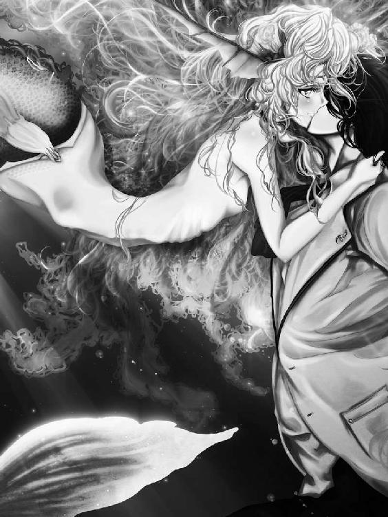

| リズベルルの魔７ 完結篇・上～永遠のメルディラージェ～ ほんとうの物語シリーズ | |
| ときてっと | |
| TOKITETO (2016) | |
リズベルルの魔７ 完結篇・上～永遠のメルディラージェ～
ほんとうの図書館１
目を閉じてそっと吸い込んだ空気の色は、澄んだ緑をしていた。
静かに瞼を持ち上げて、メイザムはそっと辺りを伺う。
不思議な森だ。あちこちに生き物が潜んでいる気配が感じられるのに、これまでただ一匹の動物も見かけなかった。
よそ者を警戒しているのか。ふっと唇を緩めて、メイザムは歩き出す。
そうしてどれ程来た頃だろうか。その建物は、忽然と現れた。
躊躇わず、扉を押す。足を踏み入れると、空気が変わるのが身で感じられた。
薄明かりに包まれた室内に並ぶ背の高い本棚を見まわして、メイザムは圧倒されていた。
ここは、図書館か。しかし何故、こんな場所に......。
思いがけず、返事が返って来る。
「そう、ここはほんとうの図書館。お待ちしておりました、旅のお方」
声の主は男だった。まるで夜を纏った様な黒い服に身を包み、そろそろと歩いて来る。
メイザムはその男をじっくりと眺め、それから苛立ちをそのまま吐き出す様に呟く。
「......成程、ずっと監視されていたと言う訳だ。この森に入った時から......いや、国を出た時からか？ ふん、腹立たしい......いつもそうだ。俺は、ずっとレールの上を歩いてきた。予め用意され、長く丁寧にしかれた決まった道をそう、歩かされてきたんだ。今度もそうだ、せっかくそのレールから外れて、この目で見定めようとはるばるやって来たと思えば......これだ」
胸中を吐露する声が、何とも情けなく図書館に響く。それに混じって鳴る、陶器のぶつかる音。
メイザムは深く溜息を吐いた。何と目の前の男は、メイザムの苦悩など何処吹く風と言う様で、何処からかテーブルを持ってきたかと思えば、お茶の用意を始めたでは無いか。
「何か誤解がある様ですが、私はこの図書館の司書の様なもの。貴方様の旅の都合等存じません」
「司書の......様なもの？」
「はい」
夜色の男が柔らかく微笑んだ。そう言えばさっき、ほんとうの図書館だとか言っていたか。
「そう、この図書館はほんとうの図書館......ここに収められた物語は全てほんとうの物語なのですよ」
まるでメイザムの胸中を読んだかのように、男が囁く。よくぞ聞いてくれた、とでも言いたげな表情に、メイザムは面喰って言葉を失うのだ。まだ、何も聞いていないじゃないか、と。
「ほんとうの......と言うと、史実に基づいた物語......と言う事か？」
「いいえ、一概にそうとは言い切れません。何せ、ここにある物語にはこれから始まる物語も含まれているのですから」
「良く判らないな」
「ふふ、皆さんそう仰います。そして私はこう答える事にしているのですよ。ここにあるのは......何処かであったかもしれない、そう言う物語です。もう終わっているのかもしれないし、そろそろ始まるかもしれません。ただ一つ言えるのは、嘘では無い、と言う事です......さあ、前置きが長くなりました。私の名はコルグストム......」
男......コルグストムの言葉を、メイザムは引き継ぐ。肩を竦めながら。
「......この図書館の、司書の様なもの......ね」
その時、ばんっと音がして図書館の扉が乱暴に開かれる。
わーっと黄色い声が本棚にぶつかり、わんわんと反響した。
駆けて来るのは、一人の少女である。
「もー！ 信じられない、信じられないわ！ お父様もお母様も無神経！ 結婚なんて大事な事、当人を差し置いて決めて来るだなんて......！ 聞いてよ司書さんっ！ 私本当に怒ってるんだから!!」
少女はテーブルに両手を打ちつけ、ばんっと音を立てる。図書館の扉が開いた時と同じくらい乱暴な音が鳴って、お茶の入ったカップが一瞬宙に浮かんだかと思うと、ちゃぷんと着地した。
ぷんぷんと頬を膨らませたまま、少女はカップを掴むと中身を一気に飲み干す。その間、メイザムとコルグストムは呆気にとられた様に何も言えなかった。
温かいものを飲んで落ち着いたのか、少女はすとんと静かになって、それでようやくメイザムが居る事に気づき、ぱちくりと目を瞬かせる。
「はれ？」
どなた？ と言う様に小首を傾げて見せた。
「丁度良い所でした、イユレール様」
こちらは旅のお方......とコルグストムが告げると、その大きな瞳が好奇心に輝く。先程までの機嫌の悪さは何処へやら、ぱっと花が咲く様に笑むのだった。
「へー！ 旅人さん!? すごい！ この国へはどんな理由で寄られたのかしら？」
「......何も凄い事なんて無いさ。それよりも、君は......イユレール？」
その名を呼ぶ時、メイザムは僅かに緊張した。少女......イユレールの姿をしげしげと眺めて、ふぅっと息を吐く。
「何か随分と気が立っていたんじゃ無かったか。どうも俺が見た所、親に無理やり婚約者を決められて怒っていると言う風だったが」
「そうそう、ずばりその通り！」
「それはまた急な話ですねぇ」
「そうそう、そうなのよ。それで司書さんに聞いてもらおうと思って」
「お相手が不満なのですかな。それとも他に想い人がおられるとか......ほら、あのお付きの騎士殿......たしかランバート様でしたか」
コルグストムがランバートの名を出した途端、イユレールとメイザムが同時に眉を顰める。
「ないない、それはな～い。確かに剣の腕は立つけれど、それ以外がまるで駄目なんだもん。肝心な所でしゃんとしてないし、ま、悪い人では無いけれど......やっぱり私、一生添い遂げるなら頼れる人が良いわ」
「では、相手に不満がある......と？」
「さぁ？」
さぁ？ メイザムとコルグストムは顔を見合わせる。
「だって相手の方の事、私な～んにも知らないもん。今度の舞踏会でお互い初めて顔を合わせる事になるのよ。でも気が進まない、だって、結婚を親に決められて黙ってる人なんて、どうせ不甲斐無いに決まっているわ。きっとね！ はぁ、こんなつまらない話また今度にしましょう。それよりも、せっかく旅人さんが来てるんだもの！ 貴方の事を聞きたいわ。私、旅をするのってう～んと憧れてるの。冒険の話が聞きたいな。そうだ、旅人さんがどうしてこの国に来たのかまだ聞いていなかった。何か目的があったんでしょう？」
くるくると良く変わる表情を向けられて、メイザムは思わず言葉に詰まり、それから後ろの本棚をそっと撫でる。
どうしてか、先程のコルグストムの言葉を思い出した。
この図書館にあるのは、すべてほんとうの物語。ほんとうの......。
「そう、俺は......ほんとうのものを探しに来たのさ。確かめに来た、と言うべきかな」
わぁ、と声を上げて、イユレールが嬉しそうにぱちんと手を叩く。
「だったらこの図書館はぴったりよ、なんたってここはほんとうの図書館なんだから！」
コルグストムと顔を見合わせて、ね、と二人微笑む様を眺めながら、メイザムもまた唇を緩める。
目を細めて、少し声を尖らせる。
「どうかな、ほんとうのものなんて......俺は信じられない。だって、これは所詮本じゃ無いか。初めから最後まで、物語は定められている。作りものだ。それとも」
メイザムは本棚から勢い良く本を抜き取った。
それは蒼い表紙に金の飾りが付いた本で、不思議な事に古びている様にも真新しい様にも感じられる。
お誂え向きじゃ無いか、とメイザムは笑う。この曖昧さ、此処ではっきりとさせてやる。
イユレールを見つめて、メイザムは言うのだった。
「それとも証明できるのかな。この物語がほんとうだと言う事を。君は俺に納得させる事が出来るのかな」
イユレールはその本をそっと受け取る。
そしてメイザムの言葉に応える代わりに、微笑んで見せるのだった。
０/４．永遠の輪
晴れた日は、普段使う最寄りのバス停を素通りして、少し遠くまで足を動かすのが日課だった。
のんびりと歩いていると、後ろから何度もバスが追い抜いて行く。
バス停で待っていれば、あのバスには乗れた訳だ。歩き出したのは自分なのに、走り去るテールランプを眺めていると、何だか一人だけ置いて行かれている様で少し寂しくなってしまう。
そうして歩くうち、大体３つ目のバス停くらいでこんなものかと音をあげるのが常だった。程良く疲労を感じ、近くの公園で一休みすると言うのも日課である。
用事があって外に出たのに、直前でぐずぐずと足踏みする様なものだったが、どうもそうやって無為に時間を潰すのが好きなのだ......学生時代を、思い出すからだろうか。
たまに時計を見るのをうっかりと忘れて、用事をすっぽかしてそのままぼんやりと過ごしてしまう事もあって、よく呆れられたものだったが、そう言う時、一番想像が働くものだからと言い訳していた。
その日もそうだ。日曜だったが、体を動かしたい気分だった。バスとの追い掛けっこに不貞腐れ、ぼんやり木陰のベンチに腰掛けて涼んでいた。
日蔭の外に降り注ぐ強い日差しが、周囲の景色の彩度を高めている様で目に眩しい。
「あの」
初め、自分に声をかけられているのだと気付かなかった。
か細く、不安気で、こちらを窺う様な囁き。
「時祭先生......ですよね」
名前を呼ばれてもまだ気付かない。何せ、その名前と自分とを結び付ける者と、こんな場所で出会う等思いもしなかった。
だから、ずいぶん遅れて顔をあげた時、少女は心細そうな表情をしていたのだった。
「はい......はい、そうだけど」
「わぁ、やっぱり」
一転、少女がふんわりと笑みを浮かべて、近づいてきた。
そうだけれど、どうして？
尋ね返そうとしたけれど、声になる前に掠れた吐息となって漏れる。
遠くで鳴いていた蝉が、急に静まった。突然の緊張に羽を鳴らす術を忘れてしまったかのように。
「私、これ、すごく好きだから」
少女が肩にかけた鞄から、一冊の絵本を取り出し大事そうに胸に抱くのを見て、ようやく納得がいった。
絵本を見つめて、ああ、と間の抜けた声を上げる。
「それ、僕が描いたんだ」
「はい、知ってます」
少女は可笑しそうに、笑う。
〝えいえんの人魚〟は元々自費出版で出した趣味の作品だった。
ほんの僅かしか刷らなかったし、勢いのままに描いたものだったから、その後どれくらいの人が読んでくれたかなど、正直な所興味が無かった。
だから出版社から声がかかった時は驚き、複雑に思ったものだった。
「それで、先月のインタビュー記事で先生のお顔を知ったんです」
冷房の効いた喫茶店。今しがた出会ったばかりの少女と二人で入るのは少し気が引けたが、この時間から空いている店を他に知らなかった。
幸い、馴染みの店主は珍しそうな表情を一瞬浮かべただけで、普段通りだった。物静かな男で、この店のそう言う所が気に入ってもいた。店内に他の客はいない。
「私、すごくびっくりしちゃった。だって私、先生の事、毎日見ていたから」
話しているのは殆ど少女の方で、自分は頷いてばかりだったが、その言葉には少し驚かされた。
どうも、バスと追い掛けっこしている所を見られていたらしい。
「先生、毎朝最初のバス停から歩いて、３つ目辺りで乗る事が多いですよね。私、いつも気にしてました。先生が３つ目のバス停で待っていると、今日は間に合ったんだなって思ったり、逆に途中で追い越しちゃうと、ああ、残念って......同じバスに乗り合わせたら、その日は一日良い日なの。私の朝の占いなんです」
すみません、勝手に。そう言って少女は鈴が鳴る様にころころ笑う。
毎朝違うバス停から乗り込む男が居る事に気付いて、奇妙に思ったのが切っ掛けなのだと言う。それから、不思議とその姿を目で追う様になったのだと。
成程、バスの乗客の顔等これまで気にした事も無かったが、始発から乗ると言う少女の方は、後から乗り込んで来る客の事をよく観察していたらしい。
「私ね、次に先生を見かけたら絶対声をかけてみようって思ってた......でも、なかなか勇気が持てなくて。けど、何だか今日がその日だなって思ったの。それで絵本を持って散歩していたら......こうして、会えたから」
照れたように微笑む少女の名は久遠碧と言った。今年で１７になると言う。
「くおん......あおい......さん」
「私ね、先生の絵本がだいすき。綺麗で、優しくて、でもとても悲しい......ずっとこの時が続けば良いと思うのに、どうしても終わらせなければならない、そんな想い、私昔に感じた事がある様な気がするんです」
碧はテーブルの上で指を組んで、何処か遠くを見る様にぼんやりと息をつく。
「私ね、先生......昔から夢を見るの。おんなじ夢。その夢の中で、私は声を失くした人魚で、水底に沈んで行く男の子を助けようと手を伸ばす......でも、男の子は背負った罪の重さと、深い悲しみで今にも押しつぶされそうで、私はただその人の為に泣いてあげる事しかできない。そう言う夢......」
「不思議な、」思わず、言葉が震えそうになる。「不思議な......夢だね」
「やだ、私......おかしな事言ってる、ふふ......時祭先生に会えて少しはしゃいでいるのかも」
「その、先生って言うの......やめてくれないかな」
「あ......」
碧が悲しげに俯くので、慌ててしまう。そう言う意味で言ったんじゃないよ、と取り繕う様に、ぎこちなく微笑んで見せた。
頬をかきながら、参ったなと肩を竦める。
「その、先生なんて......慣れないから、どうも、ね」
安心した様に、ぱっと碧の表情が晴れる。頬を赤らめて、擽ったそうに笑むのだった。
「じゃあ、時祭さん......って」
「それも、どうもなぁ......時祭って名前は、僕にとって嘘の名前なんだ。なんだかそう言う印象でね、だから作家名にした......」
「ちょっと意外です。だって〝えいえんの人魚〟は、あんなに人気なのに」
「それも、僕には腑に落ちない。今まで純粋に僕の絵本を好きだと言ってくれる人と会った事なんて無かった......僕はずっと、そういう場を避けていたからね......だから、僕にとって君が生のファン第一号かな。照れ臭いけれど、案外良いものだ。そう言って貰えて嬉しく思うよ」
それは、本心だった。
手を差し出して、唇を緩める。今度は自然と、心から笑う事が出来た。いつの間にか、声も普通に出せるようになっている。
「はじめまして、伊吹芽ルナです......久遠アオイさん」
碧がおずおずとルナの手を握る。柔らかな感触に包まれて、ルナは少し表情を強張らせた。戸惑う様に、恐る恐る伺う様に、碧がルナを見上げる。
「ル」「ナ」「？」
口の中でその音を転がして、確かめる様に、碧がルナの事を呼んだ。
「似合わない？」
揺れる感情を表に出さぬ様に、ルナはおどけて見せる。碧はほんの僅かに目を潤ませて、その事に自分自身戸惑っているかのように小さく首を振る。
「ううん、とっても綺麗な名前」
「......君は......」
言いかけて、ルナはそれ以上言葉にしなかった。ただ穏やかに息を吐き、微笑んで見せる。
かつて失った関係性を持ちだして、目の前の少女に結びつける事に何の意味があるだろう。
ただ、それでも少し思うのだ。そうだったか......と。
そうだった。１７年か。あれからもう、１７年も経っていたか......と。
それから、二人は絵本の話をした。
碧はとつとつと話し出す。ルナはただ、その途切れがちな言葉に静かに頷く。
初めは探る様だった碧の言葉は、次第にその唇から止めどなく溢れ出す様になり、熱を帯びた。
「......驚いたな、随分熱心に読み込んでくれているから」
碧の感想は作品の細部まで丁寧に読み解き、深く理解したものだったので、ルナは驚くのと同時、胸中を見透かされた様な気持ちになる。
「そ？」
「うん......僕はね、その絵本を描く時......もうこれが生涯最後の作品でも構わないと思った。そう言う気持ちで描いたんだ。僕は......本気だった」
こんな話、これまで誰にもした事が無かった。すればきっと笑われると思ったから。
けれど、碧はルナの言葉に、真剣に耳を傾けている。
ふっと、肩の力が抜けて行く。
「僕はほんとうの事を描きたかった。僕の中の印象を、写真に収めるみたいに絵で切り取って、そうして永遠のものにしたかった......誰も信じないけれど、僕はね、昔人魚を見た事があるんだ」
「えいえんの、人魚を？」
ルナは首を振る。
「彼女は永遠のものにはなれなかった。結局、人魚は永遠を人に与える事しか出来ないんだ......その身を捧げる事と引き換えの力だから。むしろ永遠と言うのは、彼女を束縛するものでしか無い......尤も、僕はあれが現実の事なのかもう区別がつかなくなっている......あれは、本当にほんとうの事だったんだろうか？ それともやっぱり夢の中の出来事だったんだろうか」
ふと見れば、碧は薄らと目に涙を滲ませてルナを見つめているのだった。
その涙の意味を、ルナは知っている。
けれど、きっと、二人はお互いにそれを確かめあったりはしないだろう。
失われてしまった関係性は、きっとこのまま涙に薄れ、決して蘇りはしないのだ。
二人がそれを望まないから。
「ずっと僕は......判らないでいた。でも、今日、答えが見つかった気がする......」
なぜならば、君にこうして出会う事が出来た。
ルナの言葉は掠れて、碧の耳には届かなかった。でも、それで良い。
小首を傾げる碧に微笑みかけて、ルナは言う。
「君が持ってるのと別に、僕が自分で出した版があるんだ......その絵本の、オリジナル。まだ僕の部屋に見本が残っていた筈だ......今度バスに乗る時に、君にあげる。きっと大事にしてくれるだろうから」
ルナの言葉に碧はぱっと顔を輝かせ、それから小さく小首を傾げる。
先程まで瞳を揺らしていた涙は、結局零れ落ちる事は無かった。
「良いの？」
ルナは頷く。
多分この絵本は、君の為に描いたものだから。
そんな事を思って、でも照れ臭くて声には出さず、ルナはグラスの中で溶け始めた氷をストローでかき交ぜる。
わぁ、と嬉しそうな声が上がって、ルナははっと顔を上げた。その拍子に、ストローがグラスの縁で弾けて、水滴がルナの唇にひやりと当たる。
「 うれしい 」
碧は、笑っていた。
ルナは眩しいものでも見る様に、目を細める。
彼女の笑みは、やはりあの......甘くとろける様な、砂糖菓子みたいな笑みだった。
１．水底の再会
この物語はフィクションです。
その日は雨が降っていて、だからきっと匂いなんて気にならなかった筈だ。多分、湿った土の匂いが鼻を擽っていた。指先に触れる温かな滴が、何よりも鮮烈に辺りを満たしていたのではなかったか。
ぼんやりと霞んだ記憶の中、思い出そうとしても何かヴェールに包まれた様に判然としない景色に溶け込むように、ルナは誰かと絡み合って倒れ、咳き込む様に喘いでいたのだ。
「大丈夫......大丈夫だ......」
嫌に穏やかな声で、そいつが優しくルナの髪に指を絡め、微笑む。痛々しいまでの精一杯な表情が、ルナの心を衝いた。
涙が止めどなく溢れていたのでは無かったか。
「昔、本で読んだ......いや、映画の中に出て来たんだったか......もう、忘れてしまった......」
奴が苦しそうに息をしながら、口を動かしている。ルナは、自分でも馬鹿馬鹿しいと頭の片隅で思いながらも、その手を拾い上げ強く握った。
「その、物語の人魚の瞳に......すごく......似ていたんだ......」
「......もう良い、もう良いんだ」
絞り出す様に、ルナは呟く。ただ静かに、首を振った。「もう、いいんだ......」
酷く、心の中を鉄色の感情が満たしていた。悲しさ、虚しさ、自分がしてしまった事への後悔と......それに反して、これは正当な罰なのだと言う確かな気持ち。
鮮やかに色付いた日々はもう過去にしか無い。その証に、心が音を立てて色褪せて行くのが判る様だ。
「深い翠緑の......何処までも澄んだ純粋な瞳......そう、似ていたんだよ......」
呟いて、微笑むと、奴の眼からぽろぽろと涙が零れる。あれ、おかしいな、と言う風に眉を寄せる奴の笑顔が、今にも強張って動かなくなるのでは無いかとルナは思った。
急に遠い目をして、奴は深く息を吐いたのだったか。
「本当に綺麗で、きらきらして......輝かしくて、どうしても、自分のものにしたかった......自分だけの、人魚に......」
ゼンマイが切れかけの玩具の様にぎこちなく、奴が視線だけをルナに向ける。
「......憎いか......？ お前の、大事なもの......奪った......でも、どうしようも無かった......どうしようも無かったんだ......今、その時の印象を......永遠にするしかないと思った......」
奴の腕が動いて、ルナを振り切り胸元に滑り込む。そうして服の間に隠れていた何かを引きずり出す。雨粒を受けて輝く、それはペンダントだった。
何か生き物の鱗めいた薄っぺらな飾りの付いたそれを、鬱陶しげに首を振って外すと、奴はそれを付き出してくる。受け取るしか無かった。
「場所は......判るな......手紙にも書いた......一通は持って行け。もう一通は......此処に残していくんだ......判るな？」
念を押す言葉に、ただ頷くしかない。
「あの場所で......きっとお前は出会う事が出来る......、れが、...そうしたから......その人魚の鱗があれば......きっとお前を......導いてくれる......」
ルナは細く息を吸い込んだ。ひょおっと空気が喉を通って音を立てる。腹の奥底が冷え切っていく気がした。
もう、こいつは自分が何を言っているかさえ、判っていないんだ。そう気づいたのだ。
だってこんなに冷たくなって、もう確かでいられる筈が無い。錯乱して、夢を見て、それで幻をルナに伝えようとしているのだ。
「人魚に......人魚に出会って......その力で、永遠を......永遠になる......」
奴の瞳から、だんだんと光が失われていく。それこそ、永遠に。
「先に行って、待っている......待っているよ......」
ぶつっとスピーカーから音が途切れるみたいに感覚が途切れて、心が暗く落ちた。ざぁっと言う冷たい雨の音だけが、嫌に現実味を帯びて聴こえていた。
「お客さん、こんな所まで何しに来たの？」
声を掛けられて、ゆっくりと瞼を持ち上げる。雨なんて降っていなくて、ただ深い霧だけが辺りを覆っていた。ぎこちなく首を回して、ルナはまずタクシーの料金メーターを確かめてから、運転手の方を見る。
静かに、息を吐いた。運転手は短く笑う。「なんも無いでしょう、この辺」フロントガラスの向こうには、鬱蒼と茂った木々が霧に包まれてあるだけだ。
ルナは答えずに、握りしめていた手紙を開く。皺になりかけていたそれを、丁寧に伸ばす。
「メイリュウ学園......」
口の中で転がす様に、その名前を確かめてみた。
変な名前......。手紙には編入を受け入れる旨がそっけなく綴られている。差出人は無い。ただ、金の蝋で封がされていただけで真っ白だ。
「学園？ この辺に学校があるのか......君は転校生？ 大変だねぇ」
運転手は判った様に頷く。ルナはそっと微笑んで返した。口を開くのが億劫だ。
再び車内を静けさが満たし、ルナはまた目を閉じかけて......あっと声を上げた。「停めてくれ！」
ルナは十分な紙幣を車の中に放ると、運転手が何か叫ぶのを背中に聞きながら駆け出す。向こうに、白い門が見えた。
霧の中に溶け込むように、何処にも錆た様子の無いぴかぴかの門が見える。ルナは森の中を走った。斜面を滑り降り、木の根を飛び越え、辿り着く。
力いっぱい動かしていた足が、次第に速度を失い、静かに落ち葉を踏みしめる様になる。ゆっくりと、ルナは〝メイリュウ学園〟と書かれた門の前に立った。その向こうに見える学園を見た。
何処からか、鐘の音が聞こえる。まるでルナを迎え入れる様な、音色だ。鳥が首を捻られた様な音と共に、門が開いていく。
ルナは懐かしさに目を細めていた。
「なんだ、わざわざ出迎えてくれたのか？」
照れ隠しに、そんな事を言う。何故だか目頭が熱くなる様だった。
「変わっていないな、ルナ。ようこそ、メイリュウ学園に」
幼馴染の永倉ハルカは、そう言って芝居がかった仕草で頭を下げて見せた。
「驚いたろ。これ、海から直接水を取りこんでいるんだぜ」
少し前を歩くハルカが、おどけて言う。ルナは手にしたトランクを弾ませ抱え直すと、ほうっと息を吐いた。
「まるで水族館みたいだ」
愉快そうな声が弾ける。ルナは浮足立つ気持ちを、それで隠す理由も無くなって、きょろきょろと辺りを見渡した。
落ち着いた空間に、ゆらゆらと光の波が射して何とも不思議な雰囲気に満ちていた。こんな所が学園だなんて......とても信じられない。
「まさか壁一面、水槽だなんて」
「硝子一枚隔てた向こうは海さ。こんなものが陸の上にあるだなんて信じられないだろ」
「本当に、僕らの方が海に潜っているみたいだ」
「ほら、見とれていないで。どうせ今日から毎日、うんざりするくらい見る事になるんだ」
廊下の曲がり角で待つハルカが茶化す様に笑った。
「荷物、持とうか」
「悪いよ。久々に会ったからって、気を使っているのか？」
「まさか、そんなんじゃ無いさ」
今度はルナが肩を竦める番だった。ハルカとはもう何年も会っていない気がしていたが、顔を合わせればこんな風に昔のままだ。それがルナにはおかしくて、嬉しかった。
「最初は職員室？ いや、まずは荷物を置きに寮に寄るべきだな。メイリュウ学園は広いから、案内がてら歩くとしよう」
ルナが頷こうとした時、丁度ハルカが居るのとは逆の方から、あっと声が聞こえた。
思わず振り返ると、女生徒が一人駆けてくる。曇りの無い笑顔で、快活な印象の少女だった。ルナの前までやってきて、ついっと顔を覗く。
「あなたが噂の転校生？ ふうん、思っていたよりも普通じゃない」
「森園クゥラ」
咎めるとまではいかないまでも、少し呆れた様にハルカがその娘の名前を呼んだ。クゥラは舌を出して首を傾ける。
「ごめんね、でもどんな人か気になっていて。だって転校生なんて、ね？ ふふ、制服なんか着ちゃって。此処ではそんなの着る人、いないのよ」
何か言いたげなハルカに、ルナは苦笑して首を振る。嫌味たらしく言われたら怒ったかもしれないが、クゥラの明るい笑顔を見ていると悪い気はしない。
「僕は伊吹芽ルナ。よろしく、クゥラ」
「いぶきめ君ね、ううん......ルナ。ルナの方が呼びやすい。ね、良いでしょルナ」
返事をする前に、クゥラはルナの手を取ってぶんぶんと振る。隣でハルカがしょうが無い奴だ、と言う風に唸っていた。
「ルナはハルカの幼馴染なんだってね。ハルカから聞いてるわ、ねえ......どうして転校なんかしてきたの？」
「え？」
不意に尋ねられ、ルナは言葉に詰まる。何と言うべきか迷っているのに気づいたのか、クゥラはふわりと笑んだ。さっきまでと全然違う印象のその笑顔に、ルナは困惑する。
「ふふ、ごめんね。おかしな事を聞いて......あら？」
と、クゥラは今度も急に笑みを消す。何だか忙しい人だな、と思いながら視線を辿ると、彼女の関心はルナの胸元にとまっている様だった。
「ああ、これ？」
言って、ルナは首から下げたペンダントを手に乗せて、クゥラに良く見える様に差し出した。少し照れくさくなりながら頬をかく。隣で、ハルカが短く溜息を吐いたようだった。
「変かな、男の僕がこんなもの」
「もう......持っているのね」
「え？」
思いがけず鋭い声に、ルナは眉を寄せてクゥラを見る。クゥラは弾かれた様に顔を上げ、それから取り繕う風な笑みを浮かべて見せた。
「変だなんて、それこそ変だわ。だってこれ、人魚の鱗でしょう？ この学園の生徒は皆このペンダント、持っているもの」
「そう......なんだ......」
「でもあなた、転校生でしょう？ だからどうして持っているのかなって、少し気になったのよ」
「これは......昔......大事な人に貰った......」
そう呟いてから、ルナは目を細めた。いつ、誰に貰ったのだっけ......。とても大事な人だった筈なのに、その人の顔も、その時の事も思い出せない。
また鋭い視線を感じて我に返ると、クゥラはにこにこと澄んだ笑みを浮かべていた。気のせいか、とルナは喉を鳴らす。
「ハルカも持っているんだ？」
ありもしない視線から逃れようとして尋ねると、ハルカはふと睫毛を揺らし、それからクゥラを見て気まずそうに頬をかく。
「いや、俺は実の所......失くしてしまったんだ。ずっと前に」
「もう、ハルカったらだらしないんだから」
「それよりも、その人魚の鱗って？ そう言う名前なの、このペンダント」
「ふふ......何にも知らないのね。良いわ、歩きながら教えてあげる。良いでしょう、ハルカ」
「構わないさ」何でも無い風に頷くハルカだった。「どうせ、知る事になる」
「この学園には秘密があるのよ」
クゥラは初めにそう言った。歩きながら水槽を眺めていたルナは、興味を惹かれてそちらを見る。目移りしていた事が可笑しかったのか、クゥラは口元に手をやってくすくす笑うのだった。
「凄いでしょう、この学園。そこらの水族館よりよっぽど沢山魚が泳いでる......これだけいると、生徒の数より多いかも。そう、その話もあった。ねえルナ、この学園にね、〝あなただけの魚〟が居るのよ」
「僕だけの、魚......？」
「そう、あなたにしか懐かない。あなたとピッタリのあなただけの魚。この広大な学園を泳ぐ途方も無い数の魚達の中から、自分だけの魚を見つけられた人は、何でも一つ願いが叶うのですって」
何とも不思議な話だった。ルナは深く溜息を吐いて、それからまたすぐ傍の壁に埋まった水槽を眺める。廊下の一面がすっかり硝子張りになっていて、その中を色とりどりの魚の群れが優雅に泳いでいるのだった。
「見つけられるかな、僕も」
「見つけられると良いわね。それで、何の話をしていたのかしら？」
「学園の秘密だろ。地下で眠る人魚の伝説......」
何か憂いを帯びた様な低い声。それがハルカらしく無い気がして、ルナはそっと表情を窺う。判らなかった。離れている間に、ハルカは少し変わったのかもしれない。昔のままだと思っても、些細な変化が積もって大きな溝になる......ルナ自身も、それは同じだ。
「そうそう、人魚の話よ。この学園には人魚がいるの。そう、学園を泳ぐ魚達に隠れて、何処かで歌っているんだわ。そうして、この人魚の鱗を持つものだけが、彼女に会う事が出来る」
そうしてクゥラはポケットからそっと、ルナのと同じ形のペンダントを取り出した。まるで外敵から守るかの様に、大事そうに両手で包んで。
ルナも思わず、自分の首に下がったペンダントを意識する。人魚の鱗......か。
「彼女？」
「アイオーンの人魚、移ろわぬ者、最果てで眠る歌声、学園の地下に幽閉された......静謐なるメルディラージェ。そう呼ばれてる」
「メルディラージェ......」
聞いた事の無い響きだった。不思議な響き......この鱗が、その伝説の人魚のものなのだろうか。
まさか、作り話に決まっている。思わず噴き出しそうになった時、クゥラのギラギラした瞳とぶつかって、ルナは口籠る。
クゥラの口から、似合わず鋭い声が漏れた。
「皆、狙っているのよ」
「......狙って、いる？」
「人魚の力を」
囁くクゥラだった。
「学園の何処かに居るメルディラージェを探し出して、彼女の傍に封印されているサニドの銀鍵でその体を貫く......そうして手に入るのは永遠の力......」
「永遠の......？」
「どうかな」
ハルカが素っ気なく呟いたが、クゥラには聞こえなかった様だ。まるで芝居に入り込んだ役者の様に、ルナの事すら忘れてしまった様子で語るのだった。
「静謐なるメルディラージェの力を得たものの魂は、永遠となり世界のくびきから解放される。人魚の血を飲めばたちまち傷が治って、肉を食らえば不老不死になれるってお伽噺聞いた事があるでしょう？ つまり永遠ってそう言う事なんだわ。ずっと変わらないものが手に入るのよ」
「ふぅん......でも、皆がそれを探しているだなんて、僕にはとても信じられない。だって、作り話だろ？」
確かに、不老不死だなんて面白い物語ではあるけれど。そう言って笑おうとするルナの腕を、クゥラがぎゅっと掴んでいた。
「違う。伝説だけど、でも嘘じゃないわ。本当の事よ」
「ごめん、茶化したつもりは、無いんだけど......」
ルナが驚いて目を丸くしていると、クゥラははっと我に返り、それから誤魔化す様な笑みを作った。暫くきょろきょろと辺りを見回して、大きく溜息を吐く。
「ごめんなさい......何だか私、一人で盛り上がっちゃって」
そう言って眉を寄せ笑ったクゥラは、やはり何処か憎めない様に思えて、ルナは微笑む。女の子ってのは、この手の話が大好きなものだ。そう言えば、妹もこの類の話に良くのめり込んでいたっけ......とルナは思い出す。
「人魚、見つかると良いね」さっきのお返しの様に頷いて見せた。
「うん、それじゃ私行くね。邪魔しちゃってごめんなさい！」
そう言って手を振り、クゥラは軽やかに去っていく。その背中が廊下の向こうに見えなくなると、ルナはふっと笑ってハルカを見た。
「悪い人じゃ無いみたいだ」
「あぁ」と肩を竦めてハルカは言った。「あの話は、この学園の誰もが知っている。クゥラだけじゃ無い。皆そうだ......皆人魚の力を手に入れたいと願っているのさ」
「ハルカも？」
「そうだ」幼馴染は深く頷いて、思いがけず深刻めいた表情でルナを見る。「だが俺は、不老不死の力が欲しいんじゃない。この学園の秘密を暴いて、白日の下に晒したい。欺瞞に満ちたこの学園の......偽りの姿を破壊し、そしてメルディラージェすらも現実に引きずり出すつもりだ。俺はすっかり逆だ。永遠を失くしたい。それが俺の償いなんだ。その為に、俺はお前を待っていたんだ......ルナ、転校生であるお前を」
ぽん、とルナの肩を叩き、ハルカは歩きだす。何故だかルナはその場から歩けなくなっていた。何か大事な事を忘れている様な、そんな気分だ。
ハルカが立ち止まり、振り向く。
「何してるんだ。学園は広いって言ったろう」
ルナにはただ、静かに頷くのが精一杯だった。
「伊吹芽君って永倉君の幼馴染なんだって？」
「ああ、昔は毎日の様に遊んだもんさ。俺とルナ......それからルナの妹と三人で。あの頃は毎日が満ち足りていた。不安なんて無かった。懐かしいなぁ」
ハルカを囲む女生徒達が、わっと沸く。ホームルーム、お決まりの自己紹介を済ませて退屈な授業を繰り返し、今は放課後だった。ルナは輪の中に居ながらも、何だか疎外感を感じずにはいられない。
生徒達にとってこの学園は退屈な日常、代り映えのしない風景。この奇妙な学園の中にあって、それを奇妙と感じているのはルナだけの様だった。生徒達からしてみれば、転校生のルナの方が異物なのだ。
着いて早々あんなお伽噺を聞かされたからだろうか、いっそうその感覚の乖離を強く感じた。
認識の齟齬が溝となってルナを輪の外へと弾き出す。すっかり孤独に包まれてしまわないのは、ハルカが居てくれるお陰だった。
懐かしい幼馴染。親友の誓いをした事さえあった。長い月日の中で、ハルカは変わったかもしれない。ルナは授業が始まる前、学園を案内してもらっている最中にハルカが見せた深刻な顔を思い出す。
久方ぶりに再会したこの幼馴染は、今もまだルナの事を親友と呼んでくれるのだろうか。
ぼんやりと考えながら、ゆっくりと周りのぺちゃくちゃした会話を頭の隅で租借する。ハルカが口にした一言が、ようやく意味をなしてルナの思考に揺さぶりをかけた。
妹......。
ああ、そうだ。胸を鷲掴みにされた様な感覚。ハルカが人魚を探す為にルナの事を待っていたのだとしたら、ルナにはルナで目的があった。
この学園にやってきた目的......。
遠くにいる妹を、探し出す事。
妹はこの学園の何処かに居る。その事をなんで今まで思い出さなかったのだろう。ハルカもどうして、言ってくれなかったのだろう。
そっとハルカの顔を見上げると、彼は他の生徒達とにこやかに喋っている最中で、さっきの深刻さが嘘の様だ。
そんなハルカの視線が、ふとルナの方へ向く。うん？ と首を傾げて、微笑んでいた。ルナはとっさに唇を引き締め、首を振る。帰宅を促す鐘が響いた。
「さて、皆転校生が珍しいのも判るが、そろそろお開きにしよう」
そう言ってハルカが椅子から立ち上がる。すると周りの生徒達もそれに合わせて散り散りになって、それぞれ鞄を取るとこちらに向けて手を振るのだ。
ハルカがすっかり中心に居る事を見せつけられて、ルナは少しだけ驚いて、少しだけ誇らしくもあった。
「人気者なんだ」
思わずそう口にすると、ハルカは怪訝そうにルナに目をやる。
「馬鹿、皆お前に興味があって集まっていたのさ」
「そうかな？」
「ああ」ハルカは一つ頷いて。「転校生は、人魚の力に一番近いからな」
また、人魚か。
「その話は、あとでゆっくりしてやるよ」
そう言って、ハルカは不敵に笑んで見せるのだった。
少し前を行くハルカの背に、ルナは声を投げる。「ハルカ」
幼馴染は立ち止まらず、ちらりと振り返ってルナを見て、また元通り視線を戻す。からかわれている様で、ルナは速足になってハルカに追いつくと、少しだけ声を大きくした。
「聞きたい事があるんだけど」
水槽の向こうから強い光が射していて、足元にはゆらゆらと光の波がたゆたっていた。
「お前さ、僕の......妹の事、覚えてる？」
ぶつかった視線からは、何の意図も読み取れない。柔らかく唇を持ち上げて、ハルカは目を細めた。懐かしむ様に。
「忘れるはずがないさ」
「この学園にいるだろ。会って無いのか？」
「......ああ」
何処か遠くを見る様にハルカが顔を持ち上げる。そして眩しそうに目を細めた。ルナもつられてそちらを見ると、吹き抜けになった天井から刺す光で確かにそうせずにはいられない。上の階も、そのまた上もずっと、壁は硝子張りの水槽の様で、日溜まりの中を優雅に泳ぐ魚達の影が、そこかしこに大きく映し出されているのだった。
あんな光の中を泳ぐ様で、暑くは無いのだろうか。そんな風に要らない心配をしてしまう。
「おーい、お二人さん～」
不意に声がかかって、ルナはそちらを見やる。２階から手を振る人影。逆光になって良く見えないが、ハルカには誰だか判った様だ。手を振り返していた。
その人影が、軽やかなステップで階段を駆け下りてくる。すぐ傍まで来てルナはようやくそれが誰であるのか理解した。思えば、転校したてのルナにこんな親しげに近寄ってくる生徒等限られている。クゥラだった。
「今帰り？」屈託無い笑顔で笑うと、小首をかしげて見せる。
「あ、そう言えば違うクラスだったんだ」
今更のようにルナは気づいたのだった。ハルカと親しげだったから、てっきり同じクラスだと思い込んでいた。
「今頃～？ 私、そんなに影薄いかな」
「馬鹿言うなよ」ハルカが意地悪気に笑うと、クゥラは頬を膨らませる。と、彼女の裾を引っ張る手があった。クゥラの後ろに隠れる様にした少女が、ひょっこりと顔を出す。と言っても、背が高いのは彼女の方だ。
「あ、紹介するわね！ この娘はリリシェ。花咲リリシェ。私の一番の友達なの。二人揃って隣のクラス」
クゥラは少女の後ろに回り込むと、その肩を両手で押して一歩前に歩ませる。リリシェは俯きながら、上目づかいでルナを見上げて、俯きがちの頭を更にぺこりと下げた。
「よろしく......おねがいします」
魚が水をかく音にかき消されてしまいそうな声だった。
「こちらこそよろしく」
何だか小さな子供を相手にしている様な気分で、ルナは腰を屈めて俯きがちのリリシェに目線を合わせて笑む。ふと懐かしい気持ちになって、それはきっと妹の事を思い出したからだろうなと思った。
肩をすぼめて小さくなるリリシェを見て、クゥラは満足げに頷くと、彼女の手に指を這わせてまるで恋人同士がするみたいに絡める。リリシェはほんのり赤くなって、手を繋いだままクゥラの後ろに隠れてしまった。
「それじゃ、私達急ぐから」
クゥラはリリシェを引っ張って駆け出す。振り返ってこちらに手を振る事も忘れない。「忙しい奴だろ」肩を竦めるハルカだった。遠ざかっていく二つの背中から、くすくすと笑い声が微かに届く。同意を込めて、ルナはほっと息を吐いた。
「夜の零時」
寮の宛がわれた部屋の前まで来た所で、ハルカがふと思い出した様に呟いたので、ルナはノブにかけた手を止める。今まで誰も使っていなかったのか、妙に硬い手ごたえと共にがちりと言う音が嫌に響いた。
「......いや、今は良い」何か思い直した様に、ハルカは首を振る。それから急に明るく笑って見せたので、ルナは眉を落とした。「それより、来たばかりで大変だろ。部屋の片づけとか手伝おうか」
「僕が持ってきたのはあのトランクだけだよ。片付けに手間取るほどじゃ無いさ」
「それもそうか。それじゃ、俺は２つ隣の部屋だから......何かあったら声をかけてくれ」
そう言って自室に帰っていくハルカの背を見送りながら、ルナは妙な胸騒ぎを覚えるのだった。
この奇妙な学園で感じる疎外感......容易く消える気がしないのは何故だろうか......と。
擽ったそうな笑い声が駆けていく。第一校舎から独立して建つ一本の塔。日差しを受けて輝く、メイリュウ学園の美術塔......重そうな扉を慣れた様子で引く二人......クゥラとリリシェである。
手を繋いだまま階段を駆け上がる二人の姿が、本校舎と同じく水槽となった壁にぼやけて映る。そのまま二人はお気に入りの一画までやってくると顔を見合わせてころころ笑うのだった。
張り出したスペース、安全の為に設けられた柵をするりと潜って、悪戯っぽく笑んでからそれが合図だったかのように二人揃って飛び降りる。
ほんの僅かな間が合って、ばしゃんと水がぶつかる音がした。
「......っは！」
初めに浮かんできたのはクゥラだった。続けてリリシェも顔を出す。あの張り出したスペースは、丁度下の階の水槽の真上にあって、申し訳程度にある柵もこうして簡単に乗り越えられる。勿論水槽に蓋なんて無いから、ちょっぴり勇気を出せばそこは秘密の水浴び場だった。人目の付く本校舎ではとてもこんな悪戯出来やしないけど、卒業生の作った訳のわからないオブジェを見に美術塔までやってくる物好きなんて、この時間にそうはいない。
だから今、この塔にクゥラとリリシェと二人きり。こっそり水槽で泳いでも、咎める人なんていやしない。
「ふふ......可愛い、リリシェ」
そう言ってクゥラは体を寄せると、リリシェの頬にそっと唇を当てた。リリシェはほんのりと赤くなって、小さく頷いて微笑む。濡れた髪が、しっとりと額に張り付いていた。
「あの人が、転校生なのね。何だか私達と変わらないみたい」
そう言ってクゥラの手に指を絡めるリリシェの足元から、体を捻じ曲げて苦しむ魚が一匹浮かんでくる。先程飛び込んだ時に踏みつけられたのだろうか。暫くもがいた後、不意に泳ぎ方を思い出したかのように活発になって逃げていった。
「リリシェったらルナの事じっと見つめて......もしかして気に入った？」
微笑むクゥラの瞳に、嫉妬の色が浮かぶ。リリシェはそれを見て小さく首を傾けた。クゥラの胸に燃え広がる感情を味わう様に。
「ただ、そう......〝綺麗〟な人だなって思っただけ......人魚を呼ぶには〝綺麗〟なのが重要なんでしょう？」
「そう。人魚は魂に惹かれて現れるのよ。この学園に染まりきっていない......活きの良い魂。あの転校生君なら、きっと人魚をおびき出せる」
「静謐なる人魚メルディラージェ......その力で私達......」
「そう、ずっと変わらないものになるの......」
両手をきつく絡ませて、二人は正面から微笑み合う。「私とあなた......二人で」「ずっと一緒に......」
屈託のない、無邪気な笑い声が、揺らぐ水面に溶け合う様に響いていた。
何処か遠くから声が聞こえる気がする。なだらかな旋律......歌の様だが、どうにも不明瞭で判然としない。
意識の裏で、雨音を聞いていた気がした。ぼんやりと霞む意識を、ルナは無理矢理持ち上げる。ゆっくりと目を開いて、肺の中の重苦しいものを全て吐き出した。ベッドの上。汗で服が体に張り付いている。眠っていたのか......。
何か夢を見た様な気がした。瞼を開けるほんの少し前までは鮮明に浮かんでいた筈のそれは、覚醒の瞬間に跡形も無く霧散している。
ルナはうんざりとした表情で顔を擦り、壁にかかった時計を見た。もう、真夜中。針は１１時半を通り過ぎた所だ。
立ち上がって伸びをして、皺になりかけた制服をはたく。やはり転校初日で気を張っていたのだろうか、思いの外疲れていた様だった。
伸びをして、窓に近づく。確かめるまでも無く、外はすっかり真っ暗だ。白い門の向こうに、霧が立ち込めている。ルナははっとして息を飲んだ。
「......やっぱり、聞こえる」
風に乗って、何処からか歌が聞こえてくる。今にも途切れてしまいそうな歌の正体を掴もうと耳をすませると、それは意地悪するように遠ざかって行くのだった。
何故だか嫌に興味を惹かれて、ルナは急く足で自室を飛び出す。もっとあの歌の近くへ。正体を確かめてやると言う気が心の深い部分から沸き上がっていた。
と、思わずドアノブを掴んだまま、ルナは立ち止まってしまう。
「こんな夜中に、何処へ行く気だ」
「......ハルカ」
ハルカが、２つ隣の扉の前に背を預けて居た。悪戯っぽい笑みを浮かべてルナを見る。
「歌が聞こえたんだ」
間の抜けた台詞だと思いながらも、そうとしか説明のしようが無くて、ルナは掠れた声で呟いた。ハルカの眉が持ち上がる。驚いた様な表情で、しかし一方で深く納得した様に唇を結び、頷いて見せるのだった。
「人魚の歌さ。最果てで眠るメルディラージェ......彼女は眠り続けたまま、それでも歌を止めないでいる」
「まさか......」
そんなのは、学園の伝説で、お伽噺で、ただのでまかせだ。
頭ではそう思っても、何故だかルナは確信していた。
あれは人魚の歌に違いないと。
「俺は人魚の居場所を知っている。そう言ったら、お前付いてくるか？」
そう言って歩き出すハルカの背を、ルナは追い掛けずには居られない。
不思議と気持ちが浮足立って、力強さが沸いてくる。
ハルカにけしかけられたからじゃ無い。
ただ、人魚なんてものが居るのなら、僕もそれに会ってみたい。そう思ったからだ。
「幾つかに別れている中央の建物を本校舎。それから用途別に離れた塔が何本かある。昼間も案内しただろう。人魚が居るのは、本校舎にぐるりと囲まれた中央図書館だ」
暗い庭を歩きながら、ハルカはそう説明した。夜の学園と言うのはそれだけで何か雰囲気に満ちていたが、今はうっすらと霧が浮かんでいてそれがより一層怪しさを際立てている。
ハルカの隣に並んで、ルナは注意深く辺りを見回しながら尋ねている。
「ハルカはどうしてそんな事を？」
「簡単な事さ。伝説では、人魚は学園の地下に幽閉されているんだ。探す所は限られてくる」
かつかつかつと、靴の音だけが鳴っていた。あの歌はとうに途切れていて、幻聴か何かだったのでは無いかと言う気がしてくる。
すっかり静まった中央図書館の扉を、ハルカは力任せに押しあける。意外な事に、扉は苦しそうな音を立てて、ルナ達を招き入れた。
「鍵が、かかっていない......」
「〝そう言う事〟の為に設けられた建物って訳だ。俺達が此処に来る事も、予め見通されていたのかもしれない」
まさか、ただの不注意さ......言葉は浮かんでくるのだが、どうしても説得力に欠ける気がしてルナは口を噤む。ルナの考えている事が判ったのか、ハルカはニヤリと笑んで見せた。
「俺はこの学園の事なら何でも判る」
「どう言う意味？」
「今に判るさ。そう」と、不意に遠くを見るハルカだった。「全てが終わる時までに、お前も気づく事になる」
意を決して、図書館の中へ潜り込む。丁度ロビーの中央にある何かが、何処からか届く微かな光を受けて煌めいていた。
巨大な円が地面に描かれている様に見えた。近づいてみると、それは床に広く設けられた大きな時計である。人の体程もある針が、がしん、がしんと微かだが重量感を感じさせる音と共に動いている。その音が、ハルカとルナの足音に重なった。
「......！」
がらぁんがらぁん、と大きな音が響く。天井の向こうから鐘の音が聞こえた。そう言えば、この学園に足を踏み入れた時にもこの鐘の音を聞いた筈だ。中央図書館の天辺にあったのだろうか......。
いや、何かおかしい。こんな真夜中に、時刻を告げる鐘が鳴るだろうか......。
「零時だ」
力強く、ハルカが言う。そうして時計の中央まで歩いていくと、ルナを手招いた。近寄ってみれば、中央の針を纏める軸の真ん中に、何やら窪みが見える。
「普段はこうなっていない。夜の零時きっかりに現れるんだ。もうあと何十秒も無い。急げ」
そう説明するハルカが何を言わんとするのか、ルナには判った。殆ど無意識のうちに首元のペンダントを拾い上げ、外して、その台座にそっと近づける。
人魚の鱗を持つものだけが、彼女に会う事が出来る......そんなクゥラの言葉が思い出される。
果たして鱗は、ピッタリと窪みに嵌まり込んだ。がしん、と針が動き出す。
「何だ......」
足元から重々しい歯車がかみ合う様な機械音が響いてきた。ルナ達の足を掬う様に長針と短針とが回り始める。慌てて飛びのいて、驚きのままにその行方を見守った。
まるで月が欠けるかの如く、針が走っていく下の時計盤が回転し、ぽっかりと口を開けた。穴だ。
これまで隠されていた地下への入り口が、からくりによって露わになっていく。最後にひと際大きな音を立てて、時計全体が僅かに床下へ沈んだ。
「此処まで、俺がお前を導いてきた。だけど、この先はお前次第だ。行くも良し帰るも良し、後悔したく無ければ、お前の意思でどちらか選べ」
「決まっている」
そう、この奇妙な学園に来て一日目、まだ自分の立ち位置であるとか、これからの生活についてだとか、流れに身を任せるばかりで気持ちが纏まらないでいた。
だけど、この瞬間どう言う選択をするかは、まるでずっと昔から決まっていた事柄であるかの様に判る。
遥かな昔から用意されていた台詞を、まるで埃を払う様な気持ちで口にした。
「僕は行く。人魚の力なんて......僕は要らない。けど、あの歌は何だか心に刺さるんだ。僕は行くよ、例えお前が止めてもね」
ハルカはふっと笑ったろうか。ポケットに手を突っ込んで、呟くのだった。
「行くぞ」
暗がりへと延びる階段を二人、降りて行く。
一段、また一段と、螺旋状にくねる階段を踏みしめながら、ルナは徐々に緊張感と期待感とが胸に膨れ上がっているのを意識していた。
心臓が高鳴る。それで血が廻ったのか、思考がやけにクリアになって、目も闇に慣れて来たからだろうか......何だか辺りが見えてくる様だ。
いや、違う。目を凝らせば、それこそ永遠と続くかと思われた螺旋階段の終着点が確かに見えるでは無いか。
初めはぽつりと、進むにつれて次第に大きく、光が見えてくる。
何処から差し込むのだろうか、そこだけ仄かに明るく輝いて見えるのだ。
舞台めいた円形の広場、その周りは水で満たされて......そして光を取り巻く様に咲き誇る、青い別の光。
その舞台に辿り着いた時、ルナは思わず息を飲んだ。伝説は本当だったのかもしれない。そう思わせる何かが、そこにはあった。
「......青い、花......」
ルナ達が降り立った円形の舞台を取り巻く水の向こうには、一面の花が咲いているのだった。風も無いのに、ふわりふわりと揺れて、ずっと向こうまで続いている。
むっと鼻につく程の花の香り。人魚の眠る場所だ、と言われれば信じてしまいそうな光景。
「何の花だろう......薔薇みたいだ。でも昔、青い薔薇は作れない色だって聞いた事がある......それに、こんなに鮮やかな......作り物めいた青......」
でも、昔の話だから......。ルナはそっと隣に立つハルカの顔を見た。険しい表情で、ハルカもまた緊張しているのかも知れない。
「さてな......でも、青い薔薇の象徴するものは......永遠......」
「永遠？」
「そう、永遠にあり得ないもの......全てを否定する、幻想の花さ」
「なら、私がその花に肯定される最初の人になるわ」
思いがけず二人の空気を切り裂く声。ルナははっとして振り返ると、向こうに立つ人影を見た。
影になって見えない表情。かつかつと言う足音と共に、彼女の顔を覆う黒いヴェールが晴れて行く。
そう、彼女......クゥラの微笑む顔が、舞台上にあった。
「伊吹芽ルナ、永倉ハルカ......ごきげんよう、二人とも」
「クゥラ、何で君がここに......？」
いつの間に？ まるで秘密の悪戯がばれてしまった時の様に、ルナの心臓がどくどくと高鳴る。
自分でも、どうしてこんなに焦っているのか不思議だった。
あんまり急に声をかけられたから驚いているのか、それともそこに居るのがクゥラだったからか......あるいは、クゥラが今まさに歩み寄り、艶めかしい動きで撫でたそれが気になったからか......。
きっとどれも正解に違いない。
そして、ルナは意識してしまった。
舞台に降り立ったその時から、ずっと目に入っていた筈なのに無視していたそれを。
何処かに恐れがあったのだろうか。学園の伝説が真実である事を受け入れ難く思う自分が、その存在を拒んでいたのかもしれない。
それでもひとたび目に留まれば、もう受け入れずには居られない。
舞台中央にすっと突き立てられ、灯りを受けて煌びやかに輝いている銀色のものを......。
「誰に唆されたんだ」
「人聞きの悪い事言わないで。私は私の意思で、人魚の力を得るために来たのよ」
そう言って、クゥラは銀の柄を強く握る。
ルナはあっと声を上げそうになった。
クゥラの笑みが、舞台いっぱいを支配した。
「その眼差しを私に――――......サニドの銀鍵よ！」
しゃぁんと音がした。ルナは思わず目を細める。クゥラが引き抜いた銀鍵が、光を発して煌めいたのだ。
あれが、学園の伝説。封印されていたと言うサニドの銀鍵......では、クゥラが手にした事で、その封印が解けたと言うのか。
それは単に鍵と呼んで良いものでは無かった。鍵と呼ぶにはあまりに大きく、その背は研ぎ澄まされて正しく刀身と呼べるほどに鋭利で、そう、それは全体で一つの芸術品めいた剣そのものだった。
光が刀身に吸い込まれて行く。どんどん辺りが暗がりに呑み込まれて、異変はその時に起こった。弱まる光が止まらない。いや、初めよりも暗く......舞台全体が闇に呑み込まれて行く様ではないか。
「......！」
ルナもハルカも、思わず顔を腕で覆った。吹き荒れる風に飛ばされまいとして踏ん張る。青い花びらが狂った様に飛び散り、ルナの頬にぶつかった。
おおおおお......！ 闇そのものが叫んでいるのだろうか。なんとも名状し難き声が、足元から響いてくる。
正確にはある一点......ほんの少し前までサニドの銀鍵が突き刺さっていた舞台の中央から聞こえてくるのだ。
おかしい、舞台上の演出にしても......度が過ぎてやしないか。冷たい汗が背中を擽る。引き返せない、と思った。
これは、悪戯や転校生を驚かせる為の芝居じゃ無い！
クゥラの歓喜する様な、泣いている様な、感情の高ぶった笑い声。彼女を取り巻く闇が、その髪を撫でて頬に触れ、鳴く。
亡霊の様な影が......荒れ狂う風と共に幾つも幾つも、沸き上がっては檻から逃げ出す様に、天へと昇っていた。
「見なさい！ これがこの学園に沈んだ者の末路よ......！ 私はこんなの嫌、私は変わらないものになるの！ そう......人魚の力を手にして、永遠なる者へと......！」
すぱん！ とサニドの銀鍵が空を断った。全てが元通りになる。闇は光に、亡者の幻影はかき消えて......静けさが戻る。
辺りを舞う青い花びらだけが、今しがた起こった事が事実であると告げていた。
「クゥラ、君は......！」
混乱したままに、ルナは思わずクゥラを見て叫ぶ。クゥラは手にしたサニドの銀鍵、その切っ先を......ルナに向けた。
知らず、悲鳴じみた声が漏れる。すっと空気が喉を通り過ぎた。説明を求める様に、こちらへゆっくりと歩いてくるクゥラを眺めるしか無い。
何か取り返しのつかない事に巻き込まれてしまった。頭の中をそんな焦りが支配する。
「ごめんねルナ......でも許して。人魚は魂に惹かれて現れるのよ。そう、この学園に染まりきっていない新鮮な魂に......あなたも今目にしたでしょう？ 学園に沈んだ魂の汚らしさ。醜悪な様を......」
構えて、笑む。クゥラの体が沈んだかと思えば、次の瞬間にはルナ目掛けて跳んでいた。
「あなたは私が手にする永遠の糧になるのよ！」
「わぁっ！」
ルナは叫び、目を瞑る。キィンと言う金属音と共に、瞼越しに光がルナを覆った。ほんの一瞬の後、痛みが無い事に気づく。目を開けた。
「......！」
眼前に、剣が突き刺さっている。サニドの銀鍵か？ そう思ってクゥラを見ると、彼女はルナからほんの一歩下がった位置に居て、その手には確かに銀鍵があった。
クゥラの苦々しげな表情。その視線を追う。螺旋階段の上に、ハルカの姿があった。目が合うと、ニヤリと笑む。
「返すよ。元々、お前のものだろう」
おどけた様な声。
言葉の意味は判らなかった。けれどルナは、階段の上から投げつけられ、ほんの一瞬前に自分の命を救ってくれたらしいその剣を、力いっぱいに引き抜いた。鈍い、金属音。
サニドの銀鍵の様に光を発する事も無く、闇を生む事も無い。本当にただのくたびれた剣だ。まるで舞台道具の様なその剣が、こんなにも心強いとは。
ルナは汗でぬるぬると滑る手に、剣を握り直す。呼吸が、嫌に荒い。
「高みの見物？ お友達を見捨てるなんて、ハルカってば案外冷たいのね。あなただって人魚の力を求めて来たんでしょうに」
「違うな」
きっぱりと、ハルカは言ってのけた。
「俺にその資格は無い。俺は元より、見届ける為に来たのさ。俺は全てを明らかにする力を求めて来た......ルナがそれを遂げるのを、見守る！」
「訳わかんない」
クゥラが冷たく吐き捨てるのと、飛び込んで来るのとは殆ど同時だった。
ほんの一瞬。それまでルナの頭があった場所を、サニドの銀鍵が貫く。空を切った刃が、横滑りに薙いでルナに迫った。
両手で握った剣で受ける。じんと手が痺れ、ルナは歯を食いしばった。力任せに振り切ると、クゥラは笑う。まるで余裕の表情で、それはサニドの銀鍵が彼女に力を与えているかのような......。
ひゅん、ひゅん、と空を切る音。音だけでは無い、刀身が光となり、ルナの体のあちこちを切り落とそうと飛んでくる。
恐れでがちがち歯が鳴った。これがあの、溌剌とした少女のする事だろうか？ ルナは昼間に見たクゥラの表情を思い出す。人魚の伝説に向きになる明るいクゥラ......それが今は、まるで目的の為ならば殺人を厭わぬ狂人だ。
「少しは！ 当たりな！ さいよ！」
吐き捨てる様に叫んで、クゥラは踊る様に剣を振るった。その瞳に宿る......理性。
本当に狂っているならまだ抵抗する事も出来た。だがこの少女の持つ確かな意思は何だ。暴れる様な笑みの裏で、ただひたすら冷静に、人魚の餌を求めて剣を振るうクゥラ。
恐ろしかった。ルナは震える手で剣を持つ。煌めくサニドの銀鍵を、何度も危ない一瞬をやり過ごしながら受け止める。
「......っ！」
足元を滑らせ、血の気が引いた。ルナは恐る恐る振り返る。青い花が......もうすぐ向こうにあるでは無いか。一歩下がれば、そこは水面。
人魚。
今にも恐ろしい表情の怪物めいたそれが、水底から飛び出てルナに喰らいつくのではないかと思った。
「ふふ、追い詰めちゃった」
うっとりした表情で、クゥラが近づいてくる。逃げ場が無い。前にも、後ろにも。
「ごめんねルナ。でも、私どうしても永遠の時間が欲しい。だから、いいよね」
微笑んで、クゥラはサニドの銀鍵を一振りする。そうしてから、ルナに切っ先を向け......走り込んできた。
やめろ！
そう叫んだつもりが、喉を割いて出たのはただの悲鳴......サニドの銀鍵が、ルナの胸を貫く。その寸前。
「なんてね」
息遣いが聞こえる程近くに来たクゥラの声が、耳元で囁く。
「餌になっちゃえ」
クゥラの膝が、ルナの腹にめり込んだ。
ぐえ、と酷い声がする。自分の口から漏れたのだと気づいた時には、ルナの体は水面を破って水の底へと沈んでいた。
水底から空気の登る音。体が沈んで行く音。心臓の鼓動......。
ルナは力を失い、ただ沈むのに身を任せていた。
体にねっとりと絡みつく、水。こんなにも、重いものだったろうか。四肢の感覚が途切れ、動かそうにも鈍く不確かな反応しか示さない。自分の体なのに、まるで他人のものであるかの様な。
不意に妹の事を思う。
顔も思い出せぬ妹に......すまない、と思った。見つけに来たのに。今も何処か深い場所で眠る君を、取り戻すつもりでこの学園に来た筈なのに。
胸中を満たす遣る瀬無さと、違和感。違う。深い場所で眠っているのは、妹で無く人魚の方では無かったか。あらゆる思考がぐちゃぐちゃに混ざって、もう判断が付かない。冷静さなど、この暗い水底に溶けて散り散りになってしまったかの様に。
「............、」
何かが聞こえた気がして、ルナは瞼を持ち上げた。まだ、動く。眼球を巡らせて、レンズ越しに見ている様にぼやける水中を眺める。
近づいてくる影。あれは何だ。こんなにも暗いのに、どうして判るのだろうか。
歌だ。
歌が聞こえる。
此処に来る前に聞こえたのと同じ歌......優しくて、切なくて、酷く甘い、これが人魚の歌なのだろうか。
ルナの手を、優しく握る指があった。
体に熱が、力が戻ってくる。視界をたゆたう髪。まるで光を纏っているかのように、この暗い水底できらきら輝いて、ルナは思わず吐息を漏らした。
ルナの口から漏れる泡を、少女が唇で掬う。ルナは見た。永遠の人魚を。移ろわぬ者を。最果てで眠る歌声を。封印から今解き放たれた......静謐なるメルディラージェを。

「き・み・は......」
ルナが紡ぐ言葉を、メルディラージェは微笑みで遮る。水に溶けてしまいそうな澄んだ瞳。滑らかな肌......綺麗な形の首筋、鎖骨、膨らんだ胸元から続く肋骨の窪み、腹......そして石膏色であったなら彫刻と見間違えてしまいそうな、鱗と尾。
美しい人魚メルディラージェの唇が、ルナの唇にそっと重なる。
文字通り、言葉は要らなかった。
「......友を殺め深く傷ついてまで、来てくれたのね......」
脳を揺さぶる様な、声。静謐なる人魚メルディラージェは、歌も言葉も、想うだけで人間の脳に直接届ける事が出来るのだろうか。
いや、この綺麗な生き物を前にして、そんな無粋な考えは似合わない。
ルナは今、メルディラージェの声を心で受け取ったのだ。
「僕はまだ、誰も......それどころか」
今まさに、自分が殺されかけた所だ。自嘲して、それから急に苦しくなって眉を潜める。
メルディラージェの喉が動いて、その唇から溢れた空気が、ルナの肺に注がれた。なんて甘い味。ルナはもう、人魚に心を奪われている。
「......私が力をあげたから、あなたはきっと立ち向かう事ができる......」
「僕は永遠の力など要らない。ただ今は......」君を、この暗がりから連れ出して自分だけのものにしてしまいたい。
悲しげに、メルディラージェが首を振った。長い事触れていた唇が、それで遠のく。人魚はルナの胸元を指して、切なそうに笑うのだった。
ルナの胸元で、ペンダントが浮かび揺れていた。
「......この学園に来る前、貴方が振るった間違った力。今度はきっと正しい事の為に......」
そう告げて、メルディラージェはルナの頬を尾で擽ると、暗がりへと溶けて行く。
水に靡く可憐な髪が、最後の瞬間までルナの瞳に焼きついていた。
「死んだのかしら？ そんな筈無いわよね？ 死ねるはず無いもの」
小首を傾げて、クゥラは無邪気にサニドの銀鍵を振り回す。
螺旋階段の上で見守っていたハルカが、強張った表情で深く息を吐き出した。それを見て、クゥラは楽しげに笑むと、円形の舞台の上をくるくると踊り始める。
「広い舞台に一人、まるで私が主役みたい。観客が一人なのが少し寂しいくらいだわ」
「君だけじゃないさ」
舞台上に反響する、ハルカの声。何か確信している様なその声色に、クゥラは足を止めてそちらを睨みつける。
「一度きりの人生だ......舞台の上では、皆それぞれ主役みたいなもんだろう。多分、舞台から外れた今も......」
「何が言いたい訳？」
クゥラの声に重なって、ぱしゃりと軽い水の音。目を見開いて、クゥラが振り返る。
円形の舞台の端に、水底から伸びた手が掛けられていた。
ぱしゃ、とまた音がして、もう一本の手が現れる。その手に握られた剣を支えに、水の中から人影が現れ、みっともなく喘ぎながら、舞台の上によじ登る。
ルナだ。
咳き込みながら、ルナは足元につき立てた剣を握り直した。全身びしょ濡れで、けれどそれがかえって良い。
やけに頭の中が静かで、どうにも愉快で今にも笑い出しそうだ。
「真夜中の水泳はどう？ もしかして人魚でも見つけたのかしら」
唇をつり上げるクゥラに、ルナは微笑みで返した。
「お陰さまで、良いものが見られた」
クゥラの目が見開かれる。「まさか......」ルナは大きく息を吐いた。それから耐えきれずに、くつくつと笑う。
これが笑わずに居られようか。
「これが......僕の、もの」
ざぁんと背後で水柱が上がった。何の前触れも無く、現れる。
金属めいた体は舞台上にくっきりと影を落とす程に巨大で、力強い四肢は何とも小気味の良い音で軋んでいる。
これは自分の内にある姿だ、とルナは思った。心の中でわだかまる、衝動や激情、そうしたものの投影。
抑え難い感情が体の内側から発露した時、現れる者。
水底から立ち上がった、大いなる影。からくりで動く、舞台装置。巨人と見まごうその名を、ルナは剣の一閃と共に呼んだ。
「ヴァンネルフ！」
飾る言葉は要らない。ただ名を呼べば、ごう、と巨身が吠えた。圧倒的な存在感に、クゥラはサニドの銀鍵を取り落としそうになりながら後ずさる。耳をふさぎ、首を振って、影なる巨人をただ見上げる。
「何よ......これが人魚の力だって言うの......こんな、こんなものが......」
「......ルナ、やはりお前は......！」
きっと微かに囁いた筈のハルカの声が、ルナには聴こえていた。感覚が広がり、世界が小さくなった様に錯覚する。
メルディラージェが与えてくれた力か。
「お前こそが、この学園の秘密を暴き、偽りの世界を破壊する事の出来るただ一人の......！」
学園を泳ぐ魚達の中から、自分にしか懐かないピッタリの魚を見つけた時、何でも一つ願いが叶う。
ルナにピッタリと合う、ルナだけの魚。
これが、そうだ。
巨人ヴァンネルフと一体となったルナは、静かに頷いた。
「私は人魚の力で永遠の時間を・・・っ、人魚の力は、私のものだ！」
怒号と共にクゥラがサニドの銀鍵を構え走り込んで来る。ルナの手が動いた。がらくためいた剣が、鈍く光る。ヴァンネルフから漏れだした熱が、見えない血管を通ってルナに注がれる。
力が、溢れていた。
楽器を床にたたきつけた様な音が舞台の上で弾ける。サニドの銀鍵とルナの剣とが互いに弾かれ、けれどルナは、もう前みたいに恐れたりはしない。
ヴァンネルフが力を与えてくれるから、正面を見据えて立ち向かっていける。
勇気や知恵、本当なら人の内側にあって負の感情と混ざり合い、弱々しく俯いてしまうもの。
外側にあるだけで、こんなにも心強いものか。
ルナの胸の中で、人魚がくれた息がまだ続いている様だった。
「......！ っ!!」
繰り出される剣激を、ルナは悉く弾く。怒りの形相だったクゥラが、次第に青ざめ、そして笑む。
笑わずには居られないと言う様な表情で、叫ぶのだった。
「判った！ 全部判ったわ！ 転校生だなんて、おかしいとは思ってた！ だってあなたはこんなにも生き生きして、それなのに何処か虚ろで......普通なふりしても無駄！」
最早ただ我武者羅に剣を振るうだけのクゥラを、ルナは静かに見つめる。
「近づいてみれば判る！ 臭いが違う、空っぽなのよ！ ......あなた、心が死んでいるんだわ!!」
ヒュン、と空気を切り裂く音。茫然とした表情で、クゥラがぺたりと座り込む。一瞬の間があって、その髪がひと房落ちた。
今頃になってヴァンネルフが上げた水柱が落ちて来たのだろうか、さぁっと雨が降る様に飛沫が降ってきて、青い花を揺らす。
しゃくりを上げる声。涙をたたえたクゥラが、それでも必死に離すまいとサニドの銀鍵を抱いて後ずさった。
一歩、前に出る。それまでいくら剣を振るっても、ルナに力を与えるばかりで自らは動こうとしなかったヴァンネルフが大きく反応して、水の中から引き抜いた足を舞台の上に乗せた。
気づけば、巨人の手にはルナと同様、一振りの剣が握られているでは無いか。
クゥラの顔が恐怖に引き攣る。音にならない悲鳴を上げて、少女はサニドの銀鍵を舞台上に突き立てた。
水の入った袋に刃を立てる様な、気味の悪い音。
サニドの銀鍵が突き刺さった所から、何かが沸き出る。
生温かい、鮮血......きょとんとしたまま座り込んでいるクゥラに向かって広がって、あっという間に染みていく。
「人魚の......血......」
諦めた様な、ハルカの声が聞こえた。
狂った調子のクゥラの悲鳴。
そして、獣の吠える声。
ああ、この声は自分が発するものなのか。
そう理解した時には、ヴァンネルフの振り被った剣が、何もかもを薙ぎ払っていた。
日差しが瞼越しにルナの意識を刺した。わっと体を起こす。酷い夢を見た。
全速力で駆け抜けた後の様に、息が切れる。ベッドの上でしばらくルナは肩を揺らし、それから緩慢な動作で首を捻る。視界に映る夢の残滓。
「......」
昨日ハルカがくれた剣が、扉に立てかける様にして立っていた。恐る恐る、胸元に目を落とす。
人魚の鱗のペンダント......それに張り付いた一枚の、青い花びら。
「夢じゃ無かった......のか......」
昨晩の事が思い出される。中央図書館のからくり。螺旋階段から続く円形舞台。水面。咲き誇る青い花。そして......。
「......メルディラージェ」
ルナは自分の唇にそっと触れ、人魚の感触を思い浮かべる。不意に力が抜けて、ぽすっとベッドに体を沈めた。
深く息を吐き、額を腕で拭って、窓の外を見る。
霧はもう、晴れていた。
身支度を整え部屋を出て、２つ隣の扉をノックする。ハルカに会って、確かめたい事があった。
勿論昨晩の事に決まっている。あれは何処から何処までが本当で、何から何までが幻影だったのか。
少し冷静になってしまえば、あれは全部マジックで、もしかしたらハルカとクゥラにからかわれていたのでは、と言う気持ちが強くなってくる。
心がそわそわ落ち着かない。扉の向こうから返事は無かった。不思議に思って、もう一度強くノックする。声をかけてみる。
「ハルカ、もう行っちゃったの？」
やはり、返事は無い。
諦めて、ルナは本校舎へと向かう事にした。思えば昨日、どうやって別れたのかも思い出せない。ハルカと約束をした訳でも無いし、先に行ってしまったのだろう。
教室を目の前にして、ルナはふと思いついて隣のクラスの扉に手をかけた。ゆっくり開くと、わっと生徒達の声が飛び出してくる。
ルナは少し怯みながら、教室の中を見回した。見知った顔を探すが、見つからない。
「あら、転校生さん。何か探し物？」
知らない顔に声をかけられて、ルナは頬をかいた。成程、転校生と言うのは存外に目立つらしい。まさか隣のクラスにまで知られているとは思わなかった。
「クゥラ......森園さんって、もう来ているかな？」
見知らぬ生徒は首を傾げる。それもそうか、昨日今日で、いきなり同じクラスでも無い女生徒を探しに来たら妙に思われるに決まっている。そう考えると、少し頬が熱くなった。
何と取り繕うかと迷うルナに、きょとんとした顔で生徒は言った。
「そんな子、うちのクラスにいたかしら？」
「え......」
何とも言えぬ気持ち悪さが胸いっぱいに広がった。生徒は教室の中に声をかける。ねー、森園さんって子知っている？ 皆、はて......と言う顔で首を振る。
おかしい。
クラスが間違っていたのか。そう思って他の教室で同じ事をしてみるが、どれも似た様な結果だった。
森園クゥラ、そんな生徒は、この学園に存在しない。
「......、」
ハルカは茫然と立ち尽くしていた。目の前にある光景が信じられないとでもいう様に、一方どこかでは納得している心持ちで、見つめている。
ある筈のものが、無い。
昨晩までは確かにあった筈の美術塔が今や忽然と消え、その敷地には一面の花が咲いていた。
薔薇の様な形の、何とも知れぬ青い花が......。
「おや、永倉君。永倉ハルカ君じゃ無いですか」
不意に声がかかって、ハルカは静かにそちらを見る。そうして、目を細めた。
「......ドミオン......っ」
名を囁くと、ドミオンは両手を上げて肩を竦める。
「そんなおっかない顔する事はないでしょう、私は花の様子を見に来ただけですよ」
「生徒会長の癖に水やり当番か。ご苦労な事だ」
「いえ、それは別にいるんです。時祭ディラさんと言って......」
「ディラ？ ......時祭だと......？」
「ええ。それがどうかしましたか」
軽く舌打ちをして、ハルカはまた花の方へ目をやる。昨日今日で咲いたとは思えぬ一面の花畑だ。
だが、昨日までは此処に美術塔が建っていた。ハルカも、昼間にルナを案内したのをよく覚えている。
「封印を解いたそうですね」
世間話でもする様な、軽い口調。ドミオンは微笑んで、優しげな声色で言うのだった。
「サニドの銀鍵が封じていたのは、何もあの亡者達だけでは無い。人魚もまた、あの剣によって地下に封ぜられていたのです。それが今......解き放たれた」
それまでとは一転、声を低くしてドミオンは言う。
「この学園を泳ぐ無数の魚達。人魚もまた、その群れの中に紛れてしまった......」
「......」
「君は人魚の力等要らないと言う。おかしいじゃ無いか。元はと言えば――、」
「言うな」
吐き捨てる様に、ハルカは叫ぶ。感情のままに取りみだした自分に気づいて、視線を下げて呟く。「自分の手で壊してから、壊さねば良かったと駄々をこねる......馬鹿な話だ......」
「......よく覚えておく事だね。全てを白日の下に晒し、この学園の欺瞞を取り除くと言う事は、君にも、この学園の生徒達にとっても大きな矛盾であると言う事を」
言って、ドミオンは踵を返す。ハルカがその背中を睨みつけていると、不意に生徒会長は立ち止まり振り返る。
その顔に張り付く微笑みが、ハルカには何処までも軽薄なものに思えた。
「彼女......森園クゥラは素直な娘だったね、人魚の力で永遠の時間を願うだなんて......いじらしい人だ。君の幼馴染......プリンシパル・ヴァンネルフは彼女を救ったのかな、それとも滅ぼしたのだろうか......」
そうして、今度こそドミオンは去っていった。
ハルカはその場に取り残される。
風も無いのに、青い花が揺れていた。
２．羽ばたくもの
腹に開いた穴から生命に必要なものが次々に零れ落ちて行く。体中の管と言う管を掻き毟りたくなる様な、乾き。
男は切迫した表情で喘ぎ、ベッドの上に崩れ落ちる。喉を押さえ、そこに爪を立て破り割いてしまいそうになるのを懸命に抑えた。
そんな事をしても、何の意味も無い。この乾きは、自分の血では癒せないのだから。
獣の命を弄ぶ様な唸りが、男の口から漏れる。その音に重なって、扉が軋む音がした。
窓から差し込む薄明かりの下で、男はぼんやりと扉を見やる。僅かに開いた隙間から入って来た影が、扉を後ろ手で閉ざした。
男は、その影を、茫然と眺める。
雲が、動いたのだろうか。窓から差し込むほのかな光が動き、その影を照らした。
そこには少女が一人、冷ややかな目で、男を見下ろしているのだった。
「......来て、くれたのか......」
信じられ無いものでも見る様に、男が言う。震える声で。
少女は答えず、ただ静かに男へと歩み寄った。布が擦れる音。
男が複雑な感情の入り混じった唸り声を上げ、少女に飛び付く様に迫った。二人はもつれ合い、ベッドの上に倒れ込む。
少女は僅かに目を見開いたが、男の顔を見て、深く静かに息を吐く。男は今にも泣きそうな顔で、少女の腕を押さえつけ、その小柄な体に覆いかぶさっている。
「......、」
少女の頬を、その碧色の瞳から止めどなく溢れる涙が滑っていく。男は荒く息をしながら、少女の濡れた頬に唇を近づけた。
熱を持った男の舌が、ゆっくりと少女の涙を拭う。
次々と零れる滴を、男は夢中になって舐めていた。乱暴に、喰らいつく様にしながらも、男は押さえつけた腕と舌以外、少女に触れようとせず、ただ涙で喉を潤している。
まるで、それ以上触れたら最後少女が消えてしまうのではないかと恐れている様な、あるいは砂糖細工でも扱う様に。
そんな男の振る舞いを、少女は涙を零しながら冷やかに眺めている。
涙で喉を鳴らす男の口から、時折言葉が漏れていた。その声に、少女は答えない。
ただ、少女は男の為に泣くのだった。その涙は、施しだ。渇きに狂う男への、残酷なまでに冷たいめぐみ。
男は少女の頬を、目を、涙を舐めながら、今にも壊れてしまいそうな声色で囁く。
「......すまない......すまない......すまない......」
少女は静かに吐息を漏らすだけで、男の為に言葉を与えてやろうとはしないのだった。
蔑む様な視線をくれるだけで、涙以外、何も。
男の謝罪と、ぴちゃぴちゃと言う音だけが、部屋の中に響いていた。
早くに目を覚ましたルナは、窓の向こうに見える白み始めた空をぼんやり眺めていた。
ここ数日、深く眠れていない気がする。
新しい環境に慣れていないせいもあったが、何より奇妙な高揚感と、頭の中をぐるぐる駆け回る不可解さが、疲れを感じる暇さえ奪っていたのだ。
学園に伝わる人魚の伝説。あの中央図書館地下で見た円形舞台。青い花。剣。そして......姿を消したクゥラ......。
「永遠の時間を......手に入れたのだろうか......」
一人ごちて、ルナはベッドに体を沈める。
「静謐なるメルディラージェの力を得たものの魂は、永遠となり世界のくびきから解放される......か」
何と曖昧で、おぼろげな事か。ルナにはとても、それが何にも変え難い価値のあるものとは思えない。
あの時、クゥラを包んだ鮮血......あれは本当に、人魚の血だったのだろうか。
それに触れたクゥラは、僅かにでも人魚の力を得たのだろうか。その為に、誰の記憶からも消えてしまったのだろうか......。
もう何度も巡らせた考えに、半ばうんざりしてルナは寝返りを打つ。天井から、白んだ空へと視線が移る。
少しは日が出て来たのか、それともあんまり空が白いからか、目に沁みた。
あるかどうかも判らぬ人魚の力になど、興味は無い。それは本心だ。だが、この胸の疼きは何だろう。力を求めた果てに消えてしまったクゥラ。その動機が理解できないとしながらも、一方で強く惹かれている事にルナは気づく。
そう、メルディラージェ......得られる力では無く、それを齎すと言うあの美しい人魚そのものに、ルナは焦がれていた。
そっと自分の唇に触れる。あの夜、人魚と触れた唇に。
あの美しい生き物を、自分のものにしてしまいたい。そう想うと、どっと汗が噴き出て、嫌に背徳的な気持ちになる。それが何とも言えず快感で、ルナは暫く焦点のぼやけた空に、その先に見えるかもしれない心の中の人魚の目に、釘付けとなる。
メルディラージェと出会った時に感じた、奇妙な気持ちを思い出す。懐かしい様な、切ない様な......あれは何だったのだろう。
そもそもメルディラージェ等、本当に居たのだろうか。没しながら見た一種の幻だったのでは無いか。酸素を渇望する脳が作りあげた逃避のビジョンだったのでは無いか。
あるいはクゥラすらも、ルナが作りあげた幻の人格で、初めから存在しなかったのでは......。
そう思いかけて、ルナは首を振る。考えを振り払う様にぎゅっと目をつぶり、ゆっくりと開く。大きく、息を吐いた。
確かめるのは容易い。あの場に居たハルカに全てを尋ねれば良い。螺旋階段の上からでも、水中で揺らめくメルディラージェの影くらいは見えたかもしれない。クゥラがもし幻であったなら、彼女と会話を交わしたハルカもまた同じ幻を見ていた事になる。
ハルカに会って、確かめたい。
だが、実際の所ルナはその機会をずっと逃していた。あの夜から一度も、ハルカはルナの前どころか授業にすら現れないのだ。
有り得ぬ事だが、まさかハルカまで幻だったのでは......ぞっとする様な考えが浮かぶが、それはとうに打ち消されていた。
教室でハルカの事を尋ねると、クラスメートは言ったものだ。
「ああ、ハルカはほら、何カ月か一度に自主休講するの。この学園の何処かには居るんだろうけどね。部屋にも戻らず、あちこちをふらふらしているみたい。だから心配するだけ無駄、あれでよく生徒会が成り立つものだって感心しちゃう」
そう言って、わっと笑いが起こったものだから、ルナは内心ほっとするやら、少し腹立たしいやらで、取り繕う様に苦笑するほか無かった。
こっちは山程聞きたい事があると言うのに、人を巻き込んでおいてお気楽な奴。
「......いや」
勢い良く体を起こす。頬を叩いて、首を回す。巻き込まれた、と言うのは違う。
ルナは自分で選んだのだ。学園の謎を解き明かす為に。あの歌に導かれて。
ふと時計を見やる。まだ授業まで余裕があった。少し散歩をするのも良いだろう。
そう思い立つと心が急く様で、ルナは勢いを付けてベッドから立ち上がると、支度もそこそこに部屋を飛び出した。
いかにも重そうな扉は、まるで生徒達の立ち入りを禁ずるかのように聳えていて、ルナは一瞬手をかけるのを躊躇する。
本校舎に取り囲まれた中央図書館。早朝だからか、まだ辺りに人影は見えない。
あの夜の事を考えるうちに、どうしても此処に来てしまっていた。この学園に来てから二度目の事だ。意を決して来たつもりが、なかなかどうして、扉にかけた手に力が入ら無い。
もし、全てか夢だったら。
そう思うと、無性に恐ろしかった。いっそ何もかも空想だったなら諦めも付くかと頭では思っても、心が頷かないのだ。
ルナは喉を鳴らして、一歩扉から離れる。後ずさる。大変な作業を終えた後みたいに、息が切れた。
メルディラージェの姿が脳裏に焼き付いて離れない。人魚はその歌と眼差しで、船乗りを誘惑して海に誘い、喰らうと言う。自分もまた、あの美しい人魚の魔眼に狂わされているのだろうか。
心が餓えて、痛む。メルディラージェに近づきたい。この手で抱きたい。取り戻したい......玩具をねだる子供の様に、心がじたばた暴れていた。
もし全てが夢だったなら、あの人魚との出会いも嘘だったなら......僅かな希望も泡と消える事になる。それこそ、お伽噺の様に。
人魚が実在のものであれば、あれをルナが手に入れる事の出来る可能性も一握り程はあるのだ。
それを確かめるのが、怖いのだった。
「......どうかしているな、僕は」
ふっと笑って、それから体の力を意識して抜く。たった一度、幻の様な接触だったと言うのに、随分な入れ込みようではないか。自分でも呆れてしまう。
いや、あるいは非現実的な出会いであったからこそ、こんなにも想いが膨れるのだろうか。頭の中で人魚のイメージが理想の形に補完され、ルナはそのイメージに恋をしているのかもしれない。
そう思うと、何とも滑稽でルナは思わずふっと笑みを零す。そうして、大きく息を吐いて中央図書館前の石段に腰を下ろした。ひんやりと冷たさが伝わってくる。
そう、頭を冷やそう。そう思って両手で顔を覆った時、ふとそれが聞こえて来た。
建物の奥から聞こえてくる、メロディー。
いや、今始まったのでは無い。ずっと前から聞こえていたのだ。ただ、それが曲になっている事に気が付かなかっただけだ。
高鳴る鼓動に打ち消され、意識しなかっただけで。その聞き覚えのあるピアノの音色に気付けなかった。
「......人魚の、」歌......。
あの夜、ルナが聴いた人魚の歌と同じ曲だった。間違い無い。
違いがあるとすれば、あの夜は歌声で、今はピアノの音色だと言う事。
ルナは思わず身を固くして、動けなくなった。そうしている間にどれだけ時間が過ぎたのだろうか。いつの間にか、メロディーは途切れている。静かだ。
ご、と鈍い音がして、中央図書館の扉が開かれる。ルナは緊張した。見知らぬ女生徒が、奥から現れたのだ。ルナに気づくとふっと微笑んで、挑発的な視線をくれる。こくり、と小さな顔が傾いた。そのままこちらに歩いてくる。
「おはよう転校生さん。良かったわね。今、貸切よ」
凛とした声で言って、去っていった。
今の曲は君が？ 何て名前の曲なの？ 君は誰？
質問が幾つも沸いて出るが、泡が弾けるように言葉にならない。ルナはその背を見送って、ただ一つだけ確信を得た。
夢じゃない。
少なくともあの歌は、夢じゃ無かった筈だ。
今度こそ意を決し、ルナは中央図書館に足を踏み入れた。図書館の中はしんとして、誰の気配も無い。あの娘が言う通り、ルナ一人の貸し切り状態だ。少し気持ちが浮くのを感じる。
ロビー中央で、がしん、がしんと床時計の針が動いていた。近寄りながら、ルナは吹き抜けの向こうに見える上階を眺める。図書館だと言うのに、何処かにピアノがあるのだろうか。つくづく不思議なものだ。
時計の中央にそっと視線を落とす。ルナはあっと声を上げそうになって、代わりに空気を吐きだす。あの窪みがあるでは無いか。夜中の零時にしか現れぬと言う、人魚の鱗をはめ込む台座が現れていた。
「封印が......解けたから......？」
きっとそうだ、とルナは思う。あのサニドの銀鍵と言うものは、この学園の不可思議さ全てを封印する要だったに違いない。
それがクゥラによって引き抜かれた今、こうして円形舞台への入り口は白日の元に晒された......ハルカがルナにやらせたいのは、つまりこう言う事なのかもしれなかった。
ごくりと喉を鳴らして、ルナは首に下がったペンダントを外すと、窪みへと押し込む。
もう、躊躇するのは無しだ。此処まで来たのだから、逃げられようも無い。がしん、と針が動く。あの夜と同じ様にからくりが作動して、果たして螺旋階段への入り口が姿を現した。
やはり、夢じゃない。
ルナは知らず笑んでいる。震えんばかりの体をぐっと押さえこみ、階段を踏みしめる。メルディラージェの元へ。
あの愛らしい人魚の元へ、ルナは降りて行った。
円形舞台に降り立って、ルナは感嘆の想いで目を細める。
水を隔てて向こうに咲き誇る、謎めいた青い花。風が吹く様子も無いのに、その花びらが辺りをひらひらと舞っている。
頭上に有る筈の中央図書館とは全く異なる空気。この地下の空間は、まるで異界だった。
このまま舞台から飛び降りて、水の中に潜ってみようか。そうすればまた、人魚の方からルナを見つけてくれるかもしれない。
そんな考えがふと浮かんで、無意識にルナは歩を進めている。半ば本気で飛び込むつもりだったが、舞台の中央まで来た所ではたと気づいて立ち止まった。
銀鍵が、突き立っていた。
あの日クゥラが引き抜いた筈のサニドの銀鍵が、元の様に舞台の中央にすらりと立っているのだ。
だが、何か印象が違う。あの煌めく様な輝きが、眼前の鍵からは失われていた。一度封印を解いたからか、あるいはまだ夜中の零時になっていないからだろうか。この鍵は、月の満ち欠けの様に時を糧にして輝くのかもしれない。
その魔的な鍵にルナはそっと手を伸ばす。今、もしこれを引き抜いて、自分のものにしてしまったらどうなるのだろう。布か何かに包んで、誰の眼にも留まらぬよう部屋に隠してしまったら......。
これは人魚の手がかりとなるものだ。誰かの手に渡るよりは、いっそ自分で持っていた方が有利かもしれない。そんな事を思い付くが、同時にそれは禁忌的な考えの様な気がして、知らず伸ばした指先が震える。その時だった。
かさり、と背後で音が聞こえて、ルナは驚いて息を飲んだ。
一瞬、鼓動が止まった様に感じられる。背筋に嫌な気配を感じて、ルナは体を強張らせた。ゆっくりと、首を捻る。そこに立つ人影を捉える。
青い花の中から、それまでしゃがんでいた何かがそろりと身を起こす所だった。
何故気付かなかったのだろう。考えるまでも無い。それが小柄な少女だったからである。あどけない顔に大きな目を瞬かせ、驚いた様にルナを見ていた。
それが、親しげにふわりと笑む。
頭の隅を釘で貫かれた様な気分。ルナは軽い眩暈を覚えながらも、ぼんやりと少女の行方を追っていた。
歩いてくる。手に銀の如雨露を抱えて、足元の花を踏みつぶさぬように慎重に、時々片足で跳ねる様にして、無邪気に歩いてくる。
その足が、水面に触れた。危ない、と声を上げそうになる。ところがルナの声は更なる驚きにかき消されてしまった。
少女が、水の上を歩いてくるのだ。ぽかんと口を開けて、驚くしか無かった。そうしているうちに少女は舞台の上まで辿り着き、ひたひたと水を滴らせてルナの元まで来ると、また砂糖菓子みたいな笑みを浮かべて小首を傾げるのだ。
小さな唇が開く。
「驚かせてごめんなさい。でも、私も驚いたの。こんな時間に人が来るなんて思わないから......だから、おあいこ」
甘く、同時に不自然なまでに落ち着いた、奇妙な......けれども愛らしい声。
口をぱくぱくさせて物を言えずに居るルナがおかしかったのか、握った手を口元にやってディラはころころと笑んだ。
ディラ？
「ごめんなさい。よっぽど驚かせてしまったんですね」
と、少女は手に持っていた如雨露を申し訳なさそうに抱えて見せて、ぺこりとお辞儀した。
「お水をあげる係なの。私、そう言うの得意だから」
「水？」
呆気に取られて、ルナは思わず間の抜けた声を上げた。水だって？ あげる？ 何に？ まさかこの青い花に水をやっていたのだとでも言うのだろうか。
いや、何もおかしく無い。あまりに現実離れした光景だから、そんな事にすら気が付かなかった。そうだ、花ってのは水をやらないと枯れてしまう。それだけの事だ。
ルナはがっくりと肩を落とした。外界から隔離された円形舞台......そんな不可思議なヴェールが、一気に取り払われてしまったかの様だ。
「そうだ、水」
と、気が付いてルナははっと顔を上げる。今、この少女は水の上を歩いてきたではないか。
「良く見て、水の中にきらきら輝いて見えるあれ」
ルナの考えている事が読めたのか、少女は笑いをこらえる様な表情で舞台の向こうを指差す。
あっと気づいて、ルナはますます熱が冷めて行くのを感じた。少女が指差す先。水中に、薄らと何かの影が見えるではないか。
硝子の足場だ。透明な足場が水面ぎりぎりの所まで生えていて、少女はその上を普通に歩いて来たに過ぎない。魔法など、どこにも存在しなかった。
「秘密の通路なの。時々間違えて、水の中に落ちちゃう人も居るんだよ」
「僕もこの間の晩、落ちたばかりさ」
言って、ルナは苦笑する。真相を知って酷くがっかりしたが、判ってしまえばそれはそれで愉快なものだ。すっかり落ち着きを取り戻して、ルナは少女に向き直った。
「僕は伊吹芽ルナ。この間転校してきたばかりで......その、友達からこの地下の事を聞いて......ほら、君みたいな管理人さんが居るとは知らなかったから」
「心配しないで、此処に来るのに誰からか許可を貰う必要なんて無いの。私だって、花の水やりを頼まれているだけだし」
「そうなんだ」
実際、そんな事はどうでも良かったのだが、少女の手前胸を撫で下ろす素振りをして誤魔化す。
ふと、封印が解ける以前、この少女は一体どうやってこの場所に来ていたのだろうと気になった。夜中の零時に部屋を抜け出して、わざわざ図書館の地下まで水やりに来ていたのだろうか。
ルナが訝しげに思っていると、少女は勘違いしたのか慌てて姿勢を正す。その拍子にちゃぷりと如雨露の中の水が揺れて溢れた。
「私、時祭ディラ......ルナさんの事、知ってます」
「ルナで良いよ。〝さん〟だなんて、何だかからかわれているみたいで嫌だな」
「ルナ？」
そうそう、とルナは頷く。それから、やっぱりなと苦笑した。
この学園に来てから、皆昔からの顔馴染みの様に声をかけてくるのだ。
「僕が転校生だから？」
皆、転校生と言うだけで関心を持っている。ルナ個人で無く、何処から来たかが問題なのだ。つまり、学園の外から来たかどうかが。
クゥラもハルカも、転校生は人魚の近くに居るのだと言う。この学園に染まりきっていない者の魂に惹かれ、人魚はやってくるからだと。
そしてそれを裏付けるかの様に、あの夜人魚はルナを救いに現れたのだ。
「ううん、それもそうだけど、違うの」
と、思いがけずディラは首を振った。少し眉を潜めて、上目づかいで微笑むと、悪戯っぽく言う。
「私、見てたんだ。この間の夜......ルナがこの舞台に居るのを。プリンシパルで戦うところを......きゃっ」
短い悲鳴。落下した如雨露の金属音が水の重みで反響した。ルナは思わずディラに掴みかかっている。
「誰とだ！」
自分の叫び声で、我に返った。見下ろす位置にあるディラの怯えた表情。なんて事を......あまりの失態に顔を顰める。すぐに手の力を緩めると、ルナは屈んで如雨露を拾い、ディラに手渡した。
「ごめん......でも、驚いたものだから」
取り繕う様に言って、弱々しく笑みを作ってみせると、ディラは安心した様に微笑んだ。それで少し、ルナもほっとする。
何だかこの娘に嫌われるのは、嫌だった。
「教えてくれないかな。あの日僕と居たのは誰か。この学園の秘密の事。それに、プリンシパルって？」
ほんの少し考えて、ディラは難しい表情で頷いた。すっかり空になった如雨露を抱えて、たったと駆けて行く。階段まで辿り着くと、立ち尽くしているルナを振り返って笑って見せる。
「もうすぐ授業が始まっちゃう。教室まで歩きながら、話しませんか」
頷くより他無い。
螺旋階段を上がっていくディラの後を追いかける。
彼女にしてみればきっとこの階段の昇り降りも日課なのだろうが、後ろから見るその足取りは何だか危なっかしく思えて、ルナはハラハラした。
「伝説によれば、プリンシパルはこの学園を支配する力。己が心の顕現にして、命が去った躯の形。鏡合わせの内なる神......この学園に集う魂の具現にして、君臨せしもの」
ディラの言葉は謎めいていて、ルナは無言でその先を促す。かつ、かつ、と二つの靴音が、筒状の空間に反響していた。
「抽象化した......そう、言わば自分自身なんです」
「......すごく、不思議な話だ。僕にはとても呑み込めないよ。君は、不思議に思わないの？」
「不思議です。とっても。私も良く判らないの」
振り返って、ディラは笑った。
「私も、ルナがあの夜呼び出すのを見たのが初めて。あの日、私も此処に居たの。でも何だか怖くて、出ていけなかった」
階段を踏みしめながら、ルナはあの夜の事を思った。
メルディラージェに気を取られて、大事な事をすっかり忘れていた事に気づいたのだ。
不可解な事は他にも山程あったでは無いか。
実在したサニドの銀鍵。それを引き抜いた時に現れたあの亡者の様なものは何だ。クゥラは学園に沈んだ魂だと言っていた......それに一番はあの巨人......。
ディラがプリンシパルと呼ぶそれ。ルナはその名を知っていた。遠い昔から知っているかのように、舌に馴染む名。
ヴァンネルフ。ルナの呼び声に答えて現れた巨人。
あれは舞台に仕掛けられた演出装置なんかじゃ無い。
「その話、この学園の人なら誰でも知ってるの？ それに舞台に降りる方法も......皆知っている事なの？」
「お話を知っている人は限られています。プリンシパルの伝説を知っている人は、その人にとって特別な人にだけ伝えて良い決まりだから。私、この話をしたのも今が初めて。ルナは私の特別、ヴァンネルフを見せてくれたから......順番が、逆だけど」
そう言って、ディラはルナの隣に並ぶ。こちらを見上げて、眩しそうに微笑んだ。
少し戸惑いながら、ルナは逃げる様に視線を外す。居心地が悪いのでは無くて、照れ臭かったのだ。
「でも逆に、舞台に降りる為の特別な資格は無いの。だってこの学園の生徒は皆人魚の鱗を持ってるでしょう？」
「それじゃあ、誰でもプリンシパルを呼び出す事が出来る？」
君も？ と尋ねる前に、ディラは首を振った。
「ううん、プリンシパルへと至るのは本当に特別な......選ばれた人だけ。そう言う人だけが、人魚の力を得る資格があるの」
人魚の力。ルナはぎくりとした。
今まで意識せずに居た事が、急に脳裏に浮かび上がってくる。ディラもまた......この学園の生徒なのだ。
学園の生徒は皆、人魚の力を欲している。ハルカの言葉が思い出される。だとしたら、ディラも？
「あの時......つまり僕がヴァンネルフを出したあの夜に、僕の他に女の子が居なかった？ サニドの銀鍵で、僕に切りかかってきた......その、確かに居た筈なんだけど、見つからないんだ」
ルナは少し言葉に詰まる。声に出してしまえば、何か一線を越える気がして。
今はまだ思い違いで済む事が、本当になってしまう気がして。
「まるで初めから、クゥラなんて居なかったみたいに......」
殆ど諦めに近い声色で、ルナは囁く様に言った。
「私、見てたよ。ルナが誰かと剣で戦っているところ」
戦う。
その言葉が、やけに遠く聞こえた。
白昼夢の様な響き。戦う......そうか、僕はあの時、戦っていたのか......そんな事を思う。
そして、ディラの目をじっと見た。
此処にも居た。クゥラの事を覚えている人が。
「クゥラは人魚の血に触れたんだ。そうしたら、この学園から消えてしまった。あの後......僕は気づいたら自分の部屋にいて、全てが夢なのかと思った。けど、剣は部屋にあって、それで本当だったんだって......クゥラは」
クゥラは人魚の力を手に入れたのだろうか。
世界のくびきから解き放たれたのだろうか。
永遠の時間を得て、僕らの時間とはまた別の時を過ごしているのだろうか。
「私、その人の名前までは判らない。ルナの事は知ってたけど、相手は全然知らない人だったから」
そう言ってから、ぱっと花が咲く様にディラは笑う。戸惑うルナの手を取って、急かす様に足を速めた。
「でも、名前が判るんなら簡単な事だよ。ここ、図書館なんだから。生徒名簿で確かめたらかいけつ！」
「あ......」
間の抜けた声が漏れた。
ずっと悩んでいたのが馬鹿みたいに、心がすっと晴れた。
「この辺だと思う。手分けして探そう？」
そう言って、ディラは本棚の向こうに駆けて行った。
ずらりと並ぶ棚に、隙間無く詰めこまれた本。ルナは横一列に並んだ背表紙をそっと撫でながら歩いて行く。程無くして、目当ての名簿が見つかった。
少し拍子抜けしながら今年の分を抜き取って、表紙を掃う。あんまり簡単に見つかったものだから、そのまま勢いでページを捲りそうになり、ふと思った。
ここに、クゥラの名前が無かったら、と。
そう思うと途端に心臓が高鳴り、本を持つ手にまで鼓動が伝わって、表紙の文字がぶれる。
ディラを呼び戻そうか少し悩む。いや、まずは一人で見るべきだろう。今感じている緊張は、出来れば一人で抱えておきたかった。誰かと共有するのは無粋に思えたのだ。
胸にため込んだものを吐きだす。勢いのままに、名簿を開く。結果はすぐに判った。
何かの間違いかもしれない。そう思って表に並んだ名前を上から順になぞって行く。森園クゥラ。その名を探す。
だが、何度繰り返しても、その名は見つからなかった。
ページを捲る手が止まり、最後のページに付けくわえられた伊吹芽ルナの字まで辿り着く。転校生の名前があるのに、ずっとこの学園に居た筈の生徒の名前が欠けているだなんて不自然だ。
やはり、クゥラはこの学園に存在しない......。
「最近それ、流行っているのかな」
突然の事だった。静寂を割いて声がかかる。ルナは予期せぬ事に驚いて、もう少しで悲鳴を上げそうになり慌てて振り返った。
その拍子に名簿が棚にぶつかって、何冊か本がばさばさ音を立てて落ちた。見知らぬ男が立っている。
「驚かせてしまったかな。すまない」
そう言って、男は柔らかな笑みを浮かべた。何処かで見た事がある様な表情。相手の緊張を解す様な笑みが、逆にルナの警戒心を煽る。参ったな、と言う風に男が頭をかいた。
「冬樹ドミオン。この学園の生徒会長をやっています......伊吹芽ルナ君、だよね」
名乗ると、ドミオンは手を差し出して来る。ルナは生返事を返しつつ、その手を軽く握った。生徒会長だって？
「すみません、人が居るとは思わなかったから。僕は――」
「いや、良いさ。それに自己紹介も、もう飽き飽きだろう？」
ドミオンが肩を竦めて悪戯っぽく笑んだので、ルナもようやく力を抜く。先程まで感じていた疑わしさはすっかり晴れていた。
少し神経を尖らせ過ぎていた様だ。そう思うと滑稽で、ルナは恥ずかしさから肩を縮めた。そう言えば、人伝に聞いた話ではハルカも生徒会の一員だったか......等と思いだす。
「悪気は無いんだ、許してやってくれ。皆君と話す切っ掛けが欲しいんですよ......転校生は、目立つからね」
「そんな。僕なんか自慢できる物も無いから、人気者気分で少し楽しいくらいです。それよりも、流行って言うのは？」
「ああ」ドミオンは頷いて、ルナの手にしている名簿を指差す。「それさ。ここ何日か、熱心にこの辺りを掘り返している生徒が何人か居たからね」
「はぁ......」
生徒名簿なんてそんなに頻繁に必要になるものだろうか。首を捻りながらも、先程床にばら撒いてしまった本に気づき、ルナは腰をかがめてそれらを拾い集める。
「はは、随分派手に驚いたね」
ドミオンが手伝ってくれたので、ルナは申し訳無さと恥ずかしさとを誤魔化す様に笑った。と、開いた一冊の本に目が留まる。
規則正しく並んだ生徒の写真と、その下の文字。何気なくそれをなぞって、ルナは凍りつく。
探していた文字。森園クゥラ。その名が、あった。
「去年の卒業アルバムですね。懐かしいな......」
ドミオンがアルバムを拾い上げたので、写真も名も、ルナからは見えなくなる。だが、それで充分だった。
「去年の......？」
森園クゥラはこの学園に確かに居たのだ。１年前までは。
どう言う事だ。さっと血の気が引いた。頭の中が疑問符でいっぱいになる。あの夜に会った彼女は、本当にクゥラだったのか。それすらも今は定かで無い。何を信じれば良いのか、判らなくなる。
「ルナ、名簿見つかった？ 向こうには無かったみた......」
と、ディラが残念そうに言いながらやってくる。そして、ドミオンを見て押し黙ってしまった。無言で隣までやってくると腕を掴んで来るので、ルナは抱えていた本を慌てて棚に押し込んだ。
「いつも御苦労さま、ディラさん」
「はい、失礼します」
ぺこりとお辞儀して、ディラはルナの腕に手を絡ませたまま踵を返す。心底嫌がっている様な、怒っている様な彼女の様子にルナは呆気に取られて引きずられる他無い。苦笑して手を振るドミオンに、ルナも頭を下げた。
「ちょっと、ディラ」
「......私、あの人の事あんまり好きじゃないんです」
ディラはそれだけ言うと口を噤み、まるで何かから逃げる様に歩を速めた。ルナの腕が解放されたのは、中央図書館を出て、校舎までやってきてようやくの事だった。
「ごめんね、邪魔しちゃって」
「いや......一応、名簿は確かめる事が出来たし」
項垂れるディラに、ルナは慌てて説明する。今年の名簿にクゥラの名前は無かった事。けれど代わりに、卒業アルバムにその名を見つけた事も。言葉にして説明しているうちに、だんだんと落ち着いて気持ちが軽くなる。
思えば、クゥラ自身は隣のクラスだと言っていたが、彼女を教室で見かけた訳じゃ無い。
もしかしたらクゥラとハルカは二人でルナをからかっていたのでは無いか。そんな考えがふと浮かんだ。
いや、だとするとプリンシパルは？ メルディラージェは？ あれらも学園の伝説になぞらえて二人が用意した仕掛けだったのだろうか。転校生を驚かせる為に......？
そのうちに、もう一つ重大な事に気が付いてルナはディラの顔をまじまじと覗きこんだ。
「時祭、ディラ......」
「うん？」
きょとんと首を傾げるディラ。ルナは眩暈を感じて、眉を潜める。
「君の名前も、名簿に無かった......」
ほんの少し間があって、ディラはころころと鈴が鳴る様な笑みを零した。腹を手で押さえて、おかしそうに言う。
「それはそうだよ。私、ルナより年下だもん。同じページに載ってる訳無い。ふふ、やっぱり〝さん〟を付けた方が良いですか。転校生さん？」
「......いや、そのままで頼むよ。この学園に関しては、ディラの方がずっと先輩だからね」
思わず苦笑して、ルナは肩を落として見せた。もしかしたら、何もかも重大に考え過ぎなのかもしれない。あんまり早くに目が覚めたものだから、まだ頭が上手く働いていないのかも......。
そんな事を考えていると、ディラがあっと声を上げた。
「たいへん、もうこんな時間」
近くの壁にかかった時計を指差して、ディラはわたわた慌てる。
「授業、本当に始まっちゃうよ」
「しまった、もうそんなになるのか」急に現実に引き戻されて、ルナも焦る。「付き合ってくれてありがとう、このお礼はまた」
「ううん、お礼なんて......でも、またお話したいな。それじゃあルナ、またね」
ぺこりとお辞儀すると、ディラは教室へ駆けて行った。その背を見送りながら、ルナはふっと笑む。
懐かしい様な奇妙な感情が、鼻の奥を擽った様に思った。
授業の終わりを告げるベル。だんだんと、この音も耳に馴染んできたなと思いながら席を立つ。
今日もハルカは現れなかった。今回の自主休講は随分長いな、等と話している誰かの声が聞こえ、ルナは嘆息する。
早く確かめたい、と気持ちが急く。
記録からも、記憶からも消えてしまった、いいや......書き変えられてしまった女生徒。クゥラは既にこの学園を〝卒業〟している......その事を、ハルカは果たして関知しているのだろうか。
何処までが真実で、何処までが嘘なのか。何処までが現で、何処までが夢なのか。
考えまいとしても不意に力を抜いた瞬間、そんな疑問が溢れてくる。愚問であると、判っているのに。
つまりハルカが晴らそうとしているこの学園の欺瞞と言うのは、これらを指しているのだ。
今、ルナにはそれが良く判った。
寮の自室に戻り、ベッドに腰を下ろす。勢いで、肺が絞られ口から空気が漏れる。部屋の隅に立てかけてある剣に目をやった。
これもまた、あの出来事が夢で無かった事の証......。
じわじわと、決意が固まりつつあった。
自分のすべき事を冷静に見下ろす。
ルナは、選ばれたのだ。
プリンシパルへと至り、学園の限られた者が実しやかに伝聞する物語を知った。
そして地下の円形舞台へ下りる為の鍵......人魚の鱗は今もルナの首元で揺れている。
順序があべこべになって、今ようやくそれら全てが揃う事となったが、ルナには資格がある。
人魚の力......不老不死を齎すと言う永遠なる力を得る資格が。
「だけど、僕は......」
そう、ルナはけれども、人魚の力等欲してはいない。
あの生き物を。静謐なる人魚、メルディラージェそのものを手に入れたい。それが叶わぬなら、せめてもう一度会って、触れてみたい。
これが、今の自分のすべき事......。
何処までが真実か判らぬ現状で、揺るがず確かな事。
だが、それだけだろうか。
「......、」
ルナは顔を顰めて項垂れる。頭を手で押さえ、深く息を吐く。何か忘れてはいないか。とても大切な何かを......。
頭の中が霧で覆われた様に、急に判然としなくなって、ルナはそれを振りほどく様に乱暴に立ち上がり、窓に近づく。大きく開けはなって、外の空気をこれでもかと吸った。
「ルナ？」
と、声がかかってルナは閉じていた瞼を持ち上げる。
同じように開いた隣の部屋の窓から、誰かがひょこりと顔を出して、驚いた様にルナを見ていた。ディラだ。
「わぁ、凄い偶然！ おんなじ寮だったんだ！ それも、隣の部屋！」
これにはルナの方も驚いて、咄嗟に声が出無い。
全寮制のこのメイリュウ学園で顔見知りが皆同じ寮に振り分けられているのはそれ程不思議ではないが、別学年のディラと隣室だとは思わなかった。
「ルナルナ、もうお昼ご飯食べちゃった？ まだなら、一緒に食べようよ」
「ああ。そう言えば、まだだ」
言われてみれば空腹だ。ルナが午後の授業は取っていない事を告げると、ディラは嬉しそうに跳ねて見せる。小柄な体が窓の外に投げ出されやしないかと心配になる。
「じゃあ、私用意するね。３０分後に部屋の外で」
言うが早いがディラは部屋に慌ただしく引っ込む。彼女の柔らかな髪が勢いで窓の外に靡いて、するりとしなやかに部屋へと吸い込まれて行った。続いて、何かをひっくり返す音と悲鳴とが聞こえてルナは思わず唇を緩める。
少し早めに部屋の外に出て待っていると、時間きっかりにディラは現れた。バスケットを腕に吊るして、にこにこと笑む。
「お待たせ。お腹すいちゃった？ 今日は日も出ているから外で食べよ」
空いた方の手でルナの手を握って、ディラは歩き出す。２つ隣の扉の前を通り過ぎる時、ハルカの事がちらりと頭に浮かんだ。何故だか、後ろめたい気持ちが浮かんだ事に気づいてルナは首を傾げる。
「あ......」
ディラに手を引かれてやってきた場所で、ルナはぽかんと口を開けた。
一面に、あの地下で見た青い花が咲き誇っているのだ。学園の広大な敷地の一角が、真っ青な花畑と化していた。
こんな所にもこの花が......いや、それよりも、先日ハルカにこの辺りを案内されて来た時には、此処には何か建物があったのでは無かったか......。
ルナが半ば茫然と惚けた様になっていると、ディラは可愛らしい柄のレジャーシートをあっという間に広げて、バスケットの中身を広げ終えていた。
「うん？」
どうしたの？ と言う風に小首を傾げて、シートの上をぽんぽんと叩く。ここに座りなさい、と言う様に微笑む。ルナは不可解な考えを追い払い、ディラの正面に腰を下ろした。
「これ、ディラが作ったの？」
「うん。急だったからサンドイッチ......あ、何だか私、慌てていたかも。ルナの好みも聞かないで。それに、強引だったかも。迷惑だった......かも」
と、急に自信を失くしたのかディラはしょげてしまう。肩を縮めて項垂れるディラが可笑しくて、ルナは思わず笑みを零した。
「そんな風に言われると、食べにくいな。誘ってくれて嬉しかったよ。こんな風に外で食べるのも、ピクニックみたいで良い」
するとディラはぱっと顔を輝かせ、バスケットをルナの方に押しやってくる。促されるままにサンドを一つ手に取って齧ると、何とも言えぬ塩の香りが口いっぱいに広がった。
「......不思議な味がする......」
呟いて、ルナは二口三口と齧って、すぐに一つ目を平らげてしまった。口の中だけで言葉を転がす。美味い。それから、心配そうに窺っているディラの目を覗きこんで、今度は声に出して言った。
「おいしいよ。文句無しに......今まで食べた事の無い感じ......これ、中に何が入っているの？」
「ふふ、口に合って良かった。私特製サンドイッチ」
そう言って、ディラはルナの眼前でその小さな手を捻り円をかいて見せる。瞬きの後、手品みたいにディラの手の中で例の青い花が一輪揺れていた。
「此処のお花にも、私が水をあげてるのよ」
そう言って、ディラは花をルナの口元に近づける。青い花びらがそっと唇に触れる。鉄の様な......塩の様な......そう、潮。海の香りがした。
「この花、海水を吸って育つの。素敵でしょう？」
そんな花があるだなんて、聞いた事も無い。海の香りがしたのは一瞬で、すぐにそれは鼻に慣れてただの良い香りに変わってしまう。花を差し出すディラと目があって、不意にルナは顔が赤くなるのを感じて身を引いた。
一瞬、ディラは驚いた様に目を見開き、それから擽ったそうに微笑んで、辺りを満たす花に視線を移す。つられてルナも花畑を眺めて、溜息を漏らした。
そうか、これは海の青なのか......感慨深くそう思った。
「それで、じゃん～」
と、ディラはサンドイッチを一つ手に取って、開いて見せた。中にはバターを塗られたローストビーフとレタス、それから海色の花びらが挟まれていて、ルナは成程と頷いた。
「これが隠し味、なのです」
「ディラだけの、特別......か」
こくりとディラも頷いて、自分もサンドを口に運ぶ。どうぞ、と言う様に首を傾ける。暫くは二人とも無言だった。すっかり弁当を平らげて、何となく二人並んで花畑を見つめる。
時折視線を感じたが、ルナは気づかない振りをした。こちらを見上げてくるディラの輪郭が、視界の隅で何とも愛らしく感じられる。何処か、親近感が湧く。
だからこそ、ルナは気がかりだった。転校生であるルナに、ディラは良くしてくれる。それはとても嬉しい。けれど、ディラが心の底で何を考えているのか、それが気になって仕方が無い。
この学園の生徒は皆、人魚の力を欲している。人魚の伝説は広く知られ、恐らくはこの学園の生徒全員が心の隅に留めている筈だ。
そしてもう一つ、限られた生徒にのみ伝聞される隠された伝説......つまり、プリンシパルへと至る者達の事。
地下の円形舞台に降りる資格は皆に等しく与えられたものだ。けれど、学園の生徒達誰もが人魚の力を得られる訳じゃ無い。
それはごく限られた......即ちプリンシパルへ至ったものだけの特権なのだ。
更に、人魚はこの学園に染まっていない魂に惹かれてやってくると言う......つまりは、転校生の元に、メルディラージェはその姿を現すのだ。
転校生であるルナは、如何なる巡り合わせかプリンシパルへと至り、そして一度はメルディラージェと会っている。
隣に座るこの小さな少女は、人魚の実在を何処まで信じているのだろうか。
ルナはほんの少しだけ疑っていた。ディラが人魚の力を得る為に、ルナを利用せんと近寄って来たのでは無いか、と......。
そこまで考えて苦笑する。そんな筈が無い。ディラの無邪気な笑みに、その様な企みの片鱗など感じられないではないか。
それに、力が欲しいなら幾らでも持って行けば良い。ルナの興味は、力で無くメルディラージェそのものにあるのだから。
「ねえ、ディラ......君は......」
ルナが口を開くのと同時、後ろから伸びて来た手がその肩に強く食い込んだ。
きゃっと小さく悲鳴を上げるディラ。ルナも突然の事にぎょっとして振り返り、更に肝を冷やした。
「......伊吹芽君、クゥラはどこ......っ」
「花咲......リリシェ......」
そう、リリシェ。確かそんな名前だった。あの日、クゥラの後ろに隠れていた彼女......元の可憐な様子の面影も無い血走った目で、リリシェはルナを見つめていた。
手入れもしていないのかぼさぼさの髪。肌も渇いて、表情からは尋常では無い心内が読み取れる。
そうだ、何故失念していたのだ。今になってルナは自分自身に呆れてしまった。もう一人、確かめる相手が居たではないか。
この娘はリリシェ。花咲リリシェ。私の一番の友達なの。そう言って笑うクゥラの声を思い出す。
「何処にも、何処にも居無いのよ。まるで初めから存在しなかったみたいに、そんな訳無いのに！ クゥラが居なくなっちゃった！ ねえ、知っているんでしょう？ 答えて伊吹芽君！」
揺さぶる手が、肩からルナの首筋に移る。咄嗟にその手首を掴むが、細い体の何処にそんな力があると言うのか、信じられぬ程の力でルナの首を絞めつけてくる。
まずい、と思った。ディラが悲鳴を上げてリリシェを引き剥がそうとするが、逆に突き飛ばされてしまう。喉の奥にざらざらとした感触。苦しい。息が出来ない。思考が纏まらず、断片的になり始める。
ルナは声にならず喘いだ。血走った目。リリシェの尋常ならざるその目が告げていた。
やはりクゥラは居たのだ。ついこの間まで、この学園の生徒として。それが、人魚の血に触れて皆の記憶から消えてしまった。
そう、あれはやはり、人魚の血......！
「その辺にしとけよ」
不意に手が離れて、ルナは激しく咳き込む。体を折って、肺に空気を送り込む。すぐにディラが傍に来て、背中をさすってくれた。助かったのか。見上げると、そこにはリリシェの手を捻るハルカの姿があった。
「ルナは何も知らない。少なくとも、それだけは断言できる」
ハ・ル・カ ......声にならない声で幼馴染の名を呼ぶと、ハルカは黙って頷いて見せた。ルナを見て、突然の緊張を解す様な柔らかな笑みを向ける。それから、茫然としているリリシェを見つめ、確かな声で言った。
「クゥラは、卒業した。一年も前に......な」
悲鳴を吸い込む様な声を残し、リリシェは焦点の定まらぬ表情のままふらふらと歩いて行く。残されたルナは、ようやく落ち着いてきた息を意識して整え、無理をしてディラに微笑んでから、ハルカを見て声を吐きだす。
「助かったよ......けど、ずっと、探していたんだぞ」
「悪いな。自主休講中だったんだ」
悪びれる様子も無く、ハルカは笑った。
「っ、もう良いよディラ。十分だ」
「だ～め、動いちゃだめ。ちゃんと消毒しないと、酷くなっちゃう」
息がかかる程近くに、ディラの真剣な表情があった。手際良くルナの首筋に消毒を済ませると、包帯を巻いて行く。少し大げさ過ぎやしないか、とルナは内心肩を竦める思いだった。
窓の外から差し込んで来る日差しが、シーツや救急箱の白に眩しい。保健室で三人、皆何とも言い様の無い疲労感を感じていた。
「うん、これで大丈夫」
満足げに頷いて、ディラがぱっと笑みを浮かべた。ルナは手当てをして貰った首筋をそっと撫でながら深く息を吐く。
ほんの僅かにでも、この娘の事を疑った自分が恥ずかしかった。
「ありがとう、ディラ。それにハルカも」
「何、気にするな」
本当はあの夜から今まで何処にいたのか、何をしていたのか、尋ねたい気持ちもあったが、涼しげなハルカの顔を見ているとそんな気も失せて行く。
どうせはぐらかされるに決まっていたし、助けられた手前、ハルカの都合が悪くなる様な追求をするのも野暮に思えたのだ。
「ルナとハルちゃんって、同じクラス？」
救急箱の蓋をぱたんと閉じて、ディラが小首を傾げて尋ねる。
「うん、それもあるけど。ハルカとは幼馴染なんだ」
ディラに説明しながらハルカを窺うと、幼馴染は複雑な表情を浮かべて何か思案気だ。リリシェの事を考えているのだろうか。
ふと図書館で名簿を調べた時、生徒会長が言っていた事を思い出す。ここ数日ルナの他に名簿を調べていた生徒が居たと話していた。あれはもしかしたら、ハルカとリリシェの事だったのではないか。
ルナの視線を追う様にディラがハルカを見上げる。そんな二人に気づいたのか、ハルカは避ける様にふいと顔を背けてしまった。
「......僕も二人が知り合いだなんて思わなかったな」
ハルカの態度が気になって、ルナは少し意地悪な気持ちで二人を見比べた。ハルカとディラは弾かれた様に体を強張らせ、どちらとも無く顔を見合わせ、不意に力を抜いた様にふっと笑んだ。
「だって、寮の部屋、隣りだもん」
当たり前でしょう、とでも言う様な声色で、ディラがころころと笑った。
上手くかわされた気もしたが、ルナは納得した風を装って頷いて見せた。ふと合点が行ったのだ。先程からのハルカの不自然な態度。てっきり考え事をしているものだと思ったが、違う。
ディラだ。一見落ち着いた風に見えて、その実ちらちらと移ろうハルカの視線が、ふと一瞬熱を帯びた様にぎらぎらと輝く......その先に、ディラが居た。
思わず、唇が緩む。そうか、あのハルカが......と。一方で、軽く嫉妬を覚える自分が居る事に気づき、ルナは戸惑った。
それがずっと会っていなかった幼馴染が、もう記憶の中の彼では無い事から来るものなのか、それともディラの微笑みが自分以外にも等しく向けられるものだと気づかされたからなのか、判らない。
急にそわそわと落ち着かなくなって、ルナは知らず呟いていた。
「そう言えば」
口にしてから、慌ててその先の言葉を探す。二人の視線が集まり、手の平にじわりと汗が滲んだ。
「あの夜......ディラも舞台に降りていたって事、ハルカは気づいていた？」
「......ああ」
余計な事を口に出すまいと警戒している様な、抑揚の無い短い返事。
「プリンシパルの事も、ハルカは知っていたのか」
さっと体の表面に冷たいものを感じる。隠し様も無く、緊張していた。言葉を選びながら、ルナは気づく。自分はハルカをも疑っているのだと。
だが、これは確認に過ぎない。その事を強く言い聞かせる。他でも無い自分自身に。
あの円形舞台へルナを誘ったのはハルカだ。けれど、選択したのはルナ自身......その点において、ハルカは誠実だった。
それが判っているなら、自分は何を疑っていると言うのか。ルナは手の平に爪が食い込む程、拳を強く握りしめる。
疑い、後悔にも似た強い苛立ち......怒り。幼馴染に対する原因の判らぬ負の感情が、自分自身の中に眠っていた事にルナは驚いていた。
「そうだ。俺はお前なら、きっとプリンシパルへ至るだろうと確信していた......他の誰でも無い、お前だけがこの学園の秘密を暴く事が出来るのだと......」
「そう、か」
低く、小さく唸る様に呟くルナの手を、不安げな表情のディラの指がそっと優しく包んでくれた。
強張った筋肉をほぐす様に、意識してルナは微笑む。ふっと息を吐く。
お前が僕を待っていてくれたのは、幼馴染だからか。それとも、転校生だからか。
答えを聞くのが怖くて、その言葉は喉元に留まったまま、響かなかった。
誰も来ない静かな校舎の奥深く。まるでそこがこの世の果てであるかの様な閉塞感の中、リリシェは一人茫然と力無い表情で水槽の壁に背を持たれ、天を見つめていた。
水が流れる音が聞こえる。あるいは、自分の体内を流れる血潮か鼓動か。何かが体の中を泳いでいる様に錯覚する。
一人。一人きりになってしまった。胸の奥が、アイスクリームをスプーンで丸く抉ったかの様に空虚で、これが孤独なのだ、とリリシェは改めて思った。
首を捻り、視界の端に水槽を捉える。揺れる波と、青い世界をたゆたう魚達。リリシェとクゥラ......二人の秘密の場所はもう無い。忽然と、消えてしまった。
「......クゥラ」
名前を呼んでみる。返事なんて期待していなかったが、それでも自分がまだ彼女の事を忘れていないのだと確かめるくらいにはなった。
あの弾ける様な快活な笑み......向こうの日差しがそのまま透き通って見えているのではと錯覚する程にきらきらした姿はもう、この学園から失われてしまった。
リリシェに無いものをみんな持っていた。愛しさと憧れの混じり合った焦げ付く様なリリシェの心を優しく受け止めてくれたクゥラ。
「どうして、......っ」
涙が溢れて、声がかすれる。もう立てない、と絶望した。リリシェがこの学園に沈まずに居られたのは、偏にクゥラが近くで支えてくれていたからに他ならない。
クゥラが居ないのなら、リリシェがこの学園に居る意味もまた失われるのだ。
ずっと続けばいいと思っていた。クゥラと手を取り合って、他愛ない事を語り合い、放課後は秘密の場所で悪戯をして、二人でくすくすと笑っていられればそれで良かった。
だからこそ、人魚の力が欲しかったのだ。クゥラとの時を、永遠のものにする為に。二人で永遠の存在となり、時空の彼方まで共にある為に......。
決して大それた願いでは無いはずだ。二人だけで完結した世界、ちっぽけな理想を願う事の何処がいけなかったのだろう。何が間違っていたのだろう。どうして、
どうして、クゥラはリリシェを置いて行ったのだろう......。
リリシェの頬を、限界まで堰き止められた大粒の涙が零れようとして、
寸前、何者かの指が、優しくそれを拭った。
「かわいそうに......こんなに泣き腫らして、辛いんだね」
ぼやけた視界が急速に輪郭を取り戻す。リリシェははっと顔を強張らせ、彼を見た。
整った顔立ち。人を包み込む様な眼差しは、今はただリリシェ一人を一心に見つめている。生徒会長......確か、名前は......。
「つらい......？」
覚えたての言葉を口にする様なぎこちなさで、リリシェは呟く。
自分は今、辛くて泣いているのだろうか。この人は何を言っているのだろう、と宙に浮いた様な気持ちで首を傾げる。
辛いだけで、こんなに空虚な気持ちになる筈が無い。リリシェはただ、
「寂しかったんだね」
はっと目を見開いて、リリシェは動けなくなる。そう、寂しいのだ。
単純で、あるいは子供の我儘みたいな言葉。けれどそれが特別な意味を持つ呪文のように、リリシェの心に突き刺さった。
不思議と生徒会長の唇から目を離せなくなる。何も特別な事等言っていない筈なのに、どうして。
「クゥラは学園から消えてしまった。彼女には人魚に触れる資格が無かったから......」
「しかく？」
聞き返して、縋る様な思いでリリシェは生徒会長の腕を掴む。貧血で頭が重く、舌に鉄の匂いを嗅いだ気がした。水槽に背中を預けながら、ぎこちなく立ちあがる。
「教えて！ どうしたら人魚に会えるの!? 資格って何!? クゥラは何故......消えてしまったのっ？」
殆ど叫ぶ様な声音で問うリリシェの髪を優しく撫でて、生徒会長はゆっくりと顔を近づけると、リリシェの耳元で囁いた。
「私が力をあげるから......君はきっと立ち向かう事ができる......」
訳も判らず、胸を打たれた。生徒会長の唇が、挨拶するみたいな気軽さでリリシェの頬にそっと触れる。
静かに見上げると、生徒会長はリリシェを見降ろし、優しく微笑んでいるのだった。
「クゥラは君の為に永遠の時間を得ようとして、伊吹芽ルナに邪魔された......君は彼女の為に、メルディラージェと会わねばならない」
「伊吹芽君が......？」
彼が、クゥラを。
それまでリリシェの心を噛み砕いていた虚無感が、一気に収束して燃え上がり、体の隅々まで燃え移る。
「君は人魚に何を願う？」
「私は......永遠の、絆を......」
先程までの気だるさが嘘の様に、何とも言えぬ酩酊感が吹きあがり、リリシェの瞳を輝かせた。体が、軽い。
きぃん、と金属を引っ掻く様な声が背後で聞こえ、次の瞬間、水槽の天辺から押し出される様にして水が溢れだす。リリシェはそれを、両手を広げ頭から浴びて笑うのだった。
満足そうに、生徒会長がリリシェの背後を見上げている。水槽の中に聳え立つ巨大な何かを。
リリシェはけれど、それを確かめようと振り返ったりはしない。
ただ、浮き立つ心で名を叫んだ。
「伊吹芽、ルナ！」
憎きその名を。
翌朝、ルナが自室を出ると、丁度２つ隣の扉も同じ様に開いてハルカが顔を出した所だった。
慌てて扉に鍵をかけて、幼馴染に手を上げる。ハルカは眠たそうに目を擦りながら、低く唸ってぺこりと頭を下げるのだった。
「おはようハルカ。まだ眠たそうだな」
「おはよう。何だか昨日は、寝付けなくてな」
その理由を問う事が出来ずに、ルナは小さく笑って返した。
どちらとも無く歩き出す。ハルカが欠伸を一つして、ようやく開いてきた目でルナを見た。
「そう言えば首、何とも無いのか」
「ああ......ディラの手当てが良かったのかな。もう痛くもなんとも無い。それとも昨日はやっぱり、大げさだったかも......」
「馬鹿言え、あの時は普通じゃ無かった」
「うん、でも......リリシェとは一度ちゃんと話さないと」
それは既に心に決めた事だった。あの夜の出来事を、リリシェにはきちんと話しておくべきだと思ったのだ。
ハルカは何も言わず、ただ確認する様にルナの顔をまじまじと眺めて、溜息を吐くだけだった。
それで、何となく会話が途切れてしまう。空気が重い。ハルカとは、もっと気兼ねなく話せる仲だった筈なのに。そんな事を思う。
緊張しているのか、幼馴染相手に。ルナはハルカに気づかれぬ様、小さく息を吐いた。だんだんと、顔が俯く。
「あ、二人ともおはよ～」
声がして、ルナは慌てて顔を上げた。ディラが寮の玄関に寄りかかる様にして手を振っている。暗澹たる気持ちが一瞬のうちに霧散して、ルナはハルカと二人顔を見合わせた。
「私、二人が何時に部屋を出るのか判らなかったから早起きして待ってたのに。ルナとハルちゃんは二人で一緒に行く約束、してたんだ」
拗ねた子供みたいに頬を膨らませるディラに、ルナは弁解する様首を振った。
「いや、僕達もたまたま一緒になって......」
「そ？」
小首を傾げて、ディラはルナとハルカの間に割って入る。そのまま三人、並んで歩き出す。
先程までの気まずさが嘘の様に、空気が和んだ。他愛ない会話を口にしながら、ルナは少し意外な気持ちになる。ああ、これだ、と思った。足りないパズルのピースがようやく嵌まった様な気持ち。
ずっとルナが感じていたハルカに対する気まずさは、やはり誤解だったのかもしれないとすら思う。ただ、何か他にもう一つ、欠落を感じていただけで。
妙な話だが、幼馴染との関係に足りないもの。あるいはいつの間にか生じていた溝を埋めるもの。それがディラだったのだ。
「ねぇねぇ、明日からまた三人で一緒に登校しようよ」
そろそろ校舎が見えて来たと言う所で、ディラがとても良い事を思い付いたと言わんばかりにぱちんと両手を合わせて、そんな風に言った。
「またって、今日みたいにって事？」
「うん？」一瞬不思議そうに小首を傾げてから、ディラはふんわりと笑む。「そうそう、〝今日みたいに〟」
「俺は別に構わない」
素っ気ない風にハルカが頷いたので、ルナは笑いを堪えながら幼馴染の腹を肘でつつく。
「素直じゃ無いな、ハルカは」
「な......っ」一転、ハルカは赤面して口を戦慄かせるのだった。あまりに判りやすいので、ルナは遂に吹き出してしまう。
「じゃあ、きまり！」
悲鳴が聞こえたのは、ディラが嬉しそうに頷くのと殆ど同時だった。
三人顔を見合わせて、校舎に向けて走り出す。昇降口から続く、吹き抜けのロビーの一角に、生徒達が集まっている。ルナ達に気づくと、皆訝しむ様な、あるいは不安げな表情をくれた。
「ちょっと悪い、通してくれ」
ハルカが言うと、弾かれた様に生徒達がさっと引く。露わになった物を見て、ディラがひっと悲鳴を呑み込むのが聞こえた。他にも、あまりの事に口元を押さえて倒れそうになるのを支えられている女生徒達の姿がある。
おい、あいつだ。転校生だ。そんな声が聞こえる。
ハルカに目配せされて、ルナは一つ頷いてそれに近づいた。
目を背けたくなるのを堪えて、代わりにルナは喉を鳴らす。嫌でも飛び込んで来る文面は一先ず後にして、まずは全体を注意深く眺めた。
鳥だ。首を折られ、腹を抉られた一羽の鳥が、西洋の剣を模したペーパーナイフを胸に突き刺され、そのまま壁に縫い付けられている。
濁った眼。赤黒く染まった骨。内臓は見当たらず、体にはただぽっかりと穴が空いている。おかしな方向に曲がった嘴には、蝋であるものが固定されていた。
青い、花。
かっと頭に血が上って、ルナはその花を茎からむしって握りつぶす。こんな風に晒されるより、いっそ潰してしまった方がまだましだ。
「ディラの花を、こんな......」
それから、もう一つ。ルナは無残な姿の鳥の翼に針で留められていた紙を剥がして、皺を伸ばす。
定規で引かれた様な角ばった文字で、こう書かれていた。
「〝今夜零時、舞台にて待つ......転校生へ〟......」
ルナは静かに振り返って、幼馴染の険しい顔を見た。ハルカは無言でただ頷く。
不安げに瞳を揺らしながら二人を見つめるディラが、胸元でぎゅっと手を握り締める。
ルナは唇をきつく結んだ。
真夜中、暗い部屋でルナは目を開けた。
外から差し込む淡い月明かりに煌めく刀身。部屋の隅で静まり返っていた剣に近寄り、手に取る。ちゃきり、と小気味の良い音がした。
少し迷って、ベッドシーツを力任せに割く。剣全体を覆い隠す様に巻きつけて、ルナは自室を後にした。
寝静まった学園の敷地には、ただ微かに虫の音だけが響いている。その中をかきわける様に、ルナは確かな足取りで中央図書館へと向かった。
建物が見えてくると、空気に溶け込む様な自然さで新たな音が響いてくる。
あの、曲だ。
ピアノの音色。人魚の曲。誰が弾いているのだろう。輪郭を捉えようと耳を済ませた所で、曲はぷつりと途切れてしまう。相手もまたルナの気配を捉えたかの様に。
目を細めて図書館に近づくと、扉の前に誰かが立っていた。ハルカだ。
「行くのか」
短い問いかけに、ルナはこちらも小さく頷いて返す。もう何も言うまい、とハルカもまた頷いた。二人並んで夜の図書館に足を踏み入れる。がらぁんがらぁん、と真夜中の静寂を割って何処からともなく鐘の音が響くのだった。
「零時だ」
真剣味を帯びたハルカの声は、いつかの再現だ。
ルナは床時計に近づき、台座にペンダントをはめ込む。がしん、とからくりが作動して、地下への階段が姿を現した。もう、驚きはしない。
「行こう」
猛る様な気持ちで、ルナは階段へ足を落とした。闇に呑み込まれそうな螺旋の先に、ぽつりと仄かな灯りが見える。そこを目指し、下って行く。
「クゥラの事、ハルカはきちんと覚えているだろう」
「......ああ」
背中の方で、僅かな間の後に声がする。ルナは急に息苦しさを感じて、肺の中の物を意識して入れ替えた。
「殆どの生徒は、クゥラの事なんて忘れてしまった。皆何者かに欺かれて、偽りの日常をそれと気づかず過ごしている」
「......」
「僕は多分、それが気持ち悪くて、我慢ならない」
噛みしめる様に、言葉にする事で整理して、自分の気持ちを確かにする為に、ルナは告げた。
「僕は、メルディラージェに会う。そうしてこの学園の欺瞞を暴く。多分本当の意味で、そう決心した」
「俺は......、」
背中でハルカの声がした。何か言いかけて、言葉を探す様にそれは尻すぼみになる。ルナは静かに続きを待った。まだ、舞台へは随分と距離がある。
「少し、迷っているのかもしれない......」
揺れる声音で、ハルカはそう呟いた。ルナは立ち止まって、振り向く。
不思議と自然な笑みが口元に広がって、ハルカはそんなルナを見て驚いた様に眉を上げ、瞳を戸惑わせた。
嬉しかったのかもしれない。ハルカが弱みを打ち明けてくれた事が。だからルナは、懐かしむ様に笑った。
「名簿、ハルカも調べたんだろ」
戸惑いながらも、ハルカは頷く。
「クゥラが消えてしまった事に気づいて、ハルカは少しでもそれを探ろうとしていた。きっと僕の知らない所で......ずっと一人で立ち向かってきた。この学園にかかった不気味な霧を取り払う為に」
「俺は、お前が思う様な......」
「もう一人で、戦わせたりしない」
視線を逸らそうとするハルカを遮って、ルナは告げた。
「僕も一緒に戦う。相手が何なのか判らなくても、そう言う気持ちでいる。僕は何か大事なものを探しにこの学園に来たんだ......そんな気がする」
「......ルナ」
ハルカは驚いた様に目を見開き、それからふっと笑って歩き出す。ルナも唇を緩めて追いかける。さっきとは逆の立ち位置で、二人階段を下って行く。
「俺達、もっと早く腹を割って話すべきだったのかもしれない。そう、手遅れになる前に......」
「今からで十分さ」
「......、そうだな」
穏やかな声色で、ハルカが言う。
「ルナ、お前がいつか俺を憎んでも......俺はお前の事、親友だと思ってる。おこがましいと思うかもしれないけれど。昔からずっと、本当の事だ」
ルナの心をくすませていた何かが、さっと溶けていった。
同じ気持ちだ。心の中で、そう呟く。
けれど一方で、ハルカの声に何か後悔や、己に対する怒りの様な陰りがある様にも思えて、ルナは幼馴染の肩を叩こうと手を伸ばす。気づいたのか、ハルカは振り返ってふっと目を細め、それから視線で示した。
漂う青い花びら。いつの間にか、円形舞台がすぐ真下に見えた。
「俺にこの舞台に立つ資格は無い」
「見ていてくれ」
人魚の鱗にそっと触れ、ルナは頷く。そうして一人、舞台の上に降り立った。
手にした剣から布を取り払う。靡く白い布切れの下から、鋭い刃が露わとなる。淡い明りに照らされ、きらきらと輝いていた。
舞台に降り立ったルナを、ざわめきが迎えた。以前とは違う空気。
剣を握り直し、その場でぐるりと見渡せば、舞台の外、水を隔てた向こう岸の青い花畑にちらほらと人影が立っている。
フードを被った黒い影。あるいは仮面で顔を隠した人物。皆一様に姿を隠した装いで闇に溶け込むかの様だ。
きっとあの時、手紙の内容を見た生徒達に違いない。その中で伝説を知り、とりわけそれを強く信じる者だけが、好奇心に誘われるまま見物にやって来たのだ。
舞台があれば、向こうに見えるのは観客席。予想していた事だ、とルナは顎を引く。
そして、仮面の群れの中にそれを見つけた。
ただ一人、顔を隠す物を身に付けず、仮面の人影から離れてぽつりと佇む少女。その表情は、暗がりの中に溶けて判然としない。
けれどもルナには、それが誰であるのかはっきりと判った。手に一輪青い花を携えて、闇の中からルナの事を一心に見つめている。
ディラ。その名を心の中で呟く。ルナは二人の友人の視線を心強く感じた。
そうして視線を舞台中央に滑らせる。ぱっと音がして、何処からとも無く照明の灯りが伸び、そこを強く照らした。
鳥籠を抱えて蹲っている少女......リリシェを。
「ごめんなさい......痛かったでしょう？」
擽ったそうに囁きながら、リリシェは籠の扉を開き、中で首を傾げていた鳥を指に乗せる。
優しげな手付きでふわりと包みこんで、丁寧に翼に突き刺さっていた針を抜いた。鳥は暴れる様子も無く、つぶらな瞳を光らせてただされるが儘になっている。
「さぁ、これで貴方は自由よ。お行きなさい」
立ち上がって、リリシェが指を振ると、鳥はそのまま大きく翼を広げて飛び去って行った。螺旋階段の中心を飛びぬけて、闇の中に見える光へ向けて羽ばたいて行く。そうして、見えなくなる。
「今の鳥......まさか......あんな具合で飛べる訳無いのに......」
茫然と見送っているルナに答えたのか、それとも独り言だったのだろうか。リリシェがぽつりと言った。
「本当に、自由って良い事なのかしら。きっとあの子は外に出て、長く生きられない。広い空には想像もつかない危険が沢山待っているって事、あの子には判らないんだもの。ずっと安全な籠の中で、与えられた餌を啄ばむ方が余程苦しまなくてすむ。でも、それを幸せって言えるのかしら。広くて、でも危険な空と、狭くて、でも安全な籠の中と、どちらに居るのが幸せなの？」
小首を傾げて、愛らしく微笑むリリシェに、ルナは少しの間息を飲んだ。
ルナが戸惑っていると、リリシェは急にすとんと表情を失くし、平坦な声で囁く。
「クゥラは行ってしまった。手の届かない向こう側へ......貴方が邪魔をしたから。伊吹芽君、貴方が邪魔をしたからよ」
そうしてつかつかと歩き出し、舞台中央にすらりと立つ剣に手を触れた。
客席でざわめきが大きくなる。皆、今の今まで気づかなかったのだ。
舞台中央の目立つ位置に、すらりと立つ剣がある事に。そう、伝説に語られるサニドの銀鍵。不意に知覚出来る様になったとでも言うのか、それは突然に観客の前へと姿を露わにした。
失われていた輝きが、今戻ろうとしている。
「銀鍵って言うのは、夢を開く為の特別な鍵よ。そしてね、知ってる？ サニドはトゥールゥ神と対になる光の天使の事......その加護を受けたこの剣は、学園に封じられた邪なるものどもを地下に留めている。この剣から放たれる善性が、根の様に張って学園全体を庇護する事で......」
うっとりと柄の部分を撫でながら、リリシェがけれども感情を感じさせぬ声色で歌う様に呟く。ルナは息を飲んで、ただただサニドの銀鍵を見つめる事しかできない。
「だったら、きっと人魚って邪悪なものなんだわ。だからその一端に知識無く触れたクゥラは罰せられて、学園から消えてしまった。可哀想なクゥラ！ ただ永久に続く幸せを手に入れようとしただけなのに！ それだって、ちっぽけなお願いだったのに......っ」
「リリシェ、君は......」
居た堪れなくなって、ルナはリリシェに近づこうと歩を進める。けれどきっと睨まれて、踏み止まった。
「別に、私達大それた願いがあった訳じゃ無い。毎日ひとつ良い事を見つけて、それを二人で共有して、楽しくおしゃべりして居られたらそれで良かった」
リリシェの声が、次第に震え始める。がたがたと指先から、剣にその揺れが伝わる。
「私は、そう思ってたの......でも、本当の事は判らない。ねえ、クゥラは私とずっと一緒に居る事を願っていたんだよね？ 人魚の力を手に入れて、それを二人で分かち合うつもりだったんだよね？ クゥラはどうして一人でこの舞台に降りたの？ 私、不安で仕方が無い。本当は......クゥラは私の事なんかどうでも良かったんじゃないかって。伊吹芽君、クゥラから何か聞いてるんでしょう？ 答えてよ！」
先程までとは一転して、悲痛に叫ぶリリシェに、ルナは静かに首を振った。
クゥラが何を考えて、あそこまで切実にメルディラージェの力を求めていたのか、ルナは知らない。
ただ、彼女はルナに剣を向けた。そうして人魚の血に触れ、この学園から居なくなった。
リリシェの整った顔が、怒りに歪む。耐えきれなくなった様に唇がつり上がり、震えが不気味に思える程ぴたりと止まった。
その細い指が、剣の柄をぎゅっと握る。そう、サニドの銀鍵を。
「その眼差しを私に――――......答えて、サニドの銀鍵よ！」
しゃぁん、と刀身が鳴った。今や確かな煌めきを放つサニドの銀鍵が、リリシェの手の中で震える。
一瞬の静寂の後、地底から何かが響いた。おおぉぉぉっ！ と雄たけびを上げる亡者ども。学園に沈んだとされる魂が、沸き出でて頭上に伸びる螺旋階段の中央を通り、天へ向かって我先にと溢れてくる。
「ああ、なんて醜い......っ！ 判る！ クゥラはこれを嫌がっていたんだって！ こうなる前に、人魚の力を手に入れようとしていたんだって！」
うっとりと、恍惚の笑みを浮かべるリリシェは、亡者の嵐が去るまで踊る様に手を広げてその風を体で受け止めていた。慈しむ様に風を抱きしめ、そうして静けさが戻ると、ルナを舐め上げる様に見て、目を細める。
「貴方が邪魔した。貴方さえ居なければ......貴方さえ」
サニドの銀鍵の切っ先が、ルナに向けられる。破綻し狂った感情を向けられたルナも表情を厳しくさせ、剣を構えた。睨みあう。
「剣を捨てるんだリリシェ。僕は君と戦うつもりなんて無い！」
互いに向けあった剣の切っ先が煌めく。不意に心の奥底から沸き上がる高ぶりを感じて、ルナは目を見開いた。
神経が研ぎ澄まされ、爪の先まで力が澄み渡って行く。透明度の極まった、けれど確かな威力を備えた何者かがルナの心の奥底で叫んでいた。
早く、早く喉を振るわせろと。咆哮し、体を振るって体現せよと。ごう、っと風が鳴く。足元が地鳴り、円形舞台を取り巻く水がじゃばじゃば荒れ狂った。
客席から悲鳴が上がる。あいつだ、と思った。ルナの心の内に潜む......いや、ルナの心そのものが叫んでいるのだ。ここから出せと。感情のままに溢れさせろと。
きっと、正しい事の為に。
メルディラージェの言葉を思い出す。ルナはリリシェを見た。酷く優しげな、愛らしい笑み。けれどその笑顔は、ルナに向けられたものでは無い。
それはもういない誰かの為に。
「......プリンシパル、」
可憐で小さな唇が、滑らかに名を結ぶ。
「アルダーデ!!」
きぃんと耳を劈く音。それは中空を割って現れた。
リリシェの背後、何も無い空間が揺れる。あまりの熱に歪んだ景色を見ている様な、蜃気楼めいた出現。空間に広がる波紋から、現れ出でるもの。
焦がれ鳴くプリンシパル・アルダーデ。
観客席から囁きが聞こえた。プリンシパル。プリンシパルだ。選ばれた者......。
プリンシパル・アルダーデ。それは一目で歪だった。無機物めいた顔。すらりとしなやかな胴に腕は無く、腿も足も無い。溶けて歪んだマネキンの出来損ないの様なその姿に、ルナは言葉を失くす。
リリシェも、プリンシパルの伝説を知り、選ばれた。
しかしクゥラはこの事を知らぬ様子だった。だとすれば、リリシェは誰に伝説を聞かされたと言うのか。それも、クゥラが消えてからの短期間でと言う事になりはしないか。
そして何よりもルナの意識を揺さぶるのは、アルダーデそのものの姿。
「これが......リリシェの心の内......？」
そう、プリンシパルがそれを宿すものの内面的存在であるとするならば、アルダーデの何と歪な事か。
人型にすらなりきれていないこのオブジェが、リリシェが内に宿すものだと言うのか。
ルナの呟きに、当のリリシェは喉を鳴らす。
「心？ プリンシパルはこの学園に集う魂の具現......なら、摩耗していて当たり前でしょう？」
リリシェは頭上を浮遊する巨大なアルダーデの姿をうっとり見上げ、サニドの銀鍵を両手で抱き締める。それからふわりと剣を握り直し、アルダーデへと掲げて見せた。
金属を擦り合わせる様な耳障りな声を発するプリンシパルに、ルナは顔を顰める。そうして意を決した。
「......プリンシパル・ヴァンネルフ！」
唱える。何とも呆気なく簡単な手順。足元から地鳴りがしたかと思えば、次の瞬間、ルナの背後の水を割ってそれが現れた。
飛沫を上げて出現する巨人。プリンシパル・ヴァンネルフ。完全なる姿。何処にも欠け等無い巨人のシルエット。力強く一歩を踏み出し、舞台上にその身を晒す。
二度目の顕現。この不可思議な存在達が現実のものなのか、ルナにはまだ実感が湧かない。ただ、そこにあり、今この時必要とする。それだけが全てだった。
「それが、貴方の......？」
きょとんと少女らしいあどけない表情。リリシェはヴァンネルフを見上げて、目を瞬かせた。
「綺麗......」
見とれているのだろうか。その目が細まり、次の瞬間かっと力を宿してルナに向けられる。ルナが剣を構えるのとほぼ同時、リリシェは軽やかに斬り込んできた。
「......っ！」
指に伝わる痺れ。剣と剣が弾きあう音色。そのまま刀身を絡めて、ルナとリリシェは見つめ合う。
一瞬驚いた様に目を見開き、それから瞼を伏せて、リリシェは囁いた。
「判った......貴方と私達とは違う」
剣を握る手に力を込める。ルナは軽々とサニドの銀鍵を押し返すと、リリシェの細腕を掴んだ。あの時ルナの首を絞めた狂気の力は無い。こんな戦い無意味だ。そう叫ぶ寸前、無表情にリリシェが剣を振るう。ルナに掴まれている自分の腕さえ切り飛ばさん勢いで。
ルナは咄嗟に手を離し、剣を両手で握り直した。きぃんと金属同士の衝突する音。背中を冷たい汗が落ちる。リリシェは言った。
「〝生きてる〟か、〝死んでる〟かの違い......きっと貴方、心が死んでるのね......」
「......！」
空っぽなのよ！ あの夜のクゥラの声が脳裏に響く。何故かぴたりと言い当てられた気になって、ルナはかっと目を見開いた。
ふっと笑うリリシェ。弾かれた様に両者とも飛び退いて、相手に向けて手を掲げる。背中に控える己が写しに命ずるように。
「ヴァンネルフ！」「アルダーデ！」

殆ど同時に叫んだ。はっとして振り返るルナの頭上を、リリシェのアルダーデが凄まじい勢いで飛行し、微動だとしないヴァンネルフの体に突撃する。
「......っ！」
腹に、抉られる様な衝撃。ここに至ってルナは理解した。プリンシパルと言うものを。
ヴァンネルフは言葉通りルナ自身の影なのだ。姿は違えど、ヴァンネルフが受けた痛みはルナの痛みに等しく、その逆も然り。
跪きながら、ルナ・ヴァンネルフは腹を押さえて身を起こす。であるとするならば、先の瞬間ヴァンネルフが動かなかった理由は一つしか無い。
プリンシパルはその者の心の内にある。ルナの迷いが、ヴァンネルフの動きを鈍らせる。
「きっと......正しい事の、為に......」
小さく、噛みしめる様に呟いて、ルナは今度こそリリシェを正面から捉えた。
容赦無く、ただ一心に、内なる叫びを爆発させる。ここで挫けていては、何も得られずに沈むばかりだ。勝ち取るしかない。この先を。多分、それが正しい事。
「ヴァンネルフ！」
ぎし、と巨人の指が動く。おぉぉぉぉ、っと叫んだのはヴァンネルフであり、ルナ自身だった。喉が震え、渇く。胸が裂けて、何もかも露わになった様な解放感。
ヴァンネルフの手の中に剣があった。巨人と化したルナはその剣を渾身の力を込めて握る。リリシェが何か叫んだ。殆ど同時に飛び出している。
ルナとリリシェの頭上で、火花が弾ける。中空を、目を見張る勢いで飛ぶアルダーデが、そのあまりの速さに幾重にもなって見えた。ヴァンネルフは身を翻し、流星の如く降り注ぐ激突を幾度と無く縫う様に踊りかわす。
「永遠の......絆をぉぉぉぉっ！」
リリシェが頭を抱えて、いやいやする様に首を振った。滑らかな髪が乱れ、アルダーデは感情のままに鳴く。
接触はただの一度。
ルナは斬った。流星と化したリリシェの心を。ぱぁん、と弾ける音。あまりの速度の衝突に、アルダーデは耐えきれずヴァンネルフの剣に一刀両断される。
二つに割れたオブジェが、ルナ・ヴァンネルフの両肩をかすめる様にして通り過ぎ、次の瞬間光に溶けた。爆散。
「......ぁ、ぅ」
虚ろな瞳でルナを見つめ、リリシェが膝を着く。いつの間にかその手から抜け、吹き飛んでいたサニドの銀鍵が、くるくる回りながらリリシェのすぐ傍の地面に突き刺さった。
ほうっと息を吐いたのも束の間、それが滲みだしてくる。
「え？」
きょとんとして、リリシェはそれに手を伸ばした。
サニドの銀鍵が突き刺さった舞台から、赤黒い何かが滲み出てくる。あっという間に湧き出して広がる、鉄の匂い。血。
傍に転がっていた鳥籠が、ずぶりと血溜まりに沈んで行った。
考えるよりも先にルナは駆け出すと、リリシェの腕を掴み、細い体をぎゅっと抱き寄せる。
「触れちゃ駄目だ！」
一瞬何が起こったのか判らない顔をして、リリシェは顔を歪ませ暴れ出す。大粒の涙がぽろぽろ零れて、床を染める血に混じった。
「クゥラ！ クゥラが呼んでる！ 離して......離してよぉっ!!」
ルナはサニドの銀鍵を中心に広がる血溜まりを睨んだ。こんなものが本当に、あのメルディラージェに由来するものなのだろうか。
ルナにはまるで、この血が触れたものの存在を食らう様に思えてならず、消えて行ったクゥラの姿を思い出し、憤りのままに叫ぶ。
「ヴァン、ネルフ......っ！」
あの時は間に合わなかった。でも今度は。
命ぜられるままに、ヴァンネルフは両手で握った剣で薙ぎ払う。どっと風が圧縮される音と共に、人魚の血が色を失い霧散して、水と混じって溶けて行く。黒く変色した名残だけを残して。
「あ、あぁ......」
リリシェが小さな子供みたいに喉を鳴らした。崩れ落ちそうになる体を支えて、何処へも行かせまいとルナはその身を強く抱く。柔らかな髪にそっと手を置いて、高ぶった感情に震える声で言った。
「クゥラが、何処に行ってしまったのか、僕には判らない。その原因がもしかしたら僕にあるのかもしれなくても、今は......謝れない。君を慰めてあげられない......でも、聞いて」
ぽろぽろ涙を零しながら、リリシェはほうけた様にルナを見上げる。
「僕もクゥラが居なくなったと判った時怖かった......何が起こったのか判らなくて、信じられ無くて、それで思った。この学園を偽りで塗り変えるものが居るなら、きっとそれを暴かなくちゃって。多分僕が本当に立ち向かうべきなのは、それなのだと思う」
「......、」
「広くて危険な空と、狭くて安全な籠の中......どちらを選んだって良い。君が本当に心から選択するなら、次は止めない。けど、あんな曖昧な力にそれを委ねちゃいけないんだ。君は、君のプリンシパルを導いてあげなくちゃ。君の本当の心のままに」
「......っ」
それから、リリシェは正気を取り戻した様にルナの胸に顔を埋めて泣いた。いつの間にか、ヴァンネルフは消えている。客席に居た人影は皆声も出無い様で固まっていた。
ルナはリリシェの髪を撫でながら、そっと天井を見上げる。プリンシパルの巻き起こした風が散らしたのか、青い花びらがちらちら待っていて、何故か酷く悲しい気持ちになるのだった。
「......本当だ、時計盤の文字に何か書いてある」
ルナはハルカと共に中央図書館に居た。円形舞台への入り口となる床時計に顔を近づけて、二人でまじまじと眺めている。
周囲には相変わらず人影は無く、都合が良いのはそうだが本当に利用者が居るのかどうか逆に不安になる程だった。
そう言えば、例のピアノもまだ探せていないままだ。図書館にピアノだなんておかしな組み合わせの様にも思えるが、この中央図書館のしんと静まり返った厳かな空気には妙に似合っても居る。
プリンシパル同士の激突から、既に一週間が過ぎていた。
「これはセンザール語だ」
呟くハルカ。ルナは少し驚き、時計を眺めながらその外周をぐるりと歩き出す幼馴染に並ぶ。
「読めるのか？」
「ああ......恐らくだが、プリンシパルの名前を表している。俺が前に確かめた時よりも二つ増えているから間違い無い」
そう言って、まずハルカは１２の文字を指差した。文字盤から浮き上がってある数字の表面に、見た事も無い図形の羅列があった。ハルカが言うところのセンザール文字が、焼き付けられる様にして描かれている。
勿論ルナには何が描いてあるのかさっぱりだったが、ハルカはすらすらと喋り出した。
「まず１２の字に描かれているのは〝メルディラージェ〟知っての通り人魚の名だ。針の到達点にして最後に得られるものと言う事だろうな。そして続く１からは多分プリンシパルの名前。まず１は〝ツァナトス〟、２・３に文字は浮き出していない。４がリリシェの〝アルダーデ〟、５に〝ウグ・イナス〟......６の字は......」
「これ、誰かに削り取られているじゃないか」
ルナは６の字の前に膝をつき、その表面をそっと撫でた。刃物か何かで無理矢理表面に浮き出た文字を削り取った様で、滑らかな手触りがそこだけざらりと傷ついていた。
「......そう、読み取れない......続く、７に現れた文字は〝ヴァンネルフ〟。ルナ、お前のプリンシパルだ。４と７の文字は俺が以前調べた時には無かったものだ。恐らくプリンシパルの顕現と共に、この時計に刻み込まれたのだろう。８の字には〝カラケイオス〟９・１０に文字無し。１１が〝ラーヴァザイン〟となっている」
「メルディラージェ、ツァナトス、アルダーデ、ウグ・イナス、６番目、ヴァンネルフ、カラケイオス、ラーヴァザイン......メルディラージェは人魚の名前だから除いて、プリンシパルの数は７......？」
ルナが指折り数えるのを見て、ハルカはこくりと頷いた。
「そう、一度にプリンシパルへと至る事が出来るのは１１人。そして全てのプリンシパルが同時に目覚めた事は今まで一度も例が無い......つまり、これから変動が起こらなければお前が一度に相手にするプリンシパルの数を把握する事が出来る」
腕を組んで真剣な表情で語るハルカに、ルナは少し眉を落として見せた。
リリシェとの一件があってから、ハルカは少し神経質になっている。ルナの事を案じてくれるのは判るが、それにしても些か考えすぎでは無いか。
ルナの表情から胸中を察したのか、ハルカは小さく溜息を吐いて頷いた。
「お前の考えている事も判る。確かに、メルディラージェを探すにあたって他のプリンシパルとお前が争う事に何のメリットも無い。だが、相手は違う。リリシェは殆どただの八つ当りの様なものだったが、例えばクゥラがプリンシパルへと至っていたらどうなっていた」
「......リリシェとクゥラを悪く言うのは......」「そうじゃ無い」と、ハルカは今度こそ額に手を当てて、大きく溜息を吐いた。
「お人好しめ......俺が言いたいのは、そう言う事じゃ無い。他のプリンシパルにはお前を狙うメリットがあると言っているんだ。真偽はどうあれ、伝説によればメルディラージェは転校生に惹かれて姿を現す......そう言う事になっている。人魚を求める他のプリンシパルは、まず間違いなくお前の前に立ちはだかるだろう。結果的に何を生むかじゃないんだ。現状では、そうする他に人魚に辿り着ける様な〝切っ掛け〟が無い。特にリリシェが前例を作ってしまった以上、目下の指標として、また最有力のライバルを減らすと言う意味でも、お前が狙われるのは間違いないんだ。転校生かつプリンシパルに至っていると言う〝信憑性〟に勝るものは無いからな。しっかりしてくれ、ルナ」
「......それは、判る、けど......じゃああと５回はプリンシパル同士で戦う可能性があるって事？」
普段使いなれぬ言葉。〝戦う〟等と口にすると、少しくすぐったく思えてルナは鼻をかいた。
「いや、ウグ・イナスとツァナトスはお前が転校してくる前に脱落している。現状ルナが警戒しなければならないのは、アルダーデ、カラケイオス、ラーヴァザイン、そして６番目のプリンシパル......この４つだ」
呆れ顔のハルカに、今度はルナが眉を潜める番だった。ウグ・イナスとツァナトスが脱落していると言う事も気にかかるが、それよりも......。
「３つだろう。リリシェはもうあんな事はしない。アルダーデは警戒しなくても良いはずだ」
「......お人好しが過ぎると足を掬われるぞ。リリシェが他の三人に唆されないとも限らない......尤も、あれだけの損傷を負えばアルダーデもすぐに復活は出来ないだろう。お前の言う通り、今は候補から外しておいても良い」
「じゃあ聞くけど、ハルカ自身はどうなんだ？」
一瞬、虚を突かれた様にハルカはきょとんと眼を見開き、睫毛を揺らす。足を掬うとはこの事だ、とルナは少し意地悪に唇を緩めて幼馴染を見た。
「ハルカだってプリンシパルの伝説を知っていた」
「......確かに、残るプリンシパルが俺で無い事を証明する手立ては無い。だからルナ」
と、存外に真剣なまなざしになって、ハルカはルナの眼を見つめ返してきた。その瞳が動揺に揺れている事に気づいて、ルナも笑みを消す。
「俺の事も信用するな......そう、他の誰も。学園の生徒は皆お前を狙っているかもしれないんだ」
ルナはその言葉に、アルダーデと対峙した夜の事を思い出していた。
予告があった為に、あの夜は客席に沢山の人影があった。そしてアルダーデとヴァンネルフを見てプリンシパルの名を口走っていた生徒達......あの中に、まだ見ぬプリンシパルが居たかも知れない。
尤も、伝説を知る者の全てがプリンシパルへと至る訳では無い。ハルカの言う通り、プリンシパルが誰であるのかを証明する手立ては実際にプリンシパルを顕現させぬ限り無いに等しいのも事実だ。
ルナは少し考えた後、幼馴染に頷いて見せた。それからふっと表情を和らげる。ハルカが何故か驚いてびくりと体を震わせた。
「判った......気を付けるよ。でも、闇雲に疑うのは無しだ。それこそ、冷静さを欠くだけでメリットが無い。そうだろ、ハルカ」
「......ルナ」
言いながら、ルナにはハルカが内心一歩も引かぬ考えであるのが判っていた。ハルカもルナに対して同じじれったさを感じているのだろう。
もう何を言っても無駄の様だ、とお互いに肩を竦め合う。ルナもハルカも、それでふっと緊張を解いて苦笑いを浮かべた。
床時計を確かめて、肩を回す。そろそろ約束の時間が近い。
「伊吹芽君」
あの夜からずっと姿を見せなかったリリシェがルナ達の前に現れたのは、今朝の事だ。
いつもの様にディラとハルカと共に連れだって寮を出ようとした所で声をかけられ、見やると彼女が居た。
初め、ハルカは警戒した様にきっと表情を厳しくさせてリリシェを睨み、ディラもまた不安そうに胸元で手を組んでルナの事を見上げていた。
あの夜の事は何故だかタブーの様に三人の間には上がらず、その時初めて、ルナ、ディラ、ハルカは戦いの秘密を再び共有したのだった。
「おはよ、リリシェ」
遠くからおどおどとハルカとディラへ視線を揺らすリリシェに、ルナは努めて穏やかに手を挙げて見せた。あるいは間の抜けた挨拶に、ハルカが呆れたように表情を崩し、ディラもふわりと微笑んだ。
リリシェも安心した様に肩の力を抜き、ルナに近寄ってくる。まだハルカが用心棒の様にルナの前に立ち塞がっていたので、そんな幼馴染をかき分ける様にしてルナはリリシェと向き合った。
「......おは、よぅ」
尻すぼみになりながら、リリシェがぺこりと頭を下げた。それから蛇腹折りの紙束で口元を隠して、ルナを見上げる。
「長く休んでいた様だけど、もう具合は良いの？ 何処もおかしく無い？」
「うん......本当は、少し考え事をしていただけ、なの。だから平気」
たどたどしく答えて、リリシェは瞳を揺らした。何か迷っている風で、何度も口を開きかけては俯きそうになる。その度に怪訝な表情を送るハルカを視線で制して、ルナは辛抱強く待った。
意を決した様に、リリシェが小さな声で言う。
「あの、こんな事頼むのおかしいと思うけど......これね、学内劇場のチケットなの」
と、蛇腹折りの紙束を広げて見せる。メイリュウ学園の校章が印刷された劇場回数券。
「クゥラと一緒に良く見に行っていたんだけど......その、」
言い淀むリリシェに、ルナ達三人は顔を見合わせる。ハルカは怪訝そうなままだし、ディラも戸惑った様に小首を傾げていた。気づくとリリシェが不安そうに三人を眺めているので、ルナは小さく頷いて見せる。
「......伊吹芽君。私と一緒に映画、見に行ってくれませんか。今日の放課後......その、お友達も一緒に」
ルナは快諾した。ほっとした風に唇を緩めると、じゃあ劇場の前で、と言い残してリリシェはぺこりと頭を下げて駆けて行った。手を振るルナと、ディラ。それから毒気を抜かれた様なハルカが残された。
「つまり、仲直りって事だよ」
放課後、指定の時間の少し前。一転笑顔のディラだった。三人並んで歩きながら、学内劇場へと向かう。
劇場の通路は両方の壁のみならず天井までもがすっかり硝子張りになっていて、圧迫感と解放感とが同時に感じられる不思議な空間だった。硝子の向こうに満たされた水の中を緩やかに漂う魚達や、きらきら輝いて見える波光はすっかり見慣れていたものの、学内劇場に足を運ぶのが初めてのルナにとってはやはり冒険心を擽られる光景でもある。
「そもそも、学園の中に劇場があるだなんて知らなかったな」
「そう恨みがましく見るな。別に意地悪で案内しなかった訳じゃない。本当だ」
じとりと目を細めるルナに、ハルカが弁解する。勿論本気では無い。二人がじゃれ合う様子を見てディラは鈴が鳴る様にころころ笑った。
水槽のトンネルを抜けて、開けたホールに辿り着く。ほらな、とハルカがルナを見て肩を竦めた。辺りに人影は無く、入り口にはぽつんとリリシェが立っているだけだ。
成程、この人気の無さではあえてハルカが案内しようとし無かったのも頷ける。ルナは幼馴染に笑いかけてから、リリシェに大きく手を振った。
窓口でリリシェが持っていた回数券を４枚切って、防音の分厚い扉を潜る。
赤い絨毯に柔らかな椅子。鼻にふっと触れる機械類の匂い。人気が無い割に随分と立派なものだ、とルナは感心した。
坂になって並ぶ座席の、中央よりやや上の列に三人揃って着く。何処でも自由に選び放題で、貸切にも関わらず、ハルカだけが無表情でずかずかと前の方の席に陣取り、ルナ達から離れて腰掛けた。
「私のせいかしら」
今にも泣き出しそうな顔で小さくなるリリシェに、違う違うとディラが笑った。
「ハルちゃんは昔からそうなんだよ。映画一人で見るのが好きなの。色々考えながら見るのに、皆一緒だと集中できないんだって」
ひそひそ話をするように、ディラがリリシェの方に顔を出して囁く。二人の間に挟まれて座っていたルナは、少しどぎまぎとした。
と、不意に重みを感じて見れば、ディラがこてりと首を傾けて、ルナの肩に預けている。悪戯っぽく笑って、視線だけで見上げてくるので、ルナはわざと嘆息してみせた。
リリシェはそんな二人を暫くぼんやりと眺めていたが、やがて遠慮がちにルナの方に身を寄せて、その空いた肩にディラと同じ様に頭を乗せて来た。
流石に驚いたルナが何か言いかけるのを、身を捩って遮るリリシェ。息がかかる様な距離で、囁く。
「......今はこうさせて。本当に何でも無いの。ただ、今だけは......」
ブザーが鳴って、正面の幕が上がりスクリーンが現れる。ぶつっと音がして痛んだフィルムの傷が投影された。映画が始まる寸前、ルナは呟く。しみじみと。
「......約得って奴か」
「両手に花、ですよ」
「ですね」
ディラとリリシェがころころと笑った。
きっと口の中だけで転がしたであろう、クゥラ、と切なげに囁くリリシェの声が、すぐに音響にかき消される。ディラには聞こえなかったに違いない。
上映の間、ルナはスクリーンに入り込む様に見入った。両肩に感じる重みもすぐに意識しなくなり、頬を擽る甘い香りも映像の中に飲まれて行く。
小さな町で暮らす四人の少年達が、一夏のスリルを求めて死体探しの〝旅〟に出る......線路伝いに歩き続ける。あの映画だ。
映画が流れている間、ルナは殆ど時間の間隔を忘れていた。スクリーンが暗くなり、ぱっと暖かい色の照明が付いても暫くは気づかぬ程だった。
ディラとリリシェがはっと我に返りルナから離れて、取り繕う様にう～んと伸びをした。少し名残惜しく思いながら立ち上がり、前の列を独占していたハルカに近寄る。
幼馴染は、何かに動揺した様に目を見開き、青い顔でスクリーンを見つめていた。気分が悪くなったのか、と首を傾げながら、ルナはその肩を叩く。飛び上がる勢いで、ハルカが身を震わせた。
「どうした。画面に酔ったのか......ハルカ？」
「いや......何でも無い。ルナ。何でも無いんだ......」
怯える様に首を振り、自分に言い聞かせるかの如く小さく囁く。
「......四人の内の誰かが殺したので無い分、全然マシだ......」
訳のわからない呟きだったので、ルナは首を傾げた。ハルカはもう一度首を振って立ち上がると、そのまま出口にふらふらと歩いて行く。余程映画に見入っていたのだろうか、と思いながらルナもその後を追った。
「喉が乾いちゃったね」
防音扉を出ると、ディラが猫みたいに体を伸ばしながらそう言った。頷きながら、気づかれぬ様そっとハルカを窺うと、幼馴染は先程の動揺など微塵も感じさせぬいつもの様子だったので、やはりスクリーンに酔っていただけかもしれない、とルナは思う。
「私も何か飲みたい気分。売店でジュース買ってくるね。四人分一人で持てないから、伊吹芽君手伝ってくれる？」
返事をする前に、リリシェはルナの手を取り歩き出す。「ちょっと待っていて」ハルカとディラに声をかけて、ルナはリリシェと並んだ。
「伊吹芽君、テロメアって知ってる？」
リリシェが不意にぽつりと呟く。か細く可憐な声は、気を付けていないと聞き落としてしまいそうで、ルナはほんの僅かに体を近づけた。
「えっと......DNAの何かじゃ無いっけ。細胞分裂を繰り返すたびにだんだん減って行く......老化の原因の様な......ごめん、良く判らない。何の話？」
「ふふ。命の話。それから、回数券の話......」
リリシェはルナを見上げて微笑むと、回数券を取り出して広げて見せる。
「これもテロメア。使いきりのチケット」
「......一回映画を見る度に、一枚？」
リリシェは目を細めて、こくりと頷いた。その仕草が何故かぎゅっと胸を絞める様で、ルナは気づかれぬように溜息を吐く。
「一度見る度に一枚切り離して行って、最後の一枚が尽きた時が寿命......でも、映画を見るのはその一枚を切った後でしょう？ だったら最後の券で見た映画って、走馬灯なのかしら」
夢見る様な口調で、リリシェは言うのだった。ルナは戸惑いながら、言葉の続きを待つ。
「あのね、私ルナの事......多分好き。もっと早くに出会えていたら、あの二人みたいに仲良く出来たのかな」
「僕は......、」
言いかけて、ルナは口を噤んだ。今この瞬間、リリシェに感じているものが友情であるのか、それとも同情であるのか、判らなかった。
後者である筈が無い。そう言葉にするのは簡単だ。けれど、心の奥底でどう考えているのか、自分自身でも判然としない。
多分、リリシェが言う事もそれと同じなのだ。学園の秘密も、プリンシパルも、クゥラも。全部関係無い所で出会えていたら、きっと僕達はもっと素直な友達になれた。
そう言うじれったさの話だ。
「これ、貰ってくれる？」
そう言って、リリシェは回数券の束を差し出して来る。ルナは静かに頷いて受け取った。撫でてみると、まだ分厚くて、使い切るのは随分と先の事だろう。
「大事にしないでね、ルナ。けど、時々で良いから私の事を思い出して、その券をちぎる度に......。私、きっと貴方の事を想ってる。大事な事を教えてくれた友達の事を......何処に居ても」
「リリシェ......」
ふわふわと軽い足取りで歩いて行く友人の背に、ルナは手を伸ばしかけて止める。
次は止めない。そう言った事を思い出す。
「さ、ルナ。早く飲み物を買って戻ろう？ 二人が待ってる」
目を細めるリリシェに、ルナは微笑んで頷いた。ポケットに回数券の束を滑り込ませる。
多分、友情の証として。
その日は霧が出ていて、つまりいつもと同じ様な朝だった。
この学園に来てから、霧がすっかり晴れた日など一日も無い。学園の敷地内に暖かな日が射して、空が覗く事はあっても、その周りの森には常に薄ら白んだ霧がかかっているのだ。
代り映えのしない朝。もうルナも、そう言った表現を使い始める頃合いだった。学園にも、その裏に根を張る不可思議な伝説にも、慣れ始めていた。
朝、寮の自室を出て扉の前で暫く待っていると、眠たげに目を擦るハルカとにこにこと笑顔を浮かべたディラとがそれぞれの部屋から顔を出す。いつもの挨拶を交わし、歩き出す。
ただ、寮の玄関を出た所で大きなトランクを抱えたリリシェが待っていた事だけが、いつもと違っていた。
「おはよう、みんな」
朗らかに、リリシェが笑う。ディラとハルカは目を見合わせ、そしてルナはリリシェをじっと見て、動けなかった。
予感はしていた。朝目が覚めて、何だか今日だと言う気がしていたのだ。だから、驚かなかった。
ただ、酷く寂しい気持ちだけがじんわりと胸に広がって行く。ルナは無理をして笑みを作り、何でも無い風に言うのだ。
「行くんだ」
こくりと、リリシェが頷いた。その表情に、今や一点の陰りも無い。
「じゃあ、その荷物......」
ディラがリリシェのトランクを見て呟くと、リリシェはもう一度頷く。そうしてはっきりと告げた。
「私、この学園を出て行く......そう決めたの」
「......そうか」
ハルカの平坦な声に、リリシェはくすりと笑みを零した。ハルカはじっと彼女を見つめたまま頷いて、それで別れは済ませたとばかりに一人で歩いて行ってしまう。
仕方が無い奴だな、とルナは苦笑した。
「リリシェさん、行っちゃうんだね」
「うん。ディラ......短い間だったけど楽しかった。きっと貴女の事も忘れない......」
ディラは小さく頷いて、けれども酷く悲しげな顔をした。それから二人で何か囁き合い、秘密の会話を交わす。くすくすと笑いあって、名残惜しそうに離れる。
ディラはルナに目配せすると、駆けて行く。一度立ち止まって、リリシェに大きく手を振った。「さようなら。どうか元気で」涙ぐみながら、リリシェも手を振り返す。
そうして、ルナの番になる。
「荷物、持つよ。あの白い門の所まで......見送らせてくれ」
「ありがとう、ルナ」
リリシェからトランクを受け取り、二人並んで歩き出す。風に靡くリリシェの髪から甘い良い香りが漂ってきて、ルナは不意に切なくなって目を細めた。
「私、クゥラを探そうと思う」
霧がかった空を見上げて、リリシェが呟く。
「私はこの学園を出たら、今までの私で無くなる......きっと古い私から、新しい私に生まれ変わるの。それは多分、クゥラも同じで、もし街ですれ違っても私達お互いに気づかないかもしれない。けど、それでも行くの。探すって決めたの。また１から始めなくちゃって......それで、何処かでクゥラと出会えたら聞きたい。本当は私の事どう想っていたのか。例え答えが出無くても......それならそれで良い。ただ、選んでいきたいの。ルナ、貴方が教えてくれた様に」
「......リリシェ」
「私、自分で選んでこの学園を出て行く。クゥラにもう一度出会う為に」
そう言って笑うリリシェの表情は、何処までも澄み渡っていて、彼女の周りだけ霧が晴れて、きらきらと輝く様だった。
リリシェは見つけたのかもしれない。この学園で、自分だけにピッタリと合うリリシェだけの魚を。
「永遠の力が何なのか......私判った気がする。それは多分、手に入れるものじゃ無くて、もっと広く包み込む様なもの。私達、知らずにそれに触れていたんだわ。それで判った。クゥラは人魚の力を手に入れてはいないって......だからきっと......」
やがて二人は、白い門の前に辿り着いた。リリシェがすっと軽やかに門の向こうに歩いてく。ルナは首を傾けて微笑むと、白い門越しにトランクを差し出した。
それを受け取って、リリシェは門から身を乗り出し、ルナの頬に顔を近づけ、軽く口づける。甘い匂いが離れて行く寸前、その唇が動いた。
「......お礼の代りにもう一つ......メルディラージェは、もうあの場所に幽閉されている訳じゃ無い。封印が解けて、自由を得たの。きっとこの学園の〝魚達〟に混じって泳いでる......アルダーデが私に教えてくれた事」
ルナは熱を持った自分の頬をそっとさすった。擽ったそうにリリシェが笑う。そうして、歩き出す。
「さようならルナ。最期に貴方にあえて良かった。きっと貴方は私達とは違って、今の貴方のままこの学園を出て、立ち向かって行く事になる。それを貴方は悲劇だと思うかもしれないけれど、私には羨ましい......さようならルナ。勇気をくれて、ありがとう......」
「さようならリリシェ！ きっとまた......また、何処かで......！」
「また、何処かで......」
「必ず！」
遠くなって行く背に叫ぶ。果たされない約束だと思っても、ルナは信じていた。
何時の日か再会する事を。
その時、リリシェの隣にまた、あの快活な少女が寄り添っていれば良いと、願わずにはいられない。
一歩進む度に、あの不可思議な空気に満ち満ちた人魚の住まう学園が遠ざかる。
幾つもの塔に別れた校舎も、〝メイリュウ学園〟と書かれた白い門も、霧の中に飲まれて行く。
いつしか一人、リリシェは霧の中を歩いていた。かたん、かたん、と手にしたトランクが音を立てる。ざっと草を踏む音。何者かの声。
「君は、私と同じだと思ったのに......行くのかい」
霧の向こうから現れた男に、リリシェはこくりと頷く。
「はい、生徒会長さん」
「ここから先へ行ってしまえば、二度と戻っては来られない。君は判っている筈だ......アルダーデ」
ドミオンは眉を落として目の前をたゆたう霧を鬱陶しげに払う。リリシェは唇を結び、こくりと頷いた。
「私、ルナの剣に触れて気づいたの。このまま留まれば、何れ私は学園に沈んで選ぶ事が出来なくなる。永劫に囚われて、外に出る事が出来ないまま......籠の中に居る事になるって」
「ヴァンネルフの言う事は出鱈目だ。あれは何も判っていない。君に選択を委ねる一方で、学園の欺瞞を暴く等と掲げその実永遠を壊そうとしている！ 学園が壊れてしまえば、選ぶ事等出来なくなると言うのに......」
「矛盾しているのはドミオン、貴方も一緒。貴方も本当は迷ってる。ずっと学園で思い出の中に浸るか、それとも――......」
不意に、霧が濃くなった。リリシェが目を瞬かせると、いつの間にかドミオンの姿は消えている。
小さく微笑んで、リリシェはもう一度今来た道を振り返る。何も見えない。ただ白く塗りつぶされた景色。リリシェは歩き出した。
「待っていて、クゥラ......きっと私達......」
そして、リリシェは霧の中に消えて行った。
生温かい風が吹いて、辺りを覆っていた霧が僅かに晴れる。少女の姿は何処にも見えない。
ただ、彼女が抱えていたトランクと、身に着けていた服がその場に残されているだけで......。
３．永遠のもの
ハルカの考えは当たっていた。
ルナを名指しする宣告は、その日の放課後、人目に付く学内掲示板に張り出されていた。
差出人の名は無くとも、その目的は知れている。言うまでも無く、人魚を誘き出す餌としてルナの魂を欲しているのだ。
約束の時間......夜の零時にルナは舞台へと降り立った。まず目に留まるのは、既に引き抜かれ舞台上に転がるサニドの銀鍵。
そして観客席を埋め尽くす顔を隠した生徒達......リリシェの時よりも多い人影。ルナは剣の刀身に巻きつけた布をそっと撫で、取り払う。
観客席をぐるりと見渡す。ざわついていた人影が、ぴたりと静かになり......そして。
「プリンシパル・カラケイオス！」
良く響く何者かの声がした。舞台上に影が落ち、出現する......８番目のプリンシパル。名をカラケイオス。
眼球めいた物体。闇の中を瞬く様に現れ身を振るわせる。まるでルナの事を影ながら観察する眼差しの様な......不気味な姿。
プリンシパルは魂の具現だとリリシェは言った。未だ見ぬカラケイオスの主にルナは薄ら寒さを感じて眉を潜める。と同時に、舞台上に転がるサニドの銀鍵の意味に気づいた。跳ぶ。
「......っ！」
カラケイオスの瞳から伸びる金属めいた支柱が、それまでルナが立っていた場所に突き刺さっていた。ほんの一瞬、それは全くの兆候を感じさせず、舞台とカラケイオスを結ぶ様に出現したのだ。
ごく自然に、初めから地面に立っていた支柱にカラケイオスの方が突き刺さっている様にも見える。だが瞬きの後には跡形も無く消え失せ、浮遊するカラケイオスはルナをあざ笑う様に震えて見せた。
「来い、ヴァンネルフ！」
ルナは叫び、己が半身を喚ぶ。水面を割って出現したヴァンネルフが剣を構え、カラケイオスを横薙ぎに掃った。ごう、っと風が唸る音。カラケイオスはヴァンネルフ等眼中に無いと言う様にするりと抜けてルナに迫る。
中空で瞬くカラケイオスに、ヴァンネルフが剣を突き立てる。剣が触れる寸前、慌てた様に球体は上空へと昇って行った。螺旋階段を見上げる様に注意を払いながら、ルナは観客席に視線を向ける。
「姿を現せ......プリンシパル・カラケイオス！」
観客が一斉に近くの者同士顔を見合わせ、ざわめく。ルナは歯噛みした。罠だ。カラケイオスの主が見せつける様に掲示板に決闘状を張り出したのはこの為だったのだ。
プリンシパル・カラケイオスは己の正体を明かさず、ルナを誘き寄せた。そして顔を隠した生徒達の中に潜み、ヴァンネルフ等目もくれず、ルナを直接狙いに来たのだ。
まずい事になった。ルナは舌打ちして、駆け出す。立ち止まったら最期、カラケイオスの射出する支柱の餌食となる。相手に目標を定めさせてはならない。
そして......。
「これならこれで、気が楽だ......っ！」
相手が姿を見せぬなら、それで良い。リリシェの時の様に、向こうとこちら、両方気にかけて戦う必要が無いと言う事だ。
カラケイオスがルナを狙う様に、ルナもまたその主を無視してカラケイオスのみに注力できる。
走りながら、ルナは頭上を見上げた。激突する二つのプリンシパル。ヴァンネルフの振るう剣は、しかし球状のカラケイオスに必殺の一撃を与える事が出来ずにいた。
カラケイオスの挙動はアルダーデのそれと良く似ている。手足の無い、浮遊する物体。しかし突撃を主としていたアルダーデと違って、カラケイオスは高速でヴァンネルフに近づき、こちらの攻撃を誘った上で振るった剣の表面にぴたりと張り付く様にしてやり過ごして来る。
相手はヴァンネルフの剣の威力を知っている。渾身の一撃が触れれば、たちまち両断されてしまう事を知っているのだ。
見切られた。ルナの背筋を冷たい汗が滑る。恐らくカラケイオスはアルダーデとの戦いを見て、分析した上で挑んで来たのだ。ひゅっと耳元を風が掠める。
視線を向ければ、ルナの間近に金属の支柱が聳えていた。遊ばれている。ほんの一瞬でも隙を見せた瞬間、カラケイオスはルナを貫く事が出来るだろう。腹の底から沸き上がる様な恐怖が溢れ出しそうになり、ルナは腹を決めた。
「うわぁぁぁっ!!」
喚き、立ち止まって天を見上げる。錯乱したルナは、獣の様に吠えた。悲鳴混じりの声で己が分身の名を唱える。
「ヴァンネルフ――っ!!」
がぁんと金属の擦れる音。激烈な一撃が、カラケイオスの表面に傷を付ける。かわされた。ルナは大きく目を見開いてそれを見た。
あまりの勢いにヴァンネルフの手から巨大な剣が弾きだされ、空中へ投げ出される。観客席で誰かが大きく笑い声をあげるのが聞こえた。プリンシパル・カラケイオス。この球体の主が誰であるのか、ルナには微塵の興味も無い。
大きく弧を描いて、ヴァンネルフの大剣は螺旋階段の中央を飛んで行く。それと入れ替わる様に接近する球状の影。カラケイオスが勝利の雄たけびを上げてルナに迫った。
「罠を張るのに夢中で、自分がかけられる事は考えなかった様だな......っ！」
その瞳から支柱が射出される前に、ルナは渾身の力を込めて放つ。手の内にある、ヴァンネルフのそれと比べれば針の様に小さな剣を。
観客達が息を飲んだ。カラケイオスは油断していた事を悔いたろうか。接近せずとも上空からルナ目掛けて支柱を放っていればそれで全てが終わっていたものを。今や、悲鳴を上げているのはカラケイオスの方だ。
眼球の瞳。支柱の射出口にルナが放った剣が突き刺さっている。震える球体。上空に飛び逃げる間も無く、飛び込んだヴァンネルフが強靭な腕でカラケイオスをがっちりと捉えていた。
「行け......っ！」
ヴァンネルフの上体が大きく振れる。その巨椀が振り被り、カラケイオスが凄まじいスピードで投げ飛ばされる。がぁん、と金属の潰れる音がした。続いて落下音が響き、止む。
大剣に貫かれたカラケイオスがひしゃげ、舞台上に縫い付けられていた。上空で弧を描き落下して来た大剣に向けて、ヴァンネルフはカラケイオスを投げ飛ばしたのだ。衝突した両者、どちらの強度が勝るか、相手が警戒していた様に、ルナもまた見極めていた。
ヴァンネルフの剣に、貫けぬものは無いと。
図書館の片隅、忘れられたスペースにそれはあった。
がらくたと一緒にこの狭苦しい空間に流れ着いた、小さなグランドピアノ。
黒く艶やかな表面に、一人の少女の姿が映っている。退屈そうな表情で、ぼんやりとピアノの蓋を撫でている。
ふとその顔が何者かの気配を敏感に感じ取った猫の様に持ち上がる。長い睫毛が揺れて、その瞳が影を捉える。男の影を。
「聞こえたわ。やられちゃったみたいね、あの子......カラケイオスは」
男が声を発するより先に、牽制する様な少女の声。気だるげな表情と不釣り合いな、挑発的な響きに、男の方は苦笑した様だった。
「手厳しいな、君は。カラケイオスもまた我々と同じ願いを持った言わば同志......その健闘を称えこそすれ、皮肉めいた言葉等......相応しく無い」
男の芝居がかった口調に、少女は肩を竦めた。そのまま首を回して、眠気と退屈をごちゃまぜに弾き飛ばすかのように大きく伸びをする。
「同志、なんて下らない言葉。志なんて私達に初めから無いのよ。そんなものがあるとしても、身勝手で都合の良いただの逃避先......私達、どうしようもなく後ろ向きなんだわ。涙が出るくらいにね。言葉は良く選んだほうが良い......そう思わない、生徒会長さん」
「やはり君は、手厳しい」
苦笑して、今度はやれやれと首を振るドミオンだった。少女は満足気に頷くと、それでもう話す事等無いと言う様に歩き出す。
本棚に背を付けて、呆れた様な、してやられたと言う風な笑みを浮かべているドミオンの横を通り過ぎた所で、ふと足を止めた。少女は振り返らない。ドミオンは視線だけで彼女の姿を追う。
「次は私の番ね」
ほんの僅かに、驚いた様にドミオンが眉を上げた。そうして意外そうな声で尋ねる。
「相手は強い......何せ全てを忘れ、甘い夢を見る一方でその夢を壊そうとする......分別の無い頑なさを持っている。君にあの剣が折れるかな」
「私、貴方を軽蔑するわ」
からかう様な声音をその場に残し、少女は去って行く。その姿が見えなくなってから、本棚の向こうから微かに残響がピアノの間まで聞こえて来た。
「......同志なんて言葉、彼と貴方の方がよっぽどお似合いよ......」
残された男は目を瞑ったまま天を仰ぐ。暗闇であっても感じる閉塞感に、男は深く溜息を吐いた。
戦いの余韻がようやく冷め始めた日の午後、ルナは雲間から零れ射す日差しを避ける様に木陰に寝そべり、遠く空を眺めていた。
傍ではディラが図書館から借りて来た本を捲っている。風に揺れた葉が触れ合う以外には、かさり、かさりとページが擦れる音が時折聞こえてくるばかりで、静かだった。
緩やかに、そして穏やかに過ぎて行く時間に、ルナの胸はちくりと痛む。不思議とこの学園に来てから、こうした時間の過ごし方に罪悪感を覚える様になっていた。
プリンシパルと言う秘密を帯びた真夜中の戦いが、緊張感を引きずっているだけでは無い。他に何かとても重要な事を忘れている様な、そんな焦りが昼間の平穏と共にルナの心に積もりつつあったのだ。答えの見つからぬ焦燥に、ルナは知らず溜息を漏らしている。
ぱたん、と本が閉じる音。見れば、ディラが両手で本を挟んでルナを見つめ、微笑んでいた。ふと気付いた様にポケットを探り、飴玉の包みを取り出して開くと、寝そべったままのルナの唇に押し当ててくる。
礼を言う間もなく、飴玉がルナの口に滑り込んだ。かっと熱を持ったように舌が驚き、続いて澄んだ清涼感が喉を冷やす。ディラは自分も飴玉を口に含むと、髪をかき上げてルナの事を見つめた。
「ルナのは何味だった？」
「......ハッカ」
口の中で飴玉を転がしながら、呟く。本当の所を言えば、このミントの風味は少しばかり苦手だったのだが、それも今は気晴らしになる。からからと飴玉が歯にぶつかって音を立てた。
「私のは、桃」
片方の頬を飴玉で膨らませて、ディラがルナに覆いかぶさる様に覗き込んで来る。悪戯っぽい笑みを浮かべた猫みたいな瞳が、ルナの困惑した顔を映していた。肺の奥まで溶かす様な、甘い香り。
ルナは思わず喉を鳴らした。何か声を発しようとして、息を止める。何の前触れも無い、突然の行為。
ディラの柔らかな唇がルナの口にそっと触れ、舌が滑り込んで来る。不意の事に目を見開き、すぐ傍にあるディラの瞳を見つめる事しかできない。
嫌に生々しい存在感。少しざらついた感触と、温もり。
ルナの唇に差し込まれた彼女の舌が、探る様に動く。やがて宝物を見つけたかのようにハッカ味の飴玉を絡め取り、代わりにそれまでディラが口に含んでいた飴玉を放り込んで来る。ほんのりと酸味のある、甘い味。
「......何を、」するのだ。尻すぼみの言葉を呑み込むルナの耳元で、ディラが囁いた。「......数えないで、キスのうちに」困った様な、甘える様な声で。
「ルナ、ハッカ味嫌いでしょ。だから交換」
弾んだ声でそう言って、ディラはあの砂糖菓子みたいな笑みを浮かべて小首を傾げる。ルナは何も言えなくなって、ディラが舐めた分だけ小さくなった桃味の飴玉を、彼女の舌の余韻と共に口の中でからから転がした。
「ふふ、ルナってばおかしいんだ。寂しそうな顔してたからからかっちゃった」
そうしてディラはルナの隣に寝転ぶと、眩しそうに目を細めた。小さな唇の向こうで、がりっと飴玉が砕かれる音がする。
「ルナ、リリシェさんが居なくなって寂しかったりして。ルナの好みの感じだったもんね」
「......そんなんじゃ無いさ」
ずばり胸中を言い当てられなかった事に少しだけほっとして、ルナはぎこちなく笑む。空を見上げると、色の濃い雲の隙間から溢れ出る日差しが思いの外目に眩しい。
「リリシェは、そんなんじゃ無い。多分僕達......似た者同士だってお互い判ってたから」
「そ？」
からかう様なディラの声に、ルナは頷いた。
そう言う意味では、もう少し長く同じ時間を過ごせていれば、更に深くお互いの事を理解できたかもしれない。それが叶わなかった事が寂しいと言えば、そうだ。
「じゃあルナ、焦ってる？」
何でも無い事の様に、そっけなく呟くディラに、ルナはぎょっとして身じろぐ。いつの間にそんなに近くまで来ていたのか、首を捻るとほんの間近にディラの顔があった。
木陰に寝転んだまま、暫くお互い息がかかる程の距離で見つめ合う。今度こそ胸の内で渦巻くものを見破られた気がして、ルナの鼓動は高鳴った。
自分自身でも判らないこの焦燥の正体を、ディラは間違いなく知っている。そんな気がしてならない。
「僕は、何か大事な事を忘れてる......そんな気がして......」
言い訳する様に囁いたルナの唇を、ディラが戯れの様に口付けて塞いだ。手を伸ばすより、唇の方が近いからそうしたと言う様な自然な仕草に、ルナは体の力を抜く。
「ルナ、全然どきどきして無い」
「......そうだね」
寂しそうにするディラに、ルナはやはりそうするのが自然な気になって、はらりと落ちて瞳を隠した彼女の髪をひと房すくい、指に絡めた。
不意に懐かしさがこみ上げて来て、ルナは喉を鳴らす。つい最近も、こんな気持ちになった。死を予感した間際に感じた郷愁染みた切なさ。
ディラに一つ、聞きそびれていた事があったのを思い出す。
「ねぇ、ディラ。君は......君も人魚を探しているの。メルディラージェの力が......欲しくは無い？」
ルナの問いかけにディラが首を振って、微笑んだ。今にも泣き出しそうな目で。
「私が探してるのは、ルナのとは違うもの......私ね、私だけのピッタリの魚を見つけたい」
「何か、願い事の為に......？」
ディラは答えなかった。ルナは彼女の髪を静かに撫でながら思い出す。別れの時、リリシェが教えてくれた秘密を。
メルディラージェは、もう地下に囚われてはいない。封印から解き放たれて、学園の魚達に混じって泳いでいる......。
気づくとルナは、囁いていた。
「なら、一緒に探そうか。僕は人魚を、ディラはディラだけの魚を......」
ディラの目が驚きに見開かれ、切なげに細められた後、ふわりと溶けてあの砂糖菓子みたいな笑みになる。
そうしてまたルナに顔を近づけて、餌を求める雛鳥の様に唇を合わせて来た。そこに恋人同士がする様な熱は無く、だからディラにもまた、ルナの焦りと似たような不安があるのかもしれなかった。
ルナはその温もりに動じない自分に気づき、それから酷く背徳的な気持ちになって眉を潜める。
今がずっと続けば良い。そう考える事の何がいけないのだろうと、自問する。
そうして、放課後の探索が始まった。
講義の間、ルナは冬を耐える蛹の様にじっと縮まり、ただ時が過ぎるのを待つ。
授業の終わりを告げるベルが、ルナにとって春の訪れを告げる鳥の囀りに聞こえる様だった。
規律に縛られた殻を脱ぎ捨てて、ルナは蝶の様に自由な気持ちで教室を飛び出す。廊下の向こう。柱に背を預けたディラを見つけて手を上げる。
ルナの姿に気が付くと、ディラはふわりと笑みを浮かべて駆けて来た。ルナも唇を緩めて、二人並んで歩き出す。
何処へ行くとも無い。ただこの広い学園を歩きまわり、幻の様な存在を求めて目を凝らす。人魚か、ディラの魚か。あるいはその両方が見つかるまで、ずっと。
求めるものがあると言う事が、ルナの気持ちを楽にさせた。
転校生の魂を求めて挑んで来るプリンシパル達に、ルナは受け身でいるしかない。それに比べて、こちらからメルディラージェを探しに行くと言うのは新鮮で、散漫だった思考の矛先が見つかった事にほっとしたのだ。
それに、とルナは眩しいものを見る様に目を細めた。
水槽の中できらきら泳ぐ魚達を指差して、はしゃいだ声を上げるディラ。その濡れた様に艶やかな髪が甘い香りを振りまいて靡き、彼女の細い体に巻きつく。
ディラが傍に居ると言う事が、何よりルナには安らぎだった。共にいる事で感じる、奇妙な安心感。
馴染みのある土地に帰って来たかのような、まるで己の半身を前にしている様な......そう言う類の安らぎ。
「水槽の中って、もう一つの学園なんだって......私思うの」
ディラは硝子に背を預けて、小首を傾げてそう言った。ゆらゆらと揺れる光の波を背中から浴びて、そのまま水槽の向こうに沈んで行くのでは無いかと言う様な錯覚を抱かせる。
「だってこの子達はみんな......きっとこの学園の何処かにピッタリな生徒が居る、〝誰かだけの魚〟でしょう？ 人と魚、お互い対になるもの同士で出会う事が稀でも、もしかしたら知り合いの知り合いくらいの対は見かけてるのかも。こっち側に人間の世界があるみたいに、硝子の向こうには魚の私達が暮らす鏡合わせの世界がある......そう考えると、何だかとっても不思議」
「僕だけの魚は、やっぱりディラだけの魚とこうして放課後を過ごしているのかな」
「ふふ、そうかもね」
そう言って、ディラは水槽とは対面側に配置されたベンチを指差した。
「ちょっと一休み、しよ」
二人で並んで腰をおろして、ぼんやりと水槽の壁を眺める。こうしている間にも、見知った誰かと対になる魚が目の前を泳いでいるのだろうか......と思うと、確かに泡につつまれる様な、不思議な気持ちになった。
「ル」一つ一つの音を口の中で転がす様に、「ナ」ディラが呼ぶ。あの砂糖菓子みたいな、甘く何もかも溶かしてしまいそうな笑みを浮かべて、ディラがポケットからいくつもチョコレートの包みを取り出して、両の手の平をいっぱいにさせて差し出した。
「ディラのポケットは、魔法みたいだ」
「今日は選ばせてあげる」
ころころと鈴を鳴らす様なディラの声に惹かれ、ルナはそっと彼女の手の平から包みを一つ摘まみあげる。
淡いピンク色をした、イチゴの香りのチョコレート。包みを捩じり、ルナはそれを口に放り込んだ。作り物の香りが口の中いっぱいに広がり、むせ返る様な甘さが溶けて舌に絡む。
沢山の中から、自分も一つ気に入った包みを選んで、ディラは残りのチョコレートを元の様にポケットにしまった。そうして選別された一個を頬張り、彼女は空いた手を伸ばしてルナの手にそっと重ねる。
どちらとも無く指を絡めた。艶めかしい生き物が獲物を絡め取り捕食する様な仕草で、二人はぎゅっと手を繋ぐ。
その時、目の前の光がさっと遮られ、辺りが暗くなる。正面の壁に埋め込まれた水槽の中に、一つの巨大な影があった。魚。両腕を広げてもはみ出してしまいそうな、巨影。
ディラが隣ではっと息を飲んだ。突然の乱入者は、それまで水の中できらきらと煌めいていた小魚の群れを一口で呑み込む。群れの一部がごっそりと欠けて、残された小魚がわっと散った。
食事を終えた魚は、今しがた小魚達を襲った非劇とは裏腹に、のんびりと静かに泳ぎ去って行く。ルナは何の感慨も抱かなかった。ごく当たり前の事が行われた。そう思っただけ。
「あの子達、食べられてしまう直前まで、きっと今この瞬間がずっと続くものだと信じてた......特別なものじゃないって」
ぽつり、とディラが呟く。ルナはディラがあの子達と呼ぶ小魚の群れをじっと眺めた。
散り散りになった小魚達は再び固まって、並び、一つの大きな群れに戻りつつある。大きな魚に食べられた分だけ全体が欠けた事に、果たして小魚達は気づいているのだろうか。
「でも、それは正しい......そう、この学園に居る限り......死は、......」
小さな、水音にかき消されてしまいそうなディラの声を逃がすまいと、ルナは彼女に目を落とし、強く力を込められた手を握り返す。それからまた水槽に目をやって、ふと眉を潜めた。
群れの大きさが戻っている。今しがた攫われて行った魚達と同じ数だけ、別な小魚達が何処からともなく現れて合流した？ ......いいや、それにしても不自然なまでの再現だ。
小魚等どれも同じに見えるし、実際元々何匹いたか正確に判る訳でも無い。ただ、元に戻った。そう感じられただけだ。
ディラは今何と言ったのだろう。結局聞きとる事が出来なかった。
死は。その続きが無性に気にかかった。死は訪れない。そう言ったのでは無いか。小魚達は捕食される事で一度死に、けれど死なずに戻って来た。リリシェに内臓をかきだされ、もがき死んだあの鳥も......鳥籠の中で蘇生した。
不意に恐ろしい考えが思い浮かんで、ルナは苦笑する。まるでお伽噺みたいな思い付き。
「ね。ルナは本当に、メルディラージェの力が欲しく無いの？」
「突然、どうしたの」
「この間のお話の続き」
悪戯っぽく微笑んで、ディラは繰り返す。
「人魚の齎す永遠の力で、今この瞬間を切り取って、何処かへ大事にしまいこみたい......今が永遠に続けば良い。そう思わないの？」
「僕は......」
もし、今がずっと続くなら。
それは何よりも甘い誘惑。ぐらつく心が悟られぬ様、勤めてルナは平坦に答える。
「僕は要らない。人魚の力なんて、欲しく無い」
頑なに、意地を張った子供の様に答えて、ルナは目を細めた。
もの悲しい気持ちが胸に広がり、己を攻める。嘘だった。ずっと続けば良いと、心のどこかではそう願っている。けれどそれは認め難く、軽々しく口にできぬ様な冒涜的な願いに思えるのだ。
何故正直になれないのだろう。人魚の力に惹かれている事を認められない自分が意外で、その理由が判らない事にルナは戸惑った。
だからただ、自分に言い聞かせる様に呟くほか無い。そうして揺れる心を押さえて、ただ宣言の通りの自分であろうと努めた。
そう、あれ程勇ましく告げたのだから、今更覆す事等出来はしない。それが、きっと、理由の一つだ。
「そう、僕は人魚の力なんて欲しく無い。ただこの学園の欺瞞を暴く為に......戦う」
「そ？」
今にも泣きだす寸前の様な、あるいは安堵して崩れ落ちる前みたいな顔で、ディラは微笑む。
それからルナについと顔を近づけて、耳元で囁くのだった。
「私、ルナが好き」
突然の告白に、ルナはぞっとして心臓を躍らせる。ディラの甘い言葉に、記憶の中から別な声が重なって聞こえた。
私ルナの事、多分好き。不誠実だと判っていても、リリシェの顔が思い浮かぶ。だからだろうか、こんなにも動悸がするのは。
「その髪も、頬も、唇も、目も......腕も腿も胸もお腹も全部好き。ルナの体の何もかも、私自分の延長みたいに思えるの。私、ルナの事が好き。ただ好きなだけじゃ無くて、愛してる......ね、覚えていて。私がルナの事を想っていた事を」
どうして皆、覚えておいてと頼むのだろう。
ルナは胸の内に突き刺さった悲しみにようやく気付いていた。何故かずっと忘れていた、深く忘れ難い感情。そう、ルナはずっと前からこの悲しみと共にあったのだ。胸の奥がすっかり抉られた様な、深い深い喪失感。
「きっと覚えていてね......私、死んでもルナを愛してる......」
どうかそれ以上言わないでくれ、とルナは祈った。学園から去って行くリリシェの顔が脳裏にちらつき、離れない。ディラ、君まで何処かへ行ってしまう様な......そんな台詞、これ以上......。
ルナは歯を食いしばり、ただ静かに喉を鳴らした。
絡めあった指が、酷く熱を持って汗ばんでいた。
「本当に眩しい景色は、いつだって思い出の中にしか無いのかも知れない」
何処か遠くを見る様に、ハルカが言った。
ルナは咄嗟に返事が出来ず、声にならない吐息を漏らす。そうして手にした写真の束を揃えて、テーブルの上でトントンと鳴らした。
「手伝わせて悪いな」
素っ気なく、けれども相手を気遣う温かみのあるハルカの言葉に、ルナは気にするなと言う風に肩を竦めて見せた。
広報誌に載せる為の写真選びを手伝って欲しいと言われた時、ルナは少しばかり驚いた。
生徒会はそんな仕事もこなさねばならないのかとも思ったし、何よりハルカがこんな頼みごとをしてくる等珍しかったからだ。
学内のカフェテラスは閑散としていて、作業には向いていた。人の撮った写真を見ると言うのはなかなか面白くて、苦にはならない。
写真を捲る度に、空気が揺れる様なおかしな音が聞こえる。
「少し休憩をしないか」
穏やかに言って、ハルカはテーブルにあったシュガーポットの蓋を片手で持ち上げて、指先で器用に角砂糖を摘まみあげる。
ハルカが弄ぶそれは日の光を受けてきらきらと輝いて見え、まるで宝石の様にも見えた。甘い宝石を唇に押し当てながら、ハルカが微笑む。
「角砂糖をそのまま齧るのって、何だか贅沢に思えないか。子供の頃、憧れたな......溶かして飲むのと同じなのに、特別な事の様に思えた」
「体に悪そうだ」
ルナはティーカップを持ち上げて、少し冷め始めた紅茶を口に含む。良い香りが舌を擽り、僅かに感じていた疲れがすっと希釈される。
ハルカは暫く角砂糖で遊んでいたが、不意に醒めた目になってそれを口に放り込んだ。ふっと笑みをこぼして、もう一つ角砂糖を摘まみあげ、ルナの目の前で揺らして見せる。
「ルナ、お前も食べてみな。俺の気持ちが判る」
穏やかな落ち着きを感じさせる声で、子供みたいな事を言うハルカの事がおかしくて、ルナも口元を緩めた。それから首を傾けて、仕方が無いなと言う風に目を細める。
「遠慮しておく。虫歯になりそうだから」
「そうか......お前はキャンディーや、チョコレートの方が好きだったな」
がり、とハルカの口の中で角砂糖が砕ける音がした。
ルナはその言葉に笑みを凍らせ、動揺を悟られぬ様に紅茶のカップに手を伸ばす。
舌をほんの少し濡らすくらいに紅茶を啜って、ルナはハルカの顔をじっと見つめた。穏やかな表情の......幼馴染の事を。
見られていた。そう思った。
ディラとのひと時。二人だけの秘密を、ハルカは何処からか眺めていたのだ。
その穏やかな表情の下に、深い嫉妬が隠されている様な気がして、ルナは目の前が真っ暗になった様に錯覚する。酷い裏切りをした。そんな気分になる。
この幼馴染は、きっとディラが好きだ。自分はその事を承知で居て、心のどこかでディラとハルカが近づく事を良く思っていないのだと気づいた。
自分でも押さえが聞かない、不気味な感情。何故自分は、大事な幼馴染にこんな想いを抱くのだろう。
それはディラに対する独占欲から来るものでは、きっと無い。ルナはこの幼馴染の事を心底好いている半面、同時に酷く憎んでも居た。その無意識の愛憎の鍵が、ディラなのだ。
「俺は、好きだよ」
角砂糖を齧りながら、ハルカが呟く。その焦がれる様な視線の先を見て、ルナはぎょっとした。
両手で如雨露を抱いたディラが、向こうの通りを歩いている。きっと花に水をやりに行くのだろう。こちらには気づかず、通り過ぎて行く。
「俺は......お前達が二人で居る所を見るのが好きだった。後から気づいた事だけど......俺は、ルナとディラと、三人で居るのが好きだったんだ......」
「今と、同じじゃないか」
苦し紛れに、ルナは呟く。掠れて出た声に、ハルカはふっと笑みを零した。
「取り戻したいと思った時には、取り返しが付かなくなっている。それで俺は、いつも後悔する......今度ばかりは、どうにもならない」
その言葉の意味が判らなくて、ルナは戸惑った。ただ、酷くもの悲しい気持ちになって、俯いてしまう。
時間に追われている様な、じりじりと焦げる様な感触が胸を焼いた。
テーブルの上で、切り取られた時間の束が鮮やかに色を発している。まるでその瞬間瞬間を、ルナに見せつける様に。
皆、どこか変だ。
そんな想いが頭の中をぐるぐると回っていた。胸の中をかき回す様な不安。楽しい休日が終わりに近づいているみたいな、そう......焦燥感。
ルナは一人歩いていた。ポケットの中にある学内劇場の回数券を指先で弄りながら、あの赤い絨毯を目指している。
見覚えのある廊下を進み、水槽のトンネルを抜け、劇場を目指す。
さあ、着いた......そう思ったルナは、しばし呆然とした。
「......、」
何処かで、道を間違えただろうか......。ルナは見渡す限りの青い花をぼんやりと眺め、心ががらがら音を立てて崩れて行く様な不安にかられていた。
あの水槽のトンネルを抜ければ、もうすぐだったはずだ。開けたホールがある筈の場所に、今は美しい温室がその中に青い花を育んでいる。
きっと、もっとずっと前に渡る廊下を間違えたんだ。温室の扉を引いて、潮の香りのする青い花の中を心もとなく歩いて行く。目に入ったベンチに崩れ落ちる様に腰を降ろして、溜息を吐いた。
どっと疲れが出てくる。これから元来た道を戻って、学内劇場を探す気は起きなかった。ルナはポケットの上から回数券をぽんと叩いて、それでまた青い花に目を移す。
「どうしたんですか、こんな所で」
妙に明るい、芝居がかった作りものの声。見やれば、そこにドミオンが立っている。
「ああ、生徒会長......」
「疲れた顔をしていますね。迷子ですか」
ひそひそ話をする様に口元に手を当てて、ドミオンが囁いた。ルナは頷き、肩を竦めて唇を持ち上げる。
「劇場で、暇を潰そうと思ったんだけど......」
「劇場？ ......ああ、演劇部の練習でも見に行くつもりだったのかな。多目的ホールならほら、向こうですよ。ちょうどこの温室とは反対側だ。この学園は広いから、迷うのも無理は無い。私だって、慣れるのに随分かかりましたから」
ルナは乾いた笑みを浮かべた。劇場は劇場でも、映画館の方です。そう訂正する気にもなれない。
そんなもの、この学園にはありませんよ。
当たり前の事の様にそう言われるのではないかと、怖かった。
ハルカはこの学園の欺瞞を暴くと言う。それが出来るのはルナだけであるとも。
けれど、だとしたら、何処から何処までが欺瞞だと言うのか。
この学園のあり方？ プリンシパルなる存在は実在のものなのか、それともやはり舞台演出の為の作りもの？ 昔から知っているつもりで、その実何も知らなかった幼馴染の事？ ディラのあの砂糖菓子みたいな笑みは？
何が本当で、何が嘘だと言うのだろう。ルナは知らず、呟いていた。
「貴方と会うときは、いつも近くにこの花がある」
「隣、良いですか」
ルナの返事を待たずに、ドミオンはベンチに腰を下ろす。手を組んで顎を乗せ、ぼんやりと花に見入るルナと同じ様に細めた目を花々に向けた。
「今日の授業って、何でしたっけ。朝、何時からホームルームが始まって、先生は誰で......僕はいつ教室を出たんだったかな」
「さあ、それは生徒によって履修科目が違うから......自分のペースで、自分に合った選択が出来るのがこの学園の良い所です」
「この学園、僕が来た時は深い森の中にあった。外を眺めても見えるのは木と霧ばかりで......学園の水槽は海から直接水を汲んでいるそうですね」
「ええ」
隣に座るドミオンがどんな顔をしているのか、ルナからは見えない。
けれどその声は落ち着いた響きで、人を包み込む様な穏やかさに溢れていた。ルナは僅かに目を見開き、顎を持ち上げる。
目のピントがずれて、風景がぼやける。あそこを舞う青い花びらは、近くにあるのだろうか、遠くにあるのだろうか。それが良く、判らなくなる。
「伊吹芽ルナ君。君は少し、悩んでいるみたいだ......その悩みが何なのか、私には判らないが......」
囁きながら、ドミオンは立ちあがる。ルナはまだぼんやりした視界の中で、花びらの距離を掴もうと躍起になっている。
「ゆっくり、時間をかけて過ごせば良い。君のペースでね。君に合った選択が見つかるまで......それが、この学園の良い所なんだから......」
はっとして振り向くと、もうドミオンの背は見えなかった。ただ、温室の扉が静かに揺れているだけで。
ルナが温室を後にし、扉の揺れがようやくおさまろうかと言う頃。別な誰かがふらりと温室を訪れる。ハルカだった。
ハルカは緊張に顔を強張らせながら、温室の中程まで歩いてくると、その場でぐるりと円を描き、良く確かめる様に辺りを見渡す。
茫然としたハルカの肩を叩く者があった。
「以前もそうだった。君が望む事なのに、どうして驚く必要がある？」
微笑みを浮かべたドミオンの顔を、ハルカはきっと睨みつける。
「気が立っているみたいだね......けれど、何もかも暴いて曝け出すと言うのは、こう言う事だ。判るかな......ほら、良くごらん」
舌打ちして視線を逸らそうとするハルカの肩を掴み、ドミオンは無理矢理覗きこむ。微笑みは消え、冷徹なまでの厳しい瞳に苛烈な意思を湛え、囁くのだ。
「こうして心の内を正面から見据えてもまだ気づかぬふりをするのか。君はこんな事望んでいないんだ。いつまでもずっと......今が続けば良いと思っている。そう、永遠にね......」
「黙れ！」
感情のままに絞られるハルカの悲鳴染みた声。ドミオンは驚いた風でも無く、すっとハルカから離れると、再び笑みを浮かべて肩を竦める。
「腹の傷が痛むかい、永倉ハルカ」
そして咲き誇る青い花に手を伸ばし、茎を折った。手の中でその一輪をくるくると弄ぶ。
「良い、香りだ。潮の香り......まるで鉄を吸ったみたいな、血の匂い。この花はあの子の血を吸って育つ......そう、君の好きな香りだ」
「......黙れっ」
押し殺した声に背を向け、ドミオンは歩き出す。ぽつりと、平坦な声をその場に残し、去って行く。
「......君は底抜けの愚か者だな」
残されたハルカは、溢れだす苛立ちを隠そうともせず、傍にあったベンチを蹴り飛ばした。
そのまま、何かに耐える様に立ち竦む。温室の中に射す光が赤く染まり、やがて日が落ちても、ハルカは動かなかった。
腹を押さえ、今にも泣き出しそうな顔で。
部屋の明かりもつけず、ルナはベッドに腰を降ろし、窓の向こうの雲間から射す淡い輝きを浴びていた。
首から下げた鱗のペンダントを掬い上げ、じっと見入る。そうしているうちにどれ程経ったのだろうか、不意に何かが耳を擽った気がして、ルナは窓辺に近づいた。
はっとして、耳を澄ます。何か聞こえる。誰かの声......歌。あの、人魚の歌が、今日もまた聴こえてくる。
ルナは高鳴る胸を押さえ、今にも部屋を飛び出しそうになるのを我慢して、目を閉じた。
いつもこの歌は、ルナが探し求めようとすると遠ざかる。今日はただ、聴き入ろう。この聴く者に奇妙な感慨を抱かせる、寂しくも美しい歌に。
ルナは窓の向こうで震えるそのか細い歌声を逃すまいと、息を止める。このまま鼓動が止まってしまっても良い。今だけは、この歌の為にありたい。
それは心の内に染み入る様な歌だった。意味のある言葉なのか、ただのメロディーなのか、それすら判然としない音色。やがてその調べは力尽きる様にすぼみ、遂には聴こえなくなる。
ルナは今度こそ弾かれた様に立ち上がると、力いっぱい窓を開いた。風が頬を擽り、目を細める。その時、隣の部屋で丁度入れ違いになる様に、ぱたりと窓が閉じた。
「......ディラ？」
彼女もまた、人魚の歌声に耳を澄ませていたのだろうか。あるいは......。
不意に目の前で光が弾ける様な錯覚を覚え、ルナは後ずさる。額を押さえて、小さく頭を振った。深く息を付き、窓を閉めようと手を伸ばす。そして、今度は歌とは別な音色が聞こえてくる事に気が付いた。
あの曲、人魚の歌と同じメロディーが、今度は歌で無くピアノの音で流れてくる。
ルナは今このピアノを奏でている何者かに悟られぬ様静かに窓から離れると、部屋を出た。相手からその様子が見えていない事が判っていても、気配を見せたら最後、ピアノの音色まで消えてしまいそうな気がしたのだ。
そして、扉を閉め、慎重に一歩踏み出した所で、駆け出す。
迷い無くその足が中央図書館へと向いていた。今日こそはこの音色の主に会える。そんな予感がして、ルナは足を速める。
呼吸をする間も惜しんで図書館の前に駆け付けると、ルナは力強く扉を押した。軋む音にしまったと肝を冷やすが、ピアノの音色は止まらない。ほっと息を吐いて、速足にその音の元を探す。
図書館はまるで迷路だった。幾つも幾つも並び立つ本棚の間を縫って、ピアノを求める。現れては背中に流れて行く同じ形の本棚。一度通った場所を何度もぐるぐる回っている様な気になりながら、ルナは図書館の奥深くへと潜っていった。
入り組んだ迷路を突き進み、本棚の隙間を抜け、きっと使うものも居なくなった埃だらけの回廊を渡り、ルナは図書館の忘れられた一角へと辿り着く。
そこは行き場を失ったがらくたが流れ着く倉庫代わりのスペースだった。窮屈な、けれども何処か落ち着きを感じる空間に、不釣り合いな黒い光沢のグランドピアノ。
そして、学校の備品にしてはやや小振りのそれを魅入られた様に弾く女生徒の後ろ姿......。
ルナは音の主を遂に見つけた事に目を見開き、そうして震える手をその背に伸ばす。彼女に触れる寸前に、透明な壁に阻まれた様に動けなくなる。
この、曲。人魚の曲。間違い無い。あの日、人魚が歌っていた歌......何度もルナの事を誘った、幻の様な音色。
では、彼女が......。
「メルディラージェ......」
その名をルナが呟いた時、ぽーんと鍵盤が伸びやかに鳴り、曲が途切れた。
呆然と立ち尽くすルナの存在に気が付いて、少女が振り返る。しなやかさを感じさせる、猫みたいな仕草で。
長い睫毛を揺らし、その挑発的な眼差しが楽しげにルナを見た。そして......。
「......、」
堪え切れなくなった様に、少女は笑い出す。腹を捩って、屈託なく、それまで背中に浮かべていたあの歌にも似た儚げな印象を吹き飛ばす様に。
ルナはぽかんと口を開けて、ただ呆気に取られていた。
「あはは、おかしい。ああ、ごめんなさいね転校生さん」
相手がルナを知っている事に、もう驚きは無かった。そして、その挑発的な目に見覚えがある事に気づき、ルナは驚きとも落胆とも付かぬ声を上げる。
「そうそう、思い出してくれた？ 前に一度、会ってるわよね」
そうだ。前にあの曲が聞こえて来た時、図書館の前ですれ違った......あの生徒。
すると、あの朝ルナが聞いたのも、この少女が弾いていたピアノだったと言う事か。
一つ、手掛かりを失った様な気になって、ルナは肩を落とす。その様子を見て、女生徒はけらけらと笑った。
「ごめん。ごめんなさいね。別に馬鹿にする訳じゃ無いの......ううん、むしろ光栄だわ。まさか人魚と間違われるなんて」
ルナは言葉も継げず、ただ黙って今度は別な意味を込めて肩を竦めた。少し、頬が熱い。
「私、七識ノエル。ノエルで良いわ......よろしく、伊吹芽君。色々な意味でね」
そう言って彼女......ノエルはまたくすくす笑うので、ルナは少し戸惑いながら小さく頷いた。
「今の曲の名前......聞いても良いかな。ずっと、その......気になっていたんだ」
「名前？ 知らないそんなの」
興味無さそうにノエルは言って、手を組んでう～んと伸びをする。ますます猫みたいになって、ルナは少し気が緩んで微笑むと、近くに積み重なっていた本の上に腰を降ろした。
頬を押さえて、目を瞑る。
「ノエル、何か弾いてみてくれないか」
「貴方、意外と図太いのね」意外そうな、声。
「そう？」
「もっとぼんやりした人かと思ってた......良いわ、せっかくだから特別よ」
そう言って、ノエルは鍵盤を叩きはじめる。初めは乱暴に聴こえたその音が、次第に組み合わさって調和が取れ、一つの大きな流れとなった。
ルナは暫く黙って、その音色に聴き入る。ああ、これは違うな......そう感じた。
これはノエルのものだ。あの歌とは......メルディラージェの歌とは、同じ曲でもまるで違って聴こえる。そうか、二つを奏でていたのは別々のものだったのだ。
そう気づいて、ルナは少しほっとした。
手掛かりを一つ失った代わりに、また一つ別な何かを手に入れた。そんな気分だ。
「凄いよ」
曲が閉じると、ルナはそう一言呟いて拍手する。余計な言葉で飾るよりも、それが一番の感想になる気がした。
まんざらでも無さそうに、ノエルが目を細めて首を傾ける。椅子の上で膝を抱えて、ルナの事を探る様に見上げた。
「ありがとう、たまにこう言うのも気持ちが良いわ。ふふ、前言撤回ね......貴方と彼とは違うみたい」
「何の話？」
「ますます興味が湧いたって事」
何の事だろうと首を傾げていると、ノエルはすぐに判るわと殆ど聞き取れぬ程小さな声で囁いた様だった。
そのまま二人で向き合って、ぽつりぽつりと言葉を交わす。ピアノの事、お互いの事、この秘密のスペースの事......狭苦しい物置は妙に居心地が良くて、会話はゆったりと弾んだ。
「このピアノ、元々音楽塔にあったのよ。改装の時置き場所が無くて、此処に運び込まれたの」
「へえ、じゃあそれが終わるまでの避難場所なんだ」
「いいえ。改装なんて、もうとっくに終わったわ......ずっと前の話」
それならどうしてピアノは此処に置いたままなのだろう。この空間の様に忘れ去られてしまったからか、と首を捻ると、ノエルは目を細め遠くを見る様に呟く。
「元に戻す前に、無くなってしまったから、音楽塔。この学園では、そう言う事良くあるの」
懐かしむ様な寂しさを滲ませた声に、ルナはそれ以上聞けなくなって口を噤む。問い正せば、別なものまでも明らかにしてしまう様な気がした。
何か別な話題は無いだろうか、そんな風に言葉を探していると、不意に埃まみれの本棚の向こうから声が聞こえて来た。
ここなら誰も来ないでしょう。お話って、なぁに？
「――......」
ノエルが唇に指を当てて、もう片方の手でルナの唇を押さえる。その遠慮のない仕草に驚きながらも、ルナは小さく頷いて見せた。
物置を図書館から切り取る様に聳え立つ本棚から、ノエルは目立たぬ位置にある本を一冊、慎重に抜き取った。そうして、ルナを手招く。
「......っ」
思わず声を出しそうになって、慌てて堪えた。本棚には背にあたる板が無い様で、今しがたノエルが本を抜いた空間がぽっかり穴になって、向こうの通路に通じていた。
本と本の隙間から、棚の向こうの空間が垣間見える。誰かが向き合って、小さな声で話している姿が見えた。殆ど折り重なる様にして、二人......ハルカとディラが。
ディラは本棚に背を付けて、向き合うハルカを見上げていた。彼女の耳元にハルカの顔が近付くのが見え、ルナはどきりとする。
「あらら、まずい所を見ちゃった？」
悪戯っぽく笑んで、ノエルは肩を竦める。ルナは言い返す気にもならず、ただ二人の行方を見守る。
ハルカはディラの事を好いている。それは、確かだ。
親友の恋を応援すべきだ。ルナの脳裏を、そんな気持ちが過る。それは一つの確かな想いだった。けれど。
けれど、この嫌悪感は何なのだろう。ハルカに対する、苛立ちを通り越した怒り。嫉妬であれば、まだ良かった。けれど、こんなにも純粋な憎悪を、何故自分は抱くのだろう。
ルナが自分の心の内に動揺し、瞳を揺らすのと同時に、本棚の向こうで大きな音がした。ばさばさと本が何冊か落ちて、鳥が羽ばたく様な音が聞こえる。
はっとして見やれば、ディラが肩で大きく息をしていた。ハルカを突き飛ばしたのだ、とすぐに判った。ルナは声を上げそうになり、息を潜める。傍でノエルが可笑しそうに喉を鳴らした。
「何、勝手な事！ ほんとに、なんなの......！ なんなの、貴方、身勝手！ 自分勝手な、最低な人......！」
ディラの叫び声に、ハルカは崩れ落ちたまま茫然としている様だった。普段の様子からは考えられない、醜いものでも見る様な形相に、ルナもまたぎょっとなる。
ディラはハルカを見下ろして、そう......嫌悪していた。怒りが収まらぬ様子で、手近な棚から次々に本を抜き取って、幼馴染目掛けて投げつける。
ハルカはそれを避けようともせず、今にも泣きそうな顔で固まっている。重たそうな本が何度もその顔にぶつかって、けれどディラはそんな事お構いなしに暴れた。
「ふざけないで、ふざけないで！ 何が！ 何が......！ 今がずっと続けば良いと思わないか、ですって......！ 誰のせいよ！ 誰のせいだと思ってるの!?」
「ディラ、俺は......っ」
「黙って！ 喋らないで！ 貴方の声なんか聞きたくも無い......っ！ この悪魔、悪魔めっ！ そう、ずっと続くと思ってたわ！ 私ずっとあの日が続くと思ってたの！ それを......それを貴方が摘み取ったんじゃ無い！ 全部全部貴方のせい！」
遂に投げつける本が無くなって、ディラは絶叫を上げる。耳を劈く様な、声でも無く、ただ喉を空気が通っていく......それだけの音。
ハルカは最早身動き一つせず、ただこの嵐が去るのを待っている様だった。
髪を振り乱し、掻き毟り、ディラは喚く。感情のままに、罵声を投げつける。
「本当に本当に最低な人。目障りな人。憎い人！ 貴方なんて私好きでも何でもない。二度と顔も見たくないけど、我慢してるの。何でか判る？ 判るでしょ？ 全部全部......ルナの為！」
名を呼ばれて、ルナはびくりと身を振るわせる。強張った体で、震える喉を無理矢理動かし、息をする。
強烈な眩暈。今にも倒れそうになりながら、けれど踏みとどまる。ディラとハルカから、目を離せない。
「ルナにはハルちゃんが必要なの。だってずっと一緒だったから......誰か一人でも欠けちゃ駄目。ルナは優しいから、貴方みたいな人でも見捨てられない。きっと貴方の事で苛んで、おかしくなってしまう。優しい優しい私のルナ......貴方、ルナに嫉妬してたんだわ。私とルナが、掛け替えのない絆で結ばれている事が耐えられなかった。まるで一人だけのけ者にされたみたいに......本当に下らない、自分の事ばかりな考え方」
「違う......俺は、俺はお前が......ディラ、お前の事が......っ」
懇願する様なハルカに、ディラが投げつけた言葉はあまりに容赦なく、冷酷だった。
氷の様な言葉が、愛らしい唇から零れ、ハルカに突き刺さる。
「嘘。貴方私の事なんてこれっぽっちも見ていない。ただ、目に映るものに自分の中の理想を重ねて独占しようとしてただけ。だからあんな......あんな酷い事が出来たのよ。私なんにも間違った事言って無い。貴方、何処かおかしいのよ」
「......、......、......。」
酸欠に喘ぐ金魚の様に、ハルカが口を戦慄かせ、そして項垂れた。
ようやく息が整って来たのか、ディラはよろめく体を両脚で強く支え、姿勢を正す。そして残酷なまでの笑みを浮かべ、ハルカを見下ろした。
「あのね、ハルちゃん。私一つだけお礼を言う事があるの」
「......」
「貴方のお陰で、私は永遠になった。そう、ルナの中で......私永遠のものになったの」
いつの間にか、ルナは目を閉じ、本棚に背を預け座り込んでいた。棚を挟んだ向こうの通路にはハルカが崩れ落ちる様にして力を失くし、喘いでいる。
身動ぎ一つ出来なかった。此処に自分が居る事を、悟られてはならない。ただひたすらに息を潜め、頭を抱え、小さくなる。
こ、こ、こ......と靴音が遠ざかっていく。ディラの気配が遠ざかっていく。
向こうでハルカが声を殺し、すすり泣くのが伝わって来た。ルナもまた狭苦しい天井を仰ぎ、そこに何か救いが見えぬか考える。
「......王子様に恋をした人魚姫は......泡になって消えるしかないんだ......ディラ......」
誰に向けるでも無い、ハルカの囁き。
いつの間にか、ノエルはピアノの椅子に腰を降ろし、足をぷらぷらさせていた。猫が尻尾を揺らす様に。滑稽なものでも眺める様な退屈そうな目をしている。
やがて、ハルカが立ちあがり、去っていく。図書館の扉が閉ざされる音が聞こえても、ルナは暫く立ち上がれず、ただ天井を見つめている。
何もかも、だ。
何処から何処までが嘘なのだろう。その答えが今見えた。
全てが欺瞞だったのだ。
これを暴く時、ルナもまたこの学園を去る事になる。
それが今、見えた。
ノエルといつ別れ、どうやって寮の自室に戻ったのか判らない。気づくとルナは、ベッドに崩れ落ち窓の外を眺めていた。
ぼんやりと視線を彷徨わせ、そして思う。自分は今夜一歩も部屋から出ずに、こうして窓の外を眺めていたのでは無いだろうか。
今しがた見聞きしたものは、全てそのさなかの空想だったのでは無いだろうか、と。
「......、」
そこまで考えて、ルナは自嘲気味に唇を緩めて溜息を吐く。これ以上嘘を重ねても、虚しいだけだった。
そう、全ては幻。偽りだらけの虚飾の学園。だから眩しいのだ、とルナは気づく。
ここには、ルナの失った全てのものが揃っている。
「正しく、立ち向かう事......か......」
不意に脳裏を過った人魚の言葉をルナが口にした時、控えめに扉がノックされる。
こんな夜中に一体誰が、そう思いながら振り向くと、ルナが迎え入れるのも待たずに扉が開いて、暗がりの廊下に立つ人影が見える。
「......ディラ？」
呼びかけるや否や、ディラは後ろ手に扉を閉めると、ルナに飛びついて来た。
思わず声を上げて、二人縺れる様にベッドに倒れ込む。先程見てしまったディラの剣幕から、ルナは僅かに危険を感じて身を強張らせるが、ディラの体が震えている事に気づいて目を見開いた。
「泣いているの」
声をかけ、体を起こそうとするルナに、ディラはぎゅっと腕を回した。ルナの胸元に頭を付けて、いやいやをする様に首を振る。
ルナは動けなくなって、ただ困惑気に眉を潜めた。
「私、あの人に酷い事言っちゃった......」
そうしてどれくらい過ぎたろうか。何時間にも感じられたが、きっとほんの数分だった筈だ。ディラが口を開く。か細く、震える声で言う。
「あんな事、言うつもり無かった。普段通りにしてようって、決めてたのに......でもね、ルナ。私、私......」
次第にその声に嗚咽が混じり、ルナの体を抱きしめる腕が強くなる。ルナは辛抱強くその言葉に耳を傾ける。
「私ね、大事な人が居て......その人の為にあろうって決めたの。その人に悲しんで欲しく無いから......ううん、それはきっとあの人も同じ。そう、同じなの。判っているのに、私あの人に酷い事を......どんなに心を決めていても、人はそんなに強くなれないって、判っていた筈なのに......少し弱音を吐くくらい、許してあげなきゃいけないのに......もう取り戻せないんだから、せめてそのくらい......」
「そう......」
ルナは囁いて、胸で泣く少女の髪にそっと手を置いた。びくりとディラの体が震えて、そして強張りが解けていく。安心した様に、大きく息をついて。
「大丈夫、大丈夫だよ......」
ディラを優しく宥めながら、ルナは目を閉じる。重なり合った小さな体から伝わってくる鼓動に同調して、不意にルナはいつかの事を思い出す。
そう、あれはいつだったろうか......前にもこんな事があった。
その時はあいつがルナの髪を撫でてくれて、耳元で囁いていたのではなかったか。大丈夫......大丈夫だ......。そんな風に、あの優しげな声で......。
「ル」ディラが、「ナ」切なげに名を呼ぶ。ルナはただ、彼女の髪を撫でて答える。そうして二人、いつしかまどろみに落ちていった。
胸一杯に広がる懐かしさのもと、深い夢へと。
あなたはきっと立ち向かう事ができる......。
何者かが囁く。水底で、柔らかな髪をたゆたわせ、声無き者......静謐なるメルディラージェがルナの心に語りかける。
きっと、正しく、立ち向かう事が......。
あれは、あの出来事もまた幻だったのだろうか。あの人魚の、水に溶ける様な澄んだ瞳も。唇も。
あの時の事を想うと、何故こんなにも胸が切なくなるのだろう。まるでもう二度と会えまいと思っていた人と思いがけず出合った時の様な、そんな気持ちに。
闇の中を落ちていく。ただ深い闇の中を。ルナは郷愁を胸に、ただ落下に身を任せた。このままずっと、沈んで行くのも良い。
どうせ目覚めた所で、そこにルナの求めるもの等ありはしない。そうだ、全て投げ出して、偽りの時に身を委ねよう。そうして、ルナは世界のくびきから解き放たれ、生でも死でも無い永遠へと達する。
それも良い。
「ル」
「ナ」
耳元で、誰かが囁いた。懐かしい声。ずっと探していた、あの声。
瞼の奥がじわりと痛んだ。そこから溢れ出たものが、ルナの頬を滑り落ちる。
「どうして泣いているの？」
声がして、熱いものがルナの頬に触れる。すっと冷ややかな感触。次第に離れていく温もり。ルナはそっと目を開ける。
「おきた？」
ディラが、柔らかく目を細め、すぐ傍に居た。潤んだ瞳が光を映して輝いて見える。瞼の奥で、丸い綺麗なガラス球の様だ。じっと見つめると、そこに横になったルナの姿があった。
そっと頭を傾ける。柔らかいシーツが視界の半分を埋めた。そうか、あのまま眠ってしまったのか、と思う。
昨晩はルナが慰めていた筈なのに、今はその逆だ。不思議と、恥ずかしさは無かった。
ころころと鈴が鳴る様な笑みを零して、ディラが身を転がす。そうしてルナを跨いで、両手を押さえつける。抵抗しようと思えばいくらでも出来たが、ルナはただ微笑むディラを見上げていた。
ルナの目をじっと見つめて、ディラは笑った。あの砂糖菓子みたいな、今にも崩れて溶けてしまいそうな甘い表情で。
「......」
言葉なく、吐息を吐きだし、ディラはルナの胸元に唇を這わせる。暫くそうしていたかと思うと、今度は耳を当てて、ルナの鼓動を楽しんだ。
触れる肌と肌。くすぐったくなって、ルナも笑う。ディラの長い髪が体に巻きついて、ルナの一部の様だ。まるでルナと言う蛹から羽化した蝶の様に、ディラは艶やかな髪を垂らして頭を持ち上げる。
そうして静かに、二人の唇が重なった。ルナはされるがままになる。それは何処までも無邪気な、戯れの様な口付け。
ディラの舌がルナの口に入り込み、踊る。すぐ目の前にあるディラの瞳が、楽しげに動くのが判った。
ルナは舌を吸われながら、まだ夢の中に居るみたいだ、と思う。そう、まるであの続きの様だ......そう考えてから、一体それが何の事であったのか思い出せず、少し居心地が悪い。
親鳥に餌を求める雛の様に、ディラは必死だった。いつしかルナの両手は自由になり、ベッドの上に投げ出されている。ディラはルナの体を指で撫で、足で挟み、切なげに微笑んでいた。
気づくと二人は汗だくになりながら、抱き合っている。お互いがお互いを確かめる様に。別れを目前として、行かないでと駄々をこねる様に。
「今日はこのまま、さぼっちゃおうか」
ぽつりと、ディラが呟いた。ルナの意識は不意に醒める。深く息を吐いて、肺の中のものを入れ替える。そうして、ディラの肩を掴み引き剥がす。
「子供みたいな事言うもんじゃない」
「そうだね、もうこう言う......〝ごっこ〟は卒業しなきゃ」
確かに、意味のある会話だった。その言葉を交わした時は確かに。
けれど、ルナが体を起こした時、その意味は風船みたいに弾けて失われてしまう。肩口に垂らした髪を撫でているディラに振り返り、小首を傾げる。
「どう言う意味？」
ディラは静かに微笑んで、答えない。
「用意してくるから、玄関のとこで待っていて」
そう言ってディラは何も身につけず、ふわりとした足取りで自室へ戻っていく。一瞬その無防備さを咎めようとするが、何故か背中に伸ばした手は届かなかった。
仕方が無いな、と苦笑しながらルナも着替えて、洗面所の鏡を覗いた。目が真っ赤で、一晩泣き明かした後の様だ。
胸に閊えた何かを吐きだす様に息をして、ルナは部屋を出る。ハルカの部屋の前でふと足を止めて、扉を叩いた。
ややあって、幼馴染が顔を出す。ぼさぼさの髪に、充血した目。ルナの顔を見て少し驚いた様に眉を上げて、唸る。
「悪い、調子が良く無い。遅れていくと思う。先、行っていてくれ」
沈んだ声に、ルナは昨日の事を思い出していた。取り乱したディラ。言われるがままになるハルカ。顔に痣は無い様だ、とルナは知らず確かめている。
「風邪か？ 熱は？」
「ん......大丈夫」
こくりと頷いて、ハルカは首を突き出してルナの額に自分の額を当てた。しっとりと汗ばんだ肌は、熱を持つどころか想像以上に冷たくて、そちらに驚いてしまう。
「ちょっと休めば平気だから。悪いな、心配かけて」
「そうだな、無理しないで......今日は休んだ方が良い。じゃあ、行って来るよ」
声を出すのも辛いのか、ハルカはこくりと頷いて扉を引いた。それが完全に閉まる前にぎこちない微笑みがちらりと見えたので、ルナは少しほっとする。
一人歩き出し、寮の玄関を出た所で空を見上げた。霧がかった、けれど不思議と明るい空。ぼんやりと薄い雲の動きを追っていると、不意に腕を叩かれる。
「おはよ、転校生さん」
てっきりディラだと思ったので、ルナは僅かに眉を上げた。ノエル......昨日知りあったばかりの、ピアノの少女。
「何？ そんなに驚く事？」
おかしそうに目を細めて、ノエルはその場でくるりと回る。何処にもおかしい所なんて無いと証明する様に。
「おはよう。考え事してただけだよ」
「昨日の事？ ふふ、繊細なのね、君」
「君はずけずけものを言うな......」
「その方が楽でしょう」
ともすれば攻撃的な笑みが、今のルナにはありがたかった。苦笑しながら頷くと、ふとノエルは何かに気づいた様に寮の方を見やる。
振り返ると、ディラがやってくる所だった。
「それじゃあね。またあの場所で」
初めと同じ様にまたルナの腕を叩いて、ノエルは速足で去っていく。別に構わないのに、と思いながらルナはその背を見送った。
「おまたせ」
弾んだ声のディラがルナの腕に抱きついて、二人は転びそうになりながら歩き出す。慌てるルナと、ころころ笑うディラ。
まるでいつも通りだ。昨日の事等何もかも無かったかのように。ルナがほっと息を吐いた時だった。
「今の人、だぁれ？」
ディラの抑揚の無い声が耳を擽る。ルナは思わず隣を歩く少女を見下ろして、作り笑顔を浮かべていた。
「ノエルって言って、図書館で知り合ったんだ」
「ふぅん」
まるで上の空みたいな返事。暫く二人、無言で歩いた。折れた枝に付いたまま地面に落ちているまだ青い葉を踏みつけて、ディラがぽつりと言った。
「好きになった？」
一瞬何の事を言っているのか判らない。その言葉がノエルを指しているのだと気づくのに、ほんの少し時間がかかった。ぱきぱきと、ディラの足元で枝の折れる音がする。
返事をするのに、更に一呼吸置く。
「ノエルは、そんなんじゃないよ」
いつか似た様な台詞を口にしたな、と思いながらルナはようやく答えた。
ノエルとは昨日知り合ったばかりで、まだお互いの事も良く知らない。ルナが知っている事と言えば、あの曲を奏でていたのが彼女だったと言う事だけ。
ただ、図らずも二人同じ秘密を共有する事になった......そのくらいだ。
尤も、昨晩見た事で気を揉んでいるのは......ディラとハルカ、二人と関わりのあるルナだけかもしれない。
「そ？」
ディラはルナの返事をどう受け取ったのだろうか、小首を傾げて素っ気なく言うだけだった。
それからルナの腕を抱く手にぎゅっと力を込めて、何か秘密を打ち明ける様な慎重な口調で呟く。
「あのね、ルナ。この学園に居る間......誰かを好きにならない方が良いと思う」
「どう言う意味？」
「いつかは皆、この学園から出ていく事になる。そうしたら、誰もが別々の道を行くの......その道は殆どの場合二度と交わる事は無い。きっと先を生きていくのに必死で、学園の事なんか忘れてしまう」
「だから、好きにならない方が良い？」
「そ。別れる時、寂しくなるから」
ディラの声は酷く醒めていて、ルナは少しだけ反感を持つ。
もし学園を出て全てを忘れていくのなら、今この瞬間はどうなのだろう。
こうしてディラと共に歩いている今も時の流れにすり潰され、形を失くしていくのだろうか。
ハルカと再会した時の懐かしさと嬉しさが入り混じった少し照れ臭い感触も、消えて行ってしまうのだろうか。
「でもね、ルナ......もしもルナが必要とするなら、この学園に居る間、私が代わりになってあげる」
ルナを見上げて、ディラは眩しそうに微笑んでいた。
「ルナの恋人の代わりに」
「代わり......？」
「そ。本当の恋人には、なれないでしょ？」
不意に胸を鷲掴みにされた様な息苦しさを感じて、ルナはディラの瞳から逃れる様に空を見上げた。
また、この感じ。懐かしい様な、切ない痛み。もうずっと前から感じている......そう、この学園に来てから、ルナの心臓はおかしくなった様に時折痛むのだ。
「ありがとう、ディラ」
ようやく呟いて、ルナはぎこちなく微笑むと、隣を歩くディラの頭を撫でた。乱暴にかき混ぜる様な仕草に、けれどもディラは擽ったそうに笑みを零す。
幸せそうな声で。うっとりと目を細める。
「でも、大丈夫。僕は......」
その言葉の先が見つからず、尻すぼみになった。
けれどもディラは最初からルナの答え等判っていたかのように、「そ？」短く応えるのだった。
「でもねルナ。私ちょっぴり残念。そう言うの、少し憧れていたから」
ディラは物分かりの良い言葉とは裏腹に、ルナの腕を抱いたまま身を寄せて、遠くへ語りかける様な声で言った。
「せめてこの学園に居る間なら......そう言う嘘も見逃してもらえるんじゃないかって......」
遠く透き通って、今にも消えてしまうのでは無いかと不安になる様なディラの声が、不意にいつもの調子を取り戻す。
無理矢理持ち上げている様な、弾むディラの声。
「そう言えば、ハルちゃん今日はどうしたの？ 置いてきちゃった？」
「ハルカは......何だか具合が悪かったみたいだ。今日は多分、休むんじゃないかな」
「そ？ 心配。あとでお見舞いに行こうね」
朗らかに言うディラに、ルナは黙って頷いた。
その言葉に、本当は一片の想いやりもこもっていない事をルナは知っている。
貴方の声なんて聞きたくも無い......目障りな、憎い人......昨日のディラの言葉が、脳裏で幾つも混じり合い、壊れたレコードの様に不快な音を立てる。
それを振り払う様に首を振った時、ふとルナは初めて三人で登校した日の朝を思い出した。ルナとハルカと、そしてディラ......。
あの時、並び立つルナとハルカの間に割って入ったディラ。無邪気で、何の違和感も無い行動。けれどその本当の意味に、ルナは気づく。
何か大事なものがルナの心の中で音を立てて崩れて行くのが判った。
どうしてか、ぎこちなくなってしまった幼馴染との仲......それを繋いでくれたのがディラだと、ルナは信じていた。
けれどそれもまた、まやかしでしか無かったのだ。ディラがハルカに向けた軽蔑に満ちた視線を思い出す。むしろディラこそが、ハルカとの溝そのものだったのかもしれない。
ルナの隣にディラがいて、彼女を挟んで向こうにいるハルカ。それが毎朝歩く三人の順番だった。ディラがそう決めたのだ。
そう、初めから、ディラはルナとハルカが並んで歩いている事に、きっと我慢ならなかった......。
「ルナ？」
ディラが驚いた様に声を上げ、立ち止まる。ルナは首を傾げる。ディラの揺れる瞳をじっと見つめて、それから自分の頬が熱く濡れている事に気づいた。
「泣いているの？」
酷く傷ついた様な顔をするディラに、ルナは微笑む。大丈夫だよ。そう答えようとする。
どうしても、声が出無い。
じくじくと瞳の奥が痛んだ。これはきっと、夢の中で泣き腫らしたせいだ。
図書館の忘れられた空間。今はもう見向きもされなくなった古いもの達が身を寄せ合って隠れ潜むその場所に、ルナもまた息を潜めて埋もれていた。
埃だらけの本棚に背中を預け、ぼんやりと天井を眺めている。そうして閉じこもっていると、もう何時間過ぎたか判らなかった。
遠くから近付いてくる、靴音。不意に影が落ちて、見上げればそこにノエルが立っていた。呆れ顔でルナを眺めて、ピアノの方へ歩いて行き、椅子を引く。
「酷い顔」
冷たく、突き放す様な口調にルナはぎこちなく口元を緩める。付き合いは短くとも、それがノエルのいつも通りなのだと判ってほっとする。
「さっきそこで、例の彼女さんとすれ違ったわよ」
「ディラは、そんなんじゃないよ」
滑る様に口を衝いて出る言葉に、ルナはますますおかしくなった。
近頃、こう言う台詞ばかり言っている気がする。それも、言う度に別な人の事を。
事実を言っているだけの筈がやけに言い訳めいて聞こえ、我ながら滑稽だった。
「一途で、とっても可愛いわね、あの子。ルナ、ルナって今にも泣きそうな顔で貴方の事探してた。ルナを見ませんでしたかって私も聞かれたわ。勿論知らないって答えたけど......別に嘘は言って無いわよね」
ああ、でも。とノエルは首を傾げる。そう言えば今朝約束したかしら。そう言って悪戯っぽく笑うと、ノエルは不意にピアノへと向き直り、鍵盤に指を乗せた。
ややあって、穏やかな音色が響きわたる。ルナはそれに耳を傾けながら、ディラの事を想った。
放課後の探しものも、ハルカのお見舞いもすっぽかしてしまったから、今頃ディラはルナの事を怒って探しているに違いない。
あとで何と謝ろう。弁解の言葉を探そうとして、ルナはうんざりと溜息を吐く。また、言い訳。自分の事が嫌になった。
「プリンシパル」
唐突に曲が途切れ、ルナはぎくりとする。ノエルの良く通る声がこの狭い空間に反響して、わんわんと耳の奥を引っ掻いた。
プリンシパル。それは学園の大きな秘密。不思議とその響きは清らかな、神々しいものの様に感じられた。
ノエルがその名を口にした事が、凄まじい違和感となってルナを揺さぶる。まるで口に出してはならぬ名を少しも気にせず披露された様な。
思えばこれまでその名を特別な場面以外に口にした事があったろうか。ハルカやディラ、それに加えて別れる前のリリシェでさえ、その名を呼ぶ時は秘密めいた雰囲気で言ったものだ。
あるいは、この空間もまたその名を口にするに相応しい場所の一つとでも言うのだろうか。
ルナははっと目を見開く。そうだった。例え忘れられていたとしても、この物置も図書館の一部に変わりは無い。
この建物の地下には、あの円形舞台が隠されているのだ。
「どう言う意味なのかしら。舞台で踊る主役の事......社長、学長......独奏者......要するに一番重要なものの事よね。ううん、もっと言えば支配者......そう、学園を支配するもの......それとも、学園そのものが......？」
「君臨せしもの......」
それはいつか、ディラが言っていた事だった。
プリンシパルはこの学園を支配する力。己が心の顕現にして、命が去った躯の形。鏡合わせの内なる神......この学園に集う魂の具現にして、君臨せしもの。
きっとその意味を正しく理解している者等この学園に居はしない。いいや、それよりも......ノエルもまたこの伝説を知っていると言う事に、ルナは少なからず驚いていた。それと同時に腑に落ちた気持ちにもなる。
ハルカの言う通り、プリンシパルへと至ったものは皆、ルナの向こうにメルディラージェの影を見ているのかもしれなかった。
外からやって来た、特別な資質を持った転校生。人魚の生贄に相応しい、学園に染まりきっていない、新鮮な魂。
であれば、ノエルもまた......。
「聞いても良いかな。ずっと信じていたものが何もかも嘘だったと判った時、ノエルならどうする？」
何故今そんな事を聞いたのか、自分でも判らない。けれどノエルなら、鋭いナイフで切り裂くみたいに明快に笑い飛ばしてくれる様な気がしたのだ。
けれど、ルナの想像に反してノエルは意外にも真剣な表情で考え込んでいた。
「そうね......多分、嘘に気づかない振りをしてそのままの日々を過ごすのが一番、楽。目を瞑って、ただひたすらに虚構の中で過ごして行く。そう言うのもありだと思うわ」
「けどそれでは......結局嘘のままだ」
「自分まで嘘になるのは嫌？」
縋る様に、ルナは頷いた。
見ないふりをして、ディラやハルカと今まで通りの関係を装う事も出来るかもしれない。
けれどそれは、取り繕っているだけだ。きっとルナは、その眩しい日々に耐えられない。眩い光で照らされて、どんどん黒ずんで行く自分に虚しくなるだろう。そしてそれは、ディラやハルカの目にも留まる。
一つの嘘がどんどん周りを呑み込んで、いつか皆、耐えられなくなる。
「だったら、立ち向かうしか無いんじゃないの」
素っ気なく、何故か苦いものを口にするみたいな表情で、ノエルは言った。
「私の場合はピアノがそうね。大好きかって聞かれると、咄嗟にうんとは言えない」
ルナが意外に思って驚くと、ノエルは肩を竦めて見せた。
「大好きだから熱心なんだと思ってた」
「熱心って言うか......貴方、息をするのに好きも嫌いもある？」
飄々と言うので、ルナは呆気に取られてしまう。
「けど、こうして鍵盤に指を置くと安らぐの......そう、叶うなら永遠に弾き続けていたい......ずっと......いつまでも......私自身が一つのメロディーになるみたいに。そうね、私が欲しいのは永遠の旋律」
言いながら、ノエルの冷ややかな瞳が熱を帯びて、理解の色を浮かべる。
まるで自分でも意識していなかったものを、言葉にする事で呑み込むみたいな。いつの間にか、ノエルの言葉はルナに向けられたものでは無くなっていた。
「ずっと......そう、私はずっと奏でていく......そのつもりで......けど、そのうちに私は彩りを失ってただ音を出すだけのものになってしまった。私は弾き続ける事で......感性を損ねていた......だから、なの？ だから私も......」
ノエルが何処か遠くへ行ってしまう気がして、ルナは喰らい付く様に身を乗り出す。
今尋ねなければ、それこそ永久に機会が失われてしまう様に思えた。
「......ノエルも、メルディラージェの力が欲しい？ それで不老不死になって、永遠に曲を奏でて行く為に......」
「そうなれば素敵だって、思ってた」こくりとノエルは頷いた。「でも、人魚の力って本当に私達の内側に作用するものなのかしら。もしかしたら、もっと外側へ......あるいは、はじめから......」
ノエルはきつく唇を結ぶと、鍵盤蓋をそっと閉めて立ち上がる。そうして棚から一冊本を抜き出して、ルナに放った。
ルナはその本を拾い上げ、まじまじと眺める。まだ綺麗で、ずっとこの物置にあった様子も無いから、ノエルが持ち込んだものらしい。
見覚えのある装丁の、アルバム。
「確かめてみなさい、色んな事を」
そう言って、ノエルはあの挑発的な笑みを浮かべた。そのまま物置を出て行こうとして、ふと足を止める。本棚に手をついて、ルナの方に振り返る。
「ねぇ、そう言えばあの舞台の下って、何があるか知ってた？」
意味深げな笑みを残し、そうして今度こそノエルは去っていった。
ルナはぽつりと取り残されて、暫くぼんやりと座り込む。天井を見上げて、深く、息をする。
手持無沙汰なのを紛らわすために、ふとノエルが残して行ったアルバムを開いてみた。
これはそうだ。クゥラの実在を確かめた時に探し出した名簿と良く似た装丁。するとこのアルバムも、学園が発行したものなのだろう。
どうやら委員会等の様子を伝えるものらしく、生徒達が活動に取り組む様子が写真に収められている。
その日常的な写真の数々に、ルナは少しほっとして目を細めた。次第に興味が湧いて来て、見知った顔を探そうとして、段々と眉を寄せて行く。
誰か一人でも、学友の顔を思い出そうとして、躓いた。記憶の中は霧がかった様に明瞭で無く、判然としない。苦し紛れに首を振って、それからはたと思い当たった。
そうだ、ハルカが居るではないか。天から光が射す様な閃き。ルナは殆ど必死でページを捲り、幼馴染の良く知る顔を探し出そうとした。
それにハルカは生徒会の一員だ。他の誰が漏れていても、ハルカがこのアルバムに載っていない訳が無い。ルナは唇を緩めて、けれども緊張に震える指で、生徒会のページを捲る。
「......、」
果たして、ハルカの写真はそこにあった。ルナは息も出来なくなって、写真をそっと指で撫でる。その下に添えられた文字を良く確かめる。
声は出なかった。
ただ、岩場を吹き荒ぶ風の様な音が、ルナの喉から絞り出されるだけで。
ペンダント、時計、螺旋階段、暗闇、花、円形舞台。
半ば夢心地で、けれどそれは決して安らかなものでは無く、悪夢めいたざわめきに飲まれる様に、ルナは舞台の上を進んでいた。
程無くして、舞台の端に行きわたる。正面を見据えれば静かな水面の向こうに青い花がゆらゆらと咲いていて、まるでルナを誘っているかのようだった。
「きっと、正しく、立ち向かう事......」
ルナは呟いてみて、獣の様に唸り髪を掻き毟った。立ち向かう。あの時、メルディラージェが口にした言葉。
いつかルナもリリシェに言った。この学園の欺瞞を暴く為に立ち向かうと。そう、立ち向かう......なんて勇ましく、潔白な響き。
ルナが口にしたその言葉で、リリシェは少しでも救われたのだろうか。何かの足掛かりとして心に留め、その言葉を胸に学園を出て行ったのだろうか。
リリシェは言ってくれた。ルナもまた、いつか学園を出て行くのだと。そうして立ち向かっていくのだと。その事を羨ましいと、そう言ってくれた。
ノエルもまた、欺瞞に呑み込まれない為には立ち向かうしかないと言う。そうしなければ、ルナもまた嘘のものになってしまうからと。
ルナは後悔していた。軽々しくその言葉を口にした事を。自分がその言葉を向けられて、初めてルナは怖くなったのだ。
真実に向き合うと言う事が、どれだけの痛みを伴うのか。現実に立ち向かう事。それは酷く残酷で、そう......リリシェが言う通りその果てには悲劇しか無い。
それが待ち受けていると知って尚、立ち向かっていかねばならないのか。
どうして自分はあんなにも力強く、ハルカに誓う事が出来たのだろうか。もう一人で戦わせたりしないと。ルナもまた、この学園の欺瞞を暴く為に戦う等と。
あの時の自信が、今や何処に根ざしていたものだったのか、ルナには判らなくなっていた。足が重い。半ば引きずる様に舞台の端へと最後の一歩を踏み出し、その場に膝をついた。
水面に映る、歪んだ表情。それが波紋で崩れたものなのか、慟哭にねじ曲がったものなのか、判らない。
そう、もう何もかも判らなかった。ルナは一人だ。何もかも失ってしまった。だから、だからこの学園に招かれたのだ。ルナの心が、死んでいたから。
「この下に、何かが......」
咽ぶ様に呟く。半ばノエルの言葉に縋りつく様な思いで、ルナは腕を水面に浸した。身を凍らせる冷たい感触。こんなにも冷たかったろうか、そんな事を思う。
それから、唇を歪めてルナは笑った。刺す様な水の冷たさに、知らず笑みが零れたのだ。
どうせこの学園に居る限り死は訪れないのだから、何も躊躇う必要など無かったのだ。そう、あの鳥の様に、魚の様に。この学園には死というものが欠落している。
何故なら......。
「......、」
だからルナは、そのまま何の躊躇も無く、暗い水底目掛けて体を沈めた。
腕に、頭に、肩に、胴に......水がルナを呑み込んで行く。酷く、心地良い感触。懐かしい様な、切ない様な気持ち。
ごぼごぼと泡が弾ける音が耳を擽る。ルナは闇の中、その水底に目を凝らす。眼前で泡が弾けたと思った。目をちくちくと刺す様な痛みがあって、やがてそれが光なのだと気づく。
何かが反射して、瞬いていた。ルナはどきりとする。静かに水を蹴って、息苦しさも忘れて更に沈んだ。何かある。
「......！」
それは、時計だった。朽ちて針など欠けてしまってはいたが、中央図書館に鎮座し、舞台の入り口となるあの時計と同じもの。
文字盤の上に、何かがぐるりと円を描いて並んでいる。ルナはもっと近くで確かめようとして、あまりの恐怖に身を竦ませ、悲鳴を上げた。
わんわんと歪んで響く声。一際大きな泡が唇から零れ、ルナは苦悶の表情を浮かべる。
逃げる様に水をかいて、出来るだけ時計から離れようとした。もう動く事の無い、止まった時間が支配するその空間から逃れようとする。
けれども水がそれを許さなかった。あまりに深く潜り過ぎたのだろうか。体にのしかかる水の重さは凄まじいものだった。
体が軋み、肺は潰れ、今にも鼓膜が破れてしまいそうだ。勿論それはパニックが見せる錯覚だった。そう信じたかった。けれどもう、ルナには何が確かな事なのか判断が付かない。
瞼が、落ちない。目を閉じたいのに、見てしまう。
時計の文字盤の上に並ぶ、それ。
それは最早、物だった。人形の様に固まって動かない、ただの置物。けれどルナは知っている。それが事切れた何者かであった事を。
１の文字の上には、最早形も成さないものが。一度タール状に溶けて、そのまま冷えて固まった様な塊。
２と３の上には何も無く、くたびれた数字の装飾が鈍く輝いている。
４の文字の上には、溶けて歪んだ様なマネキンめいたものがいた。しなやかに伸びる胴には、けれども腕から先も腿から先も見当たらず、千切れた様な断面を覗かせている。
５の文字の上には、また溶けて固まった様な塊がこびり付いている。その無慈悲な有り様に、ルナはぞっとして、これが水の中で無ければ大きく息を吸っていた事だろう。
６の字の上にあるのは紛れも無く人だった。それは俯いて膝をつき、腹に開いた大穴に手をかざして苦悶に耐える様な格好をしている。
ルナはもうこれ以上開きそうも無い瞼を、限界を超えて持ち上げる。みしみしと頭蓋が音を立てて軋み、ルナは痛みに体を捩った。
あれは、誰だ。答えがもうそこまで出かかっているのに、ルナは見ない振りをして別な数字へ視線を送る。
８の字の上にあるものは小さかった。たった一粒の眼球が、まるで真珠の様にころりと転がっている。
そうして、ああ......一つ飛ばしてしまっていた。そう、７番目の文字の上......あそこに居るものは、あれは......あれは。
「......あれは......」
それは、他のものと違って全てが揃っていた。腕も足もあるし、体に穴も開いていない。綺麗な、元のままの姿で、ただ抜け殻の様に転がっている。
その虚ろな顔が、不意に持ち上がってルナを見た。空虚な表情の向こうに、激情が見て取れる。何も浮かべていない筈なのに、強い意志が、それにはあった。
あれは、どうして。
「どうして......、僕と同じ、顔を......」
呼吸が荒くなる。水の中だから、息なんて出来ない、声だって出ていない。なのに、ルナは喘いだ。潰れた肺にどっと水が押し寄せてくる。
どうして。どうして、と脳がばたばた跳ねあがる。
救いを求める様に、ルナは紫色に変色していく顔を暴れさせ、文字盤の数字を探した。９と１０の上には何も無い。１１の上には腕の無い人影。そして１２。
そう、時計の天辺を見てルナは静かに体の力を抜いた。
「そ......だ......」
初めに目に入っていた筈なのに。どうして気づかぬ振りをしたのだろう。
１２の文字なんて一番目につく筈なのに、何故。
「そう......だ......」
そう、判っていた。それに気づいてしまえば、ルナはこの輝かしい日々を手放す事になる。
初めから判っていた事だった。
「そうだ......」
僕は、この学園に、大事なものを探しに来た。
「......そうだった」
ルナは縋る様に手を伸ばす。１２の文字の上に横たわるものを。
腰から下が無い、人の体。上半身だけが冷たい文字の上に転がって、ただ水面の方を眺めている。長い髪をたゆたわせ、光を失った瞳が、暗がりを見つめている。
歌。
あの歌が聞こえないだろうか。そんな事を思って耳を澄ませる。
「......ナ！」
どんなに鼓動を潜めてもあのメロディーは聞こえてこない。
「ル......っ」
だけど、ああ。この切実な叫びは何だろうか。
誰かが呼んでいる。誰か。そんな事判り切っていた。
「ルナ！」
ルナはぎこちなく顔を持ち上げた。水面が眩しくて、知らず瞼が落ちそうになる。ゆらゆらと揺れる波光を遮って、誰かがこちらに手を伸ばしている。
ルナもどうにかそれに答えようとするけれど、もう腕に力が入らない。微笑む気力も無い。けど、見つける事が出来た。
そう、ルナは探しに来たのだ。大切なものを。掛け替えのないものを。
きっと、初めからずっと判っていた。でも、それを認めてはこの眩しい光を失う事になるから、忘れたふりをしていたんだ。
どうしてハルカに誓ったのか、その理由が判ってルナは穏やかな気持ちになる。嘘を暴き、現実を受け入れあるべき場所に還る事。
それは、一番自然な事だったから。
「ルナ！」
光が降りて来たのだと思った。その眩く暖かなものはすっとルナの事を抱きとめて、叫ぶ。水を振るわせるのでなく、心を振るわせる様な声。
「......返事をしてっ！」
あの時の、あの安らかな声はどうしたのだろう。以前よりもずっと感情的で、切迫した響きに、ルナはようやくぎこちなく笑う事が出来た。
はっとしてそれはルナを見て、今にも泣き出しそうな表情で柔らかく口付ける。
甘い、味。ルナはそっとそれを......抱きしめる。
アイオーンの人魚、移ろわぬ者、最果てで眠る歌声、学園の地下に封じられていた......静謐なる、永遠の、メルディラージェ
メルディラージェの喉がごくりと動き、ルナの肺に力が注がれる。どくんと鼓動が高鳴り、けれどルナはそれ以上体を動かす事が出来ない。
ただ、ほんの少し戻った精一杯の力で、ルナは人魚の体をそっと撫でた。
柔らかく、暖かな感触。その手触りも、唇の味も、だから君は教えようとしてくれていたんだね。僕の目を、覚ます為に。
ルナが微笑みかけるのを見て、メルディラージェは瞼を振るわせる。言葉なんて交わさずとも判っていた。けれど、無慈悲にも二人の体は沈んで行く。
人魚が焦った様に尾をくねらせた。僅かに体が軽くなるが、それでも沈んで行く速度の方が早い。
もう、あの沈んだ時計は何処にも見えない。それどころか、この空間には底も無かった。何処までも沈んで行く。永遠に、暗闇の中へと。
それなのに、ルナの心は穏やかだった。
恐怖等何も感じない。こうして君と出会えたから。そう......。
こうして君と出会えたから、僕はまた、立ち向かう事が出来る。
君を、取り戻す為に。
「プリンシパルは己が心の顕現にして、命が去った躯の形。鏡合わせの内なる己......魂の具現にして、心に君臨せしもの」
それがルナ自身の口から漏れる言葉だと、口にし終えてから気づく。メルディラージェが驚いた様に口を開き、そこから泡が数え切れないほど漏れて、きらきらと輝いた。
抱き合う二人の体が、輝きに包まれる。
プリンシパルは心の顕現だ。それは間違いでは無い。けれど、今ここに居るルナもまた、あの虚ろな目をして、胸の内で滾る激情を燻らせているものの胸中にある、幻の様なもの。
だとしたら、本当のルナはプリンシパルの方だったのかもしれない。そう、己が世界の中心にある、まるで舞台の上の主役の様な。
何か大きなものが沈む行く二人の事を覆った気がした。熱くたぎる、何処までも力強いもの。
それは、ルナが見て見ぬふりをしていたもの。
きっと正しく、立ち向かっていく為の、己自身。
二人の体は鋼の巨神、ヴァンネルフの導きにより、ぐんぐんと浮き上がっていく。視界が眩く満たされ、そうしてルナは、空気を目いっぱい吸い込んだ。
その日は雨が降っていて、だからきっと匂いなんて気にならなかった筈だ。多分、湿った土の匂いが鼻を擽っていた。指先に触れる温かな滴が、何よりも鮮烈に辺りを満たしていた気がする。
そこで、ルナは誰かと絡み合って倒れ、咳き込む様に喘いでいたのだ。
遂にやった。歓喜の想いが胸中に溢れ、けれどそれは口を衝いて出る前に深い悲しみへと変化する。
どうして、どうしてこんな事になってしまったのだろう。
「大丈夫......大丈夫だ......」
嫌に優しげな声で、そいつが優しくルナの髪に指を絡め、微笑む。痛々しいまでの精一杯な表情が、ルナの心を衝いた。
自分自身を裏切る様に、意に反して溢れ出る涙がぽろぽろと零れて、ルナは唇をかんだ。
何故、そんな風に優しい声をするのだと。糾弾の叫びは、しかし遂に喉を振るわせる事は無かった。
「昔、本で読んだ......いや、映画の中に出て来たんだったか......」
奴が苦しそうに息をしながら、口を動かしている。昔話をするみたいな、穏やかな声で。ルナは、自分でも馬鹿馬鹿しいと頭の片隅で思いながらも、その手を拾い上げ強く握った。
「その、物語の人魚の瞳に......すごく......似ていたんだ......」
「......もう良い、もう良いんだ」
絞り出す様に、ルナは呟く。ただ静かに、首を振った。「もう、いいんだ......」
酷く、心の中を鉄色の感情が満たしていた。悲しさ、虚しさ、自分がしてしまった事への後悔と......それに反して、これは正当な罰なのだと言う確かな気持ち。
お前が壊したのだ。あの輝かしく眩しい日々を。お前が欠けたものにしてしまった。だからこれは、罰。
鮮やかに色付いた日々はもう過去にしか無い。その証に、心が音を立てて色褪せて行くのが判る様だ。
取り返しがつかない事をした。後悔するのではなく、ただ酷く悲しかった。失いたくない。そんな事を思う。
これで正しかったのか、と。
「深い翠緑の......何処までも澄んだ純粋な瞳......そう、似ていたんだよ......」
呟いて、微笑むと、奴の眼からぽろぽろと涙が零れる。あれ、おかしいな、と言う風に眉を寄せる奴の笑顔が、今にも強張って動かなくなるのでは無いかとルナは思った。
急に遠い目をして、奴は深く息を吐いた。その顔から、急速に生命が失われて行くのがルナには判る。
「本当に綺麗で、きらきらして......輝かしくて、どうしても、自分のものにしたかった......自分だけの、人魚に......」
ゼンマイが切れかけの玩具の様にぎこちなく、奴が視線だけをルナに向ける。
「......憎いか......？ お前の、大事なもの......奪った......でも、どうしようも無かった......どうしようも無かったんだ......今、その時の印象を......永遠にするしかないと思った......」
奴の腕が動いて、ルナを振り切り胸元に滑り込む。そうして服の間に隠れていた何かを引きずり出す。雨粒を受けて輝く、それはペンダントだった。
何か生き物の鱗めいた薄っぺらな飾りの付いたそれを、鬱陶しげに首を振って外すと、奴はそれを付き出してくる。受け取るしか無かった。
そうだった。
あの人魚の鱗は、あいつに貰ったものだったのだ。
どうして忘れていたのだろう。
「場所は......判るな......手紙にも書いた......一通は持って行け。もう一通は......此処に残していくんだ......判るな？」
念を押す言葉に、ただ頷くしかない。
「あの場所で......きっとお前は出会う事が出来る......、れが、......そうしたから......その人魚の鱗があれば......きっとお前を......導いてくれる......」
ルナは細く息を吸い込んだ。ひょおっと空気が喉を通って音を立てる。腹の奥底が冷え切っていく気がした。
もう、こいつは自分が何を言っているかさえ、判っていないんだ。そう気づいたのだ。
だってこんなに冷たくなって、もう確かでいられる筈が無い。錯乱して、夢を見て、それで幻をルナに伝えようとしているのだ。
「人魚に......人魚に出会って......その力で、永遠を......永遠になる......」
奴の瞳から、だんだんと光が失われていく。それこそ、永遠に。
「先に行って、待っている......待っているよ......」
ぶつっとスピーカーから音が途切れるみたいに感覚が途切れて、心が暗く落ちた。ざぁっと言う冷たい雨の音だけが、嫌に現実味を帯びて聴こえていた。
全部夢だった。
深い水底から意識が浮かび上がり、目を覚ます間際に見た過去の夢。
ルナが瞼を開いた時、目が沁みたのは多分......水の中に居たからで無く、涙のせいだったと思う。
そうして視界が戻った時、ルナのすぐ傍に、彼女は居た。
舞台の上に仰向けで転がるルナに覆いかぶさる様にして、息がかかる程近くに。
彼女の長い髪が、まるで天蓋の様にルナの頭を覆っていた。瞬きもせず、ただ一心にルナの事を見つめている。
時折そこから溢れ出した涙が、重力に引かれるままルナの頬にぽたぽた落ちた。その一滴が滑り、唇を擽る。
いつか口にしたあの青い花の様な味。ルナは目を細めて、まだ強張る体を無理矢理動かし、そっと彼女の頬を撫でる。
「あの時......あの時も......君が助けてくれたんだね」
どうして忘れていたのだろう。ルナはようやくこの学園を訪れた目的を思い出した。
何故メルディラージェを一目見て、強く惹かれたのか。手に入れたい。〝取り戻したい〟などと願ったのか。
「ずっと、傍に居たのに。こんなに近くに居たのに。気づけなくて、ごめん」
そうだった。何も不思議に思う事等無かった。
初めからルナは、その為に来たのだから。
「来たよ......ここまで。こんなに近くまで......」
メルディラージェがプリンシパルと並び記される存在なら、
例えばリリシェにとってのアルダーデの様に。
ルナにとってのヴァンネルフの様に。
対となり結びつく生徒がいる筈だ。
いや、もっと核心を衝くならば、メルディラージェは１２の数字に振り分けられた、特別なプリンシパルに他ならない。
「嘘が上手だね......」
そう言ってルナは体を起こし、泣き腫らした彼女の頬を、もう一度撫で、ルナにとっては特別なその名を、大事な宝物を扱う様にそっと、優しく呼んだ。
「......ディラ」
封印から解放され、自由を得、学園の〝魚達〟に混じって泳ぐメルディラージェ。
彼女が解き放たれたのは、硝子を隔てた向こう側......魚達の世界では、無い。
水槽の中をたゆたう魚達と符合する、ピッタリ鏡合わせの〝魚達〟が泳ぐ、こちら側だ。
メルディラージェは、学園の生徒達の中に混ざり、隠れた。
ルナより年下だなんて、あの時咄嗟に上手な嘘を思い付いたものだ。それでルナは、それきり名簿で下級生だと言うディラの実在を確かめよう等と考えもしなかった。
時祭ディラなんて生徒は、きっとこの学園に存在しない。
ディラはずっと地下に閉じ込められていて、それは今もまだ......。
「だから、僕はね」
声が震えて、上手く言葉にならない。
「僕は......僕はこの学園の欺瞞を暴くものになる......」
ああ、そうだ。どうしてあんな風に宣言出来たのかが、今は判る。
この学園の欺瞞を暴き、全てを白日の元に晒す事。
その戦いはあまりに潔白過ぎて、耐え難い程の痛みを伴うだろう。何故ならば、それはこの輝かしい偽りの日々の破壊を意味するのだから。
けれどルナは、立ち向かわねばならない。その残酷な現実と向き合い、ディラを取り戻さねばならない。
その為だけに、ルナは掛け替えのないものを犠牲にここまで来たのだ。
もう、何もかも取り返しがつかない。だからせめて、ディラを取り戻すことだけを心に決める。
ルナにとっても、ディラにとっても、そしてハルカにとっても、これは必要な事なのだ。
「きっと僕は、ディラ......君を救い出す。この腕の中に、取り戻して見せる」
「......ルナ」
名前を呼ばれて、ルナは込み上げる高ぶった感情をくしゃくしゃに丸めて飲み下す様に、ディラの体を抱き寄せて、その腕にぎゅっと力を込めた。
柔らかな感触と甘い匂い。きっとこれは幻想で、目が覚めた時、それは遣る瀬無い程の死臭へと変質してしまう事だろう。
けれどルナには、その存在感が愛おしかった。本当ならば、ずっとこの時を永遠の中に閉じ込めてしまいたい。
叶ってはならない願いに、ルナの胸はずきずきと痛んだ。鈍く、刃物で抉った様な痛み。それが妙に新鮮で、ルナの心は力を増す。
この痛みがあれば、進む事が出来る。そんな事を思うのだ。
この学園に来るまで、ルナの胸中には虚しさだけがあった。怒りが燃え尽き、後に残った残骸ですら無い空虚さ。それが今、痛みで満たされている。
ルナはディラの息遣いを確かめながら、そっと顔を上げる。
二人を見守る様に聳え立つ、神馬の荘厳な佇まいを見る。
見覚えのある緩やかな曲線が描く形状の集合。それは正しく、ヴァンネルフだった。
あの巨人めいた体躯を構成する部品の一つ一つが、それぞれ役割を変え、今は神馬の姿となって蹄を鳴らしているのだ。
ルナの心の内にあった力。空虚の闇より生まれ出で、この学園で育まれるうちに新しく別な姿を得た、もう一人の自分。
この学園は、ルナの心の内にある理想郷なのかもしれない。耐え難い現世を否定するあまり、ルナは彼岸へと迷い込んだ。
けれどその甘い夢の中で、ルナは失ったものと再会し、安らぎを得て、心を取り戻す事が出来た。
この神馬は、魂を運ぶのに相応しい姿だ。
何処までも駆けていける、と思う。颯爽と、風の様に、何処までも......と。
ルナは、進んで行こうと思った。漠然と、まるで焦点の定まらぬ決意。
けれど、それがきっと正しく、立ち向かっていくと言う事なのだ。
見上げた向こうで、雲がゆっくりと流れていた。
眩しさに目を細め、ルナは感嘆めいた吐息を漏らす。雲間から光が柱の様に漏れて、輝いている。
やがてすっかり流れて行くと、本当に一点の曇りも無い青空が顔を出す。
深く、学園を覆っていた霧が晴れていた。
ルナの心もまた、同じ様に晴れ晴れとしていて、久方ぶりの清々しい気分に、知らず笑みが零れる。
「何だかこんな風にゆっくりするのは、久しぶりな気がする」
のんびりと、向かいに腰掛けるハルカが呟き、伸びをする。
ルナも頷いて、からかう様に幼馴染を笑った。
「生徒会なんて、向いて無いんじゃないか」
「かもしれない。ああ、こんなに忙しいとは思わなかった」
そう言って、二人で笑い合う。まるで何も知らぬ子供に戻ったかのような気分。
いいや、全てを知ったからこそ、こんな風に笑いあえるのだろうか。ルナはふと思い出す事があって、ハルカに言った。
「あのさ、ハルカ。前に言ったろ。僕達はもっと早くに、腹を割って話すべきだったって......」
「ああ」
素っ気ない返事に、肩を竦める。今を逃すと機会を失いそうに思えて、ルナは囁いた。
「この学園に来た時、ハルカが迎えてくれて......僕嬉しかった。それを、ちゃんと今、言葉にしておくよ」
きょとんとするハルカに気づかぬ振りをして、ルナも手を組んでうんと伸びをした。背中で固まっていた関節が、ぽきぽき音を立てる。
ぎゅっと体中を血液が巡る音が耳の奥の方で聞こえて、すっとした気持ちになった。
「ああ、何だか今日は気分が良い」
「......ルナ......」
ハルカが小さく、ルナの事を呼んだ。殆ど独り言の様に、呼びかけると言うよりは、ただ口にした様な声色で。
ルナがゆっくりと幼馴染の方を見ると、ハルカは頬に手をやって、優しげな目で微笑んでいるのだった。
それから、その視線が何かに吸い寄せられるように滑る。ルナもつられてそちらを見ると、バスケットを抱えたディラが歩いてくる所だった。
二人の視線に気が付くと、ぴょんと跳ねそうな勢いで背を伸ばし、手を振ってくる。
ルナとハルカは二人で目を合わせて、くすくすと笑みを零した。
「わぁ、このテーブル何処から持って来たの？」
それに椅子も、とディラが驚く。
ハルカがテーブルをそっと撫でて答えた。
「カフェテラスから借りて来たんだ。せっかくだから、外の静かな所に特等席を、ってね」
「後で絶対、怒られる」
「ちゃんと貸出しの書類を提出して来たんだぜ」
「生徒会名義で......だろ」
ルナが突くと、ハルカは悪戯っぽく笑った。二人の様子を見て、ディラがころころと笑む。
「ふふ、お口に合うと良いけど......でも、今日のは自信作！」
そう言ってディラは、手にしたバスケットを開けて見せた。
ふわりと漂ってくる、甘い香り。ルナとハルカは揃って声を上げる。
「ああ、懐かしい匂いだなぁ......」
「本当だ。ディラのアップルパイ、久しぶりだよ」
ハルカは殆ど身を乗り出す勢いで、バスケットの中を覗き込むと、心から嬉しそうな表情でディラを見つめた。
「今ルナと、俺達はもっと腹を割って語らうべきでは無いか......と言う話をしていたんだが」
ハルカの真剣な声色に、ルナは少しだけ呆れてしまう。
確かにその話を持ち出しはしたが、さっきは然程気にした風でも無かったのに、と。
あるいは、それはルナがそう感じただけで、ハルカの素っ気なさは照れ隠しだったのだろうか。
「俺は、本当の事を言うと、ディラの作るお菓子のファンだったんだ。昔から好きで好きで、たまらなかった」
「そ？」
「本当だ」
信じてくれ、と言う風に、ハルカは何度も大きく頷いて見せる。
その様子が可笑しくて、ルナは思わず吹き出してしまった。何か妙だったか、と言いたげに首を捻るハルカを見て、ディラはちょっと戸惑った様に眉を寄せ、う～んと唸る。
「それ、私、知ってたけど」
「見てれば、判るよなぁ」
こくこく頷きながら、ディラはパイを切り分けて行く。手際良く四つ切りだして、それでは一つ余るな......と思っていたら、ハルカの皿に二つ乗せて、差し出した。
「今日だって、ハルちゃんが好きだったな～って思ってこれにしたんだから」
「え？」
目をぱちくりさせて聞き返すハルカには答えず、ディラはぱちんと手を合わせて、それから二人に向けて手の平を見せ、こくりと首を傾ける。
「めしあがれ」
ハルカは感嘆の声を上げ、パイの攻略に取り掛かった。大げさな奴だ、と思いながら、ルナも自分の分を受け取って口に運ぶ。
とろける様な甘みが舌の上に広がって、ルナは目を細める。懐かしい味だった。
不意にこの学園に来たその日の事を思い出す。まだ慣れぬ教室で、馴染みの無い生徒達に囲まれながら、ハルカがルナの事を紹介してくれたんだった......。
ああ、昔は毎日の様に遊んだもんさ。俺とルナ......それからルナの妹と三人で。あの頃は毎日が満ち足りていた。不安なんて無かった。
そんな風に。
「美味い、やっぱり美味いよ、これ」
「そ？」
「そ」
大きく頷くハルカに、ディラは嬉しそうに微笑む。それからバスケットを探り水筒と紙コップを取り出すと、三人分注ぐ。冷たいレモネード。
どうぞ、と差し出されたそれを受け取った。丁度喉が渇いて来た所だったので、ルナは甘ったるい口の中にレモネードを流し込む。爽やかな酸味が喉を通り過ぎて、不意にルナは降り注ぐ日差しを意識する。
暖かい日差し。寂しさが込み上げてくる。同じ様な気持ちになったのか、レモネードの揺れる紙コップを手に、ハルカがぼんやりと呟いた。
「ずっと、こんな風なら良いのになぁ......」
しんと辺りが静まった様に感じた。黙り込んだルナとディラに気づいて、ハルカが自嘲気味に笑み、肩を落とす。レモネードをぐいっと煽って、少し寂しげな表情になって呟いた。
「俺が言う台詞じゃ無いな......」
「皆同じだよ」
ハルカの言葉に被せる様に、ディラがぽつりと漏らした。
「皆、そう思ってる。私も、ほんとは少し迷ったんだ。だからちょっとだけ嘘付いたり、しちゃった」
ディラがぺろっと舌を出して、こちらを見るので、視線を向けられたルナは苦笑して返した。
そうしてディラは、ルナとハルカを見比べてあの砂糖菓子みたいな笑みを浮かべるのだ。
ハルカがはっとした様に目を見開き、僅かな間の後、懐かしむ様に瞬く。
ディラは立ちあがって、ルナとハルカの間にやってくると、二人の腕を取ってぎゅっと抱きしめた。ディラに引っ張られる様に、ルナとハルカは体を傾ける。
もう少しで頭をぶつけそうになりながら、三人はもつれ合う様に地面に倒れ込んだ。椅子がひっくり返って、ハルカの慌てた声とディラのころころ鈴を鳴らす様な声とが聞こえる。ルナは、悲鳴を上げていたかもしれない。
ルナとハルカは、ディラに腕を取られて。ディラは二人の腕を抱きしめて。三人繋がったまま芝の上に寝転んで、空を眺める。
「卒業しても、またこんな風に集まろうね」
何でも無い事の様に、ディラが夢見る様な声色で言った。
ルナとハルカは顔を見合わせる。二人の方が背が高いから、その視線はディラの頭の上で交わされる形になって、きっと気づかれていない。
二人がどんな表情をしているのか、ディラからは見えていない筈だ。
「......当たり前だろ」
声が震えるのを我慢して、辛うじてルナはそう答えた。ハルカはそれすら儘ならないのだろうか、黙ってじっと、空を見つめている。青い、空を。
「あら、三人で仲が良い事」
一体どれくらいの雲を見送った頃だろうか。ふと頭上から声が落ちてきて、見やれば、そこに立っていたのはノエルだった。
ルナはふっと息を吐く。それからまた空へ視線を戻して、黙った。ノエルはそんなルナの傍にしゃがみ込んで、そっちに何かあるのかしら、と言う風に視線を見上げた。
「伊吹芽ルナ君、私貴方に挑もうと思うの」
「うん」
「じゃあ、今夜零時に......あの舞台で」
「うん......判った」
予感はしていた。だから驚く事も無く、ただつまらない約束事をする様な簡潔さで二人は言葉を交わす。
ルナとノエルのやり取りに、ディラもハルカも口を挟む事は無かった。暫くそのまま、誰も声を上げる事無く動かずにいると、すっとノエルが立ちあがる。
「またね」
そう言って歩き出す。かさ、かさ、と芝を踏む音が遠ざかって行く。ふとその足音が止まった。
「私、貴方達の事羨ましく思うわ」
遠くから、そんな声が風に乗って届く。
ルナが体を起してそちらを見ると、もうノエルの背中は見えなかった。
夜も更け、学園が寝静まった頃。ルナはベッドの上でじっとその時を待っていた。意識は闇の中で冴え渡り、しんと落ち着いた気持ちが深い所で今にも燃え上がりそうに疼いている。
万全であることを確かめる為に手を握っては開き、立ち上がる。そろそろだ。そうして剣を携え、歩き出す。
静寂に満ちる校舎が、実は眠りに付いているのでは無く、ただ息を潜めてこちらを窺っているのだと言う事に、ルナはいつしか気づいていた。
だが、それも今日で終わりになる。不思議とそう予感しながら、ルナは中央図書館の扉をゆっくりと押し開けた。
床時計の袂に佇むハルカと目があって、ルナは少しほっとするのを感じる。
待っていてくれたか。そう思う。
「......時間だ」
ハルカがそう言って目配せをしたので、ルナは一つ頷いて、首から下げていたペンダントを手に取り、時計の台座にはめ込んだ。
学園の生徒の証である、人魚の鱗のペンダント......。
からくりが動作し、地下への階段が現れる。その儀式の後、ルナはいつもなら拾い上げて行くペンダントをそのまま台座に残して歩き出す。
まずはルナが。少し遅れてハルカが後に続く。二人でぐるぐると円を描きながら、階段を降りて行った。
「彼女......七識ノエルとは知り合いだったのか」
ぽつりと背後から声が聞こえて来て、ルナは頷いた。そうしてから、何と説明して良いのか迷う。
「......時々、ピアノを聴かせて貰ったんだ。あの、人魚の曲を......」
「良いのか」
戦っても良いのか。ハルカが言外にそう尋ねてくるので、ルナは小さく頷いた。
「......僕達は迷ってるんだ。今の、この心地良い日常を壊してしまって良いのか」
「......」
「この学園にずっと留まり続けると言うのは、暖かいものに包まれて、まどろみの中......止まった時間の中で幸せを感じているのと同じだ。けど、それは僕らの主観でしか無い。現実はもっと非情で、僕らは柔らかなものに包まれたまま、それと気づかぬうちに冷水の中に放り込まれていたんだ。僕らは夢を見ながら、何処までも深く沈んで行く。そうして沈み切った時、初めて取り返しが付かない事に気づく」
ハルカはじっとルナの言葉に聞き入って、ただ耳を澄ませている様だった。一言も口を挟まず、ルナの声の他には二人の足音がかつんかつんと円筒状の空間に響いているのみで。
時折振り返って、ハルカが本当に付いて来ているか確かめそうになる。けれど、ルナはただ前だけを。進む先だけを見つめていた。
ハルカは此処でなにも告げずに居なくなる様な奴じゃ無い。そう言う事が、ルナには良く判っていた。
「心地良い揺り籠から体を起こすのは、辛い事だ......その先に本当の幸せが待っているのか、判らないのだから。だから僕達は、偽物の幸せを享受してきた。けど、それは間違っている......少なくとも僕は、そう思う」
心臓が高鳴って、息苦しい。ルナは大きく息を吸って、言葉をつづけた。
「でもね、それはそれぞれが選んで行く事なのだとも思う。目覚めるか、目覚めないか。自分自身で決めなければならない。僕も、考えとは裏腹に決めかねているんだ......まだ揺れている。だからこそ、それを確かめる為に......」
そうして、ルナは剣の刀身を隠していた布を静かに取り払う。
ああ、もう二度と、こうして剣を封印する必要も無いのだ......そう思いながらルナは布を階段の下へ放った。ひらひらと靡きながら落ちて行く。やがてそれは、眼下に揺らめく波光の中に呑み込まれ、見えなくなる。
ぱっと照明が灯り、もう間近にある円形舞台が淡く照らされた。ルナは剣を手に、その時ようやく振り返ってハルカを見た。
「行って来るよ」
幼馴染が、何かを予感しているのか切なげに笑う。
舞台の上へと、ルナは降り立つ。
手にした剣の刀身に光が反射し、一瞬視界が白んだ。手首を捻ると、かちゃりと小気味の良い音がする。
鏡の様にくっきりと舞台を映しこむ刀身に、ノエルの姿もある。ルナは刀身から実体の彼女へと視線を映し、緊張を保ったまま、しかし高鳴る鼓動を宥める為に息を吐いた。
挨拶は、約束を交わしたその時に済んでいる。
「......サニドの銀鍵よ、道を示して！」
ノエルが、舞台の中央に突き立っていた封印の剣に手をかけ、すらりと引き抜いた。
しゃぁんと、清涼な音色が舞台上を満たす。天上へ向けて神々しい光が発せられたかと思うと、その瞬きは全てサニドの銀鍵へと吸い込まれて行った。
辺りをぼんやりと明るく照らしている照明の光まで、何もかも吸い尽くしてしまうのではないかと思われたその時、それまでサニドの銀鍵が突き刺さっていた舞台の中央から、亡者の声が地鳴りの様に広がった。
耳をふさぎたくなる様な名状し難き声を、ルナもノエルも、微動だにせず受け止める。
この亡霊共は、ルナ達の行く先だ。このまま、学園に留まり蜜の様な日々を過ごし続ければ、いずれその甘さは毒となり、ルナ達の体を腐らせ、遂には学園の地下へと溶け沈む事になるだろう。
卒業と言う否応なく訪れる筈の終わりすら遠ざけ、学園に沈むと言う事。それは、実に甘美な誘惑。例え破滅が待っていようとも、いや......そうであるからこそ、甘い蜜はよりいっそう輝くのだ。
愚かな事であると心の何処かで気付いていても、抗い難い餌。だが、いつまでも己の心を騙し続ける事は、出来ない。
それは、偽る事だ。言わばこの学園は、ルナ達の心の中にある。
全ての欺瞞を晴らすと言う事は、つまりそう言う事なのだ。
「貴方はこの学園の、外から来た」
ノエルが、サニドの銀鍵を持ち上げ、ゆっくりとルナにその切っ先を向ける。
「貴方に敗れたアルダーデ......カラケイオスも、この学園を去って行った。直接関わった訳では無いウグ・イナス、それにツァナトスも......貴方がこの学園に初めて足を踏み入れた日、入れ替わる様にして去って行ったわ。貴方を一目見て......何かを得たのよ」
「初めて聞いたよ」
ルナも剣を振り、正面からノエルの視線を受け止める。
緊張が交差した。
「貴方は私達とは違う。貴方は魂の輝きを持ったまま、この学園を訪れた。その光が......私達の心に喚起させるのかもしれない、生と言うものを。私は知りたい、貴方に挑む事で、何を得られるのか......」
胸の奥で、何かが叫んでいた。体中の骨を内側から破壊し、肉を割き、今にも溢れ出てしまいそうな衝動。
早く目を覚ませと。そして見つけ出すのだと。獣が吠える様な猛々しさで、暴れ狂うそれ。
ルナは、湧き立つ情動で震え出す手にぐっと力を込めた。ノエルが目を細め、少し笑ったのだろうか。口元が挑発的に持ち上がり、そしてそれが合図だった。
「「プリンシパル」」
「ヴァン......ネルフっ！」
「ラーヴァザイン!!」
光が爆ぜる。突風が吹き荒れ、次の瞬間、ルナとノエルは息がかかる程近くで切り結んでいた。
そして、その頭上で凄まじい質量が衝突し、せめぎ合っている。
出現したヴァンネルフと、ノエルのプリンシパル......ラーヴァザインの激烈な接触。
１１だ。
「......っは！」
体を強く捻る。肺が潰れて、口から空気が声となって漏れた。
ラーヴァザイン、１１番目のプリンシパル。
つるりとした胴体に、機械で正確に削り出した様な棒状の足。背中にはピアノの鍵盤を思わせる白黒の板を何枚も背負って、そしてその巨人には腕が無かった。
やはり、そうだ。
あの時、舞台の下の水底で見た朽ちた時計の上にあった......１１番目の躯にも、腕が無かった。
「僕は......負けられない。僕自身の為に......僕が見失ってしまった......半身を取り戻す為に......！」
ぼっ、と炎が燃え上がる様な音が体の奥から聞こえた。殆ど叫び声の様な言葉で、喉が割け血の味がする。ルナは雄叫びを上げながら走る。
例え相手がノエルであっても、引けなかった。渾身の力を込めて、ルナは剣を振り被る。
隙だらけの、我武者羅な......けれど惜しみない一撃。
「......っ！」
ノエルが片方の手でサニドの銀鍵の刀身を押さえ、ルナの切っ先を受け止める。十字に重なった剣が、共鳴して鳴り響いた。
何度も、何度も、何度も。ルナは剣を振るう。その全てが重く、妥協の無い剣撃。
ノエルはルナの剣を受け流しながら、不思議と満足気に微笑んでいた。彼女の想いが、ルナにも判る。
お互い、此処でほんの僅かにでも手を抜こうものなら、それは相手に対する侮辱となる。
だから出し惜しみは出来なかった。手が痺れ、体が軋み、それでも力を抜く事は出来ない。
「......っ」
ノエルが体を反ってルナの剣をすらりと避ける。肺が捻られ、掠れた吐息が喉を響かせる。
まずい、と思った時にはノエルの細い腕が肩に触れていた。殆ど体当たりの様な接触。ルナは虚を突かれて剣を取り落としそうになる。
予想外の衝突によろめき足を踏むルナ。その隙にノエルは距離を取って、両手に銀鍵を構えた。ルナも倒れる寸前で剣を振ってバランスを取り、踏み止まる。
暴れる視線がぴたりと交わり、睨みあう二人。
息を吐く暇も無く、二人は殆ど同時に踏み込んだ。
「ヴァンネルフ！」
「ラーヴァザイン！」
甲高い音を立ててぶつかり合う二本の剣の頭上で、巨人達が踊る様に激突する。
ヴァンネルフがその大剣を惜しみ無く最大の力で投げつけたかと思うと、次の瞬間ラーヴァザインの背から鍵盤が射出されその軌跡を阻む。
火花が散り、ルナとノエルのすぐ傍に降り注ぐ。
大剣が舞台上に落ちる寸前、ヴァンネルフはそれを受け止め弧を描いて振るう。鐘を打ち鳴らす様な音と共に、ラーヴァザインの鍵盤と再びぶつかり合っていた。
鍵盤と大剣とがぶつかり合う度に、それが音階の違う響きとなって舞台上に鳴り広がった。
ルナもノエルも、息を切らせながらもその音で意識が冴え渡って行くのを感じて、思わず唇を緩める。
「本音でぶつかり合うのって、案外良いものね」
心底楽しげにノエルが言うので、ルナは可笑しくて吹き出してしまった。
視界の真ん中で、刀身に光が当たって煌めき、ぼんやりと白んだ滲みを浮かべている。
こんなに鋭い刃で切り結んでいるのに、何処にも恐れ等無かった。
何か胸の痞えがほんの一瞬楽になって、すっと清々しい風が通り過ぎて行く様な、そんな解放感。
「舞台の主人公になると言う事は、鏡に映った自分の中に......過去の風景に囚われて、決まった空間の中を行ったり来たりする事なのかもしれない......この学園は、そう言う〝舞台〟」
ノエルがサニドの銀鍵を持ちかえて、不意に見えない何かを見極める様に目を細め、そう呟いた。
がしゃんと何かが潰れる音がして、巨大な板の残骸が何本も舞台の向こうに落ちて水柱を上げる。傷ついた鍵盤を失ったラーヴァザインの背に、真新しい鍵盤が植物の葉の様に生え揃い、ざわめく。
「貴方はこの偽りの学園を壊してしまうつもりなのね......この、日溜まりの様な過去の風景を......真実で塗り変えようとしている。けど、それは無駄な事だわ。〝今〟この一瞬も、ほんの瞬きの後には〝いつか〟の思い出に加わっていく......私はその記憶の中で、沈むまで奏でていられれば良い。私は水面に映った過去の私の様に、そうして振る舞っていられれば良い。貴方はそれを否定しないと言う......矛盾してるわ。この学園を壊すと言いながら、この学園で過ごす事もまた一つの選択だと、そう言っているんでしょう？」
「おかしいのは君だって同じだ。学園を壊す事は無駄だと今言ったばかりじゃないか......僕が壊すのは、君の言葉を借りれば鏡に映った〝僕の中の学園〟だ。去っていったプリンシパル達も、きっとそうしたんだ」
「過去を、捨てるって言う事？」
ノエルは、その時初めて声を震わせた。
「私達は......もうこの学園を出たら消えてしまうのに......全部全部、忘れてしまうのよ!? 私の好きだった音楽も......今は色褪せてしまったメロディーも、何もかも本当に消えてしまう......」
「全部が消えてしまう訳じゃない......きっと、」
「無責任な事言わないで！」
ルナが今まで見た事も無い様な、不安を隠そうともしない切迫した表情で、サニドの銀鍵を胸に抱きノエルは叫ぶ。
「貴方は......私達とは違うから、そんな事言えるんだわ！ 貴方は本当ならまだ、この学園に入る事なんて出来なかった筈なのに......それなのに転校生としてやってきた。眩い光を纏って、私達の前に現れた。それがあんまり眩しいから、私達はこの学園で過ごす日々が偽りだと気付いてしまった......でも、それでも私、簡単にこの学園を出て行く事なんて出来ない。本当は怖いのよ、消えてしまう事が......変わってしまう事が！」
「そう、変わるんだ......何もかも消えてしまう訳じゃない！」
剣を掲げ、その切っ先で中空を舞う......腕の欠落したプリンシパル......ラーヴァザインを示し、ルナは声を張り上げる。
感情のままに、訴えかける。そうしなければ、きっとノエルには届かない。そんな気がして。
「君が負った傷は、プリンシパルに刻まれているじゃないか！ 痛みだけじゃ無い......悲しみや、怒りや、楽しかった事......幸せな日々も、きっと魂の奥深くに刻み込まれるんだ......その傷は生まれ変わる事で癒えて、新たな姿へと変じるのかもしれない。けれど、痕跡はきっと残る......例え明確に思い出せずとも、その僅かな形跡が、次の自分の指標となり、おぼろげにも導いてくれる......」
確かにノエルの言う通り、ルナはこの学園にとって異物でしか無い。
この学園の他の生徒達とは、決定的にあり方が違う。
けれども、あいつに託された人魚の鱗に導かれ、転校生として迎えられた事で、ルナは幻の様な安らいだ日々と共に前に進む力を得た。
きっとこの夢が覚めたら、ルナも忘れてしまうだろう。夢から覚めた時、夢の中の出来事は決まって整合性を欠いた無秩序な切り貼りとして、混沌の中に散ってしまう。
けれど、この胸に仄かに宿った暖かな力は、きっとルナの心の中で残り火となって、か細く瞬く様に燃え続けるだろう。
その小さな火が、やがて些細な切っ掛けで体中に燃え移り、先へ先へと歩いていく原動力になる。
そうして、ルナはきっとまた、立ち向かう事が出来る筈だ。
それと同じ事が、この学園の生徒達に起こらない筈が無い。そうでなければ、この学園で命が留まる理由が無いではないか。
「僕はそう信じている。それが、僕にとっての救いでもあるから......」
だからルナはそれを信じ......願うのだ。
どうか彼女の魂を救ってくれと。永遠に続けば良いと思えたあの日々を、彼女の中から消し去らないでくれと。
その暖かさが、次の彼女にほんの僅かにでも残って、支えてくれれば良いと。
「なら......刻んで見せて！ 私が忘れてしまわない様に......貴方の力で！」
ノエルが叫んだ。その瞳から涙が零れ、宝石の様に舞台の上に散らばる。サニドの銀鍵がルナを捉えて、その切っ先が示す先を目指してラーヴァザインが爆ぜる様に舞う。
螺旋を描くラーヴァザインの背から、全ての鍵盤が一斉に放たれ、ラーヴァザインそのものもまた弾丸の様に飛翔する。それらは凄まじい勢いで中空を滑り、幾重にも瞬く光の道となってヴァンネルフに殺到した。
最早その光を避ける術は無かった。必滅の一撃。ルナはヴァンネルフと一体となって、その輝きを見つめる。
剣を、静かに構えた。
誰の悲鳴だったのだろうか。甲高い叫びが聞こえる。ルナの事を呼んだのかもしれない。蒼白な表情で、ノエルがこちらに手を伸ばしている。
それに、ルナは微笑んで見せた。
「......、」
爆音が鳴り響く。そのあまりの音量で、意識が飛びそうになる。激突の瞬間が白んだ光の様な印象となって舞台上を満たした。
巻き起こる炎と黒煙。ぱちぱちと火の爆ぜる音。燃え上がり、黒く炭になった何かの残骸。
その中で、見上げる程の巨大な影がゆっくりと頭をもたげたかと思うと、次の瞬間巻き起こる突風が一瞬にして炎を鎮め、残骸を蹴散らし、光を生む。
すらりとしなやかな体躯が炎の中から生まれ出でる様に跳ねる。そのまま天目掛けて飛び去ってしまうのでは無いかと言う程、高く。
それは神々しい天馬の姿だった。質量を感じさせない優雅な仕草で舞台上に舞い降りて、蹄を鳴らす。
まだちらちらと微かに揺れていた火が、ふんわりと消え去って、粉々に砕けたラーヴァザインの残骸の向こうから、ゆっくりと歩いてくる人影に道を開ける。
神馬ヴァンネルフと共に、ルナは健在だった。
「......変わっていく事......これが、そう言う事なのね......」
茫然と囁くノエルの手からサニドの銀鍵が滑り落ち、からんと軽い音が響く。あれ程輝きを放っていたその剣が、今や演出の力を失って、安っぽい小道具めいて見える。
すっと表情の抜け落ちたノエルの顔に、じわりじわりと色が戻っていった。
前よりもずっと穏やかで、清々しく、凛とした顔で、ルナを見て笑う。
「......そんな風になれるなら、この閉じた学園で退屈な音色を奏で続けるより、一番初めから新しい音を積み重ねて行くのも悪く無いかもね......立ち向かいなさい、ルナ。例えこの私が薄れてしまっても、次の私の中で僅かな片鱗として、貴方が強くいられる事を祈り続けるわ......」
次の瞬間、ノエルが立っていた場所にはもう誰も居なかった。
まるで手品みたいにかき消えて、後にはノエルの痕跡を示す彼女の衣装だけが残されている。
それも、何処からか吹き荒ぶ風に導かれる様に、はためいて舞い上がり、向こうの水面に落ちて見えなくなって行った。
「......ありがとう」
囁く様に言って、ルナは肩の力を抜いた。
何とも彼女らしい別れだった。
その潔さに、ルナは思わず目を細めて、唇を緩める。彼女の強さに教わったのは、ルナの方も同じだ。
「......また、何処かで......」
きっとまた何処かで、この学園を卒業していった者達とすれ違う事もあるだろう。
その時彼女達はルナの事を忘れて、別な人生を歩んでいる筈だ。
ルナだけが、今この姿のまま外の世界へ戻る事になる。
ルナにはまだすべき事が残されていた。永遠の中に囚われたメルディラージェを真の意味で開放し、その魂を取り戻す事。
それを成すまで、休んではいられない。ルナはほんの一瞬緩んだ気持ちを引き締めて、舞台上に転がるサニドの銀鍵を拾いに行く為に歩き出そうとして、突如鳴り響いた鐘の音にびくりと体を強張らせる。
「動くな」
耳元で囁かれる、優しげな声。
ぞくりと肌が泡立ち、ルナはそれで動けなくなる。体が強張り、声も出無い。精一杯の力で眼球を動かし、声の主を確かめた。
神秘性を失いただの物として転がるサニドの銀鍵が蹴り上げられる。空を切る音。ほんのひと時宙を舞い、重力に引かれて弧を描き落下する剣を、しなやかな手付きが受け止めた。
「ドミ......オン......」
やはりそうなのか。
ルナは戦慄と共に、腑に落ちるものを感じ、その男の名を呼んだ。
それから、その腕の中に囚われている少女に目を移す。
「ルナ！」
ドミオンの拘束から抜け出そうともがくディラ。片腕で肩の辺りを抱いているだけにしか見えないのに、ディラはそこから逃れる事が出来ない。
「動くな」
繰り返す声に、不思議と威圧感は感じない。
ただ何処までも優しげな声が、ルナには酷く不気味に聞こえた。
ドミオンの手の中で再び光を取り戻したサニドの銀鍵が、ディラの首筋にすっと当てられる。
脳裏にすっと冷たいものが広がり、ルナは反射的に叫んでいた。
「ディラを離せ！」
強張っていた体が、今度は意思を離れて暴れ出しそうになる。
「......離さない」
剣の切っ先をドミオンに向け、ルナは目を見開く。背後で神馬が嘶いたかと思うと、次の瞬間には巨人へと変じ大剣を構えていた。
「お前も......同じなのか......そうやってディラを......メルディラージェを独り占めして、永遠の力なんて物を手に入れようとする！ 馬鹿げている......そんなの、そんな事の為にディラを勝手にするな！」
「私は何も、独り占めにしようだなんて思わないよ......ルナ。思い出は、その者の心の内にあるだけではただの思い出に過ぎない。だが、それを私達で真に共有する事ができたなら......それはもう思い出じゃ無い。再現でも無い。時間を逆行して、その場に留まる事だって出来る......そう、永遠の場所に至る事が出来る。それが出来る者こそがプリンシパルと呼ばれる。私達はそれに至った」
微笑みが、今のルナには挑発としか思えなかった。
「他のプリンシパルは残念な事になってしまった。皆、この学園に永遠に留まってくれると思ったのに......だが、それも良いさ。私達三人で......」
「人魚の血で、不老不死にでもなるっていうのか......？ 馬鹿言わないでくれ」
吐き捨てる様に言ったルナの言葉に、ドミオンはすっと表情を消し、深く溜息を吐く。
首を振って、出来の悪い生徒を見て叱るみたいに、嘆くのだった。
「伊吹芽ルナ君......君は物分かりが悪いな。私の言葉が判らないのか、なら......見せてやろう」
そうしてドミオンは徐にサニドの銀鍵を振り降ろした。
緩やかに空を切るその切っ先。ルナははっとして身構えるが、サニドの銀鍵はそのまま乾いた音と共に舞台に突き刺さる。
「......！」
悲鳴を上げたのは、ディラだった。
ルナは茫然とその光景を見つめる事しか出来ない。
「これで、判ったかな」
ドミオンはおどける様に笑って見せた。サニドの銀鍵を舞台から引き抜き、その刀身にこびり付いた赤黒い液体を振るい落とす。
今しがた傷つけられた舞台の表面から、じわりじわりと沸き出す......血。
それと呼応する様にぱっくりと裂け、どくどくと深紅の液体を滴らせるディラの腕を、ルナは荒い呼吸のまま見つめていた。
掻き毟る様に胸を押さえ、殆ど泣き出しそうになりながら、ディラを見つめる。
「永遠の......メルディラージェ。その力は誰かに与えられるものでは無い！ 常に我々を囲い、示され続けて来た......！」
ドミオンの腕の中で、ディラは繭の様な光に包まれる。それが解け、中から現れる......翠緑のもの。
水に溶けてしまいそうな潤んだ瞳。滑らかな肌......綺麗な形の首筋、鎖骨、膨らんだ胸元から続く肋骨の窪み、腹......そして石膏色であったなら彫刻と見間違えてしまいそうな、鱗と尾。
上半身は現実のそれで、下半身は幻想の世界にある、その姿。
あの夜、ルナが見た人魚に違いなかった。
「判ったろう、ルナ。永遠の力は、誰のものにもならない。私達の内にあって、また私達を包み込む......そう、この学園そのものが永遠のものなのだ。メルディラージェとは、永遠の楽園。私達はそこで、彼女を共有する。ルナ、私と共にあろう......私達三人で、ずっと、いつまでも......永遠を過ごそう」
うっとりと、夢見る様に囁くドミオン。
その腕の中で、足を失った代わりに幻想の尾を得、人魚となったディラは、立っている事がままならずゆっくりと傾いていく。ドミオンはそれを優しげな手付きで抱きとめて、サニドの銀鍵を持った指で彼女の傷付いた腕に触れる。
ドミオンの唇が、人魚の腕から零れ落ちる血を静かに啜った。熱い吐息が零れ、目を細め、ドミオンは血に濡れた唇でメルディラージェの顔にそっと近づく。
人魚の翠緑の瞳から零れ、頬を滑る涙を、ドミオンは霊薬であるかの様に唇で掬った。
「メルディラージェは、私達のものだ」
穏やかな声が、ゆっくりと舞台上に広がる。
ルナは反響するその声を静かに咀嚼して、今にも爆ぜてしまいそうな感情を無理矢理に押さえつけ、ただ鋭くドミオンを見た。
すっかり手に馴染んでしまった剣を構え直し、ルナは呟く。
「僕は......メルディラージェを真に開放する。彼女の魂を取り戻し、彼女の全てを......白日の元に連れ戻す」
「分からない奴だな、君は」
嘆息して、呆れる様な微笑みを浮かべたのはほんの一瞬のことだった。
ドミオンは笑みを消すと、メルディラージェの肩をそっと押す。
次の瞬間、人魚の姿は幻の様にかき消えて、代わりによろめいて舞台の隅に崩れ落ちるディラが居た。
幻の名残であるかのように、燐光となって剥がれた鱗の破片が辺りにきらきらと舞い落ちる。
懇願する様なディラの瞳と、ルナの厳しい視線とが一瞬交わる。ルナはただ、頷きかけた。
必ず君を取り戻して見せる。そう、約束の代わりに。
「そのでかいので来ても良いんだぞ」
ルナの背後に聳えるヴァンネルフを示して、ドミオンが微笑む。そこには最早温かみ等一切見てとれない。
これまでの戦いとは違う、とルナは直感する。そして、これが本当に最後の戦いなのだろう。
時計の数字は、メルディラージェとヴァンネルフを除けば、残りはただ一つなのだから。
「ヴァンネルフと僕とは一体であり不可分のものだ。僕は僕の力でお前を退ける」
「なら、挑んで来るがいい......言っておくが、容赦はしないぞ......さあ、来い！」
ルナの喉奥から雄叫びが漏れた。それはドミオンの声と混じり合い、舞台上に響いて歪に鳴る。
サニドの銀鍵とルナの剣とがぶつかり合い、削れた刃が火花となって飛び散った。
「お前は自分が何をしているのか判っているのか」
「判るさ！」
もう少しで肌が触れるのでは無いかと思う程肉迫して切り結ぶ二人を、ディラが胸元に手をやって悲しそうに見つめている。
円を描く様に舞台を駆けるルナとドミオンの視界に、その姿がフィルムに紛れこんだ異物の様にちらちらと過った。
そんな悲しそうな顔をしないで、ディラ。ルナは剣を振りながら想う。そしてそれは、剣風と共に頬を掠めるドミオンの想いでもあるのだった。
「何が不満だ、何をそんなに意地になる！ この学園には永遠がある......此処に居れば、もう何も失うものなんて無いじゃないか！ あの日溜まりの様な日々に還る事を何故拒む!? 銀鍵を抜いた時、この舞台の深くから沸き上がって来た亡者共......あれが何者の嘆きであるのか、もうお前も気付いたはずだ！ たった一人......たった一人の悲しみなんだぞ！ 私はあの嘆きを救済する者になる......彼女の呪われた因果を断ちきる者となるのだ......今度こそ......!!」
「僕は、この学園の欺瞞を暴く......！」
「この学園が無くなれば、彼女の存在も消えてしまうのに......！」
「そうしなければ、彼女は永遠に暗い所に閉じ込められたままになる！ 僕はその事実から目を逸らして、そうやって嘘をついて都合の良い日々を過ごす事なんて出来ない！」
「お前が......お前なんかが居るから！ お前を愛する事そのものが彼女の罪になる......っ！ だから私は、彼女を救う為に......っ!!」
ドミオンが目を見開き、言葉にならない叫びを上げてルナの胸目掛けてサニドの銀鍵を振るう。
殺意を乗せた一撃を、ルナは殆ど勘だけでかわした。さっと腕に熱が走り、見やればざっくりと傷が走って赤い血が滲んでいる。
心臓が高鳴り、ルナは愕然とドミオンの事を見つめた。当然の事だろう、と言う風にドミオンは唇を歪ませる。
これは命のやり取りなのだ。今更のように、ルナはその事を意識した。
例えこの学園の中では死が訪れないとしても、そうした現の摂理を持ちだす事で、ドミオンはこの戦いでルナに決意を問うているのかもしれない。
相手を殺す気で来い、と。そのくらいで無ければ、相反する者を退ける事など出来やしない。
「どうした、人魚姫を救い出すんだろう......？」
その言葉が、合図だった。
駆け出して、不意に悟る。次で決着だ、と。
ルナもドミオンも、冷たい程に何の感慨も浮かべず無表情だった。表情を作る為の力さえ惜しみ、剣に込めて、体を前に傾け、舞台を踏みしめ、眼前の相手目掛けて剣を突き出す。
ひゅっと風を切る音がして、二人の体が交差する。
ルナは胸元に迫るサニドの銀鍵を避け無かった。ただ、その行く手を阻む様に己が剣を突き出すのだ。前へ前へと、吸い込まれる様に剣は空を滑る。
がっ、と音がして、ルナの剣の柄にサニドの銀鍵の切っ先がぶつかる。ドミオンは目を見開く。それで、勝負は付いていた。
サニドの銀鍵の切っ先がルナの心臓を逸れ、あらぬ方向へと虚しく滑る。
もっと前へ。
ルナは一歩踏み出し、そのまま直線を描く様にドミオンの体へとぶつかった。
手ごたえは、無い。
「......あぁ......」
深く、溜息を吐く様な聞き覚えのある声。
良く耳に馴染む、優しげな声色。
ルナの剣は、その体に、その腹に、深々と突き刺さっていた。
切っ先が体の向こうまで届いて鈍く光り、けれどその綺麗な刀身には、血も油も付いてはいない。
ルナは手ごたえの無い感触に、何故か酷く落ち着いた気持ちになって、腑に落ちた。
「......驚かないんだな」
「知っていたから」
「いつから......？」
「ノエルが、僕に気づかせてくれた。生徒会の写真が載ったアルバムで、全部判った」
「そうか......」
長く、穏やかな吐息が漏れる。その体が崩れ落ちそうになるのを、ルナは思わず抱きとめていた。
そのまま静かに舞台の上に膝をつき、剣が刺さったままの体を横たえてやる。
遠い向こうを見る様な目を、ルナはじっと覗き込んだ。
この学園に来てすぐの事を思い出す。久方ぶりに再会した彼は、この学園の生徒達の心を掴み、まるでその中心に居る様に思えたものだ......あの印象は、あながち間違いでも無かったのかもしれない。
あるいは、この学園の事なら何でも判ると嘯いた事も。彼はある意味では、この学園の中心に居たのだ。
「これで僕は、この学園の全ての欺瞞を暴いた......もう一つの嘘も残されていない......そうだろう」
今にも震えそうになる声で、ルナは語りかける。
そうして、彼の名を呼んでやる。
「そうだろう、ハルカ......」
ハルカは目を細め、ルナを見上げて笑うのだった。
「あれは......やっぱり本の中の人魚だったんだ......あまりに鮮烈な印象だったから......まるで見て来た事の様に俺の記憶に焼き付いている......緑色の瞳の、人魚......」
ハルカはそっと瞼を伏せて、何処か眩しい所でも見る様な表情で言った。
ルナはただ黙ってその言葉に耳を傾ける。
舞台の隅でこちらを窺うディラも、二人の邪魔をしようとはしなかった。
「どうだろう......俺はやはり、彼女の事を見ていなかったのだろうか。俺は彼女の言う通り、物語の中にしか居ない理想の存在を彼女に重ねて、恋をした気になっていただけなのだろうか......あれは、恋だったのかな......俺はルナ、あるいはお前に焦がれていたのかもしれない。お前を羨み......嫉妬していたのだろうか......」
ハルカが身を捩ると、その胸元から何かが滑り落ち、揺れる。
人魚の鱗のペンダント......ルナが床時計のからくりへと置き去りにして来た物。
彼が事切れる間際に、託されたもの......。
ルナはきつく拳を握り、耐える。
これでもっと心が晴れたなら、どんなに良かったろうか。
憎むべき相手を手にかけた事で、救われる様な事が僅かにでもあれば。
だが、実際ルナの心に広がったのは深い悲しみと、取り返しが付かない事をしたと言う罪悪感。
それも、あろう事に相手に対する罪の意識なのだ。すまない、と。その言葉だけが脳裏を埋め尽くしている。
「でも、それでも俺は......好きだったんだ......ああ、好きだった......彼女......ディラは、眩しくて、可愛らしくて、どんなにしても手に入れたいと思った。あの時、あの瞬間を切り取って、箱に詰めて、大事に大事に......隠して、俺だけのものにしたいだなんて......そんな事も思った......ほんとうに......すきだったから......」
ハルカの声は、何処か懐かしむ様な響きがあって、甘酸っぱさと擽ったさとが混じるその声に、ルナは切なくなる。
「俺の中で、その想いは日に日に増していった......際限無く膨らんで、ある時俺は気づいた。その想いが、俺の中で何にも増して大きくなっている事に......俺はその膨張する想いと必死で戦った......けれど、......抗えば抗う程、それは俺の中で主張し始め、あろう事かそれこそが主であるかの様に振る舞い始めた......奴は俺を支配し、俺の中に君臨する......まるで俺と言う舞台の主役の様に......そう、プリンシパルとして......」
あの床時計の、６番目に刻まれた名前。何者かに削り取られ、読めなくなっていた文字。
それこそが、プリンシパル・ドミオン。
それがハルカの内に宿るものの正体なのだった。
冬樹ドミオンと言う生徒は、虚構の存在だ。
何故なら、この学園の生徒会長は永倉ハルカ、彼なのだから......。
ハルカはルナにこの学園の秘密を暴き、全ての欺瞞を白日の元に晒せと言った。
けれどその胸の内には、ディラへの想いがあったのだ。いつまでもディラとルナと３人で、進まない関係のまま永遠を過ごしたいと思う彼の願い。
その心の内なる声が、ドミオンとなってこの学園に君臨していた。
「俺は恐ろしかった......いつか手遅れになる事が判っていたから。だから俺は戦った。一人で、ずっと、心の内に潜む魔物に抵抗した......だから、だからルナ......」
ハルカが、ルナの手にそっと触れる。
握りしめていた筈の拳からはいつしか力が失われ、ルナはただ、そのひんやりとした手の感触をそっと確かめる。
「お前が、一緒に戦ってくれると言ってくれた時......一人にしないと言ってくれたあの時......俺は嬉しかった......ほんとうに......うれしかったんだ......」
ハルカの瞳から、止めどなく涙が零れる。ルナは視界が歪むのに任せたまま、ただ頷いていた。
「ルナ......お前は俺を憎んでいるよな......彼女を手にかけた俺を......でも、俺はどうしても彼女を手に入れたかった......俺だけの......永遠のものにしたかった......俺は馬鹿だ......」
馬鹿だ、馬鹿だ。何度も何度も、ハルカは首を振って呟き続ける。
ルナはその度に頷いた。お前は愚か者だ。どうしてその想いを、彼女に囁いてやらなかったのか。そうすればきっと、何も失わずに済んだ筈なのに。
「怖かった......終わってしまう事が......あの、三人の......眩しい日々......たのしかった......」
「......ハルカ」
ルナは幼馴染の名を呼んで、その腹に突き刺さっていた剣に触れる。
ハルカは決意する様な、受け入れる様な顔で目を閉じる。
この学園で、ハルカと再会して、ルナはずっと奇妙な苛立ちを感じていた。
いや、苛立ち等と言う生易しいものでは無く、もっと生々しくぎらついた......およそ人に向けて良いものでは無い程危険な、憎悪。
その正体を知った今、ルナは今にもこの剣でもう一度ハルカを殺してしまってもおかしく無い。
けれど、ルナは嬉しくもあった。ハルカがこの学園で待っていてくれた事。
学園に初めて足を踏み入れたあの日、ハルカが迎えてくれたあの時、ルナは咄嗟に言葉が出無くて、照れ隠しの様な事を口にしたのを覚えている。
とても再会を素直に喜ぶなんて事出来なくて、少し強張った口調で......けれど表情だけは隠す事が出来なくて、思わず目を細めたのだったか。
嬉しかった。
そう、涙が出るくらいに。
「......、」
ルナは握った柄に力を込める。ゆっくりとその剣を引き抜き、放り捨てた。
からん、と乾いた音。舞台の上に、光を失った二本の剣が転がっている。
ハルカは目を見開いて、ルナを見つめていた。どうして。そんな顔をする幼馴染に、ルナはぎこちなく微笑んで見せる。
「メルディラージェは言った。僕はこの学園に来る前に、間違った力を振るったと......これが、そう言う事なんだ......」
言って、ルナはハルカの腹を撫でる。
そこにぽっかりと空いた穴を、確かめる様に。
「......ディラが......？」
信じられないと言う様に眉を寄せ、今にも泣き出しそうな目でルナを見つめるハルカ。
ルナはただ静かに頷いて、ハルカの手を確かに握った。もう一度、念を押す様に頷く。
「僕は、お前を許せない......きっとこれからずっと憎み続ける。何度も何度も、胸の内で問うだろう。どうして、と......それこそ、永遠に......」
ハルカの顔に驚きが広がり、次の瞬間くしゃりと歪んで、その瞳に大粒の涙が浮かぶ。
ルナは微笑んだまま頷く。きっと他の誰にも、この胸で渦巻く混沌とした感情を理解する事は出来ないだろう。
だが、それで良いのだ。ルナとハルカの、二人だけに判ればそれで良い。
憎むべき仇である事と、親友である事。
相反する二つの関係も、二人の間では等しく価値のあるものだった。
「お前は、僕の中で償い続けるが良い。永遠に許されない牢獄で、僕とお前とは常に共にある......永遠に許しを請い、永遠に僕に憎まれ......支えとなれ。もう絶対に、お前を一人になんてしてやらない」
「でも、それじゃあお前が、辛すぎる......」
「それで良いさ」
ぽろぽろと涙を零すハルカを慰める様に、ルナは首を傾げてみせた。おどけて見せる様に、笑う。
「僕は間違った事をした。だから、その償いに......」
深く息を吐いて、ハルカはぎゅっと目を閉じる。
もう耐えられないと言う風に、声を上げて泣き始める。ルナもいつしか頬を伝う涙を拭おうともせず、共に震えていた。
やがて、ハルカは嗚咽を零しながらもぎこちなく体を起こす。強張った体で、生まれたての子供の様にたどたどしく、立ち上がる。
そうして、サニドの銀鍵を拾い上げ、息を切らせながら遂にそれを天へと掲げた。
「ルナ......ありがとう」
背を向けて囁かれたその言葉が、どんな表情で発せられたのか、ルナに確かめる事は出来ない。
けれど、その一つの言葉に込められた想いを、ルナは素直に受け止める事が出来た。
許し難い大きな罪と、過ちの前に、ルナとハルカは平等だった。
「俺は、この学園を......サニドの銀鍵で再び封印する......想いも、暴かれた嘘も、あの輝かしい日々も含めた何もかもを......お前の心の内に......お前が何もかもを忘れてしまわぬ様に......ただ、この記憶を糧に強く立ち向かっていける様に」
「......ハルカ」
「さあ。行け、ルナ......どうか彼女をこの暗がりから連れ出してやってくれ。全てを白日の元に晒し、彼女を偽りの永遠から救い出す為に」
頼むよ。
ハルカがそう囁く。ルナは別れの言葉を口にする。それはけれども声にならず、ただ掠れて空気に溶けてしまう。
「......、......、行こうか、ディラ」
これで良い。これで良いのだ。
そう何度も胸の内で呟きながら、ルナはディラの傍に歩み寄ると、その腕を取った。
ディラは切なげに目を細めてルナを見て、一度頷く。二人はそして、螺旋階段目掛けて歩き出す。
舞台の向こうで青い花が無残に千切れ舞い上がり、水面から紫色の煙が噴き上がった。それはたちまち亡者の形に集まると、口々に唸る。
永遠。永遠のメルディラージェ。よこせ。よこせ。
ルナは思わずディラをかばう様に胸に抱き寄せ、それから振り返って舞台の上に転がる剣を拾いに戻ろうとする。
けれど、ディラはそんなルナの胸にぎゅっと頬を寄せて、首を振るのだった。
「もう、必要無い......必要無いわ......」
見上げるディラの視線と、ルナの揺れる瞳とがぶつかる。ごうっと風が舞い上がり、まるでそれに煽られたかのように、二人の足元でくっきりと黒い影が階段まで道を作る様に伸びた。
背中に、迸る様な熱を感じた。これは、サニドの銀鍵が発した光だろうか。こんなにくっきりと影が落ちる程の、強烈な光。
亡霊達は発せられた熱に惹かれる様に、また吸い込まれる様に、その源へと飛び込んで行く。
「メルディラージェが失われれば、この学園もまた消えてしまう。しかし、我々の夢はサニドの呼び声に導かれ、やがてまた一つの箱庭として形を成す事だろう......だが、天使の齎す安らぎはただの欺瞞に過ぎない！ その先にあるのは平穏では無く、ただ摩耗した魂が沈みゆく深い水底......俺達は、結局真に永遠のものを求めるならば、立ち向かわねばならない......さあ、亡霊どもよ、選ぶがいい！ このまま俺と共にここに残り、やがて沈みゆくのを待つか......それとも偽りの箱庭から逃れ、新たな道を歩むのかを......！」
ハルカが声を振り絞るのが聞こえる。そして、ざわめきも。
ルナとディラは走り出す。いつしか、舞台の向こうに大勢の気配を感じていた。それはきっと、顔を隠した学園の生徒達。
皆不安げに辺りを窺って、あるいは光を放つサニドの銀鍵に釘づけになっている者もいるのだろうか。
ハルカの言葉に、一人また一人と暗闇の向こうに去っていくのだろうか。それとも迷い、歩き出す事が出来ずに、学園に留まるのだろうか。
きっとこの学園はもうすぐ消えてしまう。季節が過ぎ去って、花が枯れる様に儚く。
けれどその先に種が撒かれ、芽吹いた頃、彷徨える魂達は再び平穏を求めて集うのだろう。その時、きっとまた学園は姿を現す。
そこではまた、選ばれた少女が永遠の名の元に地下深くに幽閉され、捧げられるのだろうか。
ルナにはもう、振り返っても確かめる事が出来ない。
螺旋階段をディラと二人駆け登り、ただ上へ上へと目指す。
眼下にある筈の円形舞台は、最早真っ白な光に呑み込まれ、その眩さに目を向ける事も出来ない程だ。
「......、......、」
息が切れ、足が重くなってくる。こんなにも、この階段は長かったろうか。
もうとっくに登りきっていてもおかしく無い筈なのに。図書館を満たす静かな紙の匂いの気配すら感じられない。
何度も足がもつれて転びそうになりながら、ルナとディラは足を動かし続けた。
どれ程来た頃だろうか、いつしか勢いは薄れ、二人はどちらとも無く歩を緩める。
そうして立ち止まり、見つめ合う。
「ふたりだけになったね」
ディラの言葉が、やけにおぼろげに脳に響いた。
一瞬その唇から零れた音が意味のあるものに聞こえずに、ルナは微かに首を傾ける。
「ルナはもう、私の事なんて忘れてしまうのね......何もかも忘れて......ようやくルナは安らげる......そうなのね......」
寂しげに囁きながらも、ディラは何処か満足した様な笑みを浮かべていた。
あの、優しくて甘い、砂糖菓子みたいな微笑み。
体を擦り寄らせて甘える時によくした、彼女がほんとうに気を許した相手にだけする、可愛らしい表情。
出来るなら、今この瞬間の彼女を琥珀の中に閉じ込めて、永遠に損なわれる事の無いものにしてしまいたい。
ハルカも同じ気持ちだったのだろうか。なんて無邪気で、残酷で、優しい願い。
だからこそ、そんな都合の良い願い事は叶わないのだ。
ディラの微笑みは飴細工の様に繊細で、触るだけで崩れて、熱く想うだけで溶けてしまう。
何処かに閉じ込めておく事なんて出来ない。ルナが瞬間だと思う事は、その時には既に過去なのだ。
現実は、酷く醒めていて、ルナもハルカもディラも、夢だけを追う事を許されなかった。
「僕は......何度もディラの事を想うよ」
そうして想う事で、彼女を焼きつけた記憶のフィルムは擦り切れて劣化し、やがて何も映さなくなる。
夢を見る事で悲しい記憶を整理する様に、この学園は......魂が全ての事を忘れて生まれ変わる場所だったのだろうか。
「何度も想う......それで、僕は君の事を......」
いつしか、忘れて行く。
その顔に浮かぶ微笑みや、柔らかな髪の靡く様、ころころ笑う時の仕草......ルナの事を呼ぶ時の声。
ああ、そうだ。
彼女は僕の事を呼ぶ時、ルナってそう呼んだ。
どうしてなのと尋ねると、どちらが先とか、そう言うの無しで、対等な立場でありたいからと......少し拗ねてそんな事を言った。
そう言う時の彼女が、ルナはたまらなく好きだった。しばらくすると、仲直りの代わりにあの砂糖菓子みたいな笑みを浮かべてくっついてくるのが、とても安心できたから。
ルナはその瞬間瞬間を、まざまざと思い出せるつもりでいた。でも、それは何処までが本当のものだろうか。
いつしか記憶の中で都合良く書き変えているだけで、本当は全部偽りのもので無いと何故言える。
間違い無く、時間と共に記憶の中のディラは彩りを失っていく。
忘れて行くとは、そう言う事だ。
「兄さんは、正直ね」
そう言って、ディラはルナの胸に手を置くと、そのまま背伸びして唇を合わせた。
戯れみたいな、挨拶代わりの口付け。
ディラはじゃれつく様にそんな事をしたけれど、本当にそれだけだったのか、ルナは時々判らなくなる。
じわりと熱いものが込み上げて、視界が歪んだ。頬を伝う暖かなものを、ディラがそっと唇で拭ってくれる。
ああ、とルナは胸の内で嘆く。
僕はどんな罰を受けても良い。だから、この冥府からディラを連れ出す事を許してはくれないだろうか、と。
たった一人、この小さな少女の魂を持ち還るくらい良いでは無いか、と。
蘇ったディラが朽ちて腐り落ちてしまうとしても、僕が永遠をかけて愛するから、と。
「ル」「ナ」
ディラがもう一度、優しく諭す様にルナの唇を啄ばむ。
「私が力をあげたから......あなたはきっと、強く、正しく、立ち向かう事が出来る......」
いつの間にか、ディラの腰から下が闇に溶け、消えている。
そうだった......ディラの足は、あの人魚の尾と挿げ替える為に切り落とされてしまったのだ。
幻の人魚に生身の足は必要ない。甘い微笑みを浮かべる上半身さえあれば、尾は幻想のそれで事足りる。
「......ね？」
あれ程眩しかった光もいつしか消え、今や眼下に広がるのは深い深い闇だった。
その闇の中から、ぽつり、ぽつりと、雨が降る様に水滴が登ってくる。
いや、雨にしてはやけに遅い。それに、下から上に振る雨などおかしいでは無いか。
そんな事を思ううちに、闇は黒々とした水となり、すぐさまルナの膝の辺りまでを満たしていた。
ディラの柔らかな髪が水面に広がり、甘い香りがふわりと舞い上がる。
ぼろぼろと崩れ出す冥府の階段に一人取り残されたルナは、ただ、頷きかけた。
ディラがそっと胸元から離れ、水に浮かび上がる。
ゆらゆらと揺れながら、沈んで行く。
「いまのが、さいごになっちゃった」
揺らめく声が、ルナの耳に届いた。
ディラは自分の唇をそっと撫でて、目を細める。
「わたしね、ルナ。ルナとキスするとき......どきどきしてたんだよ」
「......ディラ！」
ルナは妹の名を叫んだ。喉が割れ、鉄の匂いがする。思い切り手を伸ばしても、沈んで行くディラには届かない。
「ルナ、ひとりでだいじょうぶ？ さみしくない？ へいき？」
平気な訳が無かった。寂しく無い訳が無かった。
ディラ、君はずるい。僕がもう、この学園から出て行く決意をしたから、そんな事を言うんだ。
ずっと共に居たいだなんて、記憶の中に留まってまどろみの中で永遠を過ごしたいだなんて、そんな顔をされたら、もう言えないに決まっているじゃないか。
だからルナは、精一杯大きく頷いて見せる。
「ああ、僕はもう、大丈夫だ。君が力をくれたから、僕はようやく歩み出す事が出来る。僕は......僕は立ち向かう事が出来るから......君の、死と......」
「そ？」
ディラの砂糖菓子みたいな笑みは、深い水底に沈み希釈され、次第に鮮明さを欠いていく。
あの子はどんな顔で笑って居たろうか。今にもその印象を見失いそうで、ルナは届かないと判っている手を最後まで伸ばし続けた。
もし彼女の微笑みが記憶の中で崩れ去ってしまっても、彼女がくれたこの胸の暖かさだけはルナの心を支え続けるだろう。
だから、彼女は永遠のものだ。
ルナの中で、ディラは永遠のものになった。
「きっと むかえに きてね」
「約束する！」
ルナは叫ぶ。
「必ず君を迎えに行く！ 僕が君を、この暗がりから取り戻して見せる！ 絶対に......また、抱きしめる......！」
そうしてディラは見えなくなった。
けれど人魚は、人目に付かぬ水底でたゆたうものだ。何も不自然な事は無い。
これで良い、とルナは思う。
二人で冥府の階段を駆け上がった所で、最愛の人を黄泉の国から連れ出す事は、きっと出来ないのだから。
まして、彼女は人魚になってしまった。
もう、僕とは住む場所が違ってしまった。
ルナは熱く濡れた目元を拭う。
次第に嵩が増していく水の向こうにぼんやりと何かが揺れたのはその時だった。
それは闇の中を駆け抜ける、光。
「ああ、行こう」
ルナは自分自身に囁いて、嘶く神馬と一体となった。
一条の光となった神馬は、ルナの魂を連れて冥府の底から天へ向かって駆けて行く。
崩れ去った螺旋階段など、その足の前には無用の物だった。
ルナはもう、進む事が出来る。
道等無くとも、自分自身で足元を蹴って。
その姿勢が、この学園で得たルナの力。
現と言う闇の中を、ルナはただ一心に駆け抜ける。
彼女がくれ、あいつが守り残してくれた、立ち向かう為の力で。
まどろみの底から、駆け上がる。
〝――腹部に刃物......刺......状態......発見されたのは、――に......――ナガクラ ハルカさん......自殺とみられており......また、３年前に行方不明となった......イブキメ ディラさん......の殺害を仄めかす記述が......〟
ラジオからノイズ混じりに聞こえてくる声に、ゆっくり瞼を持ち上げる。
電波が届きにくいのか、随分割れて聞き取り難いが、ルナにはそれで十分だった。
「......、」
長い、夢を見ていた気がした。
とても懐かしい様な、切ない様な、感情の深い部分を揺さぶられる......そんな夢を。
「ああ、あったなぁそんな事件」
隣で運転手がラジオの声に頷きかけ、大げさに溜息を付いた。
ルナは何気なく胸元に手をやって、ふとそこに下がっている筈のペンダントが無くなっている事に気づき、首を傾げる。
おや......何処へやったのだろうか......。
......あいつから託された人魚の鱗のペンダント......あれに導かれてルナは......そう、そうだ。
あれは再会したあいつに返したのでは無いか......いいや、違う......あれは夢の中の話だったか......夢......？
一体、何処から何処までが夢だったのだろうか......。
「確かこの女の子、居なくなってすぐに切断された下半身が発見されたんだったよねぇ。こう言っちゃなんだけど、私なんてそれ聞いてすぐに、こりゃ生きちゃいないなぁって思ったから、よく覚えてるよ。でもこの子の親御さんは辛かったろうなぁ。生きてやしないと思っても、やっぱり諦めが付かないだろうねぇ。これが上半身......もっと言えば頭とかだったら、変な話だが......諦めもつくだろうにねぇ。見つかったのが足だけでは......。大怪我を負っても、何処かで生きているのではって考えてしまうもんなぁ。犯人もどうしてそんな惨い事をしたんだかねぇ」
ルナはまた目を閉じて、口の中で言葉を転がす。
人魚に足は、必要が無かったからでしょう。
声に出したいのを堪えていると、無性に闇が恐ろしくなって、ルナはすぐに目を開いた。
どうも、気が急いていけない。
「それにしても、どうして犯人は今になって自殺なんてしたんだろうねぇ......これだけ時間が経ってしまえば逃げ切れたかもしれないのに......やっぱり耐えられなくなるのかねぇ......」
「自殺では無いかもしれませんよ」
知らず、そんな言葉が口を付いて出る。
声に出たのは殆ど無意識のうちで、ルナは暫くの間それが自分の声である事に気づかない程だった。
運転手は突然口を挟んだルナに少し驚きながらも、愉快そうに笑い声をあげた。
こんなものだ、とルナは思う。
無関係の事件なんて、ちょっとした話の種でしか無い。
「犯人を殺したのは、少女の肉親......そう、きっと兄だろうな......復讐の為に、剣で腹を一突きにした......だから、少女を殺した犯人と少女の兄とは顔見知りでしょうね。それも、とても親しい......で無いと正面から腹を一刺しには出来ないでしょうから......」
「ああ、少女を殺した犯人は、当然刃物を持った兄に背を向けて逃げるだろうから、余程不意を付いたので無ければ背中に傷がある方が自然と言う訳ですなぁ......はっはっは、お兄さん。それでは推理小説の世界ですよ。犯人は警察の言う通り自殺でしょう。だって遺書が残っているんだもの」
「遺書......」
ルナはそっと上着のポケットを撫でる。
それで何となく会話が途切れて、車内を静けさが満たした。
ルナはまた目を閉じかけて......あっと声を上げる。「停めてくれ！」
白い、何か。向こうの木々の隙間から、見覚えのある何かが覗いたのが、確かに見えた。
「停めてくれって、お兄さん。こんな山奥、車なんか通らないんだから。帰りはどうするの？」
怪訝そうな運転手に紙幣を渡しながら、ルナは微笑んで見せる。後部座席からリュックとトランクを拾い上げる。
「......妹と、待ち合わせているんです。僕はこの辺で珍しい花を探していて......そう、目が覚める様な青い花なんですが......運転手さん、知りませんか」
「さあ、山の中なんて入った事無いしねぇ」
ルナの出鱈目な言葉に、運転手は簡単に納得した。そもそも興味など無かったのかもしれない。こんなものだ、とルナは思う。
車が見えなくなるのを見送ってから、ルナは山の中へ分け入った。
道等無い。でこぼこと歩き難い地面を踏みしめながら、ルナはそっとポケットを撫でる。そこに入った手紙の事を思う。
もう、何度も読み返した手紙。
広げてみなくたって、何が書かれているか全部覚えていた。
ルナへの謝罪の言葉と、彼女の居場所を記した......宝の地図。
それから、念を押す様にこう続いていたのだったか。
「......ルナ、お前は真面目だから、きっと馬鹿正直に全てを明らかにしようとしているんだろうな......」
だけど、忠告しておく。やめておけ。
お前が俺を殺した事に、何の罪も無い。お前には俺を殺す理由があって、お前に殺される理由が俺にはあった。
お互いの理に叶った、正当な殺人さ。
それを何も知らない世間が裁こうだなんて、出鱈目だ。だろう？
それに、俺はこの手紙とは別に、ちゃんと表向きの〝遺書〟をもう一通用意した訳だし、これで手続きは済んでいる。
俺とディラを、これ以上無関係な奴らの玩具にされたくないと、お前が思ってくれるのなら......全部内緒にしておく事だ。
それに、きっと本当の事を言っても、誰もお前を信じちゃくれないよ。
本当の事と言うのは、いつだって世の中に受け入れられ無いものなんだ。お前が本当の事を言った所で、妹と幼馴染を失って気が変になったと思われるだけさ。
......ああ、上手く書けない。もう少し綺麗な言葉で飾って、美しく伝えられたら良いんだが、俺に文才は無いらしい。どうも、こう言うのは苦手でね......。
苦手ついでに、お前には正直な事を書いておきたい......。
「......俺は、やっぱりお前が羨ましかったんだと思う」
俺は、いっときディラを手に入れる事が出来た。
彼女を永遠のものとして抽象化し、余分なものをそぎ落として、俺の中の理想の人魚として所有する事が出来た。
でも、俺は少しも満たされなかった。
そうして初めて気づいたんだ......。
多分ディラは、ルナ......お前を所有したかったんだって。
ディラは血を分けた兄であるお前の事を心から愛し、遂には自分と同一視して、そう......一つに戻りたがっていた。
ディラは時々言っていたよ。自分の魂は普通の人の半分なんだって。ルナと二人で一つの魂。ピッタリの方割れがお前なんだって。
だから、本当の形に戻りたかったんだろうな。
小さな女の子が夢見る様な、可愛らしい願いだと思わないか、ルナ。
ディラはルナと一つになって、完全なものになりたかった。そうして永遠にお前と共に歩む事が、彼女の夢だったんだ。
俺は、彼女にそう想われるお前に、嫉妬していたんだろうな。
だから、俺はディラを所有したかったんじゃ無い。ディラに所有されたかったんだ。
でも、それに気づいた時には手遅れだった。
だって俺は、ディラを所有する手段として殺人を選んだんだから。
取り返しがつかなかった......お前は、きっと俺を愚かだと蔑み、憎むだろうね。
でも、お前は優しいから、俺を嫌いになってはくれないのだろうね。
そう言うお前が、俺は大好きだった......だからこそ、嫉妬していた。
俺はディラを自分の意思で捕まえた気でいた。けど、その実逆だったんだ。だって俺はディラに......あの人魚に、生きながらこうして身を食われてしまったんだから。
お前なら、判るだろう？
今、ようやく俺が満たされているって事が。
ほら、こんな話、他の奴らに出来る筈無い。
でも、それで良いんだ。
俺は、お前にだけ知っていて貰えれば良いんだから。
それで十分なんだから。
俺は、お前もディラも、大好きだったよ。
だから、この事は誰にも伝えないで欲しい。
黙って、お前の胸の中にしまっておいて欲しい。
「......全てを白日の元に晒せと言ったのは、お前だったのに......」
ルナは嘯いて、額を滑る汗を拭う。ふと、視線を上げると、それが見えた。
白い、門。
ルナはあっと声を上げる。
あれからどれ程歩いたか判らない。考えてみれば、こんな森の深くにあるものが車の中から見えた筈も無い。
けれど、ルナにはあれがそうなのだと思えた。
あれが、ハルカが手紙に書いていた目印に違いないと。
ハルカの筋書きはこうだ。
ルナはハルカに呼び出されて、彼の部屋を訪れた。けれどもそこに幼馴染の姿は無く、代わりに書き散らかされた遺書の下書きが残されていたのだ。
そしてルナは、衝撃的な事実を知る。
３年前に行方不明になった妹が、既に死んでいる事。
そしてそれが他でも無い、ハルカの仕業である事。
今、妹が何処で眠っているのか。そうした事の告白が、手紙には記されていたのだ。
ルナはあまりの事に、それを信じる事が出来なかった。錯乱したまま飛び出して、衝動的に真実を確かめようとした。
その頃、ハルカが既に自ら命を断っている事も知らずに......。
ハルカはそうした脚本を整えていた。だが、それは偽りのものだ。真実は、今やルナだけが知っている。
それで良いのだ、とハルカは言う。
ルナは森の中を走った。斜面を滑り降り、木の根を飛び越え、辿り着く。
力いっぱい動かしていた足が、次第に速度を失い、静かに落ち葉を踏みしめる様になる。ゆっくりと、ルナはその門の前に立った。
錆付き、朽ち、傾いだ......元は白く塗られていたであろう門の前に。
「......あった......」
ここに来るのは、二度目だ。
そんな筈は無いのに、何故だか強く思う。
ルナは手にしていたトランクをその場に投げ捨て、よろよろと門に近づいた。
元はどんな役割をしていたのだろうか。辺りに建物は見えないのに、その門の残骸だけが打ち捨てられている。
ペンキの剥げた側面には、文字の抜け落ちた看板が辛うじて張り付いていた。
命......留......その二文字だけが判別できる生き残りだ。ルナは文字を指でなぞると、じわじわと蘇る記憶に目を見開く。
そうだ......あの、幻想の学園で......ハルカの中で膨らんだ想いはこう言った。
永遠の力は、誰のものにもならない。私達の内にあって、また私達を包み込む......そう、この学園そのものが永遠のものなのだ。
メルディラージェとは、永遠の場所そのものなのだと。
「......！」
ルナはリュックを探ると、折りたたみ式のシャベルを取り出し、手早く組み立てる。
放り捨ててしまったトランクの中にも色々な道具の用意があったが、拾いに行く間すら惜しかった。
気持ちだけが逸る。
何を馬鹿な、と脳裏で声がする。
永遠のもの。幻想の学園。メルディラージェ。
全部夢の中の話ではないか。何もかもルナが思い描いた現実逃避の妄想に過ぎない。
だが、本当にそうか。
ルナは門を超えて、その向こうにシャベルを持ってふらふらと歩いて行く。
本当に全部夢だったのか。違う。あれは正しく彼岸だった。ルナは夢に導かれて、死者がいっとき魂を休ませ記憶を洗い流す黄泉の国へと足を踏み入れたのだ。
馬鹿な、と思う。そんな馬鹿な話は無い。でも、
でも、だったら、これは何だ。
「......、」
地面に半ば埋まる様にして、何かの残骸が土から顔を出している。
それは、そう......そうだ。ハルカの手紙にあったのだ。それが目印だと記されていた。
だからか。それが印象に焼き付いて、夢の中にまで現れたのか。いや、でも、おかしいじゃないか。
ルナは、その朽ちた時計盤を今この瞬間初めて目にした筈なのに、何故この形を知っているのだ。
「............、」
夢の中で、これは地下の舞台に繋がる入り口として時を刻んでいた。
それが今はばらばらになって、あちこちに部品が飛び散り、沈黙している。
ルナは弾かれた様にその時計盤を力任せにひっくり返し、シャベルを突き立てた。
乱暴に投げ出された板は元々腐っていたからか、ぐしゃりと湿った音を立てて壊れる。
ルナはその下の地面を無我夢中で掘り返す。柔らかい土の中から、眠りを邪魔された虫達がわっと逃げて行く。
「此処が......！」
此処が、そうなのだ。入り口なのだ。永遠のものが眠る場所の。
メイリュウ学園、永遠のもの、静謐なるメルディラージェは、それ自体が聖櫃でもあった......。
あの学園こそがメルディラージェそのもの......つまり、メルディラージェは数多の魂が安らぐ為の犠牲だったのか。
学園の地下に幽閉され、捧げられた魂......ディラの胸中にある最も輝かしかった日々の顕現こそがあの学園だったのか。
そうして、プリンシパルとは死者達が現世に置き去りにして来た肉体の象徴だったのか。
だから全てのプリンシパルに何かが欠けていた一方で、死者で無いルナのヴァンネルフのみが完全だったのか......。
想像が針を振り切って、ルナの脳裏から溢れだし、それは地面を掘る力となってルナを夢中にさせた。
柔らかい土を、掘り返していく。
もう、全てがルナの頭の中だけに広がる世界でも構わなかった。
自分が狂っているのだとしても構わない。ただ、縋るしかないのだ。
学園そのものだったメルディラージェ。メルディラージェはディラだ、そうだ、あの砂糖菓子みたいな微笑み......ディラ、僕の大事な妹。
ただ一人、血を分けたルナの半身。
メルディラージェはずっと地下に幽閉されていた。地下。そう、地下だ。
行方の知れないディラの頭、胸、腕、腰......それ以外は幻想で出来た、永遠の人魚。
僕はそれを取り戻す為に此処までやって来たんじゃないか。
彼女の魂を、真に開放する為に。
「......！」
がつん、とシャベルの先が硬いものに触れた。ルナはぞわりと肌が粟立つのを感じて、思わず目を見開く。
そっと下にあるものを傷つけぬ様に優しく土をどかすと、段々と見えて来た。
それは、棺だった。
酷く小さな、人間が入るには窮屈過ぎる箱。
でも、今のディラには十分な大きさ。
ルナは震える手でポケットの中を探り、ハルカの、今は遺書となってしまった手紙を取り出す。
それから真新しいライターも。
強張る筋肉を強引に動かし、ルナはその手紙に火を付けた。
めらめらと、炎が手紙を喰らう。オレンジと赤、そして青......黒。揺らめく景色を眺めながら、ルナはハルカの言葉が全て燃え尽きるのを待った。
これでもう、ハルカの言葉はルナだけのものだ。他の誰にも、知られる事は無い。
がたがたと震え続ける体で、ルナは棺を掘り返す。ぽろぽろと崩れてくる湿った土を取り除く。
やがてその全貌がすっかり現れた時、ルナはシャベルを地面に叩きつけた。
今自分が泣いているのか、笑っているのか、判らない。手紙を喰らった炎の様に、揺らめく感情がルナの全身を支配していた。
縋る様に、棺の蓋に手をかける。
荒い呼吸、鼓動。耳鳴りがして、頭が何者かに揺さぶられる様にくらくらした。
言う事を聞かない腕に力を込める。ルナは勢い良く棺の蓋を引き破った。
「............あぁ、」
ぱっと、視界が明るく染まる。
ああ、やはりあれは夢などでは無かったのだろうか。
一面の、青い花。青い花だ。棺の中を埋め尽くす、花びら。
かっと熱を持った何かが、ルナの頬を落ちて行った。
海水を吸って育つのだと言う、この幻想の花が、本当は何を吸っていたのか、今ならば判る。
どうしてディラにしか育てられなかったのか、判る。
この花は、偽りの花なのだ。
この鮮やかな青さえも、全て偽りのものだったのだ。
これは、ディラの血を吸って花を付けていたのだ。
青い青い、偽りの青に彩られたこの花が、彼岸の、黄泉の、冥府の花だと誰が気づけるものか。
「......ようやく......、」
だが、それも全てはあの美しい夢の中だけに存在する、蜃気楼めいた事実に過ぎない。
ルナは、そっとその偽りの花びらを手ですくった。
何とも味気のない、化学繊維を染めて色付けされた、作り物の花びらを。
あれから３年も経つのに、まだこんなにも綺麗だ。その鮮やかな造りものは、永遠のものと言えるのだろうか。
「ようやく、会えた......」
ルナは込み上げる感情を言葉にして、ぎこちなく、だけど心から微笑む。
「来たよ。約束通り、来た......遅くなってしまったね......ディラ......」
その作り物の花の中で眠り続ける、妹に向けて。
そっと頬に手をやって、ルナは溜息を付いた。どんなにこの日を夢見たろうか。またこうして、ディラに触れる事を。
喉から、鎖骨を指でなぞり、胸......腹......腰......その断面に触れてみる。
「ディラ、言ったよね。また、きっと抱きしめてあげるって......」
ルナは膝を付いて、ゆっくりと妹の体を抱き起した。さらさら音がして、造花の向こうから長い髪の毛が現れて、ルナの指先を擽った。
あんなにしなやかで柔らかかった妹の体は、今はすっかり乾いて少しの艶も無い。
骨格に張り付いた肌は触れると壊れてしまいそうで、ルナは不思議と懐かしい気持ちになるのだった。
昔も、そうだったかも知れない。ルナは、この双子の妹をとても近く感じる一方で、乱暴に触れると砂糖細工みたいに壊れてしまうのではないかと心配していた。
油を失ってかさかさと音を立てる髪を、ルナは静かに撫でてやった。震える唇から漏れたのは嗚咽だろうか。自分でも判らない。
もう、きっと髪なんて残っていないと思ったから、凄くうれしかった。
ルナは頭を撫でられて安心した様に目を細め、眠たそうに息をするディラの姿を鮮やかに思い浮かべる。
すっかり忘れてしまった気でいたけれど、昨日の事の様に思い出せた。そうだ、何度でも想う。そう約束したじゃないか。
「ディラ......」
話したい事が沢山あった。離れ離れになってから、ずっと秘めて来た想いや言葉が、胸の奥から溢れて閊え、声にならない。
「ディラ......」
だから、ルナは、ただ妹の名を呼んだ。
そこに、零れ落ちる程の意味を込めて。
不意に風が吹く。
「ル」「ナ」
ルナはあまりの事に目を見開いて、唇を震わせる。
「ル」
柔らかく吹いた風が、ディラの腰の断面から口へと通り抜けて、楽器の様に音を立てた。
「ナ」
最後の時まで、ディラはルナの名を呼んでいたのだろうか。
それを聞いて、ハルカはディラの本当の気持ちと、自分自身の願いに気付いたのだろうか。
ルナは何度も何度も頷いて、硬く強張って動かないディラの腕をぎゅっと掴む。
此処に居るよ。迎えに来たよ。約束を果たしに......こうして、君を見つけ出した。
永遠のものとなったディラを掘り起こしたルナに、もう出来る事なんて無かった。
だからせめて、ルナはディラの唇に口付ける。
「ル」......、「ナ......」
吐息の様に、ディラの唇から掠れた風が漏れた。
乾いている筈なのに、ディラからは不思議と甘い匂いがして、ルナは目を細める。
妹に胸が高鳴ったのは、その時が初めてだった。
最初で、最後だった。
ざぁっと音がして、木々が風にそよぐ。
嵐の前触れの様な、怖い程の風だった。
わっとルナの視界を泡の様な光が埋め尽くす。それは、眩しいくらい鮮やかな青。
偽りの花びらが、風に巻き上げられてひらひらと空へ舞った。
魂を運ぶ蝶の様に、それは荘厳で、美しく、自由だった。
ルナは飛び去っていく花びらの向こうに気配を感じて、気付いた時には微笑んでいる。
作りものじゃ無い、自然な微笑み。
空っぽになったディラの亡骸を抱きしめて、一人、空に溶けて行く花びらを見つめる。
「もう、行くの......？」
囁いて、ルナは立ちあがる。名残惜しさに、一歩足を踏み出して、思い止まる。
ディラの魂は、とっくに朽ちた体から溶けだして、あの花に染み込んでいたのだろうか。
そうだと良い、とルナは思う。
そうだったなら、きっとディラは何処までも幻想の尾で泳いでいける。
その時、それまでルナの胸の内側を掻き毟っていた悲しみや、怒りが、すっと何処かへ消え去るのが判った。
「......きっとまた、どこかで......」
ルナは散り散りになって、次第に見えなくなって行く花びらを眺めながら呟く。
「さよなら、ディラ」
空の向こうから、誰かが微笑んだ様な気がした。
きっとそれは、砂糖菓子みたいな、溶けてしまいそうな笑みだった筈だ。
ディラの魂は、今、偽りの永遠から逃れ、世界のくびきから解放されたのだ。
ほんとうの図書館２
メイザムははっと我に返った。イユレールが読み聞かせてくれる物語に、今の今まで没入していた......いいや、それだけでは無い。
あの時、本を受け取ったイユレールが見せた微笑み。物語を聞いている間、幾度もその余韻を反芻していた事に気づく。
ほら、また......。
「心にしんと染み入る様な物語だったわ......きっと作家になったルナは、夢とも現ともつかない学園の事を自分の物語に綴るのね。それはほんとうの事でもあるし、夢の中での出来事でもある。物語の中で、ルナはまた夢を見るんだわ。そしてその夢を元に、また物語を綴る......物語と夢、どちらが先とも無い......ぐるぐると連なって、輪廻する永遠の物語......司書さん、これは貴方が用意してくれたのね。今日の為に......」
「さて、どうですかな」
とぼけて首をひねるコルグストムに、イユレールは笑いかける。
「不思議ね、きっと司書さんには旅人さんが今日ここを訪れる事も判っていたんでしょう？ 貴方って最初からそうだったわ。なんだか不思議な雰囲気を纏って、そう......それこそ物語の中の人みたいに」
イユレールの問いかけに、コルグストムは答えない。それよりも、と、その瞳がメイザムを捉える。
「そうそう、旅人さんの言葉で、この物語を読み始めたんだったわ。でも、貴方の言う通りかも。だって、本のページは、少なくとも私達にとっては......決められた通りに捲らないとお話がぐちゃぐちゃになってしまうもの。確かに、これは定められた物語......でも」
と、イユレールは胸に本を抱いて、ほうっと息を吐く。
「今この瞬間、私が感じた物語の余韻はほんとうのものよ。この胸の中にある気持ちは、定められたものなんかじゃ無い......物語を読んで、私自身が感じたもの。きっと私はこれから幾度もこの物語を思い出す度にこう言う気持ちになるんだわ......これまでそうだった様に......当然よ、だってこの図書館に収められている物語は、みんなほんとうの物語なんですもの」
「......なるほど」
メイザムは目を閉じて、そっと息を吸い、それからまた瞼を持ち上げると、辺りをぐるりと見渡す。
本棚に納められた本達......これら一つ一つがほんとうの物語だと言う話、どうもけちを付ける事の方が難しそうだ。
イユレールの真摯な心に、メイザムは深く感動していた。そして思うのだ。無理をしてでもこの国に来てよかった、と。
「ふふ、すっかり物語に入り込んじゃっていたわ。でも、旅人さんが探しに来たほんとうのものって、やっぱりこの図書館の事じゃ無いんでしょうね。遠くから探しに来るくらいだもん、きっと難しい探し物よ。私でよければお手伝いさせてもらいたいわ。ね？」
そうして覗き込むように見上げて来るイユレールに、メイザムは小さく首を振った。
「いいえ、その必要は無くなりました......私は国に帰ります」
「え？ どうして？」
「言った筈ですよ、確かめに来た......と」
「えぇ？ ますますわからないわ」
「私も不満だったのです。宛がわれるものだけでは、どうもね」
「ううん？？」
「親に大事な事を決められて、黙ったままの意気地なしでは無かったと言う事ですよ、イユレール姫。今度の舞踏会......楽しみにしています。二人で抜け出してやりましょう、冒険の話は......その時にでも。それでは司書さん、今度は是非私にも物語を用意しておいてください......それと、おいしいお茶も」
「ええ、とっておきの物語をご用意させて頂きますよ、メイザム殿下」
名前を呼ばれて、メイザムは目を見開く。この司書と来たら、少しも驚かないと思ったら......どうやら初めから何もかもお見通しだった様だ。
参ったな、と肩を竦めて、メイザムは二人に会釈すると、愉快な気持ちで歩き出す。
「メイザム様......って、うそ～!?」
図書館の扉越しに、イユレールの声が聞こえてきたが、メイザムはくすりと笑みを溢すだけで立ち止まらなかった。
ほんとうの図書館３
メイザムが去ってしまうと、イユレールはすっかり大人しくなって、コルグストムの淹れてくれたお茶をちびちびと飲んでいた。
時折、蒼い本の表紙をそっと撫で、溜息をつく。
「おや、お口に合いませんでしたかな」
見かねたコルグストムがそう尋ねるが、イユレールはぐだぐだとテーブルに突っ伏して唸るばかりだった。
「......司書さんの言いたい事、大体わかったわ。つまり、私自身も立ち向かえ......そう言う事なのね。ふふ、なかなか素敵な言葉よ、でも、それなら、なおさら......っ」
顔を真っ赤にして、イユレールはうぐうぐと声にならない悲鳴を上げる。
仕舞いには、まるで堰き止められていた言葉がいっぺんに溢れる様に叫ぶのだった。
「恥ずかしい所を見られちゃったじゃない～っ」
薄らと埃が積もりつつある本棚にぱたぱたとはたきをかけながら、コルグストムは首を傾げる。
「はて、恥ずかしい所等あったでしょうか」
「あったよ～っ」
「お互い、気が合いそうで良かったではありませんか」
「良かったけど良くない～っ」
ひとしきりばたばたと暴れた後、イユレールはすとんと力が抜けた様にまた大人しくなる。
それから、蒼い本を抱えてふぅっと一息。
「おや、如何されました？」
「......ふて読書......」
そうして、イユレールは再び本の扉を開くのだった。
ミッシング・リンク / やくそくの季節
クーラーの効いた自室。白飛びする様な光が窓から差し込んで、そこだけ汗ばむ程に暑い。
夏休みに入ってから、その光の中で冷気と陽光の両方を浴びて過ごすのが夏海のお気に入りだった。
起きがけのまだ早い時間。学校が無くとも夏海はいつも同じ時間に起きる。目覚ましなんて要らない。体がそう覚えているのだ。
ゆったりと時計の針の音を聞きながら、夏海はその穏やかな朝を楽しんでいた。いつもせかせか忙しい時間帯に、まどろんだまま無為に過ごして良い事がこんなにも贅沢だなんて。
「はぁ～」
夏海は思わず溜息を吐く。
やりたい事もやらなければならない事も沢山あった筈なのに、この数日ぽっかりと穴が空いた様に暇が出来た。
友達は皆、それぞれ家族で長期の旅行。うちはと言えばパパは出張、ママは忙しくて会社に泊まり込み。宿題なんて初めの一週間で殆ど終わらせてしまったから、退屈で仕方が無い。
勿論この退屈は、束の間の一瞬だ。きっと休みが明けてみれば、この暇を退屈だなんて感じた事を恨めしく思うに違いない。
夏海はうんと伸びをして立ち上がり、裸足でフローリングの床を踏んだ。光の外に出ると、ひたりと冷たい感触が足の裏に触れて心地良い。
「ひまひま～」
あんまり暇なのででたらめな歌を口ずさみながら麦茶で喉を潤す。さて、今日はどうしようかと考えていると、電話の音が穏やかな時間に割って入った。
慌てて受話器を持ち上げて耳に当てると、やけに陽気な声が飛んできて、夏海は顔を顰めながら受話器を持ち変える。
「夏海さん。なっちゃん......！ ママだよ～！」
「う～......るさい～......！ 声、大きい！」
受話器の向こうから、けらけらと笑い声が聞こえてくるので、夏海はやれやれと首を振った。それから少し、唇を緩める。
夏海はこの能天気な母が好きだった。仕事がどんなに忙しくても、そんな素振りを見せた事等一度も無い。ママは凄い、と夏海は思う。
けれど、月日が経つにつれ、それが母にとってある種の防衛策である事にも気付いていた。
「ママ......今日も遅くなっちゃうかも。ごめんね、夏海～。一人で寂しく無い～？」
母は能天気で、お気楽で、騒がしい人だが、同時に聡明な人でもある。
「うん、へいき。それよりママもあんまり根を詰めちゃダメだよ」
「んま！ 優しい娘......！ ママ感激しちゃう!!」
受話器の向こうから、くすくすと笑う声がいくつも聞こえてくる。夏海は眉を寄せてこめかみを揉みながら、肩を落とす。
......時々、母は本当になんにも考えていないんじゃ無いだろうか、と不安になるが、きっとそんな筈は無い......と思う。
「じゃ～、なんかあったら電話して。あと、コト先生来たらお菓子出したげてね」
「今日コト先生はお休みだよ。ほら、彼氏さんとお出かけなんだって言ってたじゃない」
「あ～、今日だっけ？ そっかそっかー」
コト先生は、夏海の家庭教師で、母のファンだ。
あの時の事が話題に上ると、母は決まって得意げに言う。
「白昼堂々の逮捕劇だったわ～」
そうして、コト先生は羨望の眼差しで母を見て、うんうんと頷くのだ。
しっかりしていて、でもトゲトゲしく無くて、ふんわりした雰囲気のコト先生が夏海は大好きだったけど、そう言う時のコト先生は何だかちょっと心もとない感じがして、夏海は不安になる。
だから多分、犯人もそう言う所を見抜いてコト先生を狙ったのでは無いか、と夏海は思うのだが、とても本人には言えず、黙っていた。
「あんな真昼間から、ひったくりよ。それもこんな可愛い女の子を狙うだなんて、男の風上にもおけぬ。だからね、投げ飛ばしてやったのよ」
芝居がかった、でも何だか何処か間違ったちぐはぐな口調で、母は言うものだ。
それから決まって、最後には警察への文句に変わるのもお決まりの流れで、夏海は呆れてしまう。
ママ、いくらなんでも投げ飛ばすのは無いよ。それは警察に怒られても、当然だよ。きけん。
「でも、負ける気がしなかったから」
悪びれる事の無い母に、夏海は溜息をつきながらも、でも、ちょっと良いなと思う。
ちょっと、そう言う振る舞い方は、迷惑だけど、気持ち良い。まぁ、迷惑なんですけれども。
そう言う事があって、コト先生は母のファンになって、夏海に勉強を教えてくれるようになった。
それで、今日は彼氏さんとデートだから、コト先生はうちに遊びに来ない。
夏海が心底暇なのは、そう言う理由もあった。
「なるほどね、若いって良いわ～」
電話口から、母の弾んだ声が響いてくる。向こうに見えない事を承知で、夏海はこくりと頷いていた。
コト先生の彼氏さんとは、夏海も何度か会った事がある。
落ち着いていて、優しそうで、コト先生と並ぶとすごくしっくり来る、そんな人だった。
大学生って、大人だなって思う。
以前二人にそう言う事を言ってみたけれど、二人は顔を見合わせてくすくす笑って首を傾げたものだ。
「全然、そんな事無いよ。多分、君が思ってる様な大人って、何処にも居ないと思う。俺も最近気付いたんだけど、毎年一つずつ歳を取って、周りが見える様になってきて、そう言えば小さな頃思ってた様な大人って見当たらないなってね。大人って、そんなに凄いもんじゃ無い。結構、小さな事で悩んで、腹を立てて、そうだな......期待すると、ちょっと、がっかりする」
尤も、こんな事大人に言ったら、生意気な口を聞くなって怒られるから、誰にも言っちゃ駄目だよ。
そう言って微笑む彼氏さんは、成程ちょっと子供っぽくて、夏海はますます感心した。
そうして、夏海からすれば間違い無く大人の一員である母は、若者は素晴らしいと言うのだった。
「夏海、若さは武器よ。暇を持て余すなら無為な事をしなさい。発見、ひらめき、学び......そして出会いはそう言う所からはじまるものよ」
「はぁ......」
じゃあ、お仕事頑張ってください。
そう言って、夏海は受話器を置いた。
でも、夏海は母と違ってひったくりの犯人を投げ飛ばす様な豪快さは持ち合わせないから、どうしても地に足が付いた事をしてしまうのだ。
外に出ると、ますます眩しくなった日差しが肌をじりじりと照らす。ノートを片手に歩いて向かうのは公園だった。
そこは、夏海のお気に入りだ。うんと広くて、ぐるりと一周すると良い運動になる。あちこちに桜の木が植わっていて、シーズンになるとお花見に来る人で溢れ返った。
夏海はノートを持って公園を散歩するのが好きだった。それで、見た事が無い植物を見ると一つ摘んで、ノートに挟んで押し花にする。
勿論、花壇に植わっている様な花を摘んだら怒られるので、もっぱら夏海のノートに挟まっているのは名前も知らない草花ばかりだ。
でも、それで良い。母の言葉ではないが、そう言う所が無為なのだ。と言いつつ、この夏に限ってそれは無意味な遊びでは無い。
と言うのも、夏海はこれをまとめて自由研究として学校に提出するつもりでいるからだ。
自由研究の提出はその名の通り自由なので、宿題と言う訳では無かったが、でも、ポイントにはなる。
趣味と実益を兼ねたって奴ですね。
「きゃ、」
軽い衝撃。けれども、夏海の体が傾くのには十分だった。
不意の事に吐息の様な悲鳴が漏れ、転びかける。咄嗟に腕を掴まれなければそのまま倒れていた事だろう。
「ごめん、余所見をしていて気が付かなかった」
頭上から声がかかって夏海はそっと見上げるが、日差しが眩しく影となった男の顔は見えない。
夏海が体を強張らせている事に気づいたのか、男はズボンが汚れるのにも構わずその場に静かに膝を付いて、夏海の目線で微笑んだ。
「何処も怪我して無いかい。平気？」
はい、だって転ばない様に支えてくれたから。声を出す代わりに、夏海は首をふるふる振った。
「良かった」
そうして男は目を細める。それから夏海の持っているノートに気付いて、それ、と指差す。
「スケッチしているの？ 見せて貰っても良いかな」
「これ、ですか？」
スケッチでは無いけれど、それで良いのなら、どうぞ。夏海がノートを差し出すと、男は大事そうに受け取って慎重に扉を開いた。
はら、はら、と静かにページが捲られる。繊細な手付きで、急がず、中身をじっくりと確かめる様に目を通すものだから、夏海は何だか恥ずかしくなる。
最後まで見終えると、男はちゃんとノートの上下を夏海の向きに合わせて返してくれた。受け取って、胸に抱く。男は言う。
「面白いね」
「そのへんの、花ばっかりだけど」
「僕は好きだよ」
微笑んで、男はそっと夏海の頭を撫でる。そうして立ち上がって、それじゃあと小さく手を振った。
「さっきは悪かったね。余所見しない様に気をつけよう......お互いにね」
男の言う言葉には全然嫌味な所が無くて、夏海はほっと息を付いた。それから僅かに顔を綻ばせる。
ノートが褒められて嬉しかったのだ。俄然、やる気が出る。夏休みの自由研究には、ぴったりの題材。
ありもので半ば手を抜く気持ちもあったけど、もっと自信を持って発表すべきなのかもしれない。そんな事を思う。
それにしても、今の人、何だかとても大人だった。大人が大人なのは当たり前だけれど、普通の大人よりももっと深い部分で落ち着いている様な......そんな感じ。
それと、何処かで見た事がある人だった気がする。夏海は小さく首を傾げるが、思い当たらない。気のせいかもしれない。
それから、夏海はどんどん公園の奥へと歩いて行った。この辺りまで来ると、あまり人とすれ違う事も無くなってくる。
もっと涼しくなれば別かもしれないけれど、今はとにかく日が出ていた。日陰も少ないし、この辺りは人気が無いのかもしれない。
「......、」
ふう、と息を付いて、額の汗を拭う。そろそろ今日の獲物を探しにかかるとしよう。
何だか今日は、何事も無くすんなりとページが増やせそうな気がしていた。さっきあの男の人とぶつかったのが今日一番のアクシデントになるだろう。そんな事を思う。
でも、それは間違いだったのだ。
拭っても拭っても滲んで来る汗を拭いながら、それにしても暑いですね......と空を見上げる。
不意に影が落ちて、落ちて来たのはそればかりでは無かった。
雨雲がそのまま落ちて来たのかと思った。
声も出せず、夏海はノートを庇う様に抱いてその場に蹲った。
どっと音がする。弾ける水滴。嵐の様な、土砂降りの雨だと思った。けれど、不思議な事にその雨粒は夏海が目を閉じた瞬間空気に溶け、体を濡らす事は無かった。
恐る恐る顔を上げる。辺りが暗い。頭を持ち上げ、辺りに影を落としているものを見た。ぶよぶよした、ゼリー状の......人影。
何......？ 口を開き損ねて、舌だけがもつれて動く。見上げんばかりの黒い影が、夏海を見下ろす様に膝を付いていた。
空から、影の巨人が振って来た。夏海はふるふる首を振って、後ずさる。何が起こっているのか判らずに、膝が震えた。
あんなに激しい音がした筈なのに、誰も近寄ってくる気配が無い。それどころか、辺りはしんと静まり返って寂しい程だ。
さっきの男の人が気付いて来てくれないだろうか。そんな事を思う。そうだ、あの人を呼びに行こう。そう思うけれど、体が自由に動かず、夏海はその場にぺたりと座り込んでしまった。巨人が、動いた。
巨人が上半身を起こして、大きな顎をぐわりと開いた......様に、夏海には見えた。
何せ、巨人は大まかなシルエットこそ保っているものの、半ば水で出来ている様にぶよぶよと震え、細かなディテール等判然としない有り様だ。
夏海が見上げる向こうで、巨人はちゃぷんと水音を立てたかと思うと、その巨体から何かを吐きだした。どさり、と思いの外質量を伴った音がして、地面に吐き出されたそれが身じろぐ。
巨人と同じ、曇った水で出来た様な......今度は人間サイズの人型が、生まれたての哺乳類みたいに体を震わせながら、身を起こす。
「ここ......は......」
夏海ははっと目を見開いた。今、喋った！ 急に、緊張が抜けて行くのが判る。
「なん......だ、この......ことば......は、」
奇妙な事に、人影もまた驚いている様で、喉の部分をさすっている。夏海はノートを抱えて立ち上がった。不思議と恐怖は無い。
「あ......の？」
ふっと人影が顔を上げて、夏海を見た。体を強張らせ、探る様に......見ているのだろうか。その顔には、目と鼻、それに口の輪郭こそ見えるものの、ゼリーで出来た様にぼんやりとしている。
人影は、そんな不明瞭な目の窪みを細めた様だった。
「お、ま、え......は、なん......だ......この、くに......の者か......」
「くに？ 国？ 貴方、外国から来たの？」
夏海の中でこのぶよぶよした人影への連想が広がり始める。何処か外国から来た......日本語を話す人影。
宇宙人、人体実験、陰謀......あの、巨人みたいなものは何だろう。人影の仲間？ それとも、未知の兵器......？
ぱっと目の前が明るくなった様な気がした。何か、この人影の正体に近づいた様な......勿論、それは夏海の思い込みだけれど、でも、言葉が通じると言うだけで、全然、平気だ。
「あの、貴方、大丈夫？ どこからか、逃げて来たの......？」
「にげる......？」
人影は荒く息をしながら、ゆっくりと震える身を起こし、胸を抑える。息を整え、夏海の方をじっと見て言った。
「近づくな。この国の者よ......私に、近づくな」
何処か悲しみを湛えた、張り詰めた声。
夏海は何故かその声を聞いて、この人も大人なんだ......と、そんな事を思った。
「来るなと言っただろう」
夏海を見つけて、人影は呻く。昨日と同じ場所、膝を付く巨人が落とす影の内側に溶け込む様にして、人影は座り込んでぼんやりと何か思う様に空を見ていた。
辺りに誰も居ない事を確かめて、夏海は人影に近づく。此処に来るまで、少しドキドキした。
もしかしたら、黄色いテープが張られて、怖い警備の人が沢山立っているのでは無いかと思ったのだ。でも、そんな気配これっぽっちも無い。それどころか、少しの騒ぎにもなっていない。
夏海の中で、どんどん好奇心が膨らんで行く。
「もう、来ちゃったもん」
迷い犬を追い払う様な仕草をする人影に、夏海は頬を膨らませて拗ねた。人影は暫くぶよぶよと波打った後、ふと地面に手を付いて見せる。
じゅ、と何かが焦げる様な音。ふと見やれば、人影の周りの地面だけ妙に色褪せて見える事に気づく。人影は地面から何かを拾い上げると、手の平に乗せて夏海の方へ突き出した。
小さな黒い......石ころだろうか？ いや、表面のざらつきを見て、夏海はそれが植物の種だと気付いた。
こんな所にぽつんと落ちているなんて、きっと自然に生ったものでは無いだろう。誰かが花壇に植えようとして、落としていったのだろうか。
「見ろ」
短く人影が言うや否や、不意にその種がぱきっと音を立てて割れる。夏海が息を飲むと、種はひとりでにめきめきと育ち、細く伸びた芽から緑色の葉を開いた所でぴたりと動かなくなる。
暫く声も出ないでいると、今度は手近な草を引きちぎり、人影は拳を握る。じゅっと音がして、次にその手が開かれた時には、その草は茶色く枯れて腐っていた。
「こうなりたくなければ、私に近づくのはよせ。」
酷く沈んだ声で、人影は囁いた。
夏海はぱっと眼を輝かせてしゃがみ込み、人影の方にすり寄る。たぷたぷ音を立てて、人影が動揺するのが判った。
「何、今の！ どうやったの？ どう言う事？ 危ないから近寄るなって事？」
人影が投げ捨てた種を拾い上げ、夏海はまじまじとそれを眺める。何処にも細工なんてしていない、本当にただの種だった。
さっきまで小さな種粒だったものから、芽が出て葉が生っている。男が触れる事で発芽して、急成長したのだ。
「草は枯れたのに、種からは芽が出た......？ 何で？ どうして？」
「ええい、うるさい子供だ。私が触れれば、なにものも立ち所に姿を変え、朽ちるのだ。お前も腐り果てたくなければ、もう近づかぬのが身の為......」
「えい」
夏海は口をパクパクさせる人影の手を持ち上げ、両手で包みこむ様にした。半ば悲鳴を上げる様にしたのは人影の方で、夏海は暫く待った後、振り払われた手を開いて見る。
......何とも無い。
「草は枯れたけど種からは芽が出て、私は何とも無い......どう言う事？」
「......お前は一体何なんだ......」
呆れたように首を振る人影に、夏海は首を傾げて見せる。
「ねえ、貴方こんな所に座り込んで、誰かに見られなかったの？ 全然、何の騒ぎにもなって無い」
「......何度か人が通りかかったが、誰もこちらに気づかぬ様だった......見えていないのかもしれないな」
夏海は自分の頬を手の平で挟み、考え込む。
判っちゃった。
この人......幽霊だ......。
「ねえ、そこの草触ってみて、優しく」
「これか......」
何だかもう諦めた様な口調で、人影はたぷんと揺れると、地面に生えた雑草にそっと触れる。何も起きなかった。
夏海はふむ、と頷いて見せる。
「千切った草は枯れて、種からは芽が出たけど......その芽は枯れ無かったでしょ？ それで、私が触っても何とも無くて、根を張った草も同じ......」
種は、微妙だけど......と呟いてから、夏海は人影にぴったりくっついてその隣に腰を降ろす。
まるでプールに飛び込んだ時の様な、ひんやりとした心地良さ。この辺りは影が無いから、この巨人の作る日蔭の中に居ると涼しくて、とても良い。
「おい......！」
「何も起きなかったのは、生きてる物に触れた時。だから平気、でしょ？」
実際、こうして人影にぴったりくっついていても、夏海がじゅっと溶けてしまう様な事は無かった。
いや、もしかしたら服は駄目なのだろうか。影響を受けるかもしれない。そう気づいて、よいしょとほんの少し隙間を開ける。人影の周りは水を撒いた様に涼やかで、十分過ごしやすかった。
「......おかしな子だ......」
まだ少し怒った様な、けれど妙に弾んだ声で、人影が言う。
夏海は首を傾けてそのたぷたぷした幽霊を見上げ、唇を緩めた。
次の日、夏海が人影と出会ってから３日目の朝。
夏海が目を覚ますと、リビングで母が牛乳をぐびぐびと飲んでいる所だった。昨日、帰ってたんだ？ と目を擦りながら首を傾げると、母はとろんとした表情で答える。
「今帰って来たとこ。それよかなっちゃん、今日暇？」
「わたしはいつもひまです」
「じゃあさ～」急に目を見開き、母はぱちんと手を合わせる。突如として生命力が満ちて来たようで、その顔はぎらぎらと輝き怖い程だ。徹夜明けのテンション。酔っ払った時と同じくらい厄介な母の一面。夏海もぱっと目を覚ます。
「水族館行こうよ、水族館!!」
「い、いまから？ 今日？」
「今日今日！ 夏海行きたがってたじゃない～！ ほら、何とか言う絵本作家との......コラボ？ 企画展？ そんなのやるって。珍しいわよね～、水族館と絵本作家の組み合わせだなんて」
確かに、テレビでそんな特集を見て行きたいな～と言ったのは夏海だった。普段絵本なんて読まないのだけれど、その作家の本は今結構なブームで、夏海も一冊持っている。
少しもの悲しくて、でも綺麗なお話だった。お話自体は何だか難解で、実は夏海には良く判らないのだけれど、言葉と絵からくる印象が何か鮮やかで気に入っていた。
「それは行きたいけど、でも、ママ今日はお休み？」
「いや～、実は夕方からまた顔出さなきゃなんなくて～、だから昼間遊んで直行、みたいな」
ふふふ、と下っ端の悪役がするみたいな笑みを漏らす母に、夏海はぶんぶんと首を振る。
「わ、私も行きたいのはホントだけど、もっと時間がある時にゆっくり見たいし。ママ目の下にクマできてるし。ちょっと寝た方が良いと思うし」
平気よ～、とビブラートを効かせて歌う母の背をぎゅっぎゅと押して寝室に導くと、夏海は深く溜息を吐いた。
やれやれ。
「あ、ママ......大人になるって、どう言う事？」
「なぁに～、急に。難し過ぎ」
枕に顔を埋めて、母は呻く様に言う。ちょっと聞きたくなって、と夏海は笑った。
母はくぐもった声で、最近の子は難しい事考えてんのね、と呟いた。
「でもまぁ、大人に付いて回るのは責任よね。ママが明け方に帰ってくるのも、夕方出かけなきゃなんないのも、責任のせいよ......って、悪いのはママじゃ無いのよ！ 悪く無くても責任を果たさねばならんのよ！」
叫び、急に立ち上がって母はびしっと夏海を指差す。ちょっとたじろぐ。
「夏海、あんたは責任を果たさぬ大人になりなさい......あらゆるものから自由に！ 何もかも避けて通りなさい！ ......何事もいい加減！ それを許される人間になるのよ！ ......私に言えるのはそれだけよ......」
「はいはい......」
深く深く頷いて、夏海は母の体にシーツをかけてあげた。
そうして、また公園にやってきて、人影の隣に腰を降ろす。
「また、来たのか」
「考えたんだけど、貴方が触れたものって時間が早く進んでるんじゃないの？ 生き物は抵抗力が強くて、あんまり効かないのかな～って思った」
「くっつくんじゃ無い」
「あんまり効かなくても、こうしてたら早く大人になれるかと思って」
「何を言っているんだ、お前は」
「知ってる？ 大人って、責任を取らなきゃ行けないんだって。たいへんだね」
「......責任......か......」
ちぐはぐな会話が急に噛み合って、人影は静まりかえる。小首を傾げて夏海は男を見上げた。
......男、だと思う。声も、体付きも、そんな感じだ。相変わらず形を保った水たまりみたいな存在で、これは一体どう言う状態なのだろう......と不思議に思う。
もしかして、ゼリーの幽霊？
「私もこの国に、責任を......果たしに来たのかもしれない......」
重く、胸の奥深くから吐き出す様な言葉は、けれど何処か迷っている様にも感じられた。
夏海は立ちあがって、傍で項垂れた様に静まっている巨人に触れてみる。立ち上がれば１０メートルはあるだろうか......確かな形は判然としないが、背中に何か棒状の板を背負っている。
「これって、生き物？」
人影が夏海の視線を追う様に巨人を見上げて、頭を振るのが気配で判った。
「じゃあ、乗り物でしょ」
一拍置いて、ふっと溜息を吐く人影。「......私は、あの男とは違う」何のことやら、そう呟いた。
「貴方って、外国から来たんでしょ？」
「そう、此処とは別の国から来た」
何だか今日はやけに素直に答えてくれる。夏海はちょっぴり得意な気持ちになった。
もしかしたら、自由研究のテーマは変更した方が良いかもしれない。そう、未知との遭遇とかに。
「逃げて来たんだ」
返事は無い。夏海の高揚が、穴のあいた風船の様に萎んで行く。人影はじっと夏海の事を見ていた。動揺しているのだろうか、その表面がたぷたぷと波打っている。
黙っているのに耐えられ無くて、夏海はまた人影の隣に腰を降ろし、彼を見上げる。
「私判るよ。貴方、悪い人に改造されたんだ。じんたいじっけん！ それで、そんなたぷたぷの体にされちゃったの。触ったものの時間を進める力も植え付けられちゃって。この巨人は悪の秘密組織の最終兵器？ それとも人型のUFO？ あ......！ もっと判っちゃった。貴方宇宙人でしょう！ 外国で人体実験のサンプルにされた宇宙人の幽霊！」
ぱちんと手を合わせて、弾んだ声を上げる夏海を、人影は暫く黙って見つめていたが、やがてふわりと優しげに......微笑んだのだろうか。強張っていた顔の窪みが、柔らかく伸びるのが夏海には判った。
「なんだ、それは。君の言う事はちっとも判らない」
〝お前〟、から〝君〟になった。
ちょろいもんですよ。
「なつみ」
「ん？」
「私の名前、夏海って言うんだ」
「夏海......か」
どうしてか重大な秘密を扱う様な慎重さで、人影は夏海の名を呼んだ。それから、名前の代わりに教えてあげるよとでも言う様に、囁くのだ。
「そう......私は、責任を果たしに来た......そして、逃げているんだ」
「やっぱり、悪い人から逃げてるのね」
人影にならい、内緒話をする様に夏海が囁けば、男は悲しそうに揺れて答えた。
「そうだったら、どれだけ良かったろう......」
遠くを見る様に、人影は空を見上げる。夏海もつられてそちらを見やった。
そう言えば、この人？ はじめ空から落ちて来た？ んだっけ。
頭の中が疑問符でいっぱいになって、夏海は眉を寄せた。
「私を追っているであろうあの男は......言うなれば英雄だった。あの男は強く、気高く、それでいて驕る事無く皆から慕われ......私は、彼を尊敬していた......どうしてあんな風に素直に人を愛せるのだろうと、どうしてあんなに真っ直ぐなのかと......あの男は、私から見て特別だった......何もかもが......」
「う～んと」額を押さえて、夏海は少し迷いながらおずおずと尋ねる。「もしかして、貴方の方が悪い人で、それで追い掛けられてるの？」
「ああ、特に君にとっては......私は悪だろうな。私はこの国を脅かしに来た。この国の生む災厄をはらう為に、境を超えて来たのだ......だが、やはり私にその資格は無かったようだ......」
そうして人影は、黒々と波打つ自分の手の平を見つめる。
その時、金属質の悲鳴めいた音が頭上を通り過ぎて行った。その音に驚いたのか、人影がはっと空を見上げ、険しく顔の窪みを寄せる。
夏海も首を持ち上げると、ゆっくりと小さくなって行く飛行機の影が向こうに見えた。飛行機が珍しいのかな、と夏海は不思議に思う。男は一体何処の国からやって来たのだろう。
それに英雄だなんて、何だか本や物語の中の話の様でピンと来ない。空想の中でも無ければ、なかなか馴染みの無い言葉だ。少なくとも、夏海にとっては。
「そう、やはり私は世界を超えられなかった......光の灯台に忍び込んで、その力を借りたまでは良かったが、いざこの地に降り立ってみればどうしてかこの様に変質してしまった......いや、資質を持たぬ私が国を渡れただけでも奇跡なのだろうか......」
「光の灯台？ 世界？ 貴方、何処か別の国から来たんだよね？」
人影はこくりと頷いて見せる。腕を組んで、夏海はう～んと唸った。世界が変わって見えるくらい遠い所から来た、そう言う事だろうか。
それに、今の口ぶりだと移動の途中で何かのアクシデントがあって、こんなぶよぶよの姿になってしまった様に聞こえる。
じゃあ、やっぱりこの人は宇宙人でも幽霊でも無くて、ただの、普通の人間なのだろうか。
国を渡る為の資格......と言うと、パスポート？ パスポートを持って無くて、ふほうにゅうこく？
夏海の中で想像の芽が伸びて、ぐるぐると絡まり始める。
男は入国審査の列から外れて、こっそりゲートをすり抜ける。けれど、ちゃんと手続きを踏んで入国した人には健康診断があるのだ。
だって、男の乗って来た飛行機......いや、飛行機には驚いていたから船だろうか......は、何処か名も知らぬ様な遠い土地から来たのだから。得体のしれない疫病を持ってきたら困る。
だから皆、国に入る前に注射する事が義務付けられている。そう言う決まりなのだ。その注射をしなかったから、男は病気にかかって体がぶよぶよになってしまった。
そう言う事なのかもしれない。
夏海は海外旅行なんてした事が無かったけど、何だかこの想像は随分と真相に近い......気が、なんとなく、する......たぶん......。
違うかな？
「ねえねえ、貴方の故郷ってどんな所なの？」
「故郷？」
存外に優しい声で、男は笑ったのだろうか。顔の窪みが緩やかに崩れ、柔和に曲がる。
「ああ......私の故郷は、セリオラと言う街だ。穏やかな土地だった......セリオラと言うのは、花の名前なんだ。セリオラの街にはそこらじゅうにその木がある。暖かくなってくると、それは美しい花を咲かせたものだ......淡い色の、眩しくも優しい花......セリオラの花」
男があんまり楽しげに語るので、夏海は自然と目を閉じて、その見た事も無い花を思い浮かべる。
ほうっと息を吐きながら、呟くのだった。
「見てみたいかも。貴方がそこまで言うなら、とっても良い街なんだ」
それで、はらりと落ちた花びらを地面に落ちる前に捕まえて、押し花の栞にしたい。夏海が笑うと、男は寂しげに首を振った。
おや、と思う。さっきまでの楽しげな雰囲気が、それこそ花が散る様にはらはらと崩れていった。
「それは......出来ない......」
「どうして？ やっぱり、行くのが難しいから？」
「違う」
男は言った。
「私の故郷......セリオラは、失われてしまった......私が弱く、街を守る事が出来なかったせいで......」
人影は弱々しく震えて、夏海を見る。
その時、一瞬だけ、その半透明の膜の向こうに、異国の美しい男の顔が見えた気がした。
「だから夏海、君にセリオラを見せてあげる事は出来ない。......出来ないんだ......」
夏海は積み重なった辞書を慎重にどけて、クッキングペーパーの束を捲る。
間に挟まれてぺたんこになった名も知れぬ花はすっかり乾燥していて、どうやら成功の様だった。
花を一輪摘まんで、ノートの上にそっと寝かせる。上から透明のラミネートシールを貼れば、それで一ページ完成だった。
「......よし」
我ながら上手くいったものだ、と夏海は一人、得意げに頷いた。
ひとしきり眺めた後、ノートをぱたりと閉じて、鞄に仕舞うと、夏海は誰も居ない部屋に声をかけた。
「いってきます！」
押し花作りが上手くいったからだろうか、何だかとても気分が弾む。今日は良い一日になりそう......だなんて思いながら、公園までやって来て、夏海は思いがけず足を止めた。
入口の所でそわそわと、落ち着かない様子で行ったり来たりしている男の人に、見覚えがあったからだ。
声をかけようか迷っていると、向こうが先に気づいた様で、夏海を見てふっと微笑む。
「こんにちは、夏海ちゃん。今日も暑いね」
コト先生の彼氏さんだった。夏海はぺこりとお辞儀して、挨拶を返す。
コト先生が一緒で無いと、ほんの少し緊張してしまう夏海だった。
「夏海ちゃん、この公園には良く来るの？」
良く来るも何も、ここ数日はあの謎の人影に会う為に毎日足を運んでいた。
お陰でノートのページもどんどん増えている。押し花を作るのには大体一週間くらいかかるから、来週ぺたんこになった花をノートに貼る時が今から楽しみだ。
「そう......変な事を聞く様だけど、」
「はい？」
彼氏さんは少しの間眉を寄せて、何だか考え込むようにしていたが、やがて自分でも何処か釈然としない様な表情でこう尋ねた。
「その......この公園で、何か普段と違う様な事はあったかな......いや、俺も自分で聞いていて良く判らないんだが......」
何を言っているんだろう、俺は。そう言って頭をかきながら、彼氏さんは照れたように笑う。
夏海もはて、と小首を傾げながら、一方で人影の事を思い浮かべていた。ここ数日、公園であった不可思議な事と言えばあの巨人が空から降って来た事くらいだ。
でも、その事と彼氏さんとを結びつけるのは釈然としない。だから、夏海は黙ってふるふる首を振るのだった。
「そう......そうだよな。いや、何だか訳も判らずそわそわして、気付くとこの公園に来ていたんだ。でも、きっと気のせいだな」
彼氏さんは自分に言い聞かせる様にそう言って頷く。それからふと公園の敷地の外に目を向けて、道の向こうに立っている一本の木を指差した。
「あの桜、どうして一本だけ外にあるんだろうと不思議だったんだけど、今度切ってしまうらしいね」
「え？」
「道を広げるのに邪魔だからって。本当はどこかに移そうと言う話もあったらしいけど、公園に沢山あるのだから良いだろうと言う事になったらしい......噂だけれどね、俺はなんだか、そう言うのは寂しいな......」
「はい......」
二人でなんだかしんみりとしてしまう。と、彼氏さんは時計に目を落として、もうこんな時間かと慌てた。
「そろそろ行かなくちゃ......変な事を聞いてすまない。それじゃあ、またね。夏海ちゃん」
そう言って駆けていく。夏海は遠くなって行く背中を、暫く手を振りながら見つめていたが、彼氏さんが見えなくなってしまうと急に日差しの熱が強くなった様に感じられて、逃げる様に公園の奥を目指した。
人影は、やっぱり今日も同じ場所に居た。
故郷の事を尋ねてからだろうか、人影の態度はすっかり柔らかくなって、夏海を見かけると手を上げて迎えてくれた。
「今日も来たね、夏海」
「うん」
巨人の影に入って、人影の隣に腰掛けると、清涼な空気に包みこまれる様だった。ひんやりと涼しく、夏海はほっと息を吐く。
それからことんと首を傾けて、人影の方を見上げて聞いた。
「貴方、落ちてきてからず～っとここに居るけど、公園の外には行ってみたの？」
「......いや、まだだ」
少し言い淀む様な気配があって、夏海はしまったなと思う。どうもこの人影には夏海が想像するよりも込み入った事情がある様なのだ。
「夏海、君を見ていると......この国はとても平和なんだなと思うよ。私がこちら側に来る前には想像もつかなかった程に......でも、だからかな。認めたくないと言う気持ちがあるんだ......認めてしまえば、私は自分自身を否定する事になる。ここから一歩足を踏み出せば、世界が見える。この国と言うものが......見えてしまう。それが怖いのかもしれない......」
そうして、人影は囁いた。情けないだろう......と。
「う～ん、難しいよ。貴方の話は、良く判らない。でも......」
それって良い事なのかな。そう言い掛けて、夏海は言い淀む。
人影男の言う事は、狭い部屋に閉じこもって嫌な事から目を背けているのと同じだ。でも、人影には責任がある。何の責任かは知らないけれど、自分でそう言ったのだ。
それって、むじゅんしてる。でも、判っていても出来ない事って沢山ある。夏海にだってそれくらい判る。
君が思ってる様な大人って、何処にも居ないと思う。
彼氏さんがいつか言った言葉が、不意に夏海の脳裏で蘇った。
「ね、じゃあ......貴方の街の話をしてよ。セリオラの花が咲く、街の事。セリオラってどんな花なの？」
「そうだな......」
人影の表情がたぷたぷ揺れて、穏やかに変化した様に思えた。
夏海はほうっと息を吐きだす。人影の故郷......セリオラの名を出すのには、とても勇気がいったから。
セリオラは既に失われた街だと言う。そして、話を聞く限り、街が失われる事となった理由に、人影は深く関わっている。
それでも夏海がセリオラの名を出したのは、それが唯一人影の心を支える話題である様に思えたからである事と、あとは単純な好奇心だ。
セリオラ......町であり花の名前。人影がそんなに恋しく思う故郷とは、一体どんな所だったのだろう。
そして、街に咲き誇る花はどんな色だったのだろう。夏海は人影の話に耳を傾けながら、ぼんやりと空を眺めた。
行ってみたいな、と思う。
そんな事を言えば、また人影は悲しい顔をするだろうから、心の中だけで思う。
行ってみたい。
大人になったら、母の様に何でも吹き飛ばしてしまう様な活力と、コト先生みたいな穏やかさを、夏海も得る事が出来るのだろうか。
今はまだ、ずっと遠い先の事の様に思える。大人になると言う事。
夏海にとって、セリオラは色々な意味で遠い街だ。
だから、憧れる。行ってみたいなって思う。
あ、と夏海は目を見開いて、急に腑に落ちた様に声を上げていた。
そうか、自分は憧れていたんだ。
何処か、此処では無い遠い所に。漠然と、憧れを抱いていた。例えば名前しか知らない街に。例えば見た事も無い花に。例えば、大人になると言う事に。
「やっぱり、見てみたいよ......」
ひやりと冷気が体を震わせる。不意に日差しが恋しくなって、夏海は腰を浮かせかけ、でも、足に力が入らない。
セリオラの街は失われてしまった。きっと、同じ名前の花も。夏海は永遠にセリオラの景色を見る事は出来ない。
急に、人影の事が遠く感じられた。人影だけじゃ無い。セリオラの街に行く事が出来ないと意識してしまったら、何だか憧れる事そのものが遠く感じられたのだ。
街も花も見る事が出来ないのと同じ様に、夏海は永遠に大人になんてなれないのではないか。そんな事を思う。
「セリオラの、花はね......」
穏やかな、声がした。
夏海の不安を見抜いたかのように、人影が、たぷたぷと体を波打たせながら暖かな眼差しで見ていた。
暗いゼリーの様な影の向こうに、綺麗な男の姿が重なって見えた様な気がして、夏海は目を瞬かせる。男は静かに語る。
「赤い絵の具に明るい白を混ぜて、水にそっと垂らした様な淡い色をしていた......日差しの中で、それは眩しく見えてね......私は目を細めて眺めたものだった......見ていると、溜息が洩れて、満たされた様な気持ちになるんだ......私はだから......好きだったな......花も、故郷も、人も、好きだった......」
男の言う景色を想像して、夏海は静かに息をつく。
それまでの不安が嘘の様に融かされて、それでずっと、自分が体を強張らせていた事に気づいた。
そうすると、また色々な事が頭の中を過っていく。
セリオラの街は何処にあったの、とか。そう言えば貴方、ずっとこの公園に居るって事はご飯食べて無いの、とか。
矢継ぎ早に質問して、夏海は笑った。
「そう言えば、この国にも綺麗な花......あるよ」
何か秘密を打ち明ける様に、夏海は鞄からノートを取り出して、ぱらぱらとページを捲る。
そうして、ノートに挟まれた花びらを、男にそっと見せてあげた。
乾いて、少し茶色がかっていて、とても元の綺麗な色では無いけれど。でもこの国の綺麗なものを、男に知って欲しかった。
夏海は少し早口になって説明する。
「あのね、この国ではこれと同じ色を、花の名前で呼ぶんだよ。この花の名前が、この色の名前なの。さくらって言うの。サクラ色の、さくら。この花びらは、この間の春にノートに挟んだんだ。今は古くなって色が悪くなっちゃったけど、春にはね、すごくきれい。殆ど白みたいな、でも薄ら赤く色づいて......そう、赤い絵の具に......明るい白......そんな淡い......い、ろ......」
あれ、と夏海は戸惑って、思わず言葉の続きを見失う。
男も、驚いた様に目を見開いて、そう......目を見開いているのだろうか、食い入る様にノートを見つめているではないか。
そこに挟まれた、桜の花びらを。
「この......花は......どう言う木に咲くのだろうか......」
掠れた声で男が言うので、夏海は慌てて立ち上がって、その手を取る。
「この、公園にもあるよ。春にはね、皆でお花見をするの。桜の花の下でお弁当食べて......だから、この公園にもいっぱいあるよ、さくらの......木」
ほら、あっち。
そう言って桜の木がある方を指差そうとした時、夏海は、空に浮かんでいた。
突然の事に目を閉じて、次に開いた時には目の前の景色が一変していた。
さっきまで居た公園が、あんなに小さく見える。木の天辺まですっかり見下ろせるではないか。
男の冷たい腕に抱かれて、夏海は宙に浮かんでいた。
「然るべき方法で門を超えなかったせいか、私の体はこの世界に正しく受け入れられなかったらしい。体は変質し、この様にあらゆる法則とも無縁の存在となってしまった」
男の声が、耳元で風に包まれて囁かれる。夏海は目を見開いたまま、ただ空からの眺めを見下ろしていた。
こんな所、誰かに見られたらどうしよう。驚きのあまりちかちかする頭でぼんやりとそんな事を思うが、不思議な事に夏海達を指差して驚く様な者は誰もいない。
誰からも、見えていないのだろうか。不意に、風がやんだ。
「怖いか、夏海」
男が静かに尋ねるので、夏海はゆっくりと首を振る。
いつの間にか、二人は宙で静止して、それはまるで雲の上に立っている様な気分だった。
怖い事なんて、何も無かった。
「私、貴方の事信じられるから......」
どうしてか、そんな事をいつの間にか口走っている。
息を飲む様な音が聞こえたので、恐々と顔を上げると、男の顔がすぐ傍にあった。
ぼんやりとした輪郭に、愕然としたような波紋が広がる。
「まだ......私を信じてくれると言うのか......」
それは多分、夏海に向けた言葉では無かったのだろう。
きっと、男が元居た国に残して来た人達への言葉だったのではないか。
「あの辺りに、あるよ。さくら」
夏海はそっと公園の一画を指差して、男はただ黙って頷く。
風がふわりと穏やかに流れて、夏海の髪を梳かした。
二人は静かに、地上に降り立つ。青々と葉を付けた、桜の木の前に。
「ああ......」
男は感嘆の声を漏らして、桜に近づく。
懐かし気に目を細め、唇を噛みしめたのだろうか。
夏海もその後ろを追いながら、頭上に広がる一面の緑を見上げた。
春には眩しい程白く、この辺りを光で染めていたものだった。
遠くから見るとほんのり桜色に色付いて、それは綺麗だった。
「......そうか......」
半ば茫然として呟く男の声に、夏海は不思議と胸を打たれた。
男は静かに木の表面を撫でる。この、青々と茂る桜の木の生命力を思えば、男がその手に宿した力等跳ねのける事は容易いだろう。
夏海は男の背に、声をかける事が出来ない。ただ、見つめてあげる事しか。
「では......私は何の為に......何の為にこの国に来たと言うのだ......」
男はその場に立ち尽くして、ぐるりと辺りを見渡す。
まるで、初めて真っ直ぐとこの国を見た、と言う様に。
「私が、間違っていたと言うのか......」
そして、男は何かを受け止める様な眼差しで、空を仰いだ。
予感があったのだろうか。
ごう、と一際大きな風が吹いて、夏海の体をよろめかせる。小さく悲鳴を上げて、鞄とノートを押さえた。
「来たか......あの男が」
平坦な声。感情を欠いたわけでは無く、むしろ高ぶりを感じさせる重い言葉。
夏海ははっとして、男の傍に駆け寄った。
「たいへん！ 逃げなくちゃ！」
まるで我が事の様に慌てて、空を見上げる。けれど、男はじっと動かない。早く逃げなくちゃと気持ちが急いて、夏海は男の腕に触れた。
ひやりと涼しげな感触。ざわめいていた気持ちが、一気に萎んで行く。
どうしてか、判った。お別れなのだ、と。
「私は、逃げない」
「......、」
「夏海、私はもう逃げない。君の言う通りだった。私は目を背け、逃げていただけだ......」
そうして男は優しく微笑んで、夏海の頭を撫でてくれる。
冷たかった筈の男の手が、不意にとても暖かく感じられた。
「君の言う通りだ。大人には、責任がある。果たさねばならない責任が。だが、私はいつ大人になったのだろうか。どうしたら正しく大人であれるのだろうか。私にはまだ、責務を背負う力等無いのかもしれない......ただ、それでも私は、許されるのなら......剣を預かる者として、皆の前に立ちたいのだ」
「さよなら、なの？」
男は、こくりと頷く。
「まだ、道は見えない。けれど、置き去りにして来たものを......もう一度拾い上げに行こうと思う。そうして、背負っていくのだ。人を、理想を、想いを」
頬を擽る涙を拭って、夏海はノートを取り出して開いた。
どうして、涙が零れるのだろう。不意に訪れた別れが悲しいからか。でも、そもそも自分は何故毎日男に会いに来ていたのだろうか。
退屈だったから？ 遠い所への憧れと期待の為？ それとも自由研究のついで？
いつか、判る日が来るのだろうか。
この夏の不可解な数日間。男の言葉を、いつか理解する時が来るのだろうか。
答えが出るのは、多分、ずっと先だ。
「......これ、持っていって。この国のさくらを忘れない様に」
夏海は、ノートから桜の花びらを挟んだページを外すと、筒状に丸め、男の手の中で崩れてしまう事を少しでも防げればとハンカチで包んで、渡す。
男は静かにそれを受け取って、懐に仕舞うと、半透明の服の上からそっと撫でた。
そうして首を傾けて、優しく微笑む。
「前に言った事、忘れてくれ。夏海......きっといつか、セリオラの花を見においで......」
男と夏海の間を、突風が吹き抜けた。頭上から影が落ちて、一瞬だけ夏海の周囲を暗く影らせる。
はっとした時、男の姿はもう無かった。
あまりにも突然に、最初の時と同じ様な、拍子抜けする程の別れ。
残された夏海は、ぎゅっとスカートを掴んで、頷く。
泣くのを堪えて、精一杯返事をする。
「うん......うん......約束......約束だからね！」
夏海にとっての夏休みの不思議な一時は、こうして幕を閉じたのだった。
空を切って駆ける巨影。重力も風も、その者の行く手を阻む事は無い。この世の理から外れたそれは、正しく影そのものだった。
光を滅し、波立つ巨人の影。その肩口に溶け込む様に、人影は居る。
雲の上に降り立つ巨人の肩から、人影はそうして、初めてしっかりとこの国を見下ろした。
街。
家があり、道があり、人が居た。
人影はその光景を目に焼き付けると、次に正面を見据える。そこに、光があった。
人影の国に星は無かった。だから、その光球を見て太陽の様だ等とは思わない。実際、人影は頭上で光を放つ太陽の存在に、今まで気づきもしなかった。
だからこそ、人影は眼前で膨れ上がっていく光球の正体を見極めていた。そう、球だ。
完全なる形にして、遍在する力。人影は射抜く様な眼差しで待ち構える。それと同時に、その美しさに息を飲む。
球が弾け、そしてまた光が生まれた。
空一面を塗り染めて行く、白。それも、一瞬。
光が収束した時、そこに現れていたのは白銀の巨体だった。
まるで人影が闇ならば、対となる光の様に、それは白銀の竜だった。
「......私を、裁くか......！」
人影が呟けば、影の巨人はその声に従い巨腕を動かす。それまで背負っていた板をすらりと抜き放ち、構える。
それは、剣だ。人影の誇りであり、同時に背負った使命の証でもあったその剣は、今やあの神々しい輝きを失い、ただ闇色の物質としてそこにある。
だからこそ、人影には自らの過ちを認める事が出来ないのだ。もう引き返せぬ所まで来てしまった。そう、こんなにも遠い場所で、ただ一人で、どうして過ちを認められよう。
人影にとって、眼前の光は宿敵であり救いでもある。
その正しき剣で以って、この私を導き、正してくれ。
そう願う人影の高ぶりは、しかし、巨竜の胸から広がった鮮やかな煌めきに打ち消された。
「......何故だ、」
呟く人影の声が掠れ、風に流されて行く。
竜のせり上がった胸元から現れた可憐な帯。それは、蜂蜜を垂らした紅茶の様な柔らかな色の髪。
その髪の持ち主が、しなやかに体を起こす。男は目を見張った。
「何故、貴女が......っ」
柔らかな色の髪。幼い面影を残しながらも、大人へと変わりつつある......蛹の段階を越え、羽化しつつある蝶の様な儚げで、可憐な表情。
空に溶け込みそうなくらい綺麗な青い瞳は、胸元で揺れる鍵を模したペンダントの色と良く合って、光り輝いて見えた。
少女は人影の姿を認めると、ふわりと優しく微笑む。それが何の計算も無い、ただ人影の事を案じていた証である事がどうしようもなく伝わって来て、向けられた本人は今にも崩れ落ちてしまいそうになった。
だから、精一杯の虚勢で、人影は叫ぶのだった。
「何故、貴女なのです！ あの男は......あの男はどうしたと言うのですか！！」
追いかけてくるなら、あの男以外に無いと思っていた。
この国はあの男の故郷であり、それを無に帰す事こそが、人影の願いであったのだから。
「見捨てたと言うのか！ あの男は、故郷であるこの国を......っ」
少女の唇が、そっと開かれる。
「いいえ、その逆です。彼は......この国の時の流れに、これ以上干渉する事を好みません。時の流れは移ろいやすいもの、一度故意に波紋を生じさせた事を、彼は重く捉えています。だから、私が代わりに来ました。彼と、あの人......みんなの力を借りて......少しでもこの時代と関わりの無い、私が」
少女は訴えかける様に胸を押さえて、長い睫毛を伏せた。
その姿に、人影は唇を噛み締める。やり場のない憤りが、理不尽な力となって人影の体に満ち満ちた。
その矛先を、この少女にぶつけねばならない事が、人影にはまた堪らなく腹立たしいのだ。
少女が真摯に問う。
「貴方は......どうしてこの国へ来ようと思ったのですか。何をするつもりでしたか」
「......私は知ったのだ、セリオラの街を呑み込んだ物が、外界の時の流れそのものであると言う事を！ 何処かで消費された時の流れは、どす黒い呪いとなってうねり狂う......そうして溢れた先の未来を塗り潰して根付く。人も土地も、その濁流の前には無力だ。だから......私はその根元を断ち切る為に、この国に来た。即ち、この悪戯に時を消費する外界を滅し、時を越え、我が故郷セリオラを守る為に......っ」
叫び、構える。剣を。
「未来と言う資源は常に一定で、あまたに枝分かれした時の流れを受け入れられるほど広い器では無い......セリオラは未来を奪い合う競争に敗れた......いいや、私が敗れたのだ！ 私には、この先を勝ち取る責任がある！」
責任。そう、責任だ。
人影の想いに呼応して、巨人が吠え高らかに剣を掲げた。
鈍く濁った闇色の剣が、震えむせび泣く。
少女はそれを見て、酷く悲しそうな目をするのだった。
「貴女や、彼が......セリオラの為に尽力してくれた事には感謝している......だが、貴女達はその力で、真にセリオラを救ってはくださらなかった」
「光の灯台は、全ての未来を予見出来る訳ではありません......私達が知った時には既に......」
瞳を震わせる少女の髪を、風が優しく撫でた。
この国の風も、彼女達の味方をするのか。いや、それも当たり前の話だ。人影は更に激怒する。
「貴女は......あの男は、力をお持ちだ！ 時を越え、全てを逆巻かせる力を......！ どうしてその力で、私達を救ってくださらないのですか！ 過去を、変えてくださらないのですか......！」
この怒りは、己への怒りだ。不甲斐ない自分を認める事が出来ず、あろう事か恩人に当たり散らす。
何と、愚かな振る舞い。だが、認められない。それが人影の弱さだった。
「出来ないから......」
ぽつりと、少女が囁く。
「出来ないから......です、一度終わった事は、変えられない......虚しいだけだから......」
虚しい。
その言葉が、人影の胸に突き刺さった。少女ははっと目を見開き、心から傷付いた様な表情を見せる。
どうして貴女達は、そうなんだ。人を想い、人の為に傷付く。人影は、吠える。
どうしようもない激情に任せて、駆ける。
巨人が疾駆した。突風となる黒い塊が、光の竜目掛けて剣を振るう。
がつん、と重たく金属のぶつかる音。光の筋が人影の視界を切り裂いたかと思うと、それは弧を描いて飛ぶ。
光とも思えたそれは、白銀の竜の尾に違いなかった。それは中空で一本の刃となって、煌めく。
あの輝き、闇を呑み込み、光を生む聖なる剣。男が手にした濁った剣と同質のものでありながら、何と澄んだ色なのか。
思わず目を奪われた人影の眼前を、また別の巨大な光が過っていく。
白銀の竜は瞬く間に巨人へと変ずると、示し合わせたかのように降り注ぐ聖剣がその手に収まり、煌めいた。
「この剣で貴方の心が救われるのなら......振るいましょう。彼の代わりに、海を断ち、天を舞い、そして貴方の迷いを断つ......！」
雄々しく空に立つそれは、竜の巨人。剣を少しの危なげも無くがっしりと掴む剛腕に、鋭く伸びる竜の翼を生やした足、胸部に輝く光の球は、まさにその輝きを象徴していた。
「来るがいい......そして願うなら、その正義で私を......っ」
光と闇、二つの輝きが激突した。そう、両者は輝いていたのだ。
人影の想いは、捩じれ、歪み、間違っていた。だが、その頑なな想いの放つ輝きは、容易く挫かれるものではあり得ない。
だからこそ、人影は何処かで思っていたのだ。あの男なら......と。
あの男なら......この闇を更なる輝きで以って掃ってくれる。それであれば、人影は安らかに諦める事が出来る......と。
けれど、やって来たのはこの少女だった。初め、人影には落胆があった。だが、こうして向かい合ってみればどうだ。
少女の駆る白銀の巨人、その手から繰り出される刃の何と潔白で、力強い事か。
人影はいつしかぽろぽろと涙を零している。
その正しさと、強さの、僅かでも......あの瞬間手にする事が出来ていたら。
だから、もどかしいのだ。あの瞬間に戻って、全てを良い方向に導く事が出来たら。そうしたら、こんな事にはならなかった。
「こんな事には、ならなかった筈だ！」
影の巨人が繰り出す一撃に、最早力は無かった。白銀の竜は手の平で受けると、そのまま闇色の剣を掴み、光の剣を降ろす。
ゆっくりと、穏やかに。
「貴方の想いを叶える事は、出来ません」
少女が静かに言った。縋る様に、人影は眼前の光を見つめる。
ゆっくりと首を振る少女の姿に、不思議と人影は納得するのだ。
彼女がこれ程真摯に言うのだから、間違いは無いだろう......と......。
「彼がいつか言っていました。時間と言うのは、川の流れに似ているんだって......船に乗って流れに任せるまま川を下って、自分の望まぬ方角に来てしまった事に気付いて慌てて上流に戻っても、枝葉の様に別れた分流を覆す事は出来ないんだって」
「それでは......そんな......まさか......」
「はい」
少女は頷く。
「もし、貴方が過去に戻って、儀式を無事成功させる事が出来たとしても、その先の未来は......ううん、戻った過去ですら、貴方が生きて来た時の流れとは良く似た全く別の時間です」
「......そんな......」
「そして、貴方がこの国を滅ぼしたとしても、貴方の憎むものは無くなりはしない。何故なら、外界もまた無数に存在する......時の流れは常にあらゆる世界で消費されるものだからです。貴方のその姿が何よりの証拠......この国にとっては、貴方こそが未来を呑み込む〝海〟なのです」
「私が......あれと同じものだと言うのか......」
人影は自分の両手を見つめて、呻く。
この、変質した体。判っていた筈だった。でも、認められなかったのだ。
セリオラの街を呑み込んだ物に、自分自身もまた成り果てていただなんて。
夏美の言った事は正しかったのだ。人影は、この国に落ちてきた瞬間、触れるものの時を進め、滅ぼすものになっていた。
「彼もまた、かつてこの国の時の流れを自分の望む方向に導いた事があります......けど、彼は私達の所に戻って来てくれた。彼には、それで救われる人がいる事だけで満足でした。自分の望んだ未来に留まろうとは考えなかった......それは、悪戯に波紋を広げる事になるだろうと考えたから......良く似た別の時で過ごす事よりも、自分が過ごしてきた時を歩んで行く事が誠実だと思ったから......だから」
少女の決意を込めた声に、人影は顔を上げる。
その真っ直ぐな、吸い込まれそうなくらい深い瞳を、見つめる。
「だからもし、貴方が、セリオラの街が失われなかった可能性を作る事で満足するのなら、私達は力になります。貴方の為に海を断ち、天を舞い、そして時を育む翼となります」
「私は......そんなに強くはなれない......あの男の様に......強くは......」
「もしも貴方が、貴方にとって都合の良い可能性に留まって、本来貴方がいるべき時間を去ってしまったら、残された人々はどうなりますか。セリオラの街の民は、貴方の民は、導いてくれる者を失い、ばらばらになってしまう」
「......、」
「その時こそ、セリオラが真に失われる時なのです。私は、そんなの......悲しい......」
胸を押さえ、少女がこくりと頷いて見せる。
そうして、優しく微笑んだ。
はっとして、人影は唇を震わせ、ゆっくりと......胸の中に溜まった重い空気を吐き出す。
「私に......その資格があるだろうか。皆の前に立つ資格が......」
「貴方で無ければなりません。皆、貴方の帰りを待っています......貴方は、その気持ちに応えて、強くなければなりません......でも」
「......でも？」
「ほんとうの貴方は、強くなくても良いんです。皆に理想を見せる事が出来れば、それで良いんです。そうしてしっかり立つ人の後ろに、皆安心して付いていく事が出来るんです。皆から見えない場所で......貴方が弱音を吐いたとしても、その事を誰も攻めたりしません。貴方の弱音を、私は聞く事が出来ます。私だけじゃない。彼も......あの人も......だって、二人とも貴方と同じだから」
「......彼らが......？」
「はい」
少女は、その時初めて緊張を崩して、ふっと素直に笑った。子供っぽく、無邪気に。
「彼の弱いところも、あの人の情けないところも、私たくさん知ってます。貴方から見て、あの二人はどう見えましたか。何か強い力を持った、特別な人に見えはしませんでしたか」
人影はぽかんと口を開けて、一瞬言葉を失くす。それから、ぎこちなく頬を緩める。
敵わない、と思った。
「理想を見せ、しっかり立つ......ですか」
「はい」
頷く少女から顔を背けて、人影はぐるりと辺りを見渡す。
眼下に広がる、外界なる世界。それは空の上から見ると、ほんのり青く色付いて見える様だ。
ふっと眼を凝らすと、向こうに一面の青が広がっている事に気づく。いつの間にか、隣に少女が居て、暫く二人でその奇妙な光景を眺めていた。
「彼が、言っていました。この国の海は青くて......命を育む場所なんだって。あれが、そうなんですね。この国の海なんですね。なんだか、不思議。眺めていると、とても心が落ち着きます」
「私も......同じ気持ちです......」
じわりと、人影の目に涙が浮かぶ。
どうしてか、この国の海は、涙と同じ味をしているのでは無いかと思った。
「尋ねても良いですか。私は、この国に来た時この様な姿に変質してしまった。憎むべき存在と同じ場所に堕ちてしまった。それに比べて貴方は、とても綺麗だ。あちらに居たときと同じ......光り輝いて見える。それが、貴方が招いたとされる力なのですか」
「それは、どうでしょう」
少女はくすりと笑みを漏らす。それから、囁く様に言うのだ。
「でも、私の母は深い深い夜の様な......黒髪の人だったと、聞きました。私自身は、母の事を全然覚えていないけれど......」
「そう......ですか......」
人影は、静かに目を閉じる。青い光景が、瞼に遮られ、けれど鮮烈に人影の心に焼き付いて、まだ、消えずに見える気がする。
なんだかとても腑に落ちたような気がしていた。納得がいった、と言う気がしていた。
「あの男が......セリオラの為に力を尽くしてくれた理由が判った気がします。貴女が、私を追って来た事も......全て......」
やはり、そうなのか。
此処が、セリオラの、我々の、古き故郷なのか。
そう、声に出そうとして、やめた。
もう、尋ねるまでもないと思って、そうするとすっと気持ちが楽になるのだった。
「やはり、私は......貴女達の様にはなれそうにない......」
人影のつぶやきに、少女ははっと息を飲む。彼女の瞳が悲しみを湛える前に、人影は静かに、けれども精一杯強く意思を込めた声で、きっぱりと告げた。
「けれど、一つ願う事があります。私はセリオラの花を......ある人に、どうしても見て貰いたい。約束をしたんです。それだけは、果たさねばなりません......手伝って頂けますか」
「はい。帰りましょう......私達の......皆が待っている場所へ」
少女の頷きに応える様に、白銀の竜が翼を煌めかせる。
そうして風が凪いだ時、空の上に浮かんでいた光と闇は、跡形も無く消え去っていた。
全然そうは見えないけれど、きっと物凄く分厚いであろうガラスに両手を付いて、夏美はぼんやりと僅かに歪んで見える向こう側に目を凝らす。
きらきらと光を受けて輝いて見える魚達が、水中に吊るされた星型のプレートの隙間を縫って泳いでいた。
青、緑、紫......様々な色の光が水槽の上から注がれて、不思議な色合いで波紋を照らしている。
まさに絵本のページを切り取った様な光景に、夏美は何だか感じ入るようでほうっと息を吐いたのだけれど、当の魚達は環境の変化に全然無頓着な様で、ガラスの壁に切り取られた小さな世界の中をぐるぐるぐるぐる泳ぎまわっていた。
なんも考えてないんだろうな、とか思っちゃう。
家族３人揃ってのお出かけは久々だった。ずっと行きたいと思っていた水族館の企画展。夏休みも後半に差し掛かって、指折り数える頃だった。
あれから何度か公園には行ってみたけれど、人影も巨人も、やっぱり何処にも見当たらない。
きっと、元の世界に帰ったんだと夏美は思った。
そう、元の世界......きっとあの人影男は、夏美達の暮らすこの地球とは別の世界から来たものだったに違いない。
凄く沢山考えた後、夏美はそう思う事にしていた。
「ピントがな～、合わないわこれ」
母がずっしりと重そうなカメラを無造作に弄くりながら言った。その傍で、父がハラハラしながら様子を見守っている。こうやってこうやって、こう使うんだよ。いや、押すだけでしょ？ そんなやり取りが聞こえて、実に不毛だった。
結局あの出来事は何だったのだろう。気を抜くと、すぐにその事が思い浮かんで、夏美は眉を寄せる。
せっかく来たのだから、よく展示を見なくっちゃ。気を引き締めて、夏美は水槽の背景として飾られた絵をじっと見つめた。後で家に帰ったら、持ってる絵本と見比べてみよう。
水槽におでこをくっつけて、夏美はうぐうぐ唸る。すぐ傍に、水槽には手を触れないでくださいと言う張り紙を見つけて、あわてて飛びのいた。
「きゃ」「おっと」
後ろにいた誰かとぶつかって、夏美は小さく悲鳴を上げた。相手は相手で余所見をしていた様で、殆ど同時に声をあげている。
「ごめんなさい」
声が重なって、夏美はその人の顔を良く見上げた。
「ごめん、余所見をしていたから......」
男の声と顔に見覚えがある事に気づいて、夏美はあっと声を上げる。きょとんとして首を傾げた後、男の方も気付いたのか頷いて、二人して思わず吹き出してしまった。
いつか公園でぶつかった、押し花を褒めてくれたあの人だった。
「よく、ぶつかるね」
照れくさくなって、夏美は頬をかく。
「見に来てくれたんだ。今日はスケッチブックは持って......いないか、魚では標本に出来ないものね」
「はい、......でもあれからだいぶページが増えたんです。あ、減ったページも......あったんだっけ」
夏美は人影にあげた桜のページを思い出して、彼は無事に元の世界に帰れたのだろうか......とまた思う。
男はふぅんと頷いて、夏美の頭をいつかみたいに撫でてくれた。他の人にされたら子供扱いしないでって怒る所かも知れないけれど、この人だと不思議とそんな気分にはならなかった。
それは何処となく男がふわふわと浮世離れした雰囲気を纏っていたからかもしれないし、夏美のノートを褒めてくれたからかもしれない。その一点において、この人は夏美の事を認めてくれているような気がしていた。
大人とか子供とかじゃなくて、一人の人間として。
何となく、だけれど。ちょっと大げさかな。
「続けるのって、難しいからね。それだけで、凄い事だよ」
「え？」
一瞬心の中を読まれた様な気がして、夏美はどきりとする。男はふふっと笑みを浮かべて、それじゃあと手を振って歩き始めた。
その時の表情で、夏美は思い出す。何か、何か引っかかる気がしていたけど、あの人......何処かで見た事があると思ったけど、やっぱりそうだ。
見に来てくれたんだ。男の声が蘇る。確か時祭......時祭遥って名前......あの、絵本の著者......この企画展は、彼の作品では無いか。
夏美は惚けた様にぼんやりと男の背を見送る。すると、不意に小柄な影が現れて、男にぶつかった。
照明が少ないせいで薄暗い館内で、男は全然その人に気がつかなかったようで、うわっと悲鳴をあげている。
「せーんせ、見てましたよ？ 小さな女の子にぶつかるなんて、危ないじゃないですか、ぼうっとして、もう」
「あれ？ なんで？」
「今日先生が来るってぐうぜん耳にしたので、来ちゃいました」
「偶然って......どうして、皆君が相手だとそういう事べらべら喋っちゃうんだろう......」
「先生がヘソ曲げる度に、私が間を取り持ってあげてるから......かな？ 皆さん私に頭が上がらないんです。えっへん」
「......その、先生と言うのは、やめて欲しいな。特に、こう言うところでは」
「私の事、君......とか、他人行儀に呼ぶのはだぁれ？ それをやめてくれたら、やめてあげます。ふふ」
「......呼んだっけ？」
「はい」
「そうかな」
「それに、今日は別に仕事で来てる訳じゃ無いですよね」
「うん」
「じゃあ、何で誘ってくれないの？ 私、ずっと待ってたのに」
「ちょっと、ちょっとだけ......様子を見に来るつもりだったから......ちゃんと出来ているか不安だったんだ。それを確かめてから、君を誘うつもりだった」
「ほら、また......」
「あ......いや、でも......本当だよ......誘うつもりだったんだ」
「そ？」
「そう」
二人がすっかり遠ざかって、声も聞こえなくなる。薄暗い事が幸いして、誰もあの男の正体に気づいていないようだ。夏美は何だか得意な気持ちになる。
自分だけが、気づいている。
その時、不意にあの人影の......きっとあれが本当の彼の姿だったのだろうか......綺麗な彼の姿を思い出して、夏美は深く息をつく。
夏美だけが......気づいている。
何処かに、この世界とは別の世界がある事を......。
そうしてきっと、あの彼は、そこで自分の責任を果たしているに違いない。その為に、彼は帰って行ったのだ。
この夏の、不思議な出来事は、そういう事で良いのかも知れなかった。
夏美だけが、夏美と彼だけが知っていれば、それで良い。
そうして夏休みが終わって、秋が来て、冬になって、次の春の事だ。
夏美は学校の帰り道、コト先生とその彼氏さんにばったり出くわして、３人並んで歩いていた。
不意にコト先生が、公園を通って行こうと言って、夏美も彼氏さんも賛成したのだった。
春の公園は、ふんわり暖かな空気の中をひらひら舞う桜の花びらで一面色付いて、何だか特別な場所の様に感じられた。
そして、夏美は想像する。何処か遠い国の人々が、桜の花を見て別な名で呼ぶ声を。
ふと目の前が金色に輝いた様な気がして、夏美は瞬きをして立ち止まる。コト先生も彼氏さんも、同じだったのだろう。
夏美達の歩く先に、いつの間にか女の人が立っていた。
いや、彼女は静かに桜の木を見上げて、ずっとそこに居たのだろう。ただ、その光景があまりに絵になっていて、美しい風景に溶け込んで気付かなかっただけなのだ。
何処か現実離れした、蜂蜜色の長い髪が揺れる。彼女がゆっくりと夏美達の方を振り向いて、綺麗な青い瞳を揺らした。
彼女はまず夏美を見て首を傾け、それから彼氏さんに視線を移す。一瞬驚いた様に目を見開き、最後にコト先生を見て何処か感慨深げにふわりと笑みを浮かべた。
その表情に、夏美はどぎまぎしてしまう。どうして良いのか分からないでいると、彼女が夏美達の方へ歩いてくるではないか。
両隣で、コト先生も彼氏さんも、固まっていた。大げさで、後から思い返せば滑稽ですらあったけど、彼女に微笑みかけられて、３人とも緊張のあまり動けなくなっていたのだ。
綺麗で、可愛らしくて......その人は、まるで異世界の人の様だったから。
「......、」
彼女は夏美の前で立ち止まると、小首をかしげてふんわりと笑む。それからそっと手を差し出して、囁いた。
「これ、落としましたよ」
夏美は差し出されたものを受け取って、それだけ、だった。
３人を順番に眺めて幸せそうに目を細めると、彼女はまるで実体の無いふわふわしたものの様に３人の横をすり抜けて、歩いて行ってしまう。彼女が通り過ぎて行った後を、穏やかな風が吹き抜けた。
ほんの僅かに間があって、夏美は声も無く叫んでいた。えぇ!? あまりにも不思議なやり取りに、説明を求めて振り返ると、ほんの一瞬前に通り過ぎて行ったはずの女の人が何処にも見当たらなくて、またまた、えぇ!? となってしまう。
「どういうことなの？」
茫然と首をかしげると、ようやく緊張が解けたのかコト先生と彼氏さんがはぁ～っと溜息をついた。
「なんかすっごく綺麗な人だったね～......妖精みたい？ な人だった......それに、何だか仁君の事じっと見てたみたい。もしかして、知り合い？」
コト先生にじとーっと見つめられて、彼氏さんはわたわた慌てた。
「いや、知らない、知るはずがない......多分......」
「多分～？ あーぁ、何だか嫉妬しちゃいます」
彼氏さんが真剣な顔で考え込むので、コト先生は頬を膨らませる。そんな子供っぽいやり取りが可笑しくて夏美はちょっと吹き出してしまう。言うまでも無く、彼氏さんははっとして大慌てだ。
「違う、そんなんじゃ無い。俺は、琴音にやましい事なんて一つも無い。本当だ」
「ほんとうでしたか」
満足げに頷くコト先生の隣で、夏美はそっと女の人から渡されたものを広げてみた。
どきり、とする。
それは、見覚えのあるハンカチ......あの夏の日、人影に桜のページを包んで渡した......あのハンカチ......。
綺麗に畳まれたハンカチを、そっと開いて行く。そうして、ああ......と声をあげた。
「やくそく......」
声が震えて、もう少しで涙が零れそうになる。
ハンカチに包まれていたのは、一枚の栞だ。
厚めの紙と透明なシートの間に、花びらがそっと挟まれている。
赤い絵の具に明るい白を混ぜて、水にそっと垂らした様な淡い桜色の......それはきっと、セリオラの花。
夏美はほうっと息をつきながら、その栞を裏返す。そして、瞳を揺らした。
今度こそ、抑えがきかなくなって、口元を押さえる。それからあの妖精みたいな女の人が消えた向こうをもう一度見て、遂に涙を零した。
栞の裏側には、丁度１０文字。
や、く、そ、く、を、あ、り、が、と、う。
誰かから教わってようやく書いた様な、不器用な......でも一生懸命な字で、そう書かれていた。
あの夏と、その春とで、夏美の不思議な体験は本当に幕を閉じた......のだと思う。
約束は果たされた。それも、一番相応しい形で。
きっと、夏美はこれから毎年桜を見上げては、あの不思議な出来事を思い返すだろう。
そうして、いつか大人になる。
......ああ、でもその前にもうひとつだけ、この街にとっては不思議な事があったのだった。
それは例の夏休みが終わったすぐ後の事だ。忽然と、公園の傍から桜の木が一本、姿を消した。
それはそれは騒ぎになって、皆あれこれと噂したものだ。
きっと桜の木は、人間が自分を切り倒そうと計画している事を耳にして、慌てて逃げて行ったんだ......と。
そう、消えてしまった桜の木は、道を広げるために犠牲となるはずだった、あの桜だったのだ。
不憫に思った誰かがトラックに積んでに持ち去ったのだ......とか、大がかりな悪戯だ......とか、散々噂になった後、結局色々な説が寄り集まって怪談めいた都市伝説になってしまった。
でも、この話を聞いた時、夏美は初めから、全然不思議だとは思わなかった。
だって、その桜が何処へ行ったのか、夏美には見当が付いたから。
「......約束、ありがとう」
夏美は時々、遠く、空のずっと向こうを見上げながら、栞の裏にかかれた字と同じ言葉を呟く。
そうする事で、不思議の答えを確かめるみたいに。
桜がどこへ消えたのか、この街で、夏美だけが知っている......。
ほんとうの図書館４
「って、何これ～っ!?」
蒼い本の表紙を思わず見返しながら、イユレールは驚きと喜びの入り混じった声を上げた。
思いがけず旧友と再会した時の様な、弾ける様な嬉しい気持ち。まさかこんな所で、とイユレールは喜びに顔を綻ばせる。
「おやおや、しかしイユレール様......この物語、まだまだ続きがあるようですよ」
「へ？ あらほんと......なになに、」
暗く闇の満たすなか、白銀のヴィルフォーナが飛ぶ。
見渡す限りの黒。天も地も無く、ただ向こうに暖かな光が見える。
「あの光が、ジンの言っていた灯台の光......がんばって、ヴィルフォーナ！ 私達の世界へ!!」
暗がりにリズベルルの声が響く。
「おやおや、これはいけない。どうもこの様子だと、ヴィルフォーナは元の国にたどり着けないかもしれませんね」
「光を纏って飛ぶ竜は、ぐらぐらと揺れ......今にも力を失いそうになりながらも懸命に宙を駆ける......って、大変！ きっとジンがいないから力を万全に使えないんだわ」
はらはらとしながらページを捲るイユレール、と、その手がぴたりと止まる。
目を丸くして本を凝視するイユレール。それもその筈、蒼い本のページは真っ白。そこで途切れているでは無いか。
「ほんとうの物語ってこう言う事があるから困っちゃう......っ！ 司書さん、なんとかして！ このままじゃリズベルルったら元の物語に帰れなくて大変な事になっちゃうわ」
「と、言われましても」
「何とかならないの!?」
コルグストムは困り顔でう～んと唸った後、何か思いついた様に顔を上げ、本棚へ近寄り、一冊の本を抜き出す。
「この本に見覚えがありますかな」
「あるある！ あるに決まってるじゃない！」
「......はて、そうでない方もいらっしゃる様ですが」
「へ？」
何かを誤魔化す様にこほんと咳をして、コルグストムはその本をイユレールに手渡した。
赤い表紙に、竜の紋章。エンダージェンの物語を綴ったイユレールにとっては思い出深い、あの本だ。
「此処からは未知の物語。リズベルルが元の物語へ帰れるかどうかは、皆さまの手に委ねられました」
「ちょっと司書さんどこ見て言ってるの？ それに皆さまってどなたかしら？？ まぁ良いわ、それで、これからどうすれば？」
「物語を進めるにはページを捲るに限ります。物語と物語の狭間にいるリズベルルを導けるのは皆さま方次第！」
「うんうん！ リズベルルにはこれまで何度も勇気づけられて来たんだもの！ 今度は私が力になる番よ！」
そうしてイユレールは、今一度本の扉を......。
リズベルルの魔 セリオラ篇～約束に咲く花～
「招くか、招かざるか......決断しろ、ジン！」
黒尽くめの男が放つ鋭い眼光が、ジンの双眸を正面から射抜く。いつになく真剣な声色に、広い室内が震えて鎮まる。
ジンは息を飲んで、一度目を閉じる。大きく、息を吐く。
「シズマ......俺は、招くよ」
そう、宣言する。
黒尽くめの、友に向けて。
そして、山札を指定の枚数捲り、手にしたカードを広げた。
あちゃー、と天井を仰ぐ。
「また負けた......」
「お前は、慎重すぎるんだ。もう少し思い切りが良い方が強くなれる」
「俺、そんなに弱くないんだけどなぁ～」
「はっはっは」
シズマと二人、朗らかに笑いながらカードをかき集め、カットし束に纏める。もう一戦しようか、どうしようかと相談していると、向こうでドン、と強く仕事机を叩く音がした。
見やれば、ノルアードが眉を寄せ難しい顔をして固まっている。机を殴りつける格好で、明らかに怒っていた。
「......混ぜて欲しいならそう」「ちがぁーうっ!!」
シズマの声を遮って、ノルアードが勢い良く立ち上がる。カードをシャッフルするジンとシズマを指差して、ノルアードは叫んだ。
「何をしている！ お前達は！ 人の屋敷で、俺の部屋で......！」
「何ってカードゲームだよ。肝心な所で魔を招くか、招かざるか......そう言う駆け引きが面白いんだ」
「剣主殿は何を苛立っておられるのだ......言ってみろ」
「その中途半端な丁寧口調はやめろ！ 腹立たしいわ!!」
「まぁ、言ってみろよ。悩み事を打ち明けるのは、確かに初めは抵抗があるかもしれないが、話してしまえば案外気楽になるものだ」
「......！」
ノルアードは窓際まで走って行くと、硝子を突き破らんばかりの勢いで外を指さす。向こうには、塔が見えた。この街の遠からぬ未来を予見する、光の灯台だ。
それを指差して、ノルアードは嘆く。もう殆ど、泣きそうになりながら。
「リズが！ 帰ってこない！ もうひと月も......！」
ノルアードが暴れた勢いで散らかったカードを拾い集めながら、ジンは溜息を吐いた。
「大丈夫だって。大体今騒いだって仕方が無い。お前だって了承していたじゃないか。もうちょっとで帰ってくるさ」
「そのセリフは聞き飽きたぞジン......！ お前は、リズが心配で無いのか!? 見損なった......見損なったぞ......この野郎!!」
「理屈で考えよう」
感情を剥き出しに頭を抱えるノルアードに対し、シズマが冷静に声を挟む。
「俺とジンが門を超えた時、向こう側に居たのはほんの僅かだった......俺達の体感では一時間も居なかったはずだ。だが、こちらに戻って来るとより多くの時間が経過していた......」
「そうそう、祭りの初日に門を超えて、戻ってきたら最後の日だった。だから......」
「リズベルルの体感よりも、こちらで待つ我々の方がより多くの時を過ごす。今回は事情も厄介だ。向こうで手こずっているとしたら、多少時間がかかっても、仕方がない。初めから判っていた事だ」
シズマの物言いに、ノルアードは暫く口をぱくぱくさせて、何か言おうとしていたが、結局深く項垂れて床に座り込んでしまう。
この所、ノルアードは目に見えて落ち着きを失くしていた。無理もない、とジンは苦笑し、胸中でざわめく不安をぐっと飲み込む。
セリオラの街が黒海に沈んだのは既にひと月以上前の事。
街は結界に封じられ、避難した住民達は余裕のある街に身を寄せていた。このシェラダンにも、セリオラからの避難民が大勢いる。街外れにあるリズベルルの屋敷のすぐ近くまで、仮設の住居が慌ただしく設けられた程だった。
ジンはカードを机の上に揃えて置くと、立ち上がり、ノルアードが座り込んだ傍まで行って窓の向こうを見る。
セリオラ......か。声には出さず、そう思った。
そして、遠い故郷の事を思う。故郷......この世界とは異なる理の元に存在する世界。地球......エコーデュオン......。
だが、本当にそうなのだろうか。セリオラの街に咲く花を見て、ジンの考えは根本から覆された。この世界でセリオラと呼ばれる植物を、ジンは元の世界で、別の名で呼んでいたからだ。
......桜、と。
見間違う筈が無い。花なんて、向こうではもうずっと意識して見た事が無かったのは事実だけれど、でも、見間違う筈が無いのだ。それくらい、日常と密接に結びついた花......それが、この世界にもあった。
エコーデュオンとエンダージェンは、全く異なる次元に存在する、決して直接は交わる事の無い世界。
ずっとそう思って来た。でも、違うのかも知れない。
かつてジンがこの国に招かれた時、アオゾラは言った。招かれたものは、この国に最適化されるのだと。
だが、もしそれが全くの逆だったら......この国が、そもそも地球の人間によって整えられた環境だったなら......。
そして、セリオラの街のルーツが、例えばジンの故郷から枝分かれしたものだとしたら......。
そう考えると、不意にセリオラの街をぐっと身近に感じてしまったのだ。勿論、何もかもアオゾラの言う通りで、ジンの考えが全く見当違いという可能性もある。あの桜だって、招かれて根付いたものかもしれない。それならそれで、構わない。
ジンがセリオラに関心を持つように、セリオラの街の剣主、ウルグス・ネスラもまたシェラダンの街に強く興味を惹かれるようだった。もっと言えば、光の灯台を......彼は欲していた。
ウルグスだけでは無い。何処の街の剣主も皆、光の灯台を気にかけていた。今の所、黒海の出現を予知できる唯一の方法なのだから当然だ。
その事でノルアードを疎み、また街の保有するもう一つの力......エコーデュオンの力・ヴィルフォーナを狙う者も多く居た。
無論、ノルアードはそれらを正当な手段で抑えてる。何故なら、エコーデュオンの力が狙われる時、真っ先に危険なのはリズベルルだからだ。
光の灯台にも通じ、唯一エコーデュオンから魔を招く事の出来る少女......彼女を守るためならば、ノルアードは己の持つ全ての手段を講ずるだろう。
例えば、光の灯台と同等の装置を作りたければ、そっくりそのまま再現できるだけの資料をシェラダンの街は公開している。
だが、例えどれ程精巧に模倣しても、灯台に招かれた魔が疑似球体を形作る事は無く、望む様に機能する事も無かったのだ。
光の灯台はシェラダンの土地でしか機能しない。それがエンダージェン中の形定学者が出した答えだった。
ウルグスもまた、その資料から灯台の再現を試みた者の一人だったのだ。
「彼に......地球の......エコーデュオンの事を話したのが良くなかったのか......球の魔の力の事を......話すべきでは無かったのか......」
セリオラの街が沈み、悄然とするウルグスがこのシェラダンの街で姿を消した時、ジンにはすぐに判った。彼が何処へ、何をしに行ったのか。
そうして、自分の迂闊さを呪った。
「やはり、リズを一人で行かせるべきでは無かった......」
項垂れて呟くノルアードの肩を、ジンはそっと拳で叩く。ゆっくり顔を上げる友を正面から見据え、ジンは言う。
「すまない」
ノルアードは、はっとした様に僅かに目を見開き、それから小さく頷いた。弱々しく、微笑む。
「......いや、お前を責める訳じゃない......ただ、どうにも心細くてな。彼女が......リズがこの街に、居てくれないと......」
「......極論を言えば、ウルグス・ネスラがエコーデュオンに乗り込んだ所で、エンダージェンの人間は一つも困らない。追いかける理由は無かった」
カードを器用に立てて塔を作りながら、シズマが言う。
「それでも行かせたのは、リズベルル本人がそう望んだからだ。そして、ジンもノルアードもこれを良い機会だと思った。彼女が母親の故郷を自分の目で見てくる良い機会だと」
「......確かに、な」
ノルアードがのそのそとやって来て、ソファーに身を沈める。ふう、と息を吐く。
「俺も......リズの母親の事はあまり覚えていないんだ......どうして、お前達を見てもっと早くに気づかなかったんだろう......その黒髪、不思議と記憶から抜け落ちていた......まぁ、そうか......リズも、向こうの景色を見て何か思うところがあるのかもしれないな......」
「そう言う事だ。そうそう行き来出来る訳でも無い、向こうの景色を目に焼き付けるのに、少し時間がかかっているだけだろう。信じて待つ他無い」
シズマが言って、ノルアードが頷く。ジンはふっと微笑み、その時だった。
体中がざわめく。気配が、した。
はっとしてシズマを見ると、やはり何かを感じ取ったのかジンに頷き返してくる。窓の向こうを見つめて、ジンは気持ちの急くままに声をあげた。
「来た、帰って来たぞ、ノルアード！」
数名の騎士達と共にジンら３人が広場に駆け付けた時、空には波紋が浮かび、ぼんやりと白い影が結界の向こうに透けて見えた。
「あの時と同じだ......！」
ノルアードが空を見据え、喜びを滲ませて叫ぶ。騎士達に指示して周辺の住民に注意を促したその直後、空一面に鈴が鳴るような音が響き、景色がひび割れた鏡面の様に飛び散った。
その亀裂から光を伴った竜が飛び込んで来るや、ひび割れた空はたちまち元通りに修復される。
確かに、あの時と同じだった。
違いがあるとすれば、あの時は落ちて来る側だったジンとシズマが地上でそれを見上げていて、白銀の竜の尾に絡められもう一体、弦奏鎧が居る事だ。
白銀の竜......ヴィルフォーナは、ぐらぐらと傾きながら高度を下げつつあった。尾にガストルフ級の弦奏鎧が絡まっているからか、あるいはジンが乗り込んでいない為か、今にも建物の上に墜落しそうになりながら、広場目掛けて落ちて来る。
「ヴィルフォーナ！」
ジンは叫び、少しでも竜の近くへと思いながら駆け出している。途中、がくっと膝が折れそうになってよろめいた。
ジンは球の魔としてリズベルルに招かれ、この世界においては、言わばヴィルフォーナの燃料にも等しい。
だからだろうか、このひと月程、離れて動かしていた事で消費された分の力を、一気に吸い取られた様な気がした。
「こっちだ、此処へ来い！」
だが、その疲労がどうにも心地良い。ジンは顔が綻ぶのを感じながら、竜へと手を振った。
白銀の竜もまた、己が半身に気がついたと言わんばかりに、ぎこちなく首をくねらせジンを見下ろす。あわや地面に激突寸前と言う所で硬質の翼を広げ減速すると、普段よりはやや乱暴にだが、建物を傷つける事無く着陸した。
ヴィルフォーナはネジが切れた機械の様に首を寝かせて沈黙したかと思うと、普段の生き物めいたしなやかさとは全く逆の機械的な動作で胸部のハッチを開く。
がこんと音がして、鮮やかな色の何かがそこから落ちてきた。短い悲鳴。
「リズ！」
と、駆け付けたノルアードがヴィルフォーナから吐き出された少女......リズベルルを受け止める。ふわりとスカートが広がって、しぼむ。
全く危うさを感じさせないその力強い抱きとめかたに、ジンは流石だなと微笑んだ。
勢いのまま、その場でくるりとステップを踏む様は、少女と二人絵になっていて、ジンは何だかほっとして息を吐いた。
「リズ......ああ、無事に帰って来てくれて、良かった......」
心底安堵した様に囁いて、ノルアードはリズベルルの体をぎゅっと抱きしめた。
「えぇ!? なに～!?」
抱きとめられたリズベルルは、足が宙に浮いたまま、訳も判らず目を白黒させてあわあわとするばかりだ。
ひとしきりもがいた後、ジンを見つけて、ふわりと笑んだ。
「ただいま、ジン！ やっぱり、一人じゃジンみたいにはいかないね」
「リズベルル一人でこいつを動かせてしまうと、俺の立場が無くなってしまう」
肩を竦めて見せるジンに、リズベルルは鈴が鳴るようにころころ笑って、それから控え目にじたばたと暴れた。
「ノルアード、そろそろ降ろして～！」
「あ......これはすまない......」
はっと我に返ってリズベルルを降ろしてやると、ノルアードは頭をかきながら照れ臭そうに笑う。リズベルルの方も顔を赤くして、広場中の注目を集めている事に気づくと、わぁと声をあげた。
「......もう、ノルアードは、大げさですね」
胸元に下がった封印の鍵を握りしめ、リズベルルは首をふるふる振ってノルアードから一歩遠ざかる。いや、それは......等と口をもごもごさせる剣主を見かねたのか、シズマが助け船を出した。
「いや、それがそうでも無い。あれからもうひと月近く経っているのだ」
「え!? でも私、すぐに帰って来たよ。あ、でも......そう言えば途中ちょっと迷子になりそうだったけど......そうだ、シズマさんにこれ」
と、リズベルルはポケットから腕時計を取り出してシズマに渡す。
それは、この国のものでは無かった。シズマがエンダージェンに招かれた時に身に着けていた、エコーデュオンの時計である。
太陽光で動く、電波時計だ。時刻表示のほかに、年月日も確認できる。
「ふむ。上手く行くとは思わなかったが、どうやらちゃんと受信して居るようだ......リズベルルが行ってきたのは、この時計によれば俺が招かれた時よりも僅かに未来......と言う事になるな」
言って、シズマは時計をジンにも見せる。どれどれ、と覗き込んで、ジンは頷いた。
「本当だ。あの事故よりも未来......でも、俺が招かれた時よりは過去の日付になっている......」
「どちらにせよ、やはり俺とジンが行かなくて正解だった訳だ。別の時間の自分と出会って厄介な事になるのは避けたいからな......もし次があっても、俺達はあの世界に行かないほうが無難だろう、もっと遠い別の時代でも無い限り」
「次！」
シズマの言葉に、ノルアードが顔をしかめる。リズベルルをぎゅっと背中から抱き留めて、声を上げた。
「次など無い！ 今回は止むを得なかったから仕方が無いにしても、もう二度とこんな恐ろしい事は許可できない......もし次があるとしたら、この私が行こうではないか！」
「あの、あの、それは無理だと思う......だって......」
ノルアードに捕まって、顔を赤くして鍵を握りしめ、身を捩りながらリズベルルが言った。そうして、はっと驚いてヴィルフォーナの向こうを見る。
白銀の竜の尾を胴に絡めた巨人......セリオラの守護鎧がぐらりと揺れて、膝を着いたかと思うと、その肩口から何かがゆっくりと落ちて来ようとしていた。
ジンもノルアードも慌てて駆け寄ろうとするが、間に合わない。一番早く動いたのはリズベルルだった。鍵を握りしめたまま、叫ぶ。
「お願い、ヴィルフォーナ！」
それまで沈黙していた竜が急に力強く首をもたげたかと思うと、一瞬にして巨人の姿へと変じ、落ちて来る人影をその腕で受け止めていた。
すんでの所で救われたセリオラの剣主......ウルグス・ネスラは、そのままゆっくりと地面の上に横たえられる。外傷は無い様に見受けられたが、呼吸が荒く、意識も失っているようだ。
「おお......これはいかんな」
声がかかり、白衣の男がひょいと現れウルグスを抱き起そうとするノルアードを制止する。
「ウェスター先生！ 良い所へ......」
「ああ、何......ヴィルフォーナが危うげに飛ぶのが見えたものでな。もしもの事があってもいかんと思って来てみたという訳だ」
「先生......あの、」
ウルグスの具合を見るウェスターの耳元で、リズベルルが何かを囁く。医師は驚きに目を見開き、それから気を失ったウルグスをまじまじと見つめた。
「何だと!? ......いや、しかしその様な変質は見受けられん......ふむ。何、気を失っているだけだ。ただ、熱がある様だからこのまま病院へ......いや、フィレントア邸の部屋を借りるとしよう、心配は無いさ、そう大げさにする事は無い。ただ疲れているのだろう」
ウェスター医師は広場中に聞こえる様に声を張り上げて言うと、近くに居た騎士達に車を用意させた。
いつの間にか、遠巻きに事態を眺めていた街の住人達の中にセリオラからの避難民が混じっている事に気づく。皆ウルグスの姿を見ては、不安げに囁き合っている様子だ。
「戻ろう。これ以上騒ぎ立てて不安を煽りたくは無い......リズベルルも疲れているだろう、少し休んで......話は彼が目覚めてからだ」
「うん......」
肩に置かれたノルアードの手に小さな手を重ねて、リズベルルはこくりと頷く。それを合図に、役目を終えたとばかりにヴィルフォーナが封印の鍵へと吸い込まれる様にして消えた。
後に残されたセリオラの守護鎧を見上げて、皆一様に難しい顔を浮かべる。
まだ全ての問題が片付いた訳では無い、と。
その夜、街はすっかり静まったと言うのに、ノルアードはどうにも寝付けずベッドから起き上がると、熱を帯びた体を少し冷まそうと部屋を抜け出した。
こう言う事はままあって、あれこれと考え込みながら灯りを片手に屋敷の庭を歩くのが常だった。
そうしてばらばらに散らばっている問題や悩み事を拾い集め、束ねて行くのだ。特に今度の問題は難しかった。何せ、街一つが海に飲み込まれてしまったのだから。
これから、どうすべきなのか......シェラダンの問題で無いとは言え、剣主としてこれをおざなりには出来なかった。
ノルアードは頭を振って、胸に積もった重いものを深く吐き出そうとして、ふと足を止める。向こうに、ぼんやりと灯りが見えた。
殆ど同じ頃、灯りの主も間近の気配に気付いたのか動きを止めて、探る様にノルアードを見る。一瞬身構えるが、それが誰であるのか判った瞬間、それまで胸中にあった重積がすっと抜けていった。
夜闇に煌めく、青い光。封印の鍵の硝子球が、淡い灯りで輝いて見えた。
「リズ、眠れないのか」
唇が自然と緩むのを感じながら、ノルアードは尋ねる。リズベルルもふんわりと笑んで、照れた様に頷いた。
「うん、今日は何だか色々な事があったから、疲れてる筈なのに眠れなくて......あ、ノルアード達にとっては、ひと月も前の事だったんだっけ」
「ああ......本当ならば、皆で無事の帰還を祝いたい所なのだがな」
冗談めかしてノルアードが言うと、リズベルルはわたわたと慌てて首を振る。
「そんなのいいよ！ それにね、街の雰囲気を見たらあんまりはしゃぐのも......って」
途端に肩を落とすリズベルルから灯りを奪うと、ノルアードはその光で向こうを示し、穏やかに言う。「あそこに掛けて少し、話そうか」
二人は近くにあった噴水の縁に腰掛けて、暫く二つの灯りをじっと眺める。口を開いたのはノルアードの方だった。
「向こうの世界は、どうだった？」
本当は一足飛びに核心へと触れたい筈なのに、なかなか上手くいかないものだ......ノルアードはリズベルルに話しかけながら思うのだった。
リズベルルを前にすると、どうにも上手に振る舞えない。本当はもっと素直に言葉にしたいのに、気恥ずかしさが出てしまう。
もう長い付き合いなのに、ずっとそうだ。大げさに言えば、恐れなのかも知れなかった。一歩踏み込む事への恐れ。
だが、そういう時......例えばこの瞬間、ノルアードは恐れと共に言い様の無い安らぎを感じるのである。
リズベルルが自分にとっていつまでも特別な存在なのだと言う事を幾度と無く自覚する様で、それが嬉しいのだ。
「うんと、」
リズベルルはそうして少しの間、ほんの束の間垣間見た此処とは別の世界の事を思い浮かべているのか、目を細め、擽ったそうに喉を鳴らした。
「海を見たよ」
「......海、か」
「ほんの少しを見下ろしただけだけど、向こうの世界も此処と変わらない......建物が沢山あって、緑があって、人が居て......でも、青い空から続く様に、ずっと向こうに広がってた......あの世界の海が。エコーデュオンの海は、あの世界の命を支える存在なんだって、いつかジンが言ってた。私ね、不思議なんだけどそれを見て、ちょっとぐっと来ちゃったの。すごく優しい感じがして、何だか受け入れてもらえた気がした。本当はもっとゆっくり見ていたかったな」
その言葉に、ノルアードはどきりとする。
自分の不安を見抜かれている様で、試されているのか、とすら思った。
リズベルルは、不思議な人だ。昔から、不意に大人びた表情を見せて、ノルアードを困惑させる。
かつては光を映さなかったその瞳で、一体どこまでを見ているのか。時々、判らなくなるのだ。
「ふふ、でも向こうのほんの少しが、こっちのひと月じゃ、とても無理だね。私、ノルアードにどんどん置いていかれちゃう」
「本当の事を言えば、」
だからノルアードは、ぎゅっと拳を握りしめ、喉を鳴らし、肩の力をそっと抜いた。
幸い、街は寝静まり、誰の目も無い......リズベルルと二人きりだ、たまには......素直に、白状してしまうのも良いかもしれない。
ノルアードはゆっくりとリズベルルの方を向いて、その瞳をじっと見つめ、口を開く。
「本当は、このひと月......不安だった......リズ、君が......向こうの世界に魅せられて、もう戻ってこないのでは無いかと」
「どうしてそうおもうの？」
それは。
首を傾げるリズベルルから目を逸らしそうになって、ノルアードはぐっと止まる。
その答えは、きっと自分の中にあった。つまり、ノルアードには自信が無いのだ。
もしリズベルルが、此処では無い何処かへ......ノルアードの目の届く所から何処か別の場所へ行きたいと願った時、それを止める権利が、自分にはあるのだろうか。
いや、そうでは無い。それを止める事が、自分に出来るのか。遠ざかりかけた背中に手を伸ばし、ぎゅっと抱き締めて立ち止まらせる事が出来るのか。つまり、そう言う事だ。
君に何処へも行かないで欲しい。ずっと近くに......傍に、居て欲しい。
そう伝える事が、出来るのかどうか、不安なのだ。
それは、君の意志を尊重する等と物分かりの良い事を言うよりも、ずっと難しい事だから。
リズベルルをじっと見つめたまま動けないでいるノルアードに、彼女はふわりと微笑みかけて、目を細める。
「あのね、私シェラダンに戻ってきた時、わぁ～って思ったよ」
「わ、わぁ～？」
「うん、わぁ～、帰ってきたな～って。私の感覚だと、この街から離れていたのってほんの少しの間だったのに、すごく長い旅をしたみたいに感じた。だからね、思ったの。此処が私の街だなって。私の好きな場所だなって。ずっと居たいなって思った。それでね」
と、今度はリズベルルが眉を落とす番だった。ほんの少し悲しそうな顔になり、不安げな......心細そうな表情になったかと思うと、そう言う感情を誤魔化す様にわざとらしく笑って見せる。
「それで、私、今度の事......ちょっと嬉しかったんだ。いっつもね、私は皆の力になれてないって思うから」
「そんな、」「そんな事は、無い」ノルアードの言葉を遮って、リズベルルは頷いた。
「そんな事は無い。ノルアードはね、きっとそう言ってくれると思った。でも、私は違うって思う。フェアルージュの時から、......その前からずっと思ってた......私は皆の力になれていない......ううん、なりきれていないって言うのが良いのかも。ノルアードにしか出来ない事、ジンにしか出来ない事、皆にしか出来ない事......沢山あるけど、じゃあ......私にしか出来ない事は？ 確かに私はヴィルフォーナの封印を自由に解く事が出来る。でも、解いた後は？ いつもジンに頼りっぱなし。そうじゃなくて、私だけのもの......私が、自分で出来る事」
リズベルルはぎゅっと手を握って、もう一度頷く。
「それがね、今度の事だったって思うの。私にしか出来ない事が、ようやく......そう、今度の事でね、ちょっとすっきりしたのかも。出来る出来ないじゃ無くて、順番なんだって。私に出来る番が、ようやく回ってきたんだって。だからね、」
えっへん、と胸を張って、今度は心から嬉しそうに、リズベルルは笑うのだった。
「私、大役を任されて、はりきっちゃった。それでね、上手く出来たと思う。だから......嬉しかったんだ......」
ノルアードの役に、たてたから。
その言葉の最後の方は、小さくなって、もごもごとかき消えてしまいそうだったけれど、ノルアードの耳には確かに届いた。
だから、もしもそれが聞き間違いでも良い。勘違いでも構うものか。
今、この時だけは、素直に胸の内を明かそうと、ノルアードはそっとリズベルルの手を握る。
あ、と驚いた顔をして、リズベルルの目が見開かれた。
「何処へも、行かないでほしい」
「う、うん？」
「俺は、リズが居ない間......不安だった、君が戻ってこないのでは無いかと。もしもそうなった時、俺には無理に君を引きとめる権利等ありはしない......でも、俺は我が儘な男だ。きっとその時は、判っていて尚、君を引きとどめる。今、宣言しておきたい。そう言う無礼を働く事を......良く、心に留めておいて欲しい」
「うん、うん......」
むぅ、とリズベルルは考え込んで、それからノルアードに握られたままの手をぶんぶんと振る。
「うんと、私は、この街が好き」
「ああ......」
「それで、ずっと居たいなって思った。思ってた？ のを、改めて思った？」
「うん......」
「だからね、ノルアードはそんなセリフ、言う機会は無いと思う」
「......そう、です、ね」
「......ノルアードは、心配症ですね」
ふふ、と顔を見合わせて、どちらとも無く笑い出す。
まるで子供の頃の様な、素直な笑みで......尤も、どちらかと言えば、子供の頃のノルアードは今以上に素直で無かったのだが......。
噴水の際に腰掛けて話す二人を、頭上から静かに見守る影があった。
フィレントア邸の屋根の上......それはすっかり影で、頭の先から黒尽くめの男......シズマである。
「あ～あ、すげー良い雰囲気じゃん。でも最後の一歩がなかなか縮まらないよな、この二人は」
夜闇に輝く白いものが屋根の上にひょっこり現れて、てててっとシズマの足元に駆け寄った。
灰色の毛並みに空みたいに澄んだ青い瞳......人語を喋る猫、アオゾラだ。
「二人の間が近ければ近い程、ヴィルフォーナの力が増す。望ましい事だ」
シズマが平坦な声で言うので、アオゾラは喉を鳴らして彼の黒い靴をぺしぺしと叩いた。尻尾で。
「またまた～、なんか冷たい風に装っちゃって。ホントのところはどう思ってるんだよ～」
「俺は、」
と、シズマは真剣な声色で言うのだった。
「あの二人の事は、羨ましく思う。きっとうまく行って欲しいと願うばかりだ。友人として、見守りたいと思っている」
「うわ、真面目な顔でそういう事言うなよな～きもちわるい」
ひゃぁ～っと鳴いて、アオゾラは体中の毛を逆立てて震えた。それをつま先でつつきながら、シズマも笑う。
「いや、実際そう思っている......だから二人を守る為にも、現状を詳しく把握しておきたいと言う訳だ」
「はいはい、よく判ったよ」
「どうだった、街の様子は」
一瞬シズマが浮かべた穏やかな表情は、すっと冷静さの影に溶けていく。あるいは冷酷めいてすら見える表情を浮かべて、シズマは猫の話に耳を傾けた。
「まぁ俺がにゃんにゃんと人間共に擦り寄って調査してきた限りでは......そうだな、正直不安は広がっているよ。昨日のヴィルフォーナは目立ったからなぁ、此処最近姿を消していたウルグスに関してもあれこれ憶測が飛び交っている中、あんな登場の仕方だから、困ったもんだぜ」
「......そうか」
「この街に身を寄せているセリオラの奴らも、まぁ仕方が無いけど不満を溜め込んでいる様だぜ。まだウルグスに文句を言いたくなる気持ちは判るんだが、中にはこっちを悪く言う奴すらいる。つまり、シェラダンは光の灯台で全てを把握していた筈なのに、助けてくれなかった......てな。今になって手を差し伸べて、恩を売ったつもりかと言う奴もいた。全く人間って言うのは愚かで矮小な生き物だぜ、それに比べて俺達の様な猫は、すべからく愛される存在と言える。判るか、シズマ」
「判らんが」
「にゃ、にゃ～」
ふむ、と頷いてシズマは屋根の上に腰を下ろすと、灰色猫の喉を撫でてやる。アオゾラは努めて険しい顔を作っていたが、生き物の性には逆らえぬようで、喉をごろごろ鳴らしていた。
「それで......どう......するよ......ごろごろ」
「放っておけ」
「えぇ～？ なんか言ってる事が違わね？」
「今はそれで構わん。人は皆......力あるもののそれが万能であると信じたいだけだ。その特別な才がほんの限られた時にしか発揮できないものだとしても、まるで全てを救う神の力であるかのように思い込みたがる。土地を追われ、縋るものの無いセリオラの民達にとっては、それこそが縋るものなのだ。ノルアードやジン、リズベルルを憎む心が、彼らの正常な精神を繋ぎ止めている。一つの信仰として」
「お門違いだろ、そんなの......野郎は良いけど、リズが可哀そうだ」
「彼女は、」強い人だ。そう言いかけて、シズマはふっと自嘲気味に唇を緩める。
それではまるで自分も同じでは無いか、と思ったのだ。だが、本心でもあった。この国で、彼女は少なくとも一人の人間の心を救った。
ジンの、折れかけていた心を......他でもない、親友である筈の自分が原因の一端となっていた彼の心の闇を払い除けてくれた。
それが、シズマにとっての救いでもあったのだ。シズマは彼女......リズベルルを尊敬していた。
「あん？」
首を傾げるアオゾラに、シズマはゆっくりと首を振って応える。それにしても、アオゾラが首を傾げるとそのままごろんと頭が落ちてしまいそうであるな、等と思いながら、言うのだった。
「そういう時、根拠の無い言葉が本当に力を持ち始める前に、行動しなければならない事もあるのだろう。だが、彼らの場合は違う。ノルアードにも、ジンにも......そしてリズベルルにも、この街には味方が居る。大勢の人達が、彼らを包んで守ってくれる。俺達は何もしなくて良い。俺達には、他に、出来る事がある」
「うぅん、まぁ考えがあっての事なら良いけどよ......」
丸くなるアオゾラに頷きかけて、シズマはふっと空を見上げる。
この国を包む結界の向こうに、ゆらゆらとオーロラの様に輝いて見えるものがあった。
黒海......街を飲み込み、滅びを呼ぶ時の奔流。
それを見据えて、シズマは目を細める。
「セリオラの民を束ねる事が出来るのは、剣主であるウルグスだけだ。だが、果たして今から目を背け過去に縋った彼に、その資格が、その意思が、あるかどうか......」
「それは、俺は心配してねーよ。あいつは帰って来たし、お前もジンも、ちゃんと今此処に居るだろ。前例が沢山あるから、俺は心配してない」
そっぽを向いてそう呟く猫に、シズマははっとして、やがて負けを認めるかのように微笑んだ。
「こんな、こんな筈じゃなかった......」
冷たい床に倒れこんだジンは、ただ呻くしか無かった。
足にも腕にも力が入らず、指先一つ動かすだけで激痛が走る。全てを失った様な気持ちで、ただ嘆くジン。
「どうして......こんな事に......っ」
ぴしゃ、と背中に稲妻の様な冷気が走る。衝撃と共に叩きつけられたそれは、ジンの心身を麻痺させる様だ。
湿布薬......いつもお世話になります......。
「本当に、どうしてしまったんでしょうね」
ユフィーユが心配そうに、労わる様な優しい手付きでテープを巻いてくれる。ジンは情けない声を上げながら、力無く首を振るしか無い。
「ヴィルフォーナに力を吸い取られた......やっぱり俺と、ヴィルフォーナと、そしてリズベルルは離れると力を発揮できないんだ。無理に動かしたから、反動でこうなった」
「それで、筋肉痛？」
ぱしん。小気味良い音と共に今度は腹まで響く様な衝撃。愉快そうに笑いながら、マールが湿布をジンの背に叩きつけたのだ。
鈍い悲鳴を上げるジンを見て、マールはけらけらと笑った。ユフィーユが慌てて背中をなでなでとしてくれるのが、泣ける。
「ジン、ごめんね......私心当たりがある、かも」
救急箱を抱えて、リズベルルが申し訳なさそうに肩を落とした。
「何だか、飛んでる時もね、やっぱりだんだん力が減っていくな～って思ってたんだけど......でも、それだけだったら全然問題無かったはず。だから多分......」
「......多分？」
「何か飛ぶ以外の事もやったんだ？」
マールが尋ねると、リズベルルはごめんなさいするみたいに両手を合わせて、う～んと首を傾けた。
「うんと、お手合わせ......してみたり？」
「ふむふむ」
「それで、ヴィルフォーナってね、竜の形でいる時は、剣が尻尾になってるでしょ？」
そう言えばそうだな、とジンは頷く。メイルレヴァンの剣は、竜の姿でいる時はパズルの様な刀身が分かれて鎖の様にしなやかな形状になり、まるで尾として振る舞う。
「あとね、手は短くなって、物が持ちにくくなります」
リズベルルは両腕をぎゅっと縮めて、ぐーぱーぐーぱーと手を握っては閉じてみせる。
ジンもユフィーユもマールも、確かにそうですねと頷いた。両手をにぎにぎしながら、頷く。
「だから、竜の時は剣で戦えません。それでね？ 知ってた？ ヴィルフォーナって空の上では立てないんだよ？」
「あ、巨人の姿に戻ったら、飛べなくなるから落ちちゃうね」
「そう！ せいかい！」
納得がいったという風にユフィーユが頷くと、リズベルルはようやく判ってもらえましたか、と歓声を上げる。
成程、とジンは深く頷いた。
「あれをやったか............」
ごろんと体を転がせて見上げると、リズベルルは悪戯がばれた時みたいにしゅんとして、でも少し嬉しそうに笑う。
巨人の力と竜の力、二つを同時に扱う事の難しさはジンが一番良く知る所だ。確かにあれならば、余分に力を消費するのも頷ける。
巨人の姿、竜の姿、そして二つを掛け合わせた第三の形態。
ここぞという時にしか使わない、ジンの奥の手だ。
「あのね、でも、私ジンの言いつけをちゃんと守ったつもりです。ジンの国には、弦奏鎧みたいなものは無いんでしょ？ そういうのは〝きょだいろぼっと〟って言って、人目に付く様に飛んだりしたら〝じえーたい〟に撃ち落とされちゃう。だから地上に降りられなかったの。雲の上で戦う為には仕方がありませんでした」
「そうか、いや......別に怒っているんじゃ無い。それでリズベルルが無事に戻ってこられたんだから何も問題は無い......ただ」
「ただ？」
「俺の必殺技を簡単に真似されちゃうと、ちょっと寂しい」
ジンがにっと笑ってみせると、リズベルルも釣られた様にころころと笑む。
もとより、この場の誰も真剣に話をしていた訳では無かった。冗談半分に、面白がっていただけだ。
下手に深刻になるよりは、その方が良い。
「でもでも、やっぱり私じゃ全然ジンとは違ってた。けど、それくらいで良かったかも。もしジンがやってたら、エコーデュオンの空が割れてたよ」
「じえーたいが来ちゃいますね」
「来ちゃうなぁ」
「ま、でもその辺の話はノルアード様には黙っていた方が良いかもね。ただでさえリズちゃんが帰ってこない事で毎晩めそめそしていたのに、向こうで一戦交えたとあっちゃ、ウルグス様をがつんと一発殴るくらいの事はしかねな......」
こんこん、と不意にドアが叩かれ、マールの軽口を遮る。
ぎくりとして、皆一斉にそちらを振り向くと、いつの間にかドアは開いており、そして、眉を寄せたノルアードが立っている。
「聞こえていたぞ、全く......ウルグスが目を覚ましたのでジンを呼びに来てみれば......」
「目が覚めたんだ、良かった」
やはり気にかかっていた様で、リズベルルがほっと胸を撫で下ろす。
ジンも強張る体をぎこちなく起こして、肩を回して慣らした。ゆっくりと立ち上がって、ノルアードを見る。情けなくも痛む肩を竦めて見せる。
「そのくらい一大事ではあっただろう。お前にとっても、皆にとっても」
「ああ......、うん......」
と、ノルアードは歯切れ悪く頷いた。照れ隠しか、と思うがどうにも妙だ。
「うん、だから仕方が無いな。仕方が無い」
「何が仕方が無いんだ」
ジンが怪訝に思っていると、ノルアードはおどける様な、開き直る様な表情で、頭をかきながら言うのだった。
「もう、殴っちゃった」
おいおい。
「まぁまぁ、ここは男同士、肩の力を抜いて話し合おうでは無いか」
明け透けな振る舞いのノルアードに、ジンは胸中でどの口が言うのだと呆れながらも、丸椅子に腰を降ろす。
ベッドから身を起こしたウルグスは顔色も良く、穏やかな表情を浮かべてさえいる。セリオラの剣主は、頬を押さえながら頷いてみせた。
「実を言えば、貴方達にどう顔を向けて良いのか判らなかったのですが......がつんと一発貰って、本当に肩の力が抜けた様です」
「おいおい、その堅苦しい口調は止めないか。これから共に事を為そうと言う者同士、構えていては始まらんぞ」
「そうですか......いえ。そう、だな......」
全くいつもの調子のノルアードに、ウルグスは神妙に頷くのだった。
一方で、こちらも相手の具合等お構い無しに尋ねる者が居る。
「それはともかく、いくつか確認したい事がある」
感情の波を見せぬ影の様な男、シズマだった。
「ウルグスよ、こいつはこいつでなかなか面白い奴なのだが、いかんせん真面目過ぎるきらいがあってなぁ、こう言う場面だと途端に無愛想になるのだが、機嫌が悪い訳では無いので気にしないで欲しい」
「はぁ......私に答えられる事であれば」
「では問おう、お前は何をしに向こうへ渡った？」
「......、」
ウルグスの表情に、一瞬陰りが浮かぶ。仮面めいた表情の向こうに、嵐に波立つ水面の様な感情が暴れたかと思うと、それは一瞬で静まりかえり、元の穏やかな表情に戻るのだった。
やや間があった後、ウルグスは遠くを見る様に目を細める。
「......忌々しい過去へと遡り、失われた我が故郷......セリオラを救うために......」
その言葉に、深く息を飲んだのはノルアードだった。その覚悟、その想いが、同じく王の剣を預かる身としては良く理解出来たのだろう。
だが、同様に王の剣を持つシズマの反応は冷淡だった。
「ならば何故、エコーデュオンへと渡った。過去を変える事が望みならば、どうして過去のセリオラに戻り危機を回避しなかったのだ。例え戻った所で、黒海の浸食を食い止められぬと悟ったか」
「それは......、危機を根底から刈り取る為に。私は全ての黒海を滅する為に、黒海を生むものを破壊しようとした......だが、」
目を閉じて、深く息を吐くウルグスの顔には、もう激しい感情の僅かな気配も感じられない。
ただ、全てを受け入れた様に、揺るがぬ意思だけが見て取れた。
「だが、それが真実であったかは私にも判らない。私が心の底で何を想っていたのか......不思議なものだが、自分自身にも判らないのだ。情けない話だが、私はただ逃げたかっただけなのかもしれない。ここでは無い何処かへ、全ての責任を投げ捨てて......その可能性を、私は否定出来ない。あの時あった憎しみも、自分の不甲斐無さにこそ向けるべきものだったのだ。私はそれを、エコーデュオンで教わった」
「エコーデュオンで......？ 向こうの人間と接触したのか」
ジンが驚くと、ウルグスはこくりと頷き、枕元に置いてあったものをそっと手の平に乗せてその場に居る全員に見える様差し出す。
それは、ハンカチで包まれた紙筒だった。ウルグスがそっとその筒を広げると、それはノートのページを外したものの様で、表は透明なシートで加工され、丁寧に押し花が挟まれていた。
セリオラの花に似た、花びらだ。
そうか、とジンは思う。ウルグス・ネスラもまた、この世界とエコーデュオンとの関係に気づいたのかもしれない。
それが何を意味するのか、真相は判らずとも。
「貴方達の前でこんな事を言うのも憚られるが、あえて言えば......私はあの世界を見る事が出来て良かったと思っている。後悔は、していない」
「成程な」
ふむ、とシズマは頷いて。
「リズベルルから聞いている。お前は向こうで黒海そのものだったそうだな。そして接触できる人間と出来ない人間とが居た......殆どの人間の目に、お前の姿は映らなかった。それはお前が不完全だったからだ。以前ジンがエコーデュオンの過去へ戻った時は、二つの球の魔の衝突による反発力を利用し、更に水門を通る事で望んだ過去に立ち返る事が出来た。ところがお前は、光の灯台の疑似球体から門を開いた。あれはそもそも、球の魔では無い。極めて性質を似せた別の魔だ。お前も知っている筈だが、どうも疑似球体はこのシェラダンの街でしか発生しない特殊な現象だ......つまり、恐らくお前が外界への境界を超える事が出来た要因は、むしろこの土地の力にある......エコーデュオンに由来する何かが、まだこの土地にあると言う事だ......やはり地下か......すると、トゥールウ神竜と言うものはもしや......いや、今は良い......不完全な門を通って不完全な転移を行ったが故に、お前自身の存在もまた不確かだった。そして、お前がエコーデュオンのあの時代に流れ着いた理由もまた見当が付く。お前はまさに流れ着いたのだ。三年前、俺とジンはある願いの為に過去への扉を開いた。そして、時の流れに小石を投げ入れた。その時出来た道筋が、まだ僅かな波紋として残っているのだ。お前はエンダージェンの結界を突破した時にその波に飲み込まれ、そのまま押し流されたに過ぎない」
「シェラダンの水門を使わなかったのに？」
「俺もジンも、あるいは普遍的な魔も、皆水門を通って招かれた訳では無い。そう考えれば、水門は儀式にこそ必要なのであって、外界との道筋を開くのに必ずしも必須では無いのだろう......尤も、球の魔同士の衝突を飲み込める先はあそこしか無いわけだから、確実な形でエコーデュオンに行こうとすれば水門を使う事になるだろうが......外界への門は、常に何処にでも開かれていると考えるべきだろう。エンダージェンと言う国は、常に結界を隔てた外側と接しているのだ」
「......あえてもう一度聞かせて欲しい。貴方達は、かつて過去を変えた。そうなのですね」
「俺達の場合は、貴方みたいに皆の為にって訳じゃ無い。個人的な事だよ。ただ一人の人を救おうとしたんだ。だから俺は時を遡った。でも、」
「でも？」
「この国に戻って来て、俺はすぐに知った。過去を変えても、俺達が経験してきた事は変わらないんだって。俺は確かにその人を救った。けど、その人が生き返った訳じゃ無い。何故なら、今この瞬間、俺はその人の死を経験した延長上に居るのだから」
「過去は......変えられない......と」
俯いてぽつりと漏らすウルグスに、ジンは静かに首を振る。
慎重に、言葉を選びながら囁く。
「変えられないのは、〝今〟だ」
「......、」
「過去は変えられる。俺はその人が事故に合う要因を過去に戻って取り除いた。きっと彼女は事故に遭わなかった......あの日、あの場所以外で事故が起こる筈が無い。それを俺は知っていて、彼女を事故の現場から遠ざけたからだ。過去は変わった。俺が導く事で、彼女は元の時間とは別な行動を取った。過去は、変えられる」
「しかし、では〝今〟が変えられないと言うのは......？」
「それも事実だ。過去を変えた俺がこの国に戻って来ると、シズマがそこに居た。俺とシズマがこの国に招かれたもともとの要因を辿れば、彼女の死に繋がる。彼女が死ななかった場合、俺もシズマもこの国に招かれている筈が無い。そして、シズマもまた彼女の死を経験したままだった。過去を変えても今は変わらなかった。つまりこう言う事だ。過去を変えて変わるのは、〝未来〟だ」
「未来......？」
「そう」
ジンは頷く。
「もしも彼女が事故に遭わなかったら......変わったのはその先の未来だ。その未来は、彼女が事故に遭った場合の未来とは全く別の時間。全く別の可能性だ。俺が行動した事で、そう言う可能性が生まれた。その未来は、多分、〝今〟の俺とは交わる事の無い未来......別の可能性だから、既に起こった可能性の延長上に居る俺とシズマは依然としてそこに存在し続ける。だって、彼女が死なない未来の可能性を導き出したのは、他ならぬ彼女の死を経験した俺達なんだから。俺達は彼女の死を要因として、時を超える術を得た。そして、この時間で彼女の死の可能性を観測しているが故に、彼女の死は覆せない」
ウルグスはシーツをぎゅっと握りしめ、小さく二度頷いた。深く息を吐き、もう一度頷く。
「彼女......リズベルルから聞いています。過去は変えられない......成程、本当なのですね。私が過去に戻っても、セリオラは救えない。セリオラが黒海に沈む可能性をこの時間で一度観測しているが故に......戻って、儀式を成功させる事がもし出来たとしても、それはこの時間とは異なるまた別の時間......また別の可能性......」
「でも、俺は救われたと思った。彼女が死なない可能性がある。それは意味がある事だ。もし貴方が、セリオラが救われる可能性を望むなら俺は......」
ジンの申し出に、ウルグスは力無く首を振った。
胸を押さえ、潤んだ瞳でジンを見る。一瞬だけ、その表情が強張り、しかしすぐに微笑みに変わる。
「私は、貴方の様に強くはなれない......それだけで満足など出来そうに無い。だから......」
「すまない......」
部屋に重苦しい空気が満ちようとした時、切り込む様に静かな声が響いた。
「だが、何も過去に戻らずとも未来は作れる。今、この瞬間から未来を変える事は容易い。違うか」
ウルグスははっと顔を上げ、シズマの方を見た。その表情に、驚きが広がる。
「......そうだ、今の話......それに貴方の、その黒髪は......貴方は、一体......」
シズマは何でもない事の様に一つ頷いて、平坦な声で名乗った。
「俺はシズマ。ジンと同じく、エコーデュオンから招かれし者。王の使者だ」
「王の......使者......！ では、あの警告は貴方が......？」
「警告？儀式の前に警告があったか。だが、それは俺では無い。別の者だろう......しかしあえて明かすなら、セリオラの街を結界に封じたのはこの俺だ。俺が憎いか？」
「まさか、憎むなど......貴方がセリオラを封じてくださらなければ、隣接する街に黒海が流れ込み更なる被害を呼んでいたでしょう。感謝しております」
「ならば、俺が今此処に居る理由もまた察しが付くだろう」
「それは......私が持つ、王の宝剣。違いますか？」
「話が早い。いかにも俺はお前の持つふた振りの聖剣、ゴーデルマの剣と聖鍵グルディアール......そしてセリオラの剣主の役を返して貰いに来た。お前は剣を失い、その主でも無くなる。もう何者もお前を責められない。何故なら、お前はもう剣主で無くなるのだから」
「ゴーデルマの剣は、我が守護鎧と共に......ですが、聖鍵グルディアールは儀式の際に門を開きそのまま......恐らくは、まだセリオラの地に......」
「ならばそれを回収するまでの事だ」
沈痛な面持ちのウルグスに、シズマが冷やかに告げる。
部屋中の空気が淀み、溢れ出した負の感情が目に見えるのでは無いかとジンは思った。
ウルグスを見れば、血の気の失せた青白い顔が痛々しく、これ以上の仕打ちはあまりにも酷だ。ジンはノルアードに目配せして、それからシズマを見た。
ジンに睨まれて、シズマは目を泳がせる。何か弁解の言葉を探す様な間の後に、仕切り直しだとばかりに咳払いをした。
「......と言うのが、まぁ、一つの例だ。過去にも街が黒海に沈んだ事例は多々あって、そうした場合元の剣主から宝剣を回収した後、結界に覆われた街から黒水が引くのを待つ。一年か、十年先か......土地が浄化された頃に王は新たな剣主を見出し、宝剣を授ける......だが、本当にそれが正しいのか？」
「それが、掟ならば......」
「ではお前に問おう。剣主としてのお前に。掟とは何だ？」
青ざめた顔を上げ、ウルグスが僅かに息を飲む。
己が使命を思い出したかのように表情を引き締めて、僅かに震える声で言うのだった。
「王が、定めしもの」
「では、王とは何だ」
「王とは......剣主を選定し、その者に宝剣を授けて街を守護する......この国の要、では無いでしょうか」
「そんな事はどうでも良いんだ」
そっけなく手を振って、シズマは言う。ここからが本題だとでも言う様に、怪訝そうなウルグスを見つめた。
「俺は王とは何者であるのかと尋ねたんだ。この国の者は皆そうだ。誰もその明確な答えを知らない。雲を掴む様な言葉を並べてはぐらかす」
「はぐらかしている訳では......私はただ......」
「では王とは何だと言うんだ？ 答えられまい。この国の者は知らないんだ。王とは何であるのか。どういうものなのか」
突き放す様なシズマの言葉に、ウルグスは愕然として言葉を失くす。
更にシズマはこう続けた。
「お前に一つ教えておいてやろう。王の使者達の事を。王の使者とは組織では無い。使者同士で情報を共有する事も稀であれば、何者からか命を受けて動く事すら無いと言って良い。ただ俺達は、先代から受け継いだ役割を粛々とこなすだけだ。それすらも強制では無い。ただ一つの暇つぶしだ。やらない理由が無いからやる。それだけの事なのだ。王の使者とは自動的なシステムに過ぎない。それも形骸化した古い機能だ。王が何であるか等俺も知らん。王はただこの国の中央にあって、宝剣と言う装置を管理している。王もまた装置だ。今まではそれで良かった。そうやってこの国は機能を保ってきたのだ。だが、これからはどうなる。例えばこのシェラダンは、安定した土地だ。今はジンとヴィルフォーナが機能しているから並みの黒海は脅威では無い。だが何れジンはこの地を去る。人はいつか死ぬものだ。寿命か、怪我か、病か......あるいはもっと別の要因か、それは判らんが、そうなった時この街は果たして今と同じように運用できるのだろうか。少なくともヴィルフォーナは動かなくなる。ジンの次を招くか？ あるいはリズベルルならばもう一度ヴィルフォーナの形質にあった球の魔を招く事も出来るかもしれない。そうやって凌げたとしよう。その次はどうする。リズベルルの次の代は？ その次は？ その頃には、王の使者共も皆使命を忘れているかもしれんな。もっとずっと先では、剣主も居なくなっているかもしれない。そうなった時、この国は立ち行かなくなる。今のシステムは古いのだ。王だの使者だの、訳の分らんものに頼っていれば、何れ本当の脅威に立ち向かえなくなる。人々が己の力で立ちあがる為の、新たな仕組みが必要だとは思わないか？」
「しかし、その為には......その為にはどうしたら良いのですか！ 初め、貴方達は言った......これから事を為す者同士......と、その仲間に私も加えて貰えるのなら、方法を教えて欲しい......っ！」
今にも掴みかかる勢いで問うウルグスに、シズマはふっと冷めた表情を崩し、にやりと笑む。
全く仕方が無い奴だ、とジンは親友に苦笑した。シズマの話を聞いていると、こっちまで気が急いて来る。あるいは、国が変わる瞬間に立ち会っているのかもしれないな、と思う。
投じるのは、小さな一石だ。だが、その石が起こした波紋が、此処からじわじわと国中に広がっていくのかもしれない。
「お前の言う掟を破る。それしかあるまい。俺は王の宝剣をお前から取り上げに来たが、お前は頑なにそれを拒むのだ。返さないと駄々をこねろ。するとどうだ、古い仕組みにヒビが入るだろう。王の仕組みをひっかき回してやれ」
得意げに言うシズマを前に、ウルグスはぽかんと口を開けた。
何を言うのだという目で黒髪の男を見つめて、言葉が出ない様である。
そんな二人に、ノルアードが助け船を出した。
「ついでに、セリオラの街を覆う結界も破壊してしまおう。いや、壊すまでも無い。何せ此処に結界を張った張本人が居るのだからな。一年も十年も待つ必要は無い。今すぐ結界を解いてしまえば良いでは無いか」
「順番に考えよう。結界を解くにはセリオラを満たした黒海が邪魔になる。だから黒海を何処か別な場所にやってしまえば良い。そこでさっきの話に繋がる訳だ」
ジンは言って、自分とシズマを交互に指差す。
「魔と魔の衝突は膨大な威力を生む。球の魔同士の接触は時を超えて作用する。これを用いて、セリオラを満たした黒海を逆巻かせ、門の向こうまで押し返す。球の魔同士の衝突を飲み込めるのは水門だけ......つまりはそういう事だ」
「一つ問題がある。セリオラの水門を開く事が出来るのが、お前だけだと言う事だ。ウルグス・ネスラよ、お前には黒海に飲み込まれたセリオラの地に降り立ち、そこから聖鍵グルディアールを回収し、門を開いて貰いたい。あとは俺とジンで何とかする。判るか？ これがどれ程危険な試みであるのか」
しばらくのあいだ、ウルグスは茫然と俯いて、自分の手を見つめていた。
やがて、その唇から吐息が漏れる。くつ、くつ、と。それはいつしか笑い声に変わり、ウルグスは目に涙を浮かべて子供みたいに笑っていた。
「はっはっは、おかしい。どうしてか、笑いを堪える事が出来ないのです。まさか、王の使者がこんな事を仰るとは。こんな風に唆すだなんて、人が悪い」
ジンとシズマとノルアードは３人で顔を見合わせ、ふっと笑んだ。頷きあう。
「シェラダンの剣主、リズベルルの魔、そして王の使者までもがお前に力を貸すというのだ。儲けと思って、命くらいかけて見せろ。無論、死なない程度にな」
ノルアードがウルグスの肩を強く叩く。涙を拭って、ウルグスは大きく頷いた。
「......セリオラの、剣主として！」
ジンとシズマが部屋を出て行ってからも、ウルグスは今にも外側へ向けて弾けそうになる体中の熱を冷ます様に、握った拳を見つめていた。
ほんの少しの間があって、その唇からふっと吐息が漏れる。ゆっくりと、長く肺の中のものを入れ替えて、ウルグスは傍らのノルアードに語りかけた。
「......実は、向こうで彼女......リズベルルに言われました。皆の為に理想を見せ、しっかり立てと」
「リズが、そんな事を？」
「まさかあんな風に諌められるとは思わなかった......彼女は眩しい人ですね。とても、素敵な方だ」
ノルアードはふっと微笑んで、それからしばらく考えた後、む？ と表情を強張らせた。
「ウルグスよ......お前まさかと思うが......何かその、こう、特殊な......特別な感情を彼女に対して抱いていたりはしまいな？」
「そうだと言ったら、どうしますか」
「いやいやいや、別に俺は、俺がどうこう言う様な話しじゃ無いが、無いけれど、それはちょっと駄目じゃないか？ 何が駄目とは言えんがとにかくだな」
腕を組んで怒っているのか焦っているのか、うんうん唸るノルアードに、初めはとぼけた表情をしていたウルグスも、仕舞いには吹き出してしまう。
からかわれていた事に気が付いて、ノルアードはぱっと顔を赤らめて眉を寄せた。
頬を押さえて、ウルグスは言う。
「ふふ、さっきの一発で貴方が何に怒っていたのか良く判りました。私が過去を変えようとした事や、その為におかけした迷惑よりも、貴方はただ彼女の事を案じていた。羨ましく思います。あんな人が傍に居てくれたら、私も初めから過去では無く未来に目を向けられたかもしれない......いや、それは言い訳かな......でも、実は、」
と、ウルグスは窓の外に目をやって、一瞬そこから見える景色の更に向こうを思い描き眺める様に、ぼんやりと浸る。
「エコーデュオンで、そう言う人に出会いました。彼女は......私を信じてくれると言った。何気ない言葉だったのかもしれないけれど、それにどれだけ救われたろう......そして、約束をくれた。ずっと、皆の為にと思って来たが、そうやって私は一人を見てこなかったのかもしれない......彼女との約束を叶える為に。そう言う気持ちが一番にあっても、良いのかもしれない......不思議ですね、エコーデュオンと縁のある人は、皆あのように澄んでいるのでしょうか。彼女や、リズベルル......それにジン達を見ているとそう思います」
「俺も、そういう風に思う時がある......」
呟いてから、ノルアードは急に悪戯っぽい表情になって、肩を竦めてみせた。
「が、そういう気持ちがあるならば、ジンからエコーデュオンの詳しい話を聞くのはオススメしないな。何処の国も一緒だ。良い所もあれば悪い所もある。人も同じだ」
と、それからきまりが悪そうに頬をかいて、視線を彷徨わせる。
「それから......何だ、その......いきなり殴ったのは、すまなかった。それに、お前を責めるつもりも無い。責められない。俺も、見たからだ」
「見た......？」
こくりとノルアードは頷いて、かつてあった出来事を心の中に見る様な眼で言うのだった。
「３年前......俺もまた水門の儀に挑んだ。そして見た。水門からこちらに向かってくる黒い影を......黒海の化身、鏡合わせの様にすっかりこちらを映し取ったあの姿......あれは俺自身だった......」
はっと息を飲んで、ウルグスは目を見開く。
「俺は思ったよ、あれはもしや、此処では無い何処か別の時間から来た俺なのではと。過去を変える為に遡ってきたもう一人の俺なのでは無いかと。だが、そうまでして変えたい過去とは何だ？ 例えば街が海に沈んだとして、果たして俺は過去に戻ってやり直そう等と考えるだろうか？ ウルグス、お前は良く判っている。俺はリズベルルが居る限り、きっと未来を見るだろう。過去からやり直すのでなく、未来を切り開く......そうありたいと思っている。だから考えてしまう。あの時、俺の姿をした黒海......奴の傍に、リズベルルが居なかったとしたらどうだろうかと。奴は......リズベルルを救うために戻ってきた俺自身の一つの可能性なのでは無いかと......」
ノルアードは震える指先を抑え込む様に硬く手を組んで俯き、深く息を吐いた。
それを見ながら、ウルグスは思い出している。向こうで聞いたリズベルルの言葉を。彼らは決して特別な人では無い。その意味が、間近に来てようやく判った気がした。
「だから、俺にはお前を責める事なんて出来ない......それどころか、儀式に挑んだ者は皆そうだ。皆その事に気づいて、恐ろしく思う筈だ。この話を人に明かしたのは初めてだよ......」
ウルグスはゆっくりと頷いて、そうして思った。ジンだけでなく、ノルアードにもまた理由があったのだ。こうまでウルグスに力を貸してくれる事の理由が。
「もし、そうだとしたら、貴方は救ったんだ。門の向こうから来る可能性を断つ事で、リズベルルが脅かされる可能性もまた断ち切られた。私はそう思います」
「そう......言ってくれるか」
強張っていたノルアードの表情がゆっくりと解け、笑みが広がる。それを眩しく受け止めながら、ウルグスは思った。
心強い、と。
彼らが特別に見えたのは、ただ彼ら自身が努めて理想の姿であろうと振る舞っていたからなのかもしれない。
皆に理想を見せる為に、ただしっかり立つ事。
自分も、彼らと共に立とう。ウルグスはそう誓うのだった。
「うん、うん......わかった。うん？ 全然、気にしないよ。はい、私はへいき。ううん、それよりお仕事がんばってください。はい、それじゃあ」
受話器を静かに置いて振りかえったリズベルルは、少し残念そうな表情を浮かべていた。
電話の相手に察しは付いていたものの、ジンは尋ねる。
「ノルアードか」
「うん、やっぱり今日は来れないって。調整に時間がかかっているって言ってた。３日後の出発までにはまとめておきたいって。こんな時に、私我が儘言っちゃったね」
「いや、ウルグスに聞かせるのは早計だろう。すると砦やフィレントア邸で出来る話でも無い。内密に議論するなら、此処でするしかあるまい」
「シズマの言うとおりだ。ノルアードには後で話を通せば良い」
夜、リズベルルの屋敷での事だった。キッチンからは良い香りが漂ってきていて、それだけで期待が高まるものだ。
と、香りと一緒に騒がしい音と悲鳴染みた声が届く。
「リズ～！ 鍋が噴きだしそうだよ～、うわぁ～!!」
「たいへん！」
アオゾラの声にリズベルルは慌ててキッチンへ駆けて行く。程無くして、出来たての夕食が運ばれて来た。
食事を囲むのは三人と一匹。ジン、リズベルル、シズマ、そしてアオゾラだ。
「ジン～、そこの豆をよそってよ、豆。自分でやるとさ～、どうしても毛が入っちゃって駄目なんだわ」
「猫の癖に行儀の良い奴だ。それにしても、やはり交渉は難航しているみたいだな」
ジンは一心不乱と言った様子で皿の上のものと格闘を始めるアオゾラを眺めながら呟いた。
セリオラと隣接する二つの街との交渉の事である。目下の所、ノルアードとウルグスが取り組んでいるのはそれだった。
セリオラの結界をほんの一時でも解くに当たって、隣接する街に断りも無くと言う訳にはどうしてもいかない。
結界がある以上、セリオラを満たしている黒海による被害が外に広がる事は無い上、時間をかけさえすれば黒水は引いていくのだ。隣接する街にしてみれば、黒海の消滅を待たずして結界を解くと言うのはなかなか受け入れがたい事だろう。
余計な事をしてくれるなと、シェラダンとの関係が悪くなる事さえ考えられる。
無論、メリットもあった。結界がある以上、セリオラを経由して他の街への移動が出来なくなる訳だから、もし確実にセリオラの黒海を取り除く術があるのなら悪い話では無い。
それに、一度沈んだ街を救済する術があるのなら、それは剣主にとっても街で暮らす人々にとってもこれ以上に無い保険となる。そこをどう説得出来るかが重要だ。
「フェアルージュにはデッカイ貸しがあるから大丈夫なんじゃねーの？」
セリオラに隣接する街の名を一つ上げてアオゾラが首を回す。そんな灰色猫の頭をリズベルルはぽんぽんと叩いて、めっと眉を寄せて見せた。猫は悪戯っぽく喉を鳴らして耳を寝かせる。
「そういう言い方は駄目だよ、アオゾラ。でも、フェアルージュはきっと協力してくれると思う。私も、お手紙書いてお願いしました」
「すると問題はもう一方、ポルストフルの方だが......」
何か思う所があるのか難しい顔をするシズマだったが、それも一つ当てがあるのだと自らの師でもある砦の老騎士を思い出すジンだった。
「ポルストフルの剣主とはアルベルさんが旧知の仲らしいから、そこから取り持ってもらうらしい」
「頑固な老人だと聞くがな......まぁどちらにせよ今回は使者として出しゃばるよりも、ノルアードとウルグスに任せておいた方が円滑に運びそうだ......さて、リズベルル」
シズマがそうして話を切り出した時、テーブルの上の皿はすっかり空になっていた。
待っていたとばかりに、リズベルルはこくりと頷く。
「そろそろ本題といこう。セリオラの地に新たな魔を招く......そう言う話だったか」
「はい、私に出来る事を考えました。ノルアード達が準備をして、ジンとシズマさんが黒海を消す。その、後の話です。私達にとっては全てが終わった後かもしれない......でも、ウルグス様やセリオラの街の人にとっては違います。そこから、始まるんです」
「成程な、黒海を消しても、元のセリオラに戻る訳では無い。黒水に浸食され滅んだ建物、景色......土地は、どうしようも無い。復興には多くの時間が必要だろう。その為に、〝魔〟が必要だと、そう言うのだな」
「そうです。あの儀式からもう暫くたちました......シェラダンにも沢山避難している人達が居ます。そういう人は、皆頑張って元の暮らしを取り戻そうとしてる。セリオラでは無く、他の何処かで。今を生きる為に必要な事をするしかない。そう言う人が、滅んだセリオラに戻りたがるでしょうか。黒海が無くなっても、見知った道や、思い出の詰まった家はもう無いかもしれない。もし残っていたとしても、また使えるように直せるかどうか......でも、私思うんです。無くなったものの代わりに、もし何か一つでも、拠り所になるものがあればって。またセリオラに戻ってきたくなる様な......皆がほっとするような象徴があればなって」
「象徴......か」
「あー、それ前にシズマが言ってた奴と同じじゃん。ほら、セリオラから避難してきた奴らにとっては、平和で安定しているシェラダンは妬みの対象だって奴。特にこの街の光の灯台とかは、セリオラの奴らにとってはマイナスの象徴なんじゃ無いの？」
光の灯台で未来を予見できたはずなのに、シェラダンは俺達を助けてくれなかった、ってさ。アオゾラは意地悪な声でそう嘯き、尻尾を左右にびたんびたんと叩きつけながら、大きく欠伸をする。
それからやけに人間臭い仕草で腕を組み、感心する様頷いて見せるのだった。
「つまりリズが言うのは、その反対が必要だって事だな。セリオラにプラスの象徴が欲しいと。シェラダンからも目が逸れるし」
「良いんじゃないかな。俺は、良いと思う。シズマは違うのか」
ぱたぱた暴れる猫の尻尾を捕まえてジンが隣を見やると、シズマは顎に手をやって難しい顔をしていた。
「......いや、そう言う訳では無い」
歯切れ悪く断ってから、シズマはリズベルルに注意深く尋ねる。
「実際、可能なのか。もし希望を持たせて出来なかったでは逆効果だ」
「多分。皆がそれを必要として、もし向こう側でも私達を必要としてくれるなら......きっと答えてくれる筈。でも、シズマさんの言う事も判るの。だから、これは私達だけの秘密......」
唇に指を当てて二人と一匹を見つめるリズベルルに、皆頷き返した。
「しかし、対象はどうする。俺にバルグタームがあり、ジンにヴィルフォーナがある様に、魔にはそれぞれ形質の合う器が必要だ。それが契約と言うものだ」
「セリオラと言う土地に招きます。そこに根を降ろして、定着させます」
「......土地に招く、か......そう言う事が可能かどうか......俺達の様に弦奏鎧に招くならば話も早いのだが......そう言う訳にもいかん......」
難しい顔で黙り込むシズマに、リズベルルは不安げに睫を揺らす。ジンも釣られて考え込む。ただ一匹、アオゾラだけが呑気そうに自由になった尻尾をぶんぶん振りまわして遊んでいた。
「まぁ、なる様になるんじゃねーの？ 出てきたら儲けものってくらいで、気楽に......」
青い瞳がくるくると回った。灰色の、ちょっと生意気な、人語を喋る猫。
「あ！」
三人が一斉に声を上げ、テーブルの上で腹を表に向けて寝転がる灰色猫を指差す。
注目を浴びて驚いたアオゾラは、その空色の瞳をぱちくりさせて固まった。
「うわ！ な、なんだよ急に大声出して......もしかして、俺の体にドレッシングとか付いてる？」
「ち、違う......」
リズベルルが手をわたわたさせて首を振る。
悩むまでも無い。
「前例が居たか......」
ジンとシズマは顔を見合わせて、思わず肩を落とし苦笑した。
「ちょっと食後に散歩でもしてくるよ」
そう声をかけて、ジンは屋敷を出た。
手にはボトルと、グラスを二つ。夜闇の中暫くぼんやりしていると、次第に目が慣れて来る。そうして、歩き出した。
少し行くと、明りが見えてくる。ついこの間までこの辺りはずっと木々が続いていて、建物なんか無かった。
今は、向こうに人の暮らしが見える。セリオラから避難してきた人々が一時的に身を寄せる仮設小屋のキャンプだ。リズベルルの屋敷とは十分距離があったが、歩いてもどうという事は無い距離だ。
そして、ジンの他にその明りを眺める人影があった。ゆっくりと近づき、声をかける。
「お勤めご苦労さん」
「ん？ おお、ジンか。お疲れさん」
ジンの同僚にしてシェラダンの騎士が一人、バードだった。
思えばシズマやノルアードらを除くと、エンダージェンで最も気心の知れた友と言うのは彼かもしれない。
黙っていれば寡黙で真面目そうな顔が、一転にっと開けっ広げに笑む。
「ちょっと向こうで飲まないか」
「わたくし、勤務中ですので」
わざとらしく表情を引き締めて姿勢を直すバードに、ジンは手にしたボトルを上げて見せる。
「これ、ジュースだけどね」
「何だよ、俺喉乾いてんだよ、早く言えよ」
子供みたいに笑うと、バードはジンの肩をこつんと叩く。向こうで、とジンは森の方を指差して、二人で並んで暗がりに入っていった。
ぱちぱちと足の下で枝の折れる音がする。木々の向こうに開けた場所が見えて来た。
昔に切り倒された太い幹が寝かせてあったので、二人でそこに腰掛ける。グラスにボトルの中身を注いで、乾杯をした。
「酒が良かったなぁ」
「勤務中なんだろ」
そうだけどよ、と笑うバードに、ジンもまた苦笑する。
それから、少しの間言葉が途切れた。ぽつり、とジンは呟く。
「どうだろうか、最近は」
「最近はねーな。特に問題は」
バードはつまらなそうに短く答え、ジンは頷く。
近頃シェラダンの騎士達は交代で組になってこの一帯を警備していた。
受け入れたセリオラからの避難民に住居を提供するに当たって、ノルアードは初め空き家や宿、中央広場を開放する案を検討していた。
だが、避難がどれだけ長期化するか判らない以上、様々な問題を鑑みて最終的に落ち着いたのがこの街外れだったのだ。
「本音を言えば、不安だ」
ノルアードはいつかそう漏らしていた事がある。その言葉がセリオラの民を案じての事であるのは言うまでも無いが、彼が特に心配していたのは他でもない、リズベルルの事だ。
セリオラの住人達が抱える不安や、これから噴出するであろう不満。その理不尽な矛先が、リズベルルに向くのでは無いかと案じたのだ。
リズベルルは幼くしてシェラダンの騎士となり、また光の灯台に通じ、球の魔の招き主でもある。
殊更に公表する事は無くとも、度重なる活躍によってその事実はぼんやりと霧がかった噂となり、既にセリオラの人々の間に広まっていた。
良くも悪くも、リズベルルは目立ち過ぎる。肩書や才能だけが独り歩きして、イメージだけが先行する。そして、彼女が決して特別な存在で無い、ただ一人の少女である事を多くの者は知らないのだ。
夕食の後で、アオゾラが言った言葉が思い出される。
光の灯台で未来を予見できたはずなのに、シェラダンは俺達を助けてくれなかった。
光の灯台で未来を予見でき、強大なる魔を招く力がありながら、リズベルルは肝心な所で手を差し伸べてくれなかった。
そう言う風に言う者がセリオラの民の中に出て来るかも知れない。ノルアードはだから、リズベルルの屋敷の近くにキャンプを構える事を許す代わりに、十分な数の騎士達を交代でこの街外れに配置したのだ。
表向きは、セリオラの人々の助けとなる様に。その裏で、リズベルルに万が一の事が無い様守る為に。
そうして注意を払う事が、両方の為になるのだと。
「どうにも嫌な仕事だな。騙しているみたいでよ。ま、何処も人手が要るのは本当だから良いけどさ」
肩を竦めるバードだった。ジンは力無く苦笑する他ない。
正直な所、ジンは初め不安がるノルアードを大げさに思っていたものだ。リズベルルの事となると、ノルアードは過保護過ぎると。
だが、実際の所行き過ぎた配慮とも言い切れない。リズベルルが帰って来て数日の後、屋敷に投石があったのだ。
あった、と言うのは事実ではない。石が投げ込まれる直前で、シェラダンの騎士達が止めに入ったからだ。犯人は複数の子供だった。
「本当に、彼らはリズベルルが見て見ぬふりをしたと思っているのだろうか。セリオラが沈むのを黙って見ていたと......」
「まさか、そんな訳ねーだろ。相手はガキ共だ、ちょっとした肝試しか何かだったんだろうよ」
バードは吹き出して、すぐに真剣な表情でジンを見る。
「でもな、ジンよ。頭で判る事と、気持ちは違うぜ。今セリオラの奴らは、どうしようもない不安で一杯なんだ。不安ってのは、怒りだよ。もやもやが、やがて熱を帯びて、心が燃え上がる。でも、怒る相手がいねぇ。何故かって、誰も悪くないからだ。ウルグスは責められん。ずっと慕って信じてきた剣主様だ。実際守ってきて貰ったし、多くのものを託してきた。儀式の失敗を責められる奴なんていねぇんだよ。そうしたら、近くの関係無い奴にぶつけるしかねぇ。理不尽だけど、それが一番傷つかなくてすむ方法なんだ。判るか、ジン」
「......理屈になっていない」
「そうだ、理屈じゃねぇ。それに、例え石をぶつけられてもリズベルルちゃんは怒らないだろう。そう言う事はぱっと見て判るもんだ。反撃が無いから、安心できる。楽なんだ」
「卑怯じゃないか」
「そうだ、卑怯だ。でもな、ジン。それであいつらを責められるかって言うと、俺には責められん。彼らは今弱っている。休息が必要なんだ。感情を発散させて、ぐっすり眠る必要がある。余裕がある俺らは、冷静でなくちゃならん」
諭す様なバードの声に、ジンはいつの間にか感情が逆立っていた事に気が付いてはっとする。
何度か手を握って、開いてと繰り返し、ほっと息を吐いた。苦笑いを浮かべてしまう。恥ずかしい所を見せてしまったと。
「駄目だな、俺は。バードの言う通りだ。判っていても、つい気が立ってしまう事がある」
「ま、お前らしくないわな。逆にお前が冷静だったなら、俺が憤っている所だからな。悪口を言ってる奴らを殴って回るくらいはしかねない」
「言ってる事が、滅茶苦茶だ」
「滅茶苦茶な事を言ってるよ。言ったろ、頭で判る事と気持ちは違うって」
自分の頭を指差して、バードはにっと笑う。ジンも思わず吹き出してしまった。
「近くにリズベルルが居て、シズマが居て......ノルアードや、皆が居るから、安心してしまうのかな。気が緩んでいるのかもしれない」
「それぐらいが丁度良いよ、お前はさ」
思いの他強く背中を叩かれて、ジンは咽る。グラスの中身を飲み乾して、そうかなと頭をかいた。
「だが本当にそろそろ安心して良いぞ。この間のウルグス殿の演説、あれで嫌な空気もぱっと消えちまった」
ウルグスが回復して真っ先にした事がそれだった。
シェラダンに身を寄せているセリオラの避難民に対して、長く留守にしていた事を詫び、己の考えとこれからの事について皆の前で語ったのだ。
その中に、シェラダンへの感謝と今後の方針も勿論含まれていた。
「もう暫くしたら、皆現状を正しく認識する筈だ。シェラダンとセリオラが協力体制にあって、リズベルルちゃんが自分達の味方だって事が判る。もう、大人に煽られてやんちゃな事をするガキもいない。実際、誰も本気じゃ無かった。最初からな、判っていたんだ」
「そうか......あのさ、リズベルルは気づいていたかな」
「自分が悪く言われていた事をか？ そりゃあ気づいていただろうよ。言っちゃなんだが、あの子は俺やお前なんかよりよっぽど賢いぜ。俺達が考えている事なんかお見通しさ。何もかも全部判った上で黙っているだけだ。セリオラの奴らが皆悪い奴らじゃ無いって事も、あの子が一番良く判っている」
「......情けないのは俺だけ、か」
面目ないな、とジンは頭をかいて、グラスを煽ろうとして中身が無い事に気づく。
苦笑して、ふっと息を吐いて空を見上げた。探してしまうのだ、今でも。
見える筈の無い月を。
あるいはそれが、ジンにとって夜の象徴だからだろうか。元の世界に居た時、月を見上げた事等何度あったか知れない。でも、深い部分に刻み込まれている。
ああ、こう言う事か、と思う。
リズベルルはセリオラに象徴が必要だと言った。その通りだ。
セリオラの民の事をこのシェラダンで最も想っているのは、もしかしたら彼女なのかもしれない。
敵わない、と思う。
時折、本当に心からそう思う時があるのだ。
彼女はジンの心を救ってくれた。ジンの事を必要として、招いてくれた。
セリオラの民の心もまた、彼女にならば救えるのかもしれない。決して表立って力を誇示する訳では無く、ただその優しさで。
「それにしてもジンよ、お前はリズベルルちゃんの事となるともうあれだなぁ、オヤジだな」
「......オヤジ......」
にやにやと嫌らしく笑んで、バードはジンの腹を肘でつついた。
「いや～、パパって意味な。父親、お父さん、そんな感じだ」
「む、せめてお兄さんだとかなぁ」
「前々から思っていたが、お前はどうも枯れてんだよなぁ～。なんかこう、あんまり物事に執着ってもんが無い感じでよ、欲がねぇな。だから俺は、時々お前がふらっと何処かに行っちまうんじゃないかって気になる」
にやつき顔がほんの一瞬だけ遠くを見る様なそれに変わり、バードはふっと黙る。
ジンは首を捻りながら、そうだろうかと呟いた。
「そう言われてもな、どうしろって言うんだ」
「あぁ？ そりゃあお前家庭でも持ってだなぁ」
と、再びからかう様な笑みを浮かべるバードだった。
「実際どうなんだよ。お前ほどにもなれば、言い寄って来る女の子の数には困って無いと見るね。誰か良い人は居ないのか。ん？」
「......そう言う人気は、俺じゃ無くてヴィルフォーナに向いているんだ。俺が一番良く知ってる」
「だぁ～、駄目だなーお前は本当に駄目だ。駄目な奴だ。そりゃ初めのうちはそうだったかも知れんが、もう何年前の話だ。とっくにその過程は通り過ぎてるだろうが。今お前が集めている好意は、紛れも無くお前自身に向けられたもんだ。馬鹿が」
それからバードはジンの顔を覗き込み、睨みを利かせて尋ねる。
「義理立てしてんのか」
誰に、とは口に出さず、ジンは静かに首を振った。
もう、昔の事だ。
ジンの心に影を落としていた大きな喪失は、今や欠片も残っていない。
それはむしろ輝きに満ちた想い出となって、心の支えになっているのだから。
「俺は......真剣なんだ」
「ん？」
「真剣だから、なかなか言葉に出せないでいる。俺の中にある想いを......いつかは」
その人に、伝える時も来るのだろう。
判っているのだ。自分はこの国で生涯生きて行く。
だから、隣に誰かが居てくれた方が良い。居て欲しい。
「まさか、お前に説教されるとはな」
ジンは友の肩に拳を当てて、微笑んだ。
バードははっと何かに気づいた様に目を見開き、それから照れ臭そうにそっぽを向く。
「なんだよ、余計な事言うまでもねーか......」
小さくそう呟いたのが、聞こえた気がした。
まだ日も高く、普段なら賑わう筈の街並みが、今は混乱で満ちていた。
黒濁とした流れもまだ緩やかと言える様子だが、これが建物を飲み込み、木々を薙ぎ倒す勢いを得るまで然程もかかるまい。
飛行船から黒海の様子を窺いながら、少女は深く息をつき、静かに立ちあがる。
深紅の装いに映える金の髪。憂いを帯びた瑠璃色の瞳がすっと細められ、強い意志の元に輝く。
このフェアルージュを守る若き剣主、ネムリー・マーネルその人だ。
「既に亀裂の位置は判明しており、フルーナ、パルナダの二名が弦奏鎧を駆って対処に当たっています」
「逃げ遅れた方は......？」
一人の騎士が様子を見かねて報告すると、ネムリーは胸元で手を合わせて不安げに尋ねる。
騎士はほんの一瞬迷った後、黒水で溢れた街並みを見下ろし言った。
「なにぶん予兆無く生じた黒海......それもこの時間です。多くの者が建物の中に取り残されているのは事実。しかしご安心ください、既に騎士達の指示の元、最上階への避難が済んでおります。幸い黒海の規模は然したるものではありません、亀裂を断つのも時間の問題。黒水が最上階へ届く心配は無いでしょう」
「わかりました」
頷きながら、ネムリーは歩き出す。それと同時に、沈黙を保っていた弦奏鎧が俄かに顔を持ち上げ、ゆっくりとその身を起こした。
「ネムリー様、どちらへ！」
慌てる騎士に、軽やかな身のこなしで弦奏鎧の肩口に立ったネムリーは凛として返す。
「地上へ降ります。フルーナとパルナダを下がらせなさい。そろそろ剣を休める時分です。亀裂はこの私が」
「例え剣を休める間を考慮に入れても、十分に余裕があります。ネムリー様が降りられる必要は無い！」
「建物や土地への被害で言えばそうでしょう。しかし誰の心にも十分な余裕がある訳では無いのよ、ダルカス。私はこのフェアルージュの剣主として、何よりもまず皆の心を守るために剣を振るうのです。さあ、いきましょうレメサス！」
言うや、フェアルージュの守護鎧にしてガストルフ級弦奏鎧・レメサスがその巨体を大きく揺らした。
騎士・ダルカスが止める間もなく、飛行船から黒海流れる眼下の街へ、颯爽と跳び下りる。
建物に陰を落としていた飛行船より降り立つ深紅の輝き。
弦奏鎧・レメサスがその勇壮なる姿で立ち上がるや、建物の中に居た人々は驚きと安堵の声に湧く。
その視線の先、レメサスを従えて立つ可憐なる少女の姿。
ネムリー・マーネルの御するレメサスが背負っていた対なる剣を抜き放ち、両手に構える。
それは剣主が扱うに相応しい、この街の護りの象徴たる宝剣。
方や黒き災いを断つバルメナスの剣。方や永劫の安寧を約束する聖鍵グレンミネア。
ふた振りの宝剣は互いの刃を噛み合わせる様に連なり、お互いがお互いの鞘となって封じられているのだ。
その眠りが今、ネムリーの手によって解き放たれる。
「常勝の刃よ今ここに、バルメナスの剣......！」
しゃあんと鉄の擦れる音がして、連なった剣が二つに別たれる。
そのうちの一振り、バルメナスの剣が振りぬかれたかと思うや、短かった刃が一瞬のうちに長大に育ち、光を発した。
「ネムリー・マーネル......参ります！」
その言葉と共に、レメサスが俄かに斬り込んだ。
振るわれたバルメナスの剣が空を割き、地面を流れる黒海の上に弧を描いて滑る。
切っ先が触れるや否や、黒水は轟々と音を立ててニトクリス玄鏡石からなる刃へと流れ込んで行く。
「......っ！」
気合いと共に一閃。
切り上げられた刃が起こした疾風が、黒海を貫き亀裂を曝した。
暴かれてしまえば、バルメナスの剣に断てぬもの等ありはしない。
目にも止まらぬ速さで返された刃が、ものの見事に中空に穿たれた亀裂を分断している。
「......我が剣に、断てぬもの無し！」
刃を濡らした黒水を一振りの元に消滅させて、レメサスは宝剣を天へと掲げた。
一瞬の静寂の後、建物の中から湧き上がる歓声。
凛々しげな表情を保っていたのも束の間、ネムリーは柔らかく表情を崩して、擽ったそうに笑うのだった。
幸いにも、その日の黒海による被害は軽微で、何より怪我人が出無かった事がネムリーを安心させた。
部屋に戻るとふうっと肩の力を抜き、剣主からただの少女の顔に戻る。
飾ってあった操り人形を持ち上げて、その頬に軽く口づけをした。
「ネムリーは今日もがんばりました......」
そうして、ふふっと笑みをこぼす。
気を抜くと心地良い疲労がじわりと体に広がる感触があって、まずは着替えようとネムリーは首の裏を探ってチョーカーを外しにかかる。
こういう時はお風呂に限るわ。ゆっくりと汗を流して、それから気持ちを入れ替えないと。
そうしてボタンを外しかけた時、不意に扉が叩かれる。
「どうぞ、入ってきて」
「失礼します」
そう言って扉を開けたのは、騎士ダルカスだ。予感があったのでネムリーは驚かず微笑んで見せたが、思いがけずダルカスの方があっと声を上げそうな表情で慌て、視線を逸らした。
「も、申し訳ありません、まさか着替えの最中だとは思わず」
「私が入ってきてって言ったんだから、慌てなくても良いんですよ」
普段の様子からは想像もつかぬ狼狽ぶりがおかしく、チョーカーを元の様に付け直しながら、ネムリーは騎士を見てくすくすと笑った。
咳払いを一つして、顔を顰めるダルカス。
「......ネムリー様、先ほどの件ですが。私はどうにも納得がいかない。あの場はフルーナとパルナダで十分に抑えられた筈」
「貴方の計算通り、被害は最小限でしたね。私が居なくとも収められた事でしょう。けれど......」
「確かに我ら三騎士はまだ未熟な身......ネムリー様の信頼を得るには足りないかもしれません......しかし！」
「へ？」
俯いて歯噛みするダルカスに、ネムリーはきょとんとして、それからくすくすと笑い出した。
ダルカスが言葉を失っていると、ネムリーは操り人形を抱き上げて、その腕を指で持ち上げふりふりしながら、声色を変えて言うのだった。
「ダルカスさんは真面目ですね～」
「ネムリー様......！」
「フルーナ・ノルミネ、パルナダ・ウルガ、そしてダルカス・ファンデル......私は貴方達を誰よりも信頼しているつもりですよ。それとも私のこの言葉、貴方は信じられませんか？」
「そんな事は......私はネムリー様の事を敬愛しております。ファンデルの名にかけて、もしもの時には、この命に代えてもお守りする覚悟」
「どうやら未熟と言うのはほんとみたいね」
ふうっと大げさに溜息をついて見せるネムリーに、今度はダルカスの方が虚をつかれる。
「私はこれでも、この街で暮らす人たちみんなに慕われる様努力しているつもりです。剣主としてだけでは無く、ネムリー・マーネルとして、フェアルージュの皆と共に歩みたいと願っている」
抱いていた人形を元の様に飾り直し、ネムリーはそっと窓の方へと歩むと、そこから見える景色を慈しむ様に眺めた。
ダルカスは暫く言葉を失っていたが、やがてネムリーの視線の先へと目を向ける。
普段と変わらずに見えるフェアルージュの街並み。しかし空の続く先、隣り合ったセリオラの街は今、結界によって閉ざされているのだ。
ダルカスははっと目を見開く。黒海に追われたセリオラの民は今、このフェアルージュにも避難している。
そして彼らの抱える不安は、フェアルージュの人々の心にも着実に広がっている事だろう。
セリオラが沈んだ今、このフェアルージュの結界にも大きな影響が表れている。
先の黒海、人々の心に大きな影を落としただろう。しかしダルカスはこの目で見ていた。レメサスを駆るネムリーが現れるや、人々は口々にその名を呼んだ。
ネムリーが断ち切ったのは黒海だけでは無い。人々の心に広がる不安もまた、吹き飛ばしてしまったのだ。
飛行船で聞いた彼女の言葉を思い出す。
何よりも、皆の心を守るために......。
「ふふ、ダルカスはやっぱりグダード様と似ているわ」
「祖父と......ですか」
「うん。怖い顔でお説教する所とかそっくり。でも、私の事を心配してくれているのよね。うれしい」
「......」
すっかり毒気を抜かれたと言った表情のグダードに、ネムリーはぐいっと顔を近づけて、急に真面目な顔になって言うのだ。
「でも、命に代えてもなんて言うのはダメ。自分自身を守れない人に、他の誰かを守る事なんて出来ないわ」
「......その言葉、深く胸に刻みます」
「そ、れ、と」
と、一転無邪気な顔になって、ネムリーはダルカスの頬を指でぎゅっと持ち上げる。
困惑するダルカスに、にこにこ顔で頷くネムリー。
「やっぱりダルカスはもうちょっと肩の力を抜かなくちゃね。いっつもしかめっ面じゃ、誤解されてしまうわ」
「は、はあ......」
「そうだ、休暇を取ってお兄様のショーを見に行くのはどう？ 笑顔の練習に丁度良いわ」
「この状況下で、休みを頂くと言う訳には......ああ、そうだ」
と、ネムリーの手から逃れて、ダルカスはこほんと咳払いをして表情を改めると、懐から２通の封筒を取り出す。
何かしら、と受け取ったネムリーは、見る見る笑顔になった。
「お兄様とリズからだわ！」
「他の郵便物を受け取るついででしたので。差し出がましい様ですが早くお手元にと......」
「うん、ありがとう！」
わぁ～とはしゃぎながら、ネムリーは嬉しそうに封を開けにかかる。
兄ボルダナともリズベルルとも、勿論普段から電話越しに言葉を交わしてはいたけれど、手紙となるとまた別の楽しみがある。
特にこの二人とは、特別大事な事ほど手紙でのやり取りと決まっていた。
最初はどっちにしようかしら、と悩んだ末に、まずはボルダナからの手紙を開ける事にした。
意外な程几帳面な文字を、何処かほっとした心持ちで追いかけて、ネムリーは目を細める。
「お兄様はお変わり無いそうよ。私達の事をとても心配して下さっているわ」
手紙をぎゅっと胸に抱いて、ネムリーは操り人形の首元を擽って微笑んだ。
もう一度手紙の文面に目を落とし、本当は今すぐにでも駆けつけたいのだが......と言う一文を確かめてネムリーは僅かに目を潤ませる。
「ボルダナ様もお忙しい身......今この瞬間、ネムリー様の傍に居られない事をあの方が一番歯痒く思っている事でしょう」
「うん、でも大丈夫よ。それにただでさえセリオラが沈んで皆穏やかで居られないこの時に、お兄様が帰ってきたら別な意味で大騒ぎになっちゃうもの」
ふふっと笑みをこぼして、ネムリーは次にリズベルルからの手紙を開く。
そこに記されていたのは、セリオラに関わる冒険の顛末。リズベルルが結界を超えてエコーデュオンへ行った事実は、聞いてはいたものの改めて知らされるとやはり衝撃的であった。
これまでの事、そしてこれからの事。
リズベルルの言葉を読み終えて、ネムリーはふっと眼を閉じる。
そうして次にその瞼が怖々と開かれた時、誰に言うでも無くネムリーは呟いていた。
「私が今剣主を名乗るのは、王の定めた決まりごと......もし、その前提を覆した時、私は剣主として皆の前に立てるのかしら......」
「ネムリー様」
不意に声をかけられて、ネムリーははっと目を見開く。
振り返ると、ダルカスがいつも通りの真剣な表情でネムリーを見つめていた。
「先ほどのご自分のお言葉、思い出してください。貴方の優しさ、強さ、そして正しさ......騎士となってから、私はずっと傍でそれを見てきた。王の選定等関係無い。少なくとも私は、ネムリー様......貴女ご自身が持つものを慕うのです。私だけじゃない。フェアルージュに住む全ての人が、貴女を認めております。そしてそれは、貴女の努力によるものだ」
「そう、そうね。私は何よりも皆の心を守りたい。それが一番正しい事なんだわ。その為には、何をすべきかも自分で選ばなくっちゃ。さぁ、ダルカス！ これから忙しくなるわよ！ 一先ずは、ノルアード様を迎える準備をしなくっちゃ」
ぎゅっと拳を握り、ネムリーは大きく頷く。
その傍らで、ダルカスが恭しく頭を下げた。
ノルアード、ウルグス、そしてアルベルらシェラダンの騎士数名を乗せた飛行船・アルカナード号は、ポルストフルよりシェラダンへと向けて航行中だった。
初めにフェアルージュに赴き協力を取り付けた後、ポルストフルへと交渉に向かった帰りの事だ。
俯瞰して見れば三角錐状の形を取るエンダージェンには、王城を中央に据え、その周りをぐるりと囲むようにして街が並んでいる。
本来であれば、セリオラを経由して渡る他無い２つの街だったが、今はセリオラを封じる結界がある為そこを超えて次の街に渡る事は出来ない。
フェアルージュからポルストフルに渡る為には、逆方向にぐるりと一周せねばならないのだが、これには時間がかかり過ぎる。
その為、今回はシズマから王の使者による認証を得て、不可侵の領域であるエンダージェン中央付近を渡る航路が取られた。
セリオラはシェラダンのほぼ対角に位置している為、本来の経路を取っていればこの移動には相当な時間を有した筈だが、大幅に時間を短縮できたと言う訳だ。
アルカナード号の船内は、いつにも増して静かだった。殆どを街に残してきた為に、普段はずらりと弦奏鎧が並ぶ間にも、今は数騎があるのみだ。
がらんとした空間に、しかし存在感を持って青い巨人がある。
王座に腰掛ける様にして沈黙する、シェラダンの守護鎧が一騎、シェルヴァランス。
ノルアードはじっとそれを見上げ、ポルストフルの剣主の事を思っていた。
かの老剣主は、ウルグスの言葉にじっと耳を傾けた後、静かに頷き、快く協力を申し出てくれたのだった。
「御父上の事を、考えていたのですかな」
不意に声をかけられて見やれば、いつのまにか隣にアルベルがやってきて、ノルアードと同じようにシェルヴァランスを見上げているではないか。
ノルアードは言葉に出さずただ頷いて、去り際の老剣主の言葉を思い出していた。
「その燃える様な赤髪......思い出す、君のお父上を。私はずっと悔いていた、シェラダン先代の剣主が儀式に赴く際、王の宝剣について話さなかった事を。その頃、私は既に儀式を経験し知っていたのだ。儀式には、王の宝剣がふた振り揃っていなければならないのだと。あの頃、シェラダンには宝剣がひと振りしか無かった。聖鍵ヨスフートと対になる、メイルレヴァンの剣が欠けていた。あのまま儀式に赴いても失敗すると判っていながら、私は君のお父上に忠告する事を躊躇ったのだ。君も知っての通り、儀式の内容は誰にも語ってはならず、予め知る事を許されない。だからもし、それぞれの街で儀式の内容が異なっていた時、例え忠告してもそれは誤った知識になり得る......そう思ったのだ。いや、そうで無くとも私は掟の前に口を噤むしか無かった......そして、君の父上が行方知れずになって初めて確信したのだ。やはり、と......。ずっと、その事が心のどこかに閊えていた。だから親しかったアルベルとも疎遠になり、私の心にはいっそうの影が落ちた。今日、君達と話せて良かった。私は君達に未来を感じた。どうかポルストフルにも協力させてほしい、古い掟を断ち切る為に」
父の事を思う。かつて水門の儀に挑み、これに失敗し、ノルアードに守護鎧と宝剣を残して自らは門の向こうに消えた、父の事を。
父は果たして、本当に儀式の内容を知らなかったのだろうか。
近頃、そんな考えが浮かぶのだ。
何か予感していて、あるいは自ら門に飛び込んだ......そう言う事は無いだろうか、と。
全ては、リズベルルの母親がエコーデュオンの人間であったと知ってからの事。
そして、ノルアードは黙して語らぬ老騎士の顔をちらりと見て、慎重に口を開く。
「何も、語ってはくれぬのですね」
「......何をですかな」
ノルアードにとって、父の代から騎士として仕えるアルベルは特別な存在だった。
一際の信頼を置き、真に尊敬できる数少ない相手......。
だが、この老騎士は多くの事を隠している。ノルアードにはそう感じられてならなかった。
「俺が知らぬ、父の話です。父と、先生と、そしてリズベルルの母親......彼らの事を」
そして今、意を決してその事を問うのだった。
「かつてシェラダンに舞い降りた黒髪の娘......異国からやって来た彼女はやがて、この国の男......ラスティノフ先生と結ばれ、子をもうけた。それがリズベルル......彼女にはエコーデュオンの血が流れている。だから球の魔を招き、卓越した魔の力を有している。貴方やウェスター先生は知っていた筈だ。なのにずっと黙っていた。俺にも、リズにも、ジンにも......肝心な事は何一つ教えてくださらない」
時折感情で揺れるノルアードの言葉に、老騎士は片眉をほんの僅かに上げるのみで、他に応えようとしなかった。
「......此処からは、俺の想像も多く混じりますが、そもそもリズベルルの母親は何か使命を帯びてこの国にやって来たのでは無いですか。招かれたのでは無く、彼女は自らこの地に降りた。それがどうしてラスティノフ先生と結ばれる事になったのかは判りません。いや......きっと不測の事態で身動きが出来なくなった彼女を助けたのが先生だったんだ、そして、その事に父上も関わっていた。何故なら、父上と先生は昔からの親友ですから、秘密を共有して助け合っていたに違いない。だが、やがて彼女は使命を思い出した。そして旅立った......元の世界へ帰ったのか、あるいは他の何処かへ向かったのか......だが、彼女は約束をしたはずだ。先生とリズを残してこの国を去る訳にはいかないと、きっと帰って来るからと。だからその為に、先生は観測塔を作った。あらゆる世界へと向けて存在を示す灯台として、彼女がこの国のこの時代に帰って来る為の目印となる様に。俺は思うのです、先生と父上はこの国の秘密を深く知っていた筈だと。だから父上は......もしかしたら、何もかも承知で儀式に挑んだんじゃ無いのかと。父上はやむなく黒海に呑まれたんじゃない。自ら望んで門を潜った......それは、この国の結界を超え、リズベルルの母親を探しに行く唯一の機会であったから。父上が居なくなったのは先生が亡くなるほんの一年前......あの頃、先生はもう長くなかった。父上はだから、せめて先生をひと目でも彼女に合わせてあげる為に......」
半ば見えない何かに操られる様に、熱を帯びて動いていたノルアードの唇が、次第に力を失い言葉を紡ぐのをやめる。
纏まらぬ考え。ばらばらの思考が一瞬何かひらめきかけるが、糸が解ける様に形を失い、ノルアードはそのひらめきを見失う。
深く溜息を付いて老騎士を見やると、アルベルは難しい顔でシェルヴァランスを見上げているのだった。
ノルアードもそちらを見て、もう一度ふっと息を吐く。
「彼女は......美しい人だった。あの子......リズベルルを見ていると昔が思い浮かぶようだ」
「かつてシェラダンの地で......何かがあったんだ。何か、俺の知らぬ物語が。そして貴方はその当事者だった。そうですね」
アルベルは、今度はゆっくりと、だけど確かに頷く。
ノルアードにはそれで、十分だった。少なくとも今は。
かつてシェラダンで起きた事。それを知る者は皆居なくなってしまった。父も、先生も、リズベルルの母もまた......今は何処に居るのか判らない。
そしてアルベルは、取り残されたものなのかもしれなかった。
この老騎士の胸中を想像する事は、ノルアードには荷が重すぎる。彼もまた、何か深いものを抱えているのかも知れなかった。
そして、先生や父の代わりに、消えて行った人を待ち続けているのかもしれない。友の帰りを、ただ黙して。
「......ジンに目をかけてやったのも、その事があったからですね。リズベルルの母親と同じ国から来たと一目で悟ったからこそ、彼がシェラダンに受け入れられるように尽くしてくれた。ウェスター先生と共に」
「さて、ただあいつめがあまりに不甲斐無く、目に余っただけかもしれませんぞ」
「弟子には厳しい方だ」
ふ、とどちらとも無く微笑む。
ノルアードとアルベルはそして、子供の様に屈託なく、声を上げて笑うのだった。
アルカナード号の帰還により、フェアルージュ、ポルストフルの両方から協力が得られた事が知らされると、皆は大いに沸いた。
騎士達が活気付く最中、ノルアードは留守中溜まった書類に黙々と目を通していた。普段なら流石に辟易する所だったが、今はむしろ肩の荷が下りた様な気さえする。
セリオラの街を解放するに当たって、自分に出来る事は殆ど終えてしまった。あとはジンやシズマ、そして何よりウルグスに委ねる他無い。
尤も、今回の交渉においても殆どはウルグスが自らの力で得た協力であったし、それを考えれば自分はせいぜい足を貸したくらいなものだ。
ノルアードはふと書類から目を外して天井を見上げ、うんと伸びをする。
「だが、進んで出来る事が無いと言うのも気を揉むものだ......」
そうしてぽつりと呟いた時、こんこんとドアがノックされて声がかかった。
「ノルアード様、お茶をお持ちしました」
生返事をしながら書類に目を落としかけて、ふと首を傾げる。
マールか誰かだろうか......いや、今の声は。
慌てて立ちあがってドアノブを引くと、扉の向こうからひょっこり顔を出したのは果たしてリズベルルだった。
「ふふ、私でした」
悪戯っぽく微笑んだかと思うと、しゃんと背筋を伸ばし、澄ました顔でカートを押して部屋に入って来る。
あっという間にテーブルの上にお茶の支度が済んで、どうぞ、とノルアードにソファーを勧めた。
「リズ、今日はどうして？」
「うん？ 特に用事は無いけど、ジンが砦に行くって言うからついて来たの。それで、ノルアードが帰ってからまだちゃんとお話ししていなかったなって思って。両方の街から協力してもらえる事になったんだね」
「ああ、まさか一度出向いたくらいで返事が貰えるとは思わなかったが......そうだ、フェアルージュでは怒られたよ。どうしてリズが一緒で無いのかと。きっと手紙を出すとも言っていた」
「ふふ、私もついて行けば良かった」
「そうだな......ありがとう、いただくよ」
ノルアードはカップを取って、ゆっくりとお茶を口に含む。
それからふと皿に乗っていたクッキーを摘まんでみる。普段はあまり手をつけないのだが、何気なしに齧ると、ふわりと甘い香りが舌の上に広がって、ほうっと息が漏れた。
何だかとても落ち着いた気がして、ぽつりと呟いている。
「......リズの味だ」
リズベルルは僅かに睫毛を揺らして、それから小首をかしげて見せる。甘えるように尋ねた。
「わかるの？ それ、私が作ったんだよ。でも内緒で出してみたの」
「どうしてそんな意地悪をするんだい？」
おかしくてノルアードも首を傾げながら、クッキーをもう一枚摘まむ。
「わかるの？」
「わかるよ」
「わかるんだ」
ノルアードを見上げて、リズベルルはふんわりと笑んだ。
それで、何となく隠していても仕方が無いという気持ちになって、ノルアードは帰り際アルカナード号の中でアルベルに尋ねたのと同じ事を、リズベルルに話してみた。
父はリズベルルの母親を探す為に門の向こうへ行ったのでは無いかという事を。
すると、リズベルルはふと視線を彷徨わせた後、正面からノルアードを見つめて問う。
「それ、アルベルさんにも聞いたんでしょ。でも、何にも話して貰えなかった」
これには驚いて、ノルアードは目を見開く。
「わかるのか」
「わかるよ」
図らずも先程と同じ様なやり取りになって、ノルアードは苦笑する。
「私もね、昔にアルベルさんに聞いた事があるよ。お父さんの事、前の代の剣主様の事。それからお母さんの事も......だって、お父さんの事を良く知っているんだから知らない筈が無いもん。でも、特別な事は何も話してくれなかった。ただ、私のお父さんとノルアードのお父様は本当の友達だったって事と、私はお父さんとお母さん、両方にとても似てるって......そう言う話をしてくれた」
「そうだったのか......」
ふんわりと微笑むリズベルルを見て、ノルアードもただ微笑み返すしか無い。
思えば、リズベルルは自分等よりずっと早くからこの事に思い至っていたのかもしれない。ただアルベルは理由があって口を噤むのだと悟って、ノルアードに何も言わなかっただけで。
ノルアードが何と言えば良いか迷っていると、リズベルルは難しい顔をしてう～んと唸る。何事かと思うと、秘密を打ち明ける時みたいに小さな声で言うのだった。
「私、今度の事で思ったんだけど......お母さんって、いくつなんだろう？」
「ええ？ いやそれは俺にも判らないが......」
突然の事に気が抜けて、ノルアードも腕を組んで悩んでしまう。
リズベルルの母親とは絶対に面識がある筈なのだが、いざどんな人であったかと考えてもさっぱり思い出せぬのだ。
確かにノルアード自身まだ幼かったのだから仕方が無い事かもしれないが、それにしても少しくらい記憶に残っていても良い筈だが......。
いや？
そもそもリズベルルの母は一体いつから姿を消したのか。
少なくともノルアードとリズベルル、二人の父親が立て続けに居なくなる前には既に行方知れずになって久しかった。
ではその前は？ 思い返せば思い返す程、リズベルルの母親に関する記憶が無い事が腑に落ちない。
百歩譲ってノルアードは良い。だが記憶力では誰にも負けないリズベルルが覚えてないと言うのは、やっぱり不思議に思えてしまう。
「私がエコーデュオンに行った時、向こうでのほんの少しがこっちでは一ヶ月近く経っていたでしょう？ それって、お母さんも同じなんじゃ無いかって。例えばお母さんが向こうで一日過ごしたとして、こっちに帰って来る時はどれくらい時間が経っているんだろう？ それに、こっちの時間とあっちの時間のズレって一定なのかな？ なんか違う気がする......あと、お母さんは何に乗って行ったんだろう？ ヴィルフォーナも無いのに、どうやってやって来て、どうやってこの国を出たんだろう？」
「う～ん、そう言われれば確かに......」
「でしょ？ だから私は思いました。お母さん、今ももしかしたらものすっごく若かったりして。向こうでノルアードのお父様とばったりあって、今頃お互い驚いているかもね。お母さんにしてみればノルアードのお父様は歳を取っているし、ノルアードのお父様にしてみれば居なくなった時のお母さんのままで。それで二人一緒に帰ってきたりしてね。二人が帰って来る頃には、私すっかり大人になってるのかも。逆に私達の方が二人を追い越しちゃったりして」
へへ、と笑って、リズベルルはぽすっとソファーに身を埋める。
それから自分のカップを手にとって、ちびちびお茶を啜ってほうっと息をつき、呟いた。
「その頃には、私も誰かと結婚して、子供が居たりするのかなぁ」
「うぶっ」
思わず喉を通り掛けていたお茶を吹き出しそうになって、ノルアードはせき込んだ。カップを落としそうになるのを慌てて支える。
「わ、あんまり慌てて飲むからだよ。大丈夫？」
「あ、ああ......すまない、へいきだ。うん......」
背中をさすってくれるリズベルルに何度も頷いて、ノルアードは目を白黒させた。
そんなノルアードの様子がおかしかったのか、リズベルルは鈴が鳴る様にころころ笑うのだった。
「ふふ......あ、そうだ。あのね、これこの間ジンとシズマさんと相談した時の話をまとめた資料。後で読んでみてね」
「あ、ああ、目を通しておくよ」
頷いて、リズベルルがカートから取り出した封筒を受け取って、それが思いの外分厚い事に気づいてノルアードは驚いた。
思わずその場で中身を確かめる。中に入っていた資料をぱらぱらと流し見ると、簡潔に要点をまとめたページの後に、セリオラの風土や文化を踏まえた考察が続いていた。
少し覗いただけでも十分に説得力のある資料である事が判る。ノルアードはリズベルルの顔を見て言った。
「......この件は、君に任せたいと思う。リズ、私達がどう願っても出来ない事が君には出来る」
「はい、でも今度願うのは私だけじゃありません。皆が願えば、きっと応えてくれる......そう思います」
「私......俺も、それを信じるよ」
ノルアードは強く頷いた。それから、二人は他愛の無い言葉を交わした。
そうしている間、すっと体から余計な力が抜けて行く様に思えて、ノルアードは不思議と安らいだ気持ちになる。
シェラダンに帰って来て緊張が解けた様に思えていたが、何処かずっと身構えていたらしい。それが、リズベルルと会ってようやく落ち着いたのだ。
「それじゃ、私そろそろ行くね。お仕事の邪魔してごめんなさい。でも、あんまり根を詰めないで」
「ああ、ありがとう......またおいで」
リズベルルが部屋を出て行くのを見送って、扉が閉まりきった後も、暫くノルアードはぼんやりとその場に立って動けなかった。
やがて大きく息を吐いて、再び書類の山の前に腰を降ろす。時折ペンを動かす手を止めて、リズベルルが持ってきた資料をふと眺めるのだった。
そうしているうち、また扉が叩かれる。そちらを見ないで、ノルアードは生返事をした。
「あいている」
「失礼します。ノルアード様、こちら急の要件だと言う事で預かって参りました」
やって来たのは今度こそマールだった。
「ああ......目を通しておく」
その返事を聞いて、マールが怪訝そうに首を傾げる。しかし、ノルアードは心ここに在らずと言う様子で気付かない。
ん？ と首を伸ばしてノルアードの手元を覗き込んで、マールはますます首を傾げた。
「僭越ながら申し上げさせて貰いますと、こことここ、あとここも、間違ってますよ」
「ん......ああ、後で確認しておく」
「はぁ、何ですか。疲れてるんですか」
「いや......」
眉根を押さえて、ノルアードは呟くのだった。
「判らない......」
「何が？」
「近頃......リズが何を考えているのか判らない......」
ぼんやりとしたノルアードの呟き声に、マールは遂にお仕事用の表情を崩した。
「いやいや、判ってた事あったの？」
「無い......俺には計り知れん......」
「な、何言ってんだこの人は」
「うう......胸が痛い......想い煩うと言うのは苦しいものだ......」
「えぇ、ちょっとゆっくり休んだ方が良いんじゃ......ああ、これはいかん！ 先生！ ウェスター先生を呼んで!!」
ばたばたと駆けて行くマールを横目で見ながら、ノルアードはぼんやりと溜息を吐く。
「私達......か」
難しい顔で、唸るのだった。
「付き合わせてすまないな、バードが捕まらなかったものだから」
「むしろ最初から私に声をかけてくれれば良いんです。いつでもお手伝いするのに」
むぅ、と唸るユフィーユに苦笑して、ジンは頬をかいた。
稽古場で二人、木刀を手に向かい合っている。
「いや、なんかその、ユフィーユは強いからなぁ」
「そろそろ克服してください、その苦手意識。それより、もうお体の方は平気なんですか？ 肝心な時に怪我をされたんじゃ困ります」
「まぁお手柔らかに頼むよ。それにそろそろ体を動かしとかないと、本番でへまする方が困るだろ、失敗できないんだ」
「では、お相手努めさせていただきます」
向かい合った二人の間に、緊張が走った。
手にしたのは木刀とは言え、下手な所に当たれば大怪我をする。初め、この国に来た頃はどうしても恐ろしくて逃げ腰だったものだが、今ではそれくらいで無いと稽古にならないのだと判る。
これは剣の稽古でもあり、精神を高める鍛錬でもある。魔を操るにはそれだけの集中力と、研ぎ澄まされた心が必要だと言う事だ。
弦奏鎧に直接乗り込むジンに至っては、現場での失敗は命に直接関わると言っても過言ではない。この稽古にも、そのつもりで挑んでいた。
「......、」
だからだろうか、普段よりも研ぎ澄まされたジンの感覚が、不意に鋭い視線を捉えた。
知らずそちらを意識しそうになり、慌てて目の前の相手に集中する。ユフィーユもまたその事に気が付いたのか、僅かに目を細め、やがて剣を降ろした。
ふっと緊張が途切れる。
「すみません、邪魔をしてしまった様だ」
申し訳無さそうに視線の主......ウルグスがやって来る。ジンは構わないさと首を振りながらちらりとユフィーユを見た。眉を寄せて、苦笑する様に肩を竦めている。
アルベルさんが見ていたらゲンコツでしたね、とでも言いたげな顔だ。
「少し見学させて頂いても？」
「ああ、でも参考になるかな」
「......そうですね、どうせなら一度手合わせ願いたい。ジン、貴方の強さに触れてみたいのです」
「いいよ」
「え!?」
声を上げたのはユフィーユだった。わたわたと慌てた様に手をばたつかせ、それからはっとして手にした木刀を渡すまいと胸に抱いた。
「悪いなユフィーユ。それ、ウルグスに貸してあげてくれ」
「......本気なんですか？」
ユフィーユが伺う様にウルグスを見上げる。彼女がどうして慌てているのか判らぬ様子で、ウルグスは困惑顔だ。
ジンはそんな剣主にふっと笑いかける。ウルグスはそれをどう感じたのか、みるみる緊張した面持ちに変わった。
「一つ言っておきたい事がある。俺の腕は貴方の想像を超えている」
はっとしたのはウルグスばかりでは無かった。ユフィーユがあわあわ口を戦慄かせるのを、横見で見ながら、ジンは首を傾けた。
「後悔する事になるぞ」
「しかし......どうしても確かめたいのです。魔人と謳われる貴方の剣を」
「怪我人が出るな」
「覚悟の上です」
「判った」ジンは一つ頷いて、ユフィーユに促した。「ウルグスに剣を」
かくして、二人は木刀を手に向かい合う。
「悪いが本気で行かせてもらう」
「望む所です......っ」
合図など無い。緊張が高まった時、二人はほぼ同時に動いていた。
ひゅっと空気を切る音。
ウルグスが振るう鋭い一線の前に、ジンは動かない。セリオラの剣主が眉を顰める。ジンを注意深く観察する様に目を細める。
駆け引きがあった。ほんの刹那の間。
決着は一瞬だった。
「......、」
ジンはひんやりと冷たい床の上に突っ伏していた。
あぁ、とユフィーユが嘆く様に声を上げる。ジンは呻く。
動かなかったのでは無い、動けなかっただけだ。
剣を交えてみて良く判った。ウルグスは強い。
「だから止めたんです！ もう、ジンさんったら......お怪我は無いですか？ 平気ですか？ 動けますか？？」
ユフィーユに抱き起されながら、ジンは照れ臭そうに頬をかく。まいったな、とウルグスを見上げれば、目の前の事が信じられぬように茫然と目を見開いていた。
「これは......まさか貴方は、わざと......」
「そんな器用な真似が出来たら、良いんだけどな」
立ち上がり、肩を竦め、落ちていた木刀を拾ってぱんと手の平を叩く。
ジンは念を押すようにウルグスに頷いて見せた。
「これが俺の実力だ。剣の腕なら此処に居るユフィーユの方が遥かに上だし、言っちゃなんだけど俺はこの砦で最も弱い。それに残念ながら、俺にはリズベルルの様な才能も無ければ、ノルアードの様に人を引っ張って行く魅力も無い。貴方が期待する魔人の力と言うものがあるとしたら、それは結果的にそう言う風に見えるだけの、まやかしだ」
「まやかし......ですか」
「がっかりしたか」
尋ねられて、ウルグスは暫くの間ぽかんと気の抜けた表情で固まっていたが、やがてふっと緊張を解いて、ユフィーユに木刀を返した。
それからふと気付いた様に言うのだった。
「シズマが言っていたのは、そう言う事なのでしょうか。つまり、魔人がまやかしのものである様に、王もまた真実の存在では無い。それは最早形骸化して意味を失った装置であり、だからこそ我々は古い掟を捨てて新たな仕組みを構築せねばならない......」
「さてな、シズマはどうも難しくものを考え過ぎる。俺はもっと単純で良いのでは無いかとも思うよ」
「単純......私は、ただ、セリオラの為に......」
呟くウルグスに、ジンは頷いて笑いかけた。
「悪いな、期待通りの強さを見せられ無くて」
「いいえ......私が、貴方を知らなかった、いや......本当の貴方を見ない様にしていた......そう言う事なのかもしれません。ようやく納得がいきました、リズベルルが言った言葉......理想を見せ、しっかりと立つ......それこそが、貴方の強さなのですね」
その言葉にジンとユフィーユがきょとんとして顔を見合わせていると、ウルグスは穏やかに笑った。
深く頭を下げて、稽古場を後にする。
「......彼は、辛い立場だな」
去って行くウルグスの背中を見つめながら、ジンはユフィーユにだけ聞こえる様に囁いた。
剣主に課せられた使命、責任、それもまた王の仕組みの一つ。だがそれを最早意味を為さぬ古い掟だと言えるだろうか。
王の仕組みを覆すと掲げる剣主は、矛盾だろうか。
ウルグスやノルアードの胸中には、少なからず葛藤があるのでは無いだろうか。
外界から招かれた魔であるジンやシズマにはそれを心から理解する事は出来ないのかもしれない。
「ウルグス様だけじゃありません......私は、ジンさん、貴方の事が心配です」
「俺？」
胸元で手を組んで、じっと見つめて来るユフィーユに、ジンは首を傾げる。
「球の魔同士の衝突を生むと言う事は、３年前の再現をするという事です。今だから言えますが......私はあの時、貴方を待ちながらも、心の何処かではもう帰ってこないのでは無いかと思っていました。そして今度もまた......貴方を信じる一方で、不安なのです」
「俺って、あんまり信用が無いんだな......ま、それも無理無いか」
こつこつと木刀を拳で鳴らし、ジンはおどけて見せる。
ユフィーユは眉を寄せて、むぅと唸った。真剣に言ってるのに、と拗ねるその表情がまるで子供みたいで、ジンは吹き出してしまう。
「俺はさ、待たせてばかりだけど......裏切った事は無いつもりだ」
「え？」
「まぁ、そう言う事でよろしく頼む」
「......はい、信じています」
笑顔で頷いて、ユフィーユはすっと木刀を構えた。
明るかった笑みが、不敵に変わる。
「では、稽古の続きといきましょう。私の不安を消す為に、ほんの少しでも力を付けて貰わないと」
「......お手柔らかに」
ジンは木刀を構えなおし、集中する。
有事にはダムの役割を担う、砦の中でも一段と低い広場。普段は建物の中にすっぽりと収まっているアルカナード号が、今は大きな空の下で、組まれた足場に囲まれていた。
シェラダンに帰還するなり、あっという間の事だった。てきぱきと足場が組みたてられたかと思えば、忙しなく動く人々の手によって頑丈そうな装甲が取り付けられていく。
まだ先端の方を作業している所だったが、数日中には船全体が一回り太って頼もしい外見に変わるだろう。
これで元々の優美な外観を少しも損なう事が無く、何だかドレスを着替えたみたいな趣があるのだから、技師たちの腕と熱意が伝わって来る様だ。
結界突入の為の強化改修を受けているアルカナード号を眺めながら、リズベルルは感心していた。
と、不意にリズベルルの足元に伸びる影がぴくりと動いた。ぴょこっと髪が跳ねるみたいに自分の影の頭から猫の耳が生えて来た事に驚いて振り返ると、高い所にある視線と目が合う。
アオゾラが、自分の影とリズベルルの影とを重ねて遊んでいたのだ。
悪戯がばれた灰色猫は、その場からたっと飛び跳ねたかと思うと、軽やかに地面に着地する。ててて、とリズベルルの傍まで歩いて来る。
「アオゾラ、こんなとこに居たんだ」
「へへ、お屋敷のご飯が美味くてね。あ、勿論リズの料理が嫌だってんじゃ無くて。ま、たまにはね」
「もー、アオゾラは猫の癖に何でも食べるんだから」
微笑みながら、リズベルルはアオゾラを抱きあげる。灰色猫はされるがままにぶらーんと宙に伸び、そのまま器用に丸々とリズベルルの腕の中に収まった。
艶やかな毛並みを撫でながら、リズベルルは目を細める。
「アオゾラ、最近機嫌悪いかなーって心配してました」
灰色猫は喉をごろごろ鳴らしながら、目をぎゅっと瞑り、それから尻尾でリズベルルの頬を擽った。
「別に機嫌悪くなんて無いけど、俺って繊細でおまけに猫だから、縄張りを荒らされるとどうもね。近頃あの森は騒がしくてヤになっちゃう」
「ん～」
仕方が無いなぁ、と笑いながら、リズベルルは慰める様にアオゾラの喉を擽った。
うにゃにゃ、と灰色の毛玉から声が漏れる。遠くから、カンカンと金槌を叩く様な音が聞こえていた。
そこに、別な声が混じる。
「誰と話しているんですか」
「わ、驚いた」
背中から声をかけられて慌てて振り返ると、そこには不思議そうな顔をしたウルグスが立っている。
その拍子にぎゅっとされ、リズベルルの腕の中でぐえっと潰れた声を上げたアオゾラに気づき、ウルグスが笑った。
「猫、でしたか」
「はい、この子でした。にゃん」
アオゾラの腕を持ち上げて、招く様に動かすリズベルル。灰色猫は目をぱっと見開いたまま、ぬいぐるみの様に動かされている。どくどく鼓動が聞こえてきそうな有様で、余程驚いた様だった。
「......早速アルカナード号の改修が始まりましたね。私は、手を貸してもらってばかりで何も恩を返せていない」
「ノルアードは、長い目で見たら返って来るものの方が多いって言ってましたよ」
憂う様に呟くウルグスに、リズベルルは冗談めかしてそんな事を言う。セリオラの剣主は一瞬驚いた様に眉を上げ、それから苦笑した。
ひとつ頷いて見せる。
「セリオラが復興した暁には、そうなるでしょう。ただ、長い道のりです」
「ふふ、長いお付き合いになりますね」
「......先程、ジンと剣を交えました」
それはそれは、とリズベルルは眉を寄せて困った様に笑った。その腕の中で、アオゾラもジンの剣の腕前を思い出したのか、うにゃーと声を漏らす。
「正直に言えば、驚きました。でも、不思議と今は、ぱっと視界が開けた様な気分です。彼と向き合って、何か得た気がします」
ウルグスは胸元でぎゅっと拳を握り、満足そうに頷いた。それからアルカナード号に目を向けて、思い悩む様に嘯く。
「その上で、私はもどかしい。王の使者......シズマは言いました、不明瞭な実体の見えぬものに頼っていれば、何れ本当の脅威に立ち向かえなくなると......その一歩として、王に変わる新たな仕組みが必要なのだと。けれどその為に、私はシェラダンや、シズマ......ジン、そして貴女に頼るしか無い。同じ事では無いですか、本当に私達は、己の力で立ちあがる事が出来るのでしょうか」
「シズマさんは強い人です。だからこそ人一倍厳しい事を言う......でも、それは皆の事を想っての事。ウルグス様にそういう言葉をかけたなら、シズマさんがセリオラの事を真摯に考えてくれている証です。ウルグス様なら必ずセリオラを復興出来ると信じているからこそでしょう。シズマさんは優しい人だから......でも」
口ごもり、リズベルルは複雑な表情で俯いた。それからウルグスをじっと見上げて、ゆっくりと口を開く。
「私は時々、シズマさんの優しさと強さが不安になります。シズマさんには力がある、それはとても強大な力です。多分、純粋に言えばジンとヴィルフォーナよりもずっと強い力......シズマさんはその力を、人の為にだけ使うと心に決めている気がします」
「それは、いけない事ですか......？」
首を傾げるウルグスに、リズベルルはこくりと頷いた。
胸元で封印の鍵がかちゃりと揺れて、光を受けてきらきらと煌めく。
「シズマさんは人を救う為に自分を犠牲に出来る人です。今度も、こっそりと私に約束してくれました。例えセリオラの解放が失敗しても、私達の命だけは守ってくれるって......今度だけじゃ無い、もしも目の前に今にも消えそうな命があった時、シズマさんは誰に請われなくともそれを救うでしょう。例え引き換えに自分が命を落とす事になっても......優しいだけなら良かったのに、シズマさんは強いから、そう言う危うさと隣り合わせにいる。そして......」
リズベルルが次に何を言うのか判って、ウルグスははっとして瞳を揺らした。
真っ直ぐに注がれるリズベルルのその視線が、今は怖いほどだった。
「......ウルグス様、私は貴方にもそんな危うさを感じます。私の言った事、覚えてくれていますか？」
「覚えています......皆に理想を見せろと、それにはセリオラを解放した後、私が無事に帰って来る必要がある。この身に代えてもセリオラを救いたいと言う気持ちがあるのも事実ですが、貴女に言われた事を強く受け止めている事も嘘ではありません。私は、きっと帰って来る」
「それを聞いて安心しました。ふふ、私、剣主様にちょっぴり失礼な事を言っていますね」
ふんわりと目を細め、リズベルルは笑う。静かに首を振りながら、ウルグスも穏やかに微笑んだ。
それから、ふと何気なく視線を流すと、街を見守る様に聳えた光の灯台が目に映った。
ぼんやりと眺めていると、リズベルルもそちらを気にする様に見やる。そして、言うのだった。
「あれは、私の父が作りました......たぶん、街を守る為なんかじゃ無くて、お母さんの為に......」
「え？」
「昔はただ、〝観測塔〟と呼んだんですよ。でも、ジンが一度この街を去って、戻ってきた時言ったんです。結界の外で、あの塔が発する光を見たって。暖かで、穏やかで、迷子の自分を導いてくれる......灯台みたいだったって。それからあの塔を〝光の灯台〟と呼ぶ様になりました。私、この名前とっても気にいってるんです。そう言う道しるべみたいなものがあると、安心できます」
「......私も、この街に帰って来る時、朦朧とした意識の中でその光を見た気がします。導きの光......ですか」
目を閉じると、その光が今にも瞼に透けて見える様だ。
記憶の中、おぼろげだが、ウルグスは確かにその光を見た。
感嘆にほうっと息を吐き、それから純粋に、ただ憧れる様な気持ちで呟いている。
「セリオラにも......あんな風に......そう、導きの象徴があったなら......」
口にしてからはっとする。どんなに再現しようとしても、セリオラの街では光の灯台と同じ装置は起動しなかった事を。
これではリズベルルを困らせてしまう。苦笑して、ウルグスは首を振った。
「すみません、無理な事を言いました」
「いいえ、でも......光の灯台は、他の街には無い方が良いのかもしれません......お父さんもそう言う風に思っていたのかもしれない。時々、そんな事を考えます。光の灯台は未来を垣間見る装置です。そう言うものと付き合うのは難しい。行き過ぎれば、知らなくても良い事も知ってしまうかもしれない。それに、光の灯台で見えるのは定まらぬ未来だけ。結果がどうなるか不確定の事象のみが見える事の意味に気づけないと、人を不幸にします」
「それは時の流れの事ですか。過去を変えられない様に......未来もまた同じなのでは無いですか。一度観測された事実を覆す事は出来ない......少なくとも、同じ時間の流れにいる限りは」
ウルグスの言葉に、驚いた様にリズベルルは顔を上げる。
それから唇を緩めて微笑むと、強く頷いて見せた。
「私もそう思うんです。光の灯台で観測した未来は、その瞬間に確定する。だからもし悪い未来を観測してしまったら、その未来が訪れるのをただ待つしかない。そう言う事が無い様に、光の灯台は結果を教えてはくれないんだと思います。黒海が来る事を教えてくれても、その結果街が沈んでしまうかどうかは判らない。それは私達に最悪の結末を覆す機会をくれているのだと。私も以前、私にとっての一番悪い結末を変えた事があります。その時はただ予感だけがあって、明確な予言があった訳じゃ無いけど......その時応えてくれたのがジンでした。私、あの頃は目が見えなかったんです。でも、それもジンが治してくれた。ジンはね、普段そうは見えないけれど、一番大事な所では凄く頼りになるんです」
そうして、ちょっぴり悪戯めいた表情で舌を出し、リズベルルは鈴が鳴る様にころころ笑う。
信じられないかもしれないけれど、と。
ウルグスは何故か胸が熱くなって、その痺れるような余韻をゆっくりと吐き出す。
「不思議な人ですね。話に聞けば強大な力で海を屠る勇敢な騎士、それが実際に剣を交えてみればとてもそうは思えない。でも、どちらも本当の事なのですね。私が思ったのは......彼は皆に信頼されていると言う事です。それだけで、信じられます。彼の強さを......私は、私は少し......羨ましく思う。いいや、憧れているのかな......」
塔を見つめて囁くウルグスに、リズベルルが何か言いかけた時だった。
ふと、ウルグスを呼ぶ声がする。振り返るとそこには騎士が数名、ようやくウルグスを見つけたと言う様子で立っているでは無いか。
皆、セリオラの騎士達だった。弦奏鎧を任されていた、精鋭揃いだ。セリオラから避難した民の護衛について、各地のキャンプに散らばっていた筈だった。
「お前達、どうして此処に？ 皆の事を任せた筈なのに......」
「その、皆に頼まれたのです。ウルグス様がセリオラの地を解放せんとしている事を聞きつけて、我らに剣主様のお力になってくれと......」
「皆が......そんな、私が至らぬばかりに、私のせいで、なのに......」
「我らセリオラの騎士、ウルグス様の剣となる為こうして馳せ参じました」
言葉も出ない様で、喉を震わせ深く頷くウルグスに、リズベルルは微笑みかける。
「貴方も同じです。みんなの信頼が貴方の力です。だからきっと、全部上手くいく」
「......そうですね。私も信じたいと思います。ジンを、貴女を、私自身を......セリオラの皆が信じてくれるように、皆を導く道しるべとなる。リズベルル、貴女には感謝しています。きっといつか、この恩を返したい」
「なら、もう一つお願いを聞いてくれますか？ 私の心からの願い......」
胸元で手を組んで、真っ直ぐな視線を向けて来るリズベルルに、ウルグスもまた真剣な面持ちで頷いて見せる。
リズベルルは言った。
「セリオラの地が解放された後の事です。もし全てが滞りなく運んだ時、その結果はエンダージェン全域に静かな影響を齎すでしょう。その時、ノルアードの立場は今と違ったものになる。それが目に見えるものなのか、じわじわと変化していくものなのか、今の私には判りません......でも、そうなった時、ウルグス様に力になって欲しいんです。ノルアードの力に......あの人を支えて欲しい。どうかお願いします」
ウルグスはその言葉を生涯忘れないだろうと思った。リズベルルの真摯な瞳をじっと見つめて、改めてこの少女の秘めた強さに胸を打たれる。
だから、リズベルルの言葉に強く頷いたのは、決してその場限りの安請け合いでは無く、それこそ生涯裏切らぬと言う誓いの印だったのだ。
「貴女の言葉、深く魂に刻みました。喜んで彼の力になりましょう。そしてここに誓います。セリオラは永久に、シェラダンの良き友であり続けると」
安堵する様に微笑みを浮かべるリズベルルを見て、ウルグスは思う。
この人にこんなにも想われるノルアードの事が、羨ましいと。
屋敷の庭、硝子屋根の下に小さなテーブルと椅子を持ってきて、リズベルルはふぅっと一息つく。
テーブルの上には裁縫セットと、バスケット。それからこの間雑貨屋さんで見かけて思わずお迎えしてしまった可愛らしいうさぎのぬいぐるみ。
椅子に腰掛けて、くてっと寝ていたぬいぐるみをテーブルの上に起こしてみる。
あちこち注意深く観察して、なるほどなるほどと頷いた。ぬいぐるみのお腹をぎゅっと押す。うさぎはよろしくと言う様にくてっと頭を垂れた。
「こちらこそ、よろしくお願いします」
リズベルルは一人呟いて、ふふっと笑みを浮かべる。それからぬいぐるみをひっくり返して、背中を見つめた。
やおら取りだしたのは、布切りバサミである。
「ちょっとちくっとしますけど、ちゃんと後で治しますので......失礼しますね」
うさぎに断って、リズベルルはその背中にハサミを入れた。
「ひえー」
「わ」
何処からか悲鳴が聞こえ、リズベルルは驚いてハサミを止める。間違った所に切れ込みを入れていない事に安堵して、ふうっと息をつく。
それから首を回して、木の影に隠れてこちらを伺っていた子供達を見た。
小首を傾げて、うん？ と微笑んでみせる。
「隠れんぼ？」
尋ねるリズベルルに、子供達はふるふると首を振って応えた。
怯えた様子の子もいれば、好奇心に目を輝かせている子もいる。その視線が手元のぬいぐるみに集まっている事に気づき、リズベルルはハサミを置いた。
ちょっぴり困った顔をしながら、子供達を手招いてみる。
一人が足を踏み出すと、皆そろそろと近寄って来るのだった。
「魔女......」
一人が小さく呟いた。リズベルルは首を傾げてその続きを促す。
「ほんとうに、魔女だったんだ......」
「だから森に住んでるの？ 魔女だから？」
「その子はいけにえ？ 背中を切っちゃうなんてひどい！」
口ぐちに囁かれる言葉に、リズベルルは「へ？」と変な声を上げて、それから鈴が鳴る様にころころと笑った。
「この子はねー、私のお友達」
背中のほつれたぬいぐるみの手を指で持ち上げて、ふりふりと動かして見せる。
子供達が皆ぽかんと口を開けて、ぬいぐるみとリズベルルとを見比べた。
「あ、今子供っぽいって思ったでしょ......」
大げさに眉を落とし、頬を膨らませて見せるリズベルルに、子供達の何人かがくすくすと笑い声を上げる。
「友達なのに、ぬいぐるみ、壊しちゃうの？」
「これはね、壊してるんじゃ無いよ。このままだと......ほら」
リズベルルはぬいぐるみの両腕を一番高い所まで持ち上げて、離す。
するとバンザイをしていたぬいぐるみは、たちまち力が抜けてくてっと手を降ろしてしまった。
でしょ？ と子供達を見まわして、リズベルルはテーブルの上のバスケットを開いた。
中に入っているのは、ふわふわの綿が沢山と、針金の束。
「これを、こうして......」
リズベルルは針金の束から丁度良い長さを切り出して、周りに綿を絡ませる。
それからぬいぐるみの中に詰まっていた綿を取りだしてみせた。
またまた小さな悲鳴が上がる。ぬいぐるみのないぞう。
「で、こっちと入れ替える......」
綿と針金で作った人形に、ぬいぐるみの皮を器用に被せて、背中を丁寧に縫い合わせると、見た目にはすっかり元通りのうさぎが出来上がっていた。
「ほらほら、中に針金が入ってるから、関節が固定できるようになって......ほら」
「おぉー」
バンザイをしたまま背中をピンと伸ばしてテーブルの上に座るぬいぐるみを見て、子供達から歓声が上がった。
「こんな事も出来る様になりました」
と、突然ぬいぐるみがすくっと立ち上がる。
誰が手を触れた訳でも無く、自らの足で。
子供達が目を丸くしていると、ぬいぐるみはバスケットを持ち上げて、ぴょんとテーブルから飛び降り、そのまま器用に屋敷の中へと消えていった。
「ね、ちからもち」
「すごい！」
「いまの、魔をまねいたの？」
目を輝かせた子供達に口々に褒められて、リズベルルは照れた様に笑うのだった。
「僕にも魔が招けたら......ウルグス様と一緒に街を守れたのになぁ......」
男の子が、悔しそうにそう囁く。すると、皆一様に落ち込んだ表情を浮かべて、頷いた。
リズベルルは微笑んだまま、首を傾けて子供たちの様子を伺う。皆セリオラから避難してきた子供達なのだった。
「皆今日は、探検してたのかな～」
ふと思いついた様に、リズベルルは子供達に尋ねた。
あっと気付いた様に顔を上げ、子供達は顔を見合わせる。
おずおずと、男の子が口を開く。
「ほんとは、こっちの方には来ちゃだめって言われてたの」
「どうして？」
子供達はふるふる首を振る。
「あの、魔女が居るからって......言う大人もいたし」
「これ以上迷惑かけちゃ駄目って皆言ってる」
「お姉ちゃんは、魔女なの？」
「う～ん、あ。ジンは魔人だよね、魔の人だし。普段はあんまり、そう言う感じじゃないけど」
何だか悩んでしまうリズベルルであった。
「お姉ちゃん、良い匂いがするね。甘い匂い」
女の子が、リズベルルを見上げてそう言った。そうかな、と首を傾げて、リズベルルは自分の髪の毛を前に持ってきて確かめてみる。
言われてみれば、ふんわりと甘い匂いがした。今朝クッキーを焼いたから、移ったのかな。そう思い当たって、ふと閃く。
ふふ、と笑みを浮かべながら、リズベルルは屋敷の中をイメージした。
「じゃあ、お父さんお母さんとの約束を破って、皆は探検に来ちゃったんだ」
リズベルルが何か企む様な声色で言うので、子供達は怯えた様に背筋を伸ばす。
そんな子供達に顔を近づけて、リズベルルは内緒話するみたいに囁いた。
「じゃ、今日の事はないしょだよ。ないしょに出来る人にはご褒美あげる」
それから程無くして、とことこと小さな足音が屋敷の中から聞こえて来た。それも沢山。
「わぁ！」
子供達から再び歓声が上がる。屋敷の中から現れたのは、バスケットを一生懸命持ち上げて歩くぬいぐるみ......それも、先程とは違って何匹ものぬいぐるみ達の行進だ。
ひょこひょこ歩くバスケットは、子供達の前で足並みを揃えて立ち止まる。リズベルルがバスケットを開けて見せると、中にはクッキーの包みが沢山入っていた。
「おやつにどうぞ」
「いいの!?」
「うん。沢山あるからおみやげに持って帰ってね。今此処に居ないお友達と分けて食べるともっとおいしいよ。もちろん、大人の人にはないしょで」
「ないしょ！」
リズベルルは子供達みんなと顔を見合わせて、ふふっと微笑む。
早速袋を開けてみた子供達が、驚いた様にリズベルルを見返した。
「これ......」
「何の形でしょ～」
「......セリオラだ」
子供達は袋からクッキーをそれぞれ取り出して、それをひっくり返したりしてみながらしげしげと眺める。
セリオラ。セリオラの形だ。花びらの形......口ぐちにそう囁いた。
それから皆、何か考え込む様に黙り込んでしまう。
リズベルルは優しく目を細めて、自分もクッキーを袋から摘まむと、ぱくっと齧りついて見せた。
しゃくしゃく、と食べ終えて、子供達の前に膝を付いて、みんなと同じ目線になってぐるりと見渡す。
「今、セリオラを食べたよ」
と、口から、喉、それから胸を押さえて、リズベルルは頷いた。
「みんなも食べてみて」
促されて、子供達もセリオラの花びらの形をしたクッキーを食べ始める。
リズベルルの真似をして、揃って胸を押さえるのだった。
「ね、この辺りが暖かくなったでしょ？ セリオラが好きだな～って皆の気持ちが、ここにあるのがわかる」
胸を押さえて目を閉じるリズベルルに習って、子供達は皆目を閉じて頷いた。
「もう少ししたら、ウルグス様とノルアード......シェラダンの剣主様は協力して、セリオラの地に向かいます。それがどう言う結果になるのか、確かな事は言えないけれど、きっと良い知らせと共に戻って来られると信じてる。私も、そのお手伝いをします。だからね......」
「だから......？」
「その日は、ずっとセリオラの事を想って祈っていて。セリオラの花を思い浮かべて、お願いって呼ぶの。そうすると、きっと応えてくれる筈だから......この事は、ないしょにしなくても良いよ。みんなに伝えて？ その日はみんなで、祈っていてね......」
神妙に頷く子供達をもう一度見まわして、リズベルルは微笑む。
と、不意に子供達の上から声がかかった。
「リズベルル」
「きゃー」
子供達が驚いて悲鳴を上げる。リズベルルも急に呼ばれたものだから、目を丸くして顔を上げた。
そこにぬっと聳えているのは、黒い影。
影だ。足元に落ちた影から、そのまま這い出て来たのだと言われたら、そんな馬鹿なと笑い飛ばせそうに無い。そんな姿。
頭の先から足まですっかり真っ黒の人影。シズマだった。
子供達が驚くのも無理は無い。ほんの一瞬前まで影も形も無かったのに、不意に現れたのだから。
「......シズマさん、驚いた」
呟くリズベルルを見て、シズマは眉を寄せる。子供達もそれが人間だと判って、ぽかんと見上げるばかりだ。
ほんの少しの間があって、子供がぽつりと漏らした。
「この人、だぁれ？」
「えーっと」
リズベルルは困った様に唇を緩めながら、シズマにこてんと首を傾げて見せる。
黒髪の男は仏頂面で、重々しく頷いて見せた。
「俺は、助っ人だ」
「すけっと？」
「そうそう、シズマさんは助けてくれる人。色々と」
子供達は何だか良く判らないという顔をしながらも、何かを察した様にシズマとリズベルルを見比べて、それから皆で顔を見合わせ、ぺこりと揃ってお辞儀する。
「お菓子、ありがとうございました。きっとみんなに伝えます」
急にお行儀良くなったかと思うと、花が咲く様にぱっと笑顔が広がる。
「ばいばい。あ、探検するのも良いけど、あんまり深くまで行っちゃだめだよ。迷子になっちゃうから」
「は～い！」
口々にさよならを述べて、駆けていった。何度も何度も振り返って手を振るので、リズベルルは暫くの間笑顔を浮かべて手を振りかえしている。シズマは目を細めて、それを見ていた。
「大人の傍から離れるな、と言いつけた方が良かったんじゃないか」
「私も、小さい頃は良くノルアードに連れられて探検しましたから......それに、ほら」
シズマはリズベルルが視線を向けた先に目をやる。
すると、さっと草が擦れる音がして、木の陰からシェラダンの騎士が顔を覗かせた。
シズマは小さく顎を引く。
「お守付きと言う訳か」
「やっぱり、子供達だけだと危ないですから。ちょっと前から気づいてたんです。だから、私が頼んだの」
「菓子もその為に」
「それは半分偶然。今日、渡せると思わなかったから......でも丁度良かった。それで、今日はどうして？ ジンなら砦の方にいます、けど」
「いや、今日はジンに用は無いんだな～」
と、声がして、シズマの背中をよじよじと灰色の毛玉が登って来る。
「アオゾラもいたんだ」
リズベルルは灰色猫に手を伸ばして、鼻先を擽ってやる。シズマは肩に乗っかっている猫を重たそうに横目で見ながら呟く。
「マールさんがこちらに来ていないかと思ったんだが」
「マールなら......あ、」
リズベルルが答えようとした丁度その時、マールの車が向こうからやって来るのが見えた。
「おー、二人と一匹でお出迎え？ ごくろうであった！」
車から降りたマールが、二人と一匹を見つけて手を上げて見せる。なんだかなぁ、と言う風に、アオゾラが喉を鳴らした。
「実はそうなんだわ。メイドのねーちゃんを待ってたんだよね」
「へー、珍しいじゃん」
うりゃうりゃ、とマールはシズマの肩に掴まっているアオゾラを乱暴に撫でる。アオゾラはたまらず抗議の声を上げた。「やめろー」人語で。
「マールさん、貴女に頼みたい事がある。特別な仕事です」
シズマが、普段よりも少し高いトーンでそう言った。
この王の使者は、何故だかマールにだけは少しだけ畏まった口調になるので、何か弱みを握られてるんじゃないかな、とリズベルルは密かに思っているのだった。
「シズマ君が私にお願いなんて、ますます珍しい事もあるもんだ」
「まぁ聞いてくれよな」
シズマの依頼を聞くや、マールはアオゾラをじっと見て、顎に手を当てて考え込む。
たっぷり悩んだ後、こくりと頷いた。
「ま、良いけど。でもちょっと意外かな、にゃんこちゃんってセリオラの事嫌がってるじゃん？」
「だーかーら、だっつーの！ 俺はねー、さっさと連中に出て行って貰いたいのよ。ちびっ子共に追いかけ回され、大人には邪魔にされ、縄張りを荒らされた俺のプライドはずたずただよ！ さっさと静かな森に返って欲しい訳！ だろ!?」
「繊細だな～」
毛を逆立てて暴れるアオゾラをむぎゅっと掴んで胸に抱き、マールは子供をあやす様に体を揺らす。
その視線がリズベルルへ向いた。
「リズちゃんは良いの？」
「私？ 私は......心配です、とても。でも、アオゾラがやるって言うなら止めません。ほら、男の人って......」
「そうそう、譲れないもんがあんのよね！ 今度ばかりは俺の出番って訳」
「へ～」
「......そう言う訳なので、よろしくお願いいたします」
すっと腰を折るシズマに、マールはうむと大きく頷く。
リズベルルとアオゾラはこっそり顔を見合わせて、首を傾げるのだった。
アルカナード号が発ったのは、まだ空も薄暗いうちだった。
それでも、多くの人々が家々の窓から顔を覗かせ、広場に集まり、期待、不安......あるいは両方の入り混じった祈る様な気持ちを胸に飛行船を見送った。
不思議な事に、誰もその胸中を口に出そうとはしなかった。ただ、これから大きく世の中が動く。そう言う予感を眼差しに込めて見上げるのだ。
アルカナード号は普段街の上空を飛ぶ時よりも遥かに早い速度で雲をかき進む。
秘密に包まれ守られたエンダージェンの中心部を横断し、ポルストフルへと辿り着く。
此処が、王の結界への突入点となる。
シェラダンとは対照的に、アルカナード号はざわめきによってポルストフルに迎え入れられた。
「......意外と歓迎されてるな」
アルカナード号から降りるや投げ掛けられる声援に手を上げて返しながら、ジンの隣でぽつりとバードが呟いた。
ポルストフルの住民にしてみれば、セリオラの結界は黒海の浸食を止める要である。これを破壊しようと言うのだから、当然反発の声が大きい事を予想していただけに、ジンも同じ気持ちだった。
頷き返そうとして、いや、と首を振る。
それだけ、セリオラはポルストフルの良き隣人であったのだ。皆、セリオラの復興を望んでいる。そう言う事なのかもしれない。
「力を尽くそう」
自分でも驚く程に凛とした声で、ジンは仲間達に声をかける。
シェラダンの騎士達が大きく頷く。セリオラの騎士もまた、感動を胸に頷いた。
今日、アルカナード号でセリオラの結界内に突入する者は限られている。
まずは宝剣を回収し、セリオラの門を開く事の出来る剣主であるウルグス。そしてアルカナード号を奏舵するのは言うまでも無くノルアードの仕事だ。
ウルグスと並んで作戦の要であるジンとシズマ。その力を最大限に発揮する為にリズベルルの力も欠かせない。
何騎かトルフも必要となる。シェラダンの守りを疎かにする訳にはいかない為、トルフ隊とその弦奏鎧は半数以上がシェラダンで待機していたが、バードやユフィーユを含めた数人と、それからセリオラの精鋭達がポルストフルへ集結していた。
この中から弦奏鎧六騎が結界突破に参加し、残りは全てポルストフル側で守りにつく。もし結界を破壊した時に、黒海が街に流れ込む様であればポルストフルの騎士達と共に対処にあたる為だった。
無論、フェアルージュ側ではネムリー・マーネル率いる騎士達が同じく守りについている。
「さてと、皆さんが準備している間に、こっちも秘密の作戦を遂行しないと」
ノルアード達がポルストフルの騎士らと最終的な打ち合わせをしている裏で、バスケットを抱えたマールはアルカナード号の船内、弦奏鎧の並び立つ間を足音を忍ばせ歩いていた。
そうしている間にも、慌ただしく弦奏鎧が地上に降ろされていく。マールは柱の陰に隠れて、一際大きく聳えるガストルフへと近づいて行った。
セリオラの守護鎧、ゴーデルマの剣を背負ったヘヴレミオン。その背に回り込み、柱の陰に隠す様にして寝かせてあった脚立を起こして組み立てる。
バスケットを持ったまま、ヘヴレミオンの腿の辺りまで器用に登った。
「うわ、高っ」
ふと下を見てしまい、思わず呟く。それから慌てて口を押さえ、鎧の向こうをひょっこりと見た。
慌ただしく作業する人々は、誰もマールに気づいていない。もっとも、まさか守護鎧に悪戯している者が居る等とは誰も考えまい。別に悪戯じゃ、無いけれど。
「ほんとに大丈夫？」
声を潜めて、マールはバスケットを開けた。
「へーきへーき。むしろ俺様が手を貸してやらないと大丈夫じゃ無い事になっちゃうの」
中からぴょこんと顔を出したのは、灰色の毛並みに空色の瞳のアオゾラである。
「にわかに信じがたい......」
「あ、そう言う事言っちゃう～？ それを言ったら人語を喋る猫ってかなり信じがたいって」
「言われてみたら、そうだけど......」
まだ迷う様なマールに、アオゾラはぱちりとウィンクして見せた。
「ま、ねーちゃんはポルストフルで祈っててくれよな。みんなの無事をさ」
「無茶すんなよっ」
マールはアオゾラの頭をわしゃわしゃ撫でて、誰にも見つからない様に梯子を降りた。
見上げると、アオゾラはまだ弦奏鎧の腿の上からマールを見ている。耳をぴょこぴょこ動かしたかと思うと、さっと鎧の関節の隙間へと潜り込んだ。
去り際、手を振る様に尻尾がぱたぱた動いたのが見える。
「極上の缶詰を用意しておく必要があるわね」
最後に大きく手を振って、マールはアオゾラを送り出した。
「最後にもう一度だけ尋ねる。本当にやるのだな」
高度を上げ始めたアルカナード号。弦奏鎧の並びを回廊から見下ろしながら、シズマはウルグスに向けてそう呟く。
セリオラの騎士達が思わず何か言いかけるのを、ウルグスは手を上げて制した。
ウルグスは言う。
「危険は承知の上です」
「ならば、良い」
短いやり取りだった。セリオラの騎士達は困惑気に顔を見合わせるが、シズマの普段の態度を良く見知っているシェラダンの者は知らず口元を緩めていた。
不器用な奴だ、とジンも肩を竦める。
「俺とジンで先行する。結界に空いた穴がどれだけ持つか判らん。合図をしたらすぐに飛びこめ」
「頼んだぞ」
流石に緊張した面持ちで、ノルアードが頷き、その隣でリズベルルもこくりと頭を振る。
それからリズベルルは胸元に下がっていた封印の鍵をそっと取り上げ、両手で包みこむ様にすると、凛とした声で唱えるのだった。
リズベルルがそうする時、もうすっかり慣れている筈なのに、どうしても心が振るい立ち、肌に痺れが走る。
ジンも、ノルアードも、そしてシズマですらそうなのだから、セリオラの騎士やウルグスなどは余計に感動したのではないか。
リズベルルの可憐な唇から洩れる、祈りの言葉。
「海を断ち、天舞う音色......ヴィルフォーナ！」
何も無い空間に不意に現れた質量で、ごうっと風が吹きすさぶ。
眩き光の巨人、シェラダンの守護鎧にしてジンの半身たる弦奏鎧ヴィルフォーナの姿がそこにある。
そして、続いてその影から生じた闇色の巨人。シズマの操る王の弦奏鎧バルグタームが隣に並んだ。
光と闇、相反するが故に同質の巨体が、静謐な眼差しで一行を見下ろしていた。
「行ってくる」
「お気をつけて」
胸元でぎゅっと手を握り、視線を送るユフィーユに頷きかけるや、ジンはヴィルフォーナに向けて駆け出す。
白銀の巨人は待ちわびたと言う様にそんなジンを掬い上げ、己が内へと導いた。ジンがヴィルフォーナと一体となる隣で、シズマもまたバルグタームと共に立ち上がっている。
「シズマ、飛ぶぞ！」
「おう！」
言うや否や、ジンとシズマは開け放たれたアルカナード号のハッチから飛び降りていた。
中空で一瞬にして巨竜へと変ずるヴィルフォーナの背に、バルグタームが飛び移る。優雅とも言える仕草でアルカナード号のすぐ前を行く騎竜を見て、リズベルルは囁いた。
「ノルアード」
名を呼ばれて、シェラダンの剣主は目を細める。
リズベルルの前に立って、封印の鍵を握りしめる小さな手を両手で優しく包み込んだ。
「リズ......共に祈ろう」
そうして皆を見まわし、眼下に見える街を見下ろし、遠くを見つめ、言うのだった。
「一番良い未来を」
ノルアードを見上げて、リズベルルがふわりと笑む。
その光景に目を奪われ、声を失っていたウルグスの隣で、ユフィーユが囁いた。
「とても信じられないかもしれませんが、二人が心を通わせるとヴィルフォーナの力が増すんです。私はその理由、少し判る気がします......だから、せめて私も祈ります。きっと上手く行きますようにって」
「......いいえ、私にも判る気がする......ヴィルフォーナはエコーデュオンの力を通して、未来の二人を祝福している......そんな気が......」
皆の祈りを受けた銀翼が今、結界に到達しようとしていた。
猛る気持ちを力として、体の隅々まで行き渡らせる様に、ヴィルフォーナが首をもたげて吠える。その背で、バルグタームが王の剣をすらりと抜き放った。
漆黒の巨人は、眼前に聳える壁を見る。
霧がかった様に白く、曖昧で、それでいて強固な結界を。
「ジン、力を合わせるぞ！」
「ぶちかませ......シズマっ!!」
白く輝く閃光の矢となって、ヴィルフォーナは白亜の結界に突撃した。
その背で爆ぜた金色の光。唸りを上げ駆けるヴィルフォーナの背から、バルグタームの巨腕によって振るわれた剣が、一筋の輝きとなって結界に激突した。
何が起こったのか、アルカナード号から見守る一行には判らなかった。街から見上げる者達にも。間近で見たジンにすら、シズマの剣の本当の軌跡は追えなかった程だ。
ただ、光が生じ、去った後、硝子の割れる様な音と共に、結界に大きな穴がぽかりと空いていたのだ。
何か感じるよりも先に、ジンは叫んでいた。
「続けぇぇぇっ！」
ヴィルフォーナが羽ばたき、結界の穴に突入する。それを追う様にして、アルカナード号が続いた。
「少々荒っぽく行くぞ！」
ノルアードが言って、リズベルルをぎゅっと抱きしめる。「わ！」驚いて見上げるリズベルルに、ノルアードは悪戯っぽく唇を持ち上げ、不敵に笑んで見せた。
「こう言うの、わくわくするだろ」
轟音と共に、船体が大きく揺れる。乗り合わせた皆の体が一瞬ふわりと宙に浮く。投げ出される寸前でそれぞれ手近な所にしがみついた。
金属のひしゃげる音。じわじわと狭まって行く結界の穴をバリバリと削りながら、アルカナード号は突き進んだ。
その側面で、ボルトやアームが弾けて次々と装甲が脱落する。改修作業によって取りつけられた外装は、この時の為にあったのだ。
「ノルアード、船が......！」
「構わん！ 沈みさえしなければどうとでもなる......！」
アルカナード号は建造以来未だかつてない速度で以て、結界を突破した。
ようやく揺れが収まった頃、滅茶苦茶言いやがるぜ、等とぼやきながらバードが立ち上がる。
立ち上がった他の騎士やウルグスも、何処か力を抜いた表情をしていた。
ひと山越えたと言う所か、良くも悪くも緊張が解れたのだ。
だが、そんな一行も、眼下に見え始めた光景に、言葉を失ってしまう。
そこには、黒海に呑まれた、セリオラがあった。
「どうにか無事に結界を超えたか......」
中空で緩やかに進路を変え、セリオラの水門へと向かい始めたアルカナード号を遠く眺めて、ジンは安堵の息を吐いた。
次第に速度を上げながら進むアルカナード号の船体から、衝撃で捲れ上がった装甲が何枚か剥がれ落ち、眼下の黒海にぶつかって水柱を上げる。
一見満身創痍と言った様子だったが、あの装甲は本来の船体を保護する為のクッションに過ぎない。むしろ剥がれ落ちた事で身軽になって、アルカナード号は本来の能力を取り戻しつつあった。
「それにしても、驚いたな」
「在りし日の、セリオラ......か」
ヴィルフォーナの翼で水面ぎりぎりを飛行しながら、ジンとシズマはそう呟いている。
見渡す限り広がるのは、セリオラを飲み込んだ黒海......その向こうに沈んだ筈の街が、まるで息づいて見えるではないか。
初め、それを見た時ジンは雲が鏡面と化した黒水に映り込んでいるのかと思った。
しかし、違う。
そこには人が居て、生活があり、営みがあったのだ。
まるで黒海に飲み込まれた事に気づかぬように、人々の暮らしが沈んだ街の中に投影されていたのだと気付いた時、ジンは深く息を吐いた。
この街は、夢を見ている。
在りし日の、輝かしい日々を。失われた時を、黒海の中で見続けている。
停滞した時の中で、フィルムに焼き付けられたシーンを再生し続ける様に。永遠と......進む事無く、同じ場面を。
「そろそろ良い距離だ......降りよう」
胸に広がる苦みを振りきる様に、ジンはシズマに声を投げる。
返事は帰って来ない。だが、ジンはそれを咎めなかった。
シズマが何を考えているのか、判るからだ。
この街は、俺達と似ている。
失くしたものを取り戻したくて、どうにも出来なくて、目を瞑る。
......そう言う痛みは、良く判るつもりだった。
ヴィルフォーナは身を捩って空を旋回すると、巨人の姿へと変じ、黒海に辛うじて飲み込まれていない建物の屋上に降り立った。
バルグタームもヴィルフォーナが巨人の姿を取ったと同時、軽やかに飛ぶや少し離れた別の建物の屋根に着地する。
弦奏鎧の巨体が立った事で、滅びかけていた建物がみしりと崩れ、音を立てた。
ジンはヴィルフォーナの胸部を持ち上げて体を覗かせ、セリオラの風を生身で受けてみる。
「......判らないな」
特別な風なのか、そうで無いのか。
黒海の上を嘗める風に触れて、滅びが進行すると言う事もあるのだろうか。そんな事を思う。
向こうで、長い黒髪が揺れていた。シズマも外に出て、街を眺めているのだ。
「シズマ～っ」
手を振ってみると、幼馴染は苦笑して肩を竦めた様だった。
「緊張感の無い奴だ」
「案外、声、聞こえるな」
「そんな距離でも無い。それに、この街は静かだ」
「お前さ、素直じゃないよな」
ジンがアルカナード号を指差して言うと、シズマはむっと口を曲げる。
そういう時、案外子供みたいな表情になるので、ジンも笑みを浮かべてしまうものだ。
「何が」
「ウルグスの事、色々と気に掛けていただろう」
「当然の事だ。失敗されては困るからな」
「それならさ、俺は思うんだけど、何も初めから二手に分かれる必要は無かったんじゃないか」
「......、」
「初めに俺とシズマで宝剣を回収して、それをウルグスに返してやる。それからで良いじゃないか。それから二手に分かれたら良い。そっちの方が、安全だ」
「それは......俺は、王の使者だから。建前上は王の宝剣をウルグスから取り上げねばならない。だから、宝剣の回収に直接手は貸せない」
「違うな。これから王の掟を破ろうと言うのに、そんな細かい所気にする必要なんてない。ただ、お前はウルグスの事を想って任せたんだ。ウルグスは儀式に失敗した事を悔いている。例えセリオラを解放したとしても、これから民を率いるウルグスがそうした負い目を引きずっているのは好ましくないとお前は考えた。セリオラの復興は険しい道だ。途中でウルグスが潰れない為に、彼自身の手で街の解放に尽力したと言う実績が欲しい......それこそ、命を懸けるくらいのな」
「逆に言えばウルグスに懸けなくとも良い命を懸けさせている。無責任に背中を押したに過ぎない」
「ウルグスは背中を押されても、自分で考えて動ける人だ。自分で責任を取れる人。だからお前もリズベルルも、安心して背中を押せた」
「......リズベルルも？」
「ああ......言ってたんだ、沈んだ街の事を思い出して悲しむセリオラの子供達に、何も言う事が出来なかったって。ウルグスにかけた様な言葉が、咄嗟に出てこなかったと......そう言ってた。自分は偉そうな事を言って、大人に甘えているのだと」
「彼女は自分の力を弁えている。素晴らしい事だ。そう、彼女はまだ大人じゃ無い。ただ、子供でも無い。皆、彼女に期待し過ぎる」
「俺もそう思うよ。俺達があの子くらいの頃......そんな風に自分を見つめる事が出来たろうか。もっと狭い世界で生きていた。目の前の事で精一杯で......いや、それは同じかな......」
「......ジン、俺は......」
「お前も、同じなんじゃないか」
シズマの言葉を遮って、ジンは目を細めた。
眩しいものを見る様に。
「大きなものを背負いこんでやしないか。俺達に何かを隠して......焦ってる。そんな風に見えるよ」
「......」
「それは、王の事か」
追求と言うには、穏やかな声。
ジンの言葉に、シズマは何か言いかけて、結局それは言葉にならず、セリオラの風にかき消されてしまう。
「良いよ。けど、言える時になったら言えよ。全部さ。いずれ俺が何もかも聞いてやるから、お前は背負い込む必要なんてない。肩、前貸ししてやる」
「......ありがとう、ジン」
シズマの答えに、ジンは頷き、微笑んだ。少し、悪戯っぽく口を緩めて。
「ま、命がけなのはこっちも一緒だ。最後になるかもしれないから、思った事を言っておこうと思ってな」
「ふふ......全力だぞ、ジン」
ジンとシズマは共に頷くと、両者弦奏鎧と一体となり対峙する。
それぞれ宝剣をすらりと抜き放ち、短な刀身を眼前に掲げた。
「いくぞ、友よ！」
「望むところ......っ!!」
ふた振りの宝剣が煌めき、硝子を打ち鳴らした様な音と共に長剣に育つ。
剣風が爆ぜ、光と闇が舞い踊る。
アルカナード号から、６つの影が飛び降りた。
騎士達によって操られる弦奏鎧の巨体である。トルフ達はそれぞれ強化ワイヤーを体に接続しており、それは更にアルカナード号の船体と繋がっている。
トルフは黒海へと躊躇い無く飛び込むと、黒水を弾く剣を構え、地面に突き刺した。
ぐっと体を折り曲げて、全身の力を集中しそのまま黒海に飲み込まれた街に己が体躯を喰い込ませる。
言わば６騎の弦奏鎧そのものが、アルカナード号を固定する錨なのだ。
「固定完了しました......しかし、一体何処まで耐えられるか......」
トルフの魔を操る騎士達の顔に浮かぶ緊張に、不安の色が混じる。
「何、そう長くない間持てば良い......尤も、鎧を無駄にはしたくないものだが」
いかに弦奏鎧と言えど、長時間黒海の中に身を沈めていれば滅びが進行し、脆く崩れてしまうだろう。
こうして居る間にも、鎧の隙間から入り込んだ黒水によってじわじわと錆付き古びている筈だ。
焦れる様な空気が船内を満たした時、ごうっと風がなってアルカナード号がぐらりと傾いだ。地面と船とを繋ぐワイヤーが弛む。
「向こうも始まった様だ」
見据えれば、眩い白銀と海に溶けてしまいそうな黒とが弾け、ぶつかり合っている。
ヴィルフォーナとバルグターム。
衝突、瞬きの後、驚くべき事に二騎を囲む黒海が霧散して、乾いた地上が露出していた。
球の魔の衝突が黒海を退け、滅したのだ。
風に混じり、誰かがごくりと喉を鳴らす音が聞こえた。
まさに、息を飲む程の迫力。何より驚愕するのは、これがまだほんの戯れに剣を交えているに過ぎないと言う事だ。
エコーデュオンの真なる衝突は、時空を超える。
未だ二騎の攻防は、黒海が消滅する程度、だ。
「今回の仕事は殆ど足になる程度だからな......せめてもう一つ良い所を見せておくとしよう」
ノルアードが嘯き、肩を回す。地上に向けて手をかざしたかと思えば、その表情がふと苛烈な気迫に満ちた。
一瞬、空気の流れが変わったかのように、その場にいた者全員が錯覚する。
「すごい......！」
リズベルルが、胸を押さえて上ずった声を上げた。
殆ど同時にヴィルフォーナとヴァルグタームの巨剣が接触し、猛烈な突風が吹き荒れるが、先程までとは打って変わってアルカナード号は傾ぐどころか微動だとせず、空中に制止している。
魔。ノルアードの招いた魔が、糸の様に繊細に伸び、船体とワイヤー、そして錨となった弦奏鎧に満ちて、まるで樹脂を流し込む様に固定したのだ。
魔を御するものがもしも今の光景を遠くから眺めたなら、シェラダンの守護鎧たる弦奏鎧シェルヴァランスの力の源でもあり、ノルアードの最も得意とする十字の魔が、アルカナード号をセリオラの地に磔にする様が感じられた筈だ。
「少々乱暴だが、これで例え高い波に襲われようと、この船が流される事は無いと言う訳だ......私に出来る事はこれで本当に最後だ。あとはセリオラの剣主殿に」
「......はい」
頷くや、ウルグスは口をきっと結び、ちらりとセリオラの騎士達を見やった後、駆け出した。
それに呼応してセリオラの守護鎧ヘヴレミオンが起き上がり、動き出す。その巨腕でウルグスを掬うと、己が内へと導いた。
「どうか、ご無事で」
胸元で祈る様に手を組んで、リズベルルが囁く。
ウルグスと共に、ヘヴレミオンが蠢く黒海目掛けてアルカナード号から飛び出した。
ほんの僅かにあった浮遊感が急激に反転し、ウルグスは波立つ黒海の渦中へと飛び込んだ。
黒水が暴れ、ヘヴレミオンを飲み込む。鎧の繋ぎ目からざばざばと音を立てて浸水するが、むしろウルグスは下へ下へと潜る様に水面を蹴った。
弦奏鎧の中に入って動かす等、まるでジンの様だと思う。みるみる内に鎧の中から空気が漏れ、代わりに黒水が体を濡らしたが、ウルグスは怯まない。
一度は黒海と成り果てた身、ほんの少し水をかぶった程度でどうだと言うのだ。
今、ウルグスの胸中にはただ想いだけがあった。仲間たちへの想い。此処まで手を差し伸べ、導き、背中を押してくれた事への感謝だけが。
「......感謝します、ノルアード、そしてシズマ......ジン！」
あの３人ならば、セリオラの宝剣を取り戻す事等容易い事。本当に全てを円滑に終えたいならば、もっと安全で確実な方法があった筈だ。
それでも彼らは、剣主としてのウルグスを信じ、任せてくれた。彼らはウルグスを立ててくれたのだ。
失敗する訳にはいかない。彼らに報いる為、何よりもセリオラの民の為に。
もしウルグスがこの手で宝剣を取り戻す事が出来なかったなら、セリオラの民の心は二度と纏まらないだろう。
理想を見せる為には、これ以上一つの犠牲も出す訳にはいかないのだ。
ただ宝剣を取り戻すのでは足りない。ウルグスが宝剣を取り戻し、無事に帰って来て初めて意味を為すのである。
あの３人はそれを良く知っている。彼らは先の事を見ているのだ。
この先に待ち受ける、大きな変革を。
「ゴーデルマの剣よ！ 今ひとたび、我が力となりて輝け！」
黒水が遂にウルグスの首筋を濡らし、唇まで達したかと思えば、その頭を飲み込む。
渾身の魔で以て、ヘヴレミオンは滾る。残された宝剣、ゴーデルマの剣を抜き放つ。
その鏡面のごとき刃が、黒海の中で煌めき、強烈な流れを生み出した。
黒々とした渦の中、宝剣の眠る海底へと降りるウルグス。不意に意識が遠のきそうになり、ぐっと堪える。
この、甘く気だるい感じ。覚えのある不愉快な感触。
途切れそうになる意識を懸命に持ち上げようと腹に力を入れた時、不意に体が軽くなった。
「......これは、」
声が、空気を震わせる。
いつしかウルグスは、黒海の中から脱していた。
中空に放り出された形になるヘヴレミオンは、しかし落下せずにふわりと地面に着地する。見渡せば、そこはセリオラの街だった。
見覚えのある景色、活気のある街並み。
そう、そこはウルグスの記憶の中のセリオラ......いいや、違う。
「これは、この街の残像......この街の、記憶......」
アルカナード号から見下ろした、あの不可思議な現象の直中に、ウルグスは辿り着いていた。
「私はもう惑わされたりしない。私もまた、先を見る。この先に待ち受ける未来を」
宣言し、ゴーデルマの剣を掲げるや、再び景色が一変した。
ざばっと音を立てて、何処からとも無く黒海の波が立ちあがり、セリオラを飲み込む。
あっと声を上げて、ウルグスは剣を構えて身構える。
正面から波の衝撃を受けた。その筈なのに、ヘヴレミオンは剣を構えた姿のまま立っていた。
咄嗟に閉じていた瞼を、恐る恐る持ち上げる。見えたのは、一面の黒い光景。
ウルグスは茫然と立ち尽くす。突然鎧の内側から声が響いて来たのは、その時だった。
「びっくりしてないで、ちゃっちゃと歩けよ。それで、剣を拾いに行けよな」
あまりの事に、息が継げなくなる。
「なに？ 驚きのあまり心臓止まっちゃった？」
からかう様な声色に、ウルグスはうろたえた。
ヘヴレミオンを動かして辺りを見渡すが、見えるのは黒海に包まれた暗い街並みばかりで、先程の様な人影等何処にも無い。
一体、何処から誰が話しかけている。それに、この声はまるで鎧の中から発せられている様な......。
「お前は、何者だ」
「え？ 俺は......」
ヘヴレミオンの腿の辺りの空洞にすっぽり収まって丸くなりながら、アオゾラはう～んと首をひねる。
「俺は、そうだな～。お前の心の声だよ」
少し迷って、そう答えた。本当の事を言う必要は無いと思ったし、何より説明が面倒だから。
「私の......心の、声？」
「そうそう」
困惑気なウルグスに、てきとーに答えるアオゾラだった。
お前が黒海に飲み込まれないように守ってやってるんだよ、等とは教えてやらない。
「球の魔の特性は、遍在する力。何処へでも存在出来る根源の形。エコーデュオンはあらゆる場所にある。ある事が出来る。例えば以前ジンは黒海の中から生還した。リズベルルは、ヴィルフォーナで外界へと行き、帰って来た。俺もまた、この国と外界との狭間を見た事がある。エコーデュオンの力が傍にある時、人は己を見失わず、己であり続ける事が出来る筈だ。例えそれが、黒海の中であったとしても」
シズマの言葉を思い出して、アオゾラは喉を鳴らす。ごろごろ。
エコーデュオンの強い力を持つジンとシズマの両方が空いていないのだから、ここは同じくエコーデュオンの魔であるこのアオゾラ様の出番って訳。
「ズバリお前の心の声である所の俺が当ててやろう。お前、悩んでいるだろう？」
「......私が、悩む？」
「そう。例え宝剣を取り戻せたとして、自分は剣主のままで良いのだろうか？ 責任を取らなくても良いのだろうか？ みんなは付いてきてくれるだろうか？ 悩んでない？」
「......悩む、か」
ウルグスは低く呟いた。
ゆっくりとヘヴレミオンが歩み出し、猫は体を揺らす振動に少しだけ驚いて毛を逆立てる。
それから、耳をぴくりと動かした。
空耳かと思ったけれど、違う。
「ふふ......」
ウルグスが、笑っていたのだ。
「確かに悩んでいた。だが今は違う。ばらばらであったセリオラの騎士達が私の元に再び集ってくれた時......それが民の言葉を受けての事と知って、私は悩む事を止めたよ。私は民の生活を守れなかった......だと言うのに、皆は覚えていてくれたんだ。私がそれまで剣主として街と、そして民を守って来た事を。セリオラの民は私を許してくれた訳では無いと思う。私の不甲斐無さを責める者もいるだろう......でも、それでも覚えていてくれたんだ。嬉しかった......」
ウルグスの声色には一点の偽りも無く、ただ純粋にほっと息を吐く様で、こんな時だと言うのに、安らいでいた。
「責任は、これから取る。今、此処がその出発点だ。私は再び剣を取り、街を再建し、民を守って行く......何より、私は剣主でいたい。皆の前で、理想を見せていきたい。それに......」
「それに？」
「約束を守りたい。それには、セリオラを立て直さねば」
「ふ～ん？」
アオゾラは拗ねた声で鳴いた。
ちぇ、元気づけてやろうと思ったのにいらないみたい。
ちょっと残念に思うアオゾラだった。
「まぁなんか知らないけど頑張ってよ。俺の平穏の為にね」
「お前は本当に私の心の声なのかな。しかし、少し気が紛れたよ」
「あ、そ。まぁこう暗くっちゃ心細いやね」
「ああ......」
それきり二人は黙りこくる。
誰もいない、黒海に沈んだ街を、弦奏鎧ヘヴレミオンが静かに歩いて行く。
不可思議な光景だった。辺りはすっかり黒水で覆われ、建物の間からぷかりぷかりと泡が漏れては水面に向けて浮かんで行くと言うのに、ヘヴレミオンはまるで水圧など無いかのように自然な歩調で歩いて行くのだ。
それはアオゾラが持つ遍在する力のお陰だったが、無論その事をウルグスは知らない。
そして、街の構造もちぐはぐだった。
ウルグスにとっては良く見知った景色の筈なのに、一歩進む度に全く出鱈目に繋がっているのである。
まるでセリオラの街を描いた絵が無作為に現れては、流れる様に背後へと消えていく様な光景。
黒海の中に飛び込んでからまだほんの僅かしか経っていない筈なのに、もう何時間分の景色も見たろうか。
だから、不意に視界が開けて街の最果てへと辿り着いた事にも、ウルグスは驚かなかった。
「......戻って来た、か」
眼前に聳える、門。
白い霧に覆われてあったその柱のごとき建造物は、今やすっかり反転した様に黒い塊となってウルグスの前にあった。
そして、その前に突き刺さる巨大な剣。
王の宝剣にして水門の鍵、聖鍵グルディアール。
ウルグスはしばしその剣に見入った。
黒海の中にあって、今なお金色に輝くグルディアール。そして、その向こうの門が僅かに開いている事が見て取れる。
やはり、門はまだ完全に閉ざされては居なかったのだ。
つまり、儀式はまだ終わっていない。
「今こそ、使命を果たす時......っ!!」
気合いと共に、ウルグスはヘヴレミオンを走らせる。巨腕を伸ばし、グルディアールへと！
「......っ！」
その時だった。眼前の黒き門が乱暴に開かれる。巨大な門が突如として開いた事で、凄まじい衝撃がヘヴレミオンを襲った。鎧の中から悲鳴が聞こえる。まるで猫の鳴き声の様な声が。
門から発せられたのは衝撃だけでは無かった。唸る様な勢いの水流が俄かに生まれる。黒水が流入しているのだった。
危うくゴーデルマの剣を流されそうになりながらも、ウルグスは歯を食いしばって魔を統べると、刃を空いた方の巨腕で押し、じわりじわりと進んでいく。
「............っ」
もう、呼吸も出来ない。けれど、不思議と苦しさは感じなかった。ウルグスは夢中で進み続ける。
あの時、儀式があったあの日......自分はどんな気持ちで此処に立ったのだったか。
今と同じだ。あの時も、自分は真剣だった。必死で、夢中で、黒海と対峙したのだ。
だが、だとしたらどうして自分はあの試練に打ち勝つ事が出来なかったのだろう。
その理由が判らぬ今、こうして再び挑戦した所で、また失敗するだけでは無いのか。
私は、勝てるのか。
勝つ？
一体、何に......。
「迷うなぁぁぁぁっ!!」
ウルグスははっとして目を見開く。耳元で、叫び声が聞こえた。
そんな筈は無い。ヘヴレミオンの内部は今やすっかり黒海で満たされ、現に自分は声を出すどころか呼吸すらままならない。
それに今、此処には自分一人しか居ないでは無いか。声等聞こえる筈が無い......いや、一つ心当たりがあったか。
己が心の声。
その時、ウルグスの脳裏にある光景が浮かんだ。
儀式に挑んだ日の事。水門の向こう。鏡面の様な暗がりから現れる、黒い人影。
自分とすっかり同じ顔の、もう一人の自分。
「そうか......」
知らず、ウルグスは呟いていた。そう、呟く事が出来た。いつしか黒水の重みは消え、体が軽くなっている。深く息を吸ってみる。
門の向こうからは、何か光が吹き荒れている様に見えた。
手を伸ばして掴んでみる。それは、光では無い。
花だ。吹き荒れる、セリオラの花びら。
「私が勝たねばならないのは、己自身......失意のあまり、今を捨て都合の良い過去未来を創り出そうと逃げ出した自分自身！」
全てにおいてそれが間違いだと否定する事は出来ないかもしれない。
時の流れ等人知の及ばぬものに対し、絶対は無い。
だが、少なくとも自分には今がある。これまで歩んできた時の流れが生み出す〝今〟が。
そしてその先の未来を、ウルグスは望む。
「断ち切るぞ、我が内に微かに残るこの迷い！」
ヘヴレミオンの手が、門前に突き刺さった聖鍵グルディアールに触れた。
光が弾け、辺りを満たす。
セリオラの果てが、眩く白んだ。
黒々とした水面を破り、白く瞬く光の柱が立ち上る。
そしてその光は、一瞬の後にほのかに赤く色づいて、それを見たジンは目を細め、思う。
「ああ......桜の色だ」
穏やかに思うのも刹那の事。次の瞬間、ジンはヴィルフォーナと共に跳躍していた。
逆手でメイルレヴァンの剣を構え、バルグタームの剣を受け止める。そこでもまた光が爆ぜて、ジンとシズマは共に悟る。
「良い頃合いだっ」
「次で、決めるぞ！」
それまで激しく競い合っていた２騎が、不意に動く事を止めた。
静止し、深く呼吸をすると、両者はゆっくりとそれぞれの剣を構え、飛ぶ。
ヴィルフォーナとバルグターム、両者は衝突の寸前、お互いを避ける様に黒水を蹴る。
建物から建物へと飛び、時には黒海の上を滑る様に走り、２騎は静かな攻防を繰り広げていた。
次の一撃で全てが決まる。
だが、その一撃は両者が最高の瞬間に繰り出す必殺の技で無ければ意味が無い。
球の魔同士の真なる衝突。時空を震わせる一閃を見極める為の、これは己との戦い。
「......っ！」
不意に、バルグタームが剣を構えなおした。ジンは笑む。来るか、と。
水面を蹴って、黒き魔人の剣が迫る。その時、寸前まで迷っていたジンの心が決まった。
最強で行く。
エコーデュオンの空でリズベルルが見せた力。竜と巨人、二つの力を合わせたヴィルフォーナ第三の形。
ヴィルフォーナの力の源であり、魔そのものであるジンがその真価を発揮した時、それはヴィルフォーナの力を極限まで解き放つ事を意味する。
今やジンには、バルグタームが疾駆する事で生まれる黒水の波紋すら、ゆっくりと静止して見えていた。
じわじわと迫る黒き巨人を前に、ジンは感覚を研ぎ澄ませる。
「この国に招かれてから......俺もまた強くなった。俺自身の力を、信じる事を知った」
呟きは、声にならなかったろう。
空気を震わせず、ただジンの脳裏で響いた。
「行くぞ、ヴィルフォーナ！」
白銀の巨人が吠える。
ばぁんと鐘を打ち鳴らす様な音と共に、その巨脚に竜の翼が飛び出した。
黒水を割いて広がる金色の輝き、竜人と化したヴィルフォーナはぎりぎりを駆ける。世界を置き去りにする程の速度で。
「メイルレヴァンの剣！」
ジンもまた咆哮する。ヴィルフォーナの手のうちで、メイルレヴァンの剣が砕け散った。
元々小さな刃が組み合わさって長剣を形作っていた刀身。その刃の結合が、今解かれたのだ。
散り散りになった刃はしかし、決して秩序を失わない。なぜならば、その剣もまたジンなのだ。
それはノルアードの操る魔の糸と同様に、剣の破片一片一片を縫い合わせ、統べる技。
球の魔であるジンは、その身をヴィルフォーナに浸透させ、更には剣まで己が身と化し、遂には雄々しい竜人となった。
無数に分裂し、今や輝く光となったメイルレヴァンの剣をその身に纏わせ、ヴィルフォーナは飛ぶ。
ジンは渾身の力で剣を振り上げた。引き寄せられるように剣の破片が再びその柄に集い、鞭の様にしなやかに、同時に凄まじい鋭さを以て、唸る。
黒き闇のバルグタームもまた、集中したジンの目にも映らぬ程の速度で剣を持ち上げる。
互いに、最高の一瞬。
「ジィィィィィィンっ!!」
「シィィィィィズマァァァっ!!」
その瞬間、球の魔の極限の高まりが爆ぜた。
極大の魔と魔が激突し、それは辺りを包む光となって街を満たす黒海を包んだ。
反発しあう光のエコーデュオンと闇のエコーデュオンの瞬きは、やがて混沌となって黒海よりもなお暗く輝く。
時空が逆巻き、進んでいたものが逆行する。ざわめく黒海が波立ったかと思うと、背の高い津波があちこちで生じた。
まるで映像を逆再生する様な動きで、黒い水柱が街の上を滑って、やがて水門へと辿り着くと寄り集まり、門の向こうへと吸い込まれていく。
神話の中の出来ごとの様な光景の中、静の世界に佇む影があった。
方や、セリオラの守護鎧ヘヴレミオンに守られたウルグス・ネスラ。
対するのは、弦奏鎧とそっくり同じ背丈の、それはさながら黒き騎士。
ヘヴレミオンはゴーデルマの剣をゆっくりと構え、黒き影の騎士を見据える。
己が映し身を見て、嘆くでもなく、ただ囁く。
「セリオラはきっと私が建て直す。あるべき場所へと還るが良い」
ゴーデルマの剣が、影の騎士を一閃した。
光によって断たれ、影がゆらりとその形を崩す。ばしゃっと震えて、黒水となって霧散し、門の向こうへと消えていった。
抵抗はおろか、一切の恨みごとも無く......ただお互いの役目を果たしたとでも言う様な決着だった。
影の騎士が消えた事で、セリオラの街に僅かに残っていた黒水もまた消滅していった。
あの影こそが、この街の結界の亀裂だったのだ。ウルグスはゴーデルマの剣をひと振りして納めると、ゆっくりと振り返る。
黒水が消えた事で露わとなった傷跡を見る。
これでようやく、儀式を終える事が出来た。
だが、この光景を見よ。何一つ、終わってはいない。
ここから、始まるのだ。
「よっと」
跪いたヴィルフォーナの胸部が開き、ジンが地上へと降り立った。
すぐ傍には同じ様な格好のバルグタームがあって、近くの瓦礫の上にシズマが腰掛けている。
近寄って崩れかけた建物を器用に登ると、ジンは友の隣に腰を降ろす。
「お疲れさん」
「ああ」
「何だよ、涼しい顔だな。俺、ちょっと悔しい」
眉を寄せて見せると、シズマはふふっと笑った。肩を竦めて、ジンも笑う。
あの瞬間、最高の一撃を以ての激突の時。
もしもあれが命をかけたやり取りであったなら、やられていたのはジンの方だったろう。
やはりこいつには敵わないか、とジンはこっそり息を吐く。まず、ユフィーユにも敵わないもんな......そんな事を思う。
「俺も、別に涼しい顔をしている訳じゃ無い」
ジンが黙っていると、シズマがぽつりと漏らす。
それからゆっくりと首を回してジンを見て、苦笑するのだった。
「一仕事終えたら力が抜けてな、ここに座り込んでしまったんだ」
「......なんだよ、格好つけやがって」
二人は並んで廃墟と化した街を眺めた。
ともすれば絶望的な風景だと言うのに、不思議と穏やかな気持ちで。
「意外と建物、残っているなぁ」
近くに砦だった建物が残っていた。その事から、此処が街の中心近くである事が判る。
「補修して使える建物もあるだろうし、崩落しかけているものは逆に壊す手間がかかる。何にせよ、これから慌ただしくなるだろう」
シズマの言葉に、ジンは頷いた。この街が元の豊かな姿に戻るのには、長く時間がかかるだろう。
そして、直せるものもあれば、戻らないものもある。
ぎゅっと締めつけられるような胸の痛みを紛らわすために視線を空へと向けると、向こうからアルカナード号がやって来るところだった。
ジンとシズマは体を休めながら、飛行船が下りて来る所を見つめている。
「ジン！ シズマさ～ん!!」
アルカナード号から降りて来たリズベルル達に手を振ると、二人は静かに立ち上がった。
お互い顔を見合わせて、少年めいた笑みを浮かべる。
「やっぱ、疲れて立てないってんじゃ格好悪いからな」
「大仕事を終えたばかりのセリオラの剣主殿があぁなのだ、俺達もやせ我慢するしかあるまい」
「大人は、どんな時もやせ我慢するもんさ......」
そして二人は、しっかりとした足取りで歩いて来るウルグスに手を上げて応えた。
「みんな無事みたいだな」
「お二人もご無事で何よりです」
ほっとした様に微笑むユフィーユの隣で、バードがやれやれと首を振った。
「でっかい波が船にぶつかった時は流石に肝が冷えたけどなぁ」
「ご苦労さん」
ジンが笑みを浮かべながら手を上げると、バードもニッと快活に笑んで手を伸ばす。ぱしっと小気味の良い音と共に、二人の手がぶつかる。
その時、足元でなーと鳴き声がした。見やれば、いつの間にやら灰色猫がやって来て尻尾を揺らしている。
「アオゾラ～」
リズベルルが嬉しそうに声を上げて、それから怪訝そうな数名に気づいて取りつくろう様に笑みを浮かべた。
「船に乗って、ついてきちゃったみたい。いつの間にか。そう言う事、良くあるんです。もう、駄目じゃ無い、お留守番してなくちゃ」
リズベルルはアオゾラを抱きあげて喉を擽る。灰色猫は気持ち良さそうにぐるぐる唸りながら、そりゃあ無いよと耳を寝かせるのだった。
「広いな」
和んだ空気が、ノルアードがぽつりと漏らした言葉でふっと引き締まる。
決して嫌な緊張では無く、ただその言葉でようやく皆が意識したのだ。
この街の静けさ、人のいない土地の広さに。
「礼を言うつもりなら、止めておけ」
一人しゃがみ込み、足元の土を掬ってその感触を確かめていたシズマが言う。
口を開きかけていたウルグスがその鋭い声ではっとして、それから肩の力を抜く様に微笑んだ。
シズマは表情を変えず、続ける。
「街を解放した事、それ自体は結果じゃ無い。過程だ。お前の使命は、街を蘇らせる事にある」
「まだ早い、と」
「ざっとその辺りの木を見て来たが、どれも根をやられている様だ。果たして生きたセリオラの木が残っているかどうか。此処から先、厳しいぞ」
「覚悟の上です」
「そうか」
呟き、ゆっくりとシズマが立ちあがる。
その顔に、柔らかな笑みが浮かぶ。
ウルグスははっとして目を見開き、それからぎこちなく笑みを返す。もう少しで泣きそうな表情で。
「黒海に触れていた間、この街の植物は滅び、腐り、分解され、その命は土地全体に広がった......皮肉な事に、人の触れぬ環境のまま時が加速し、この土地は豊かになった。此処なら街の中心でもあるし、土も良い。丁度良い場所だろう。リズベルル、少し休んだ方が良いか」
「ううん、今が一番想いの強い時だと思うから。きっとみんな祈ってくれている。私達の事、ウルグス様の事、セリオラの事を......迎えるなら、今です」
黒海の脅威が去り、街を閉ざしていた結界が消え、澄み渡った空。切れ切れに流れる雲間から、光が差した。
天から降りて来た導きの光であるかのように、それは地上のリズベルルを包み、皆その優しげな眼差しにはっとする。
亡き父との、ノルアードとの、そしてジン達との絆の証でもある封印の鍵を手に、リズベルルは胸元で腕を組み、囁くのだった。
「......おねがい、皆の呼び声に応えて......」
何者かが、そこにあった。
それまで何も存在しなかった空間にすらりと影が聳え立ち、その存在に押された空気が皆の髪を揺らす。
リズベルルは感嘆の声を漏らし、ジンは懐かしさに目を細め、そしてシズマもまた優しげに唇を綻ばせる。
「来て、くれたか」
ジンは呼び掛ける様に囁いていた。
見入ってしまう。かつて自分は、こんな美しいものの傍にあって、俯くばかりでその素晴らしさに気づこうとしなかった。
でも、今は違う。こうして見上げて、微笑む事が出来る。この世界が自分を変えてくれた。だから、語り掛けずにはいられないのだ。
「きっと、お前もそうなるよ。此処は居心地が良い......必要としてくれる人がいるから」
感動に包まれる３人の周りで、皆はぽかんと口を開け不思議そうな顔で空間を見つめる。
そう、何も無い空間。ほんの僅かに風が吹いた位で、果たして何が変わったと言うのか。
「おい、ジン。俺には何が変わったんだかさっぱり判らん、上手くいったのか？」
困惑気なノルアードの声に振り返って、ようやく皆の様子に気が付き、ジンはリズベルルの肩を叩いた。
もう少しで吹き出しそうになりながら、その瞳を指差して言う。
「リズベルル、まだだ。まだ、瞳の中にいる」
「あ、ジンの時と同じだね～」
にっこりと笑んで、リズベルルが瞬きした次の瞬間、それは真に顕現した。
息を飲み、ウルグスが震える声でその名を呼んだ。
「セリオラ......セリオラの花が......」
そう、それはこの地でセリオラと呼ばれ、ジン達の故郷で桜と呼ばれる木。
リズベルルは、遠くエコーデュオンに呼び掛けて、球の魔としてこの木を招いた。
ウルグスがセリオラの木を見上げ、その花を潤んだ瞳でじっと見つめ、それからリズベルルを見て問う。
リズベルルは微笑んで、嬉しそうな声で言うのだった。
「みんなが、想ってくれたから。この子も応えてくれました......この街が桜色に染まるの、私楽しみにしています」
ウルグスはただ言葉無く、返事の代わりに強く頷いた。
優しげな風が、そっとセリオラの花を撫でる。花びらが数枚風に乗り、空を僅かに色付ける。
その向こうに船影を見つけたのはノルアードだった。
「ああ......ポルストフルの飛行船が来る。結界が消えて、街の行き来が出来る様になった証だ」
「ほんと、みてみて！ 向こうからはフェアルージュの飛行船が来るよ」
反対の空を指差して、リズベルルがはしゃぐ。飛び跳ねて、手を振る。
それまで驚きと感動に心を掴まれていた皆が、急に力を抜いてほっと息をついた。
やがて、一人また一人と、飛行船に手を振る輪に加わる。
セリオラの花の下、一点の曇りも無い、笑顔だけが広がっていた。
まるで、花が咲くみたいに。
ほんとうの図書館５
「はぁ～、なんとかうまく物語が運んだわ。今回ばかりは、リズベルルも無茶をしたものね」
ふう、と額の汗を拭いながら、イユレールは本を閉じる。
不安と緊張、そして期待の中、夢中で読み進めていたのですっかり喉がからからだ......と言葉にするまでも無く、コルグストムがやってきて静かにお茶のカップを差し入れてくれるので、ありがたく受け取り、飲み干した。
ふう、と再び息をつくイユレールであった。
「この物語となると、イユレール様は入れ込み様が違いますな」
「それはそうよ。だって私にとっては思い出深い物語だもの。それに、本当ならこの物語を結末まで一度に読んでしまいたいと思っているのよ」
と、イユレールが開きかける本を、ひょいっと取り上げるコルグストム。
あっと抗議の声を上げかけるイユレールだったが、すぐにほらねと言った表情で肩を竦める。
いつだって、何度でも、イユレールは良い所でこの本を取り上げられてきたのだった。
そして、コルグストムが言う言葉はいつも一つ。
「今は幕としておきましょう......何れこの物語がイユレール様に必要とされる、その時まで......」
「はいはい、今度もお預けね。あ～、これから良い所だったのに～。でも、空腹は最高の調味料。それは物語においても同じ......って事でしょう？」
「ええ」
二人して頷きあった後、コルグストムは微笑みながら懐から懐中時計を取り出して翳す。
どうやら今日はお開きの様だ。
「おやおや、本日は少し語り過ぎの様です。閉館時間を過ぎてしまった」
「それじゃ私、そろそろお暇するわね。司書さん、今日も楽しい物語をありがとう」
「ええ、イユレール様。また何時でもいらしてください......次もとっておきの物語をご用意しておきます」
「楽しみにしてる。それじゃあ、またね！」
イユレールはほんとうの図書館を後にする。すぐ背後で、遠吠えが聞こえた様な気がした。
あれは竜の鳴き声......もしかして、ヴィルフォーナのそれかしら。
本のページの奥から、私にお礼を言ってくれたのかも。真偽を確かめるのなんて野暮だった。
想像を膨らませながら、イユレールは弾む足取りで歩いて行く。
それもまた、一つの物語である事には気付かず。
＜リズベルルの魔７ 完結篇・上～永遠のメルディラージェ～・完＞
＜７完結篇・下につづく＞
奥付
著者/イラスト/企画・制作 ときてっと
2016年10月 kindle版 発行
ほんとうの物語シリーズ 関連作品紹介
「リズベルルの魔７ 完結篇・下～はてしなき ほんとうの物語～」
彼らの戦いを支える最後の鍵は"あなた"――――。
黒海に沈んだセリオラの街を解放した事で糾弾されるノルアード達だったが、彼らの狙いはその窮地を利用し剣主の結束を深める事にこそあった。
混乱の最中、表舞台に姿を現した王の使者、そして導く者達......彼らの口から世界の真実、来るべき危機が語られたその時、予言された黒き災いが遂に訪れる!
不死にして不滅、虚無なるものを前に、絶体絶命に陥る剣主達。
弦奏鎧ヴィルフォーナが立ち向かうも、その咆哮の前には為す術もない。
此処までかと思われたその時、彼らを救ったのは思いがけぬ人物であった......。
シリーズ最大スケールで描く「リズベルルの魔」完結篇!
今、ほんとうの戦いがはじまる......!!
「ほんとうの物語シリーズ・リズベルルの魔」最終・第八巻
物語と現実とが交差し、全ての謎が解き明かされる！
「リズベルルの魔」ここに完結！
「黄昏の君 ヴォルフィーネ」
世が闇に覆われし時、救世の騎士 深き眠りより目覚める
「ここ」ではない「どこか」、「いま」ではない「いつか」のお話......。
真昼の国と月の国、二つの大国は争うさだめ......。
天の至宝「太陽球」
真昼の国がそれを持てば、世界は昼に。
月の国がそれを持てば、世界は夜に。
そして、真昼の国の王女フィモシーの誕生日......。
突如として真昼の国に攻め込んできた月光王の手によって、世界は闇に包まれる。
一人逃げ延びたフィモシーに、吟遊詩人ヴィルヘムは語る。
月光王を打ち倒し、世界に光を取り戻すには、かつて世を滅びから救った救世の騎士
「黄昏の君」の力を借りるよりほかに方法は無い、と......。
真昼の国を救う為、かくしてフィモシーは救世の騎士 黄昏の君の召喚を決意する。
伝説が今、蘇る......
「ツチノコ探検隊～みゅうがいた夏～」
―僕らの、最後の、ほんとうの夏― 不思議な予感のする夏を特別なものとする為に、セイは幼馴染のツムギ、親友のカイチと共に〝ツチノコ〟の自由研究を開始する。
突然現れた謎の少女みゅう、更には秘密結社の構成員を名乗る不審人物シズマ、ぬいぐるみロボットのダンテスを研究チームに加え、セイ達は不思議を追う。
この夏の出会いが、やがて人類に新たな可能性をもたらす事も知らずに......。
「僕らはその夏、ふしぎと出会った」
未確認生物・宇宙人(?)・秘密結社――最高の自由研究がはじまる。